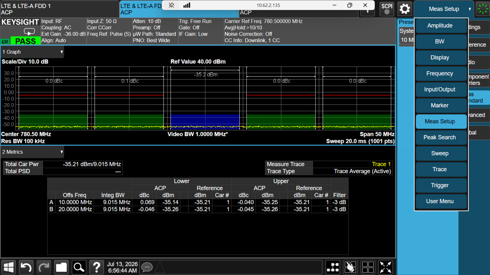
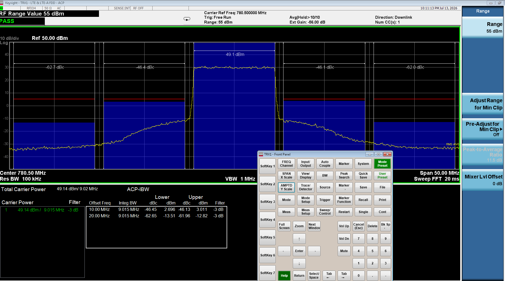
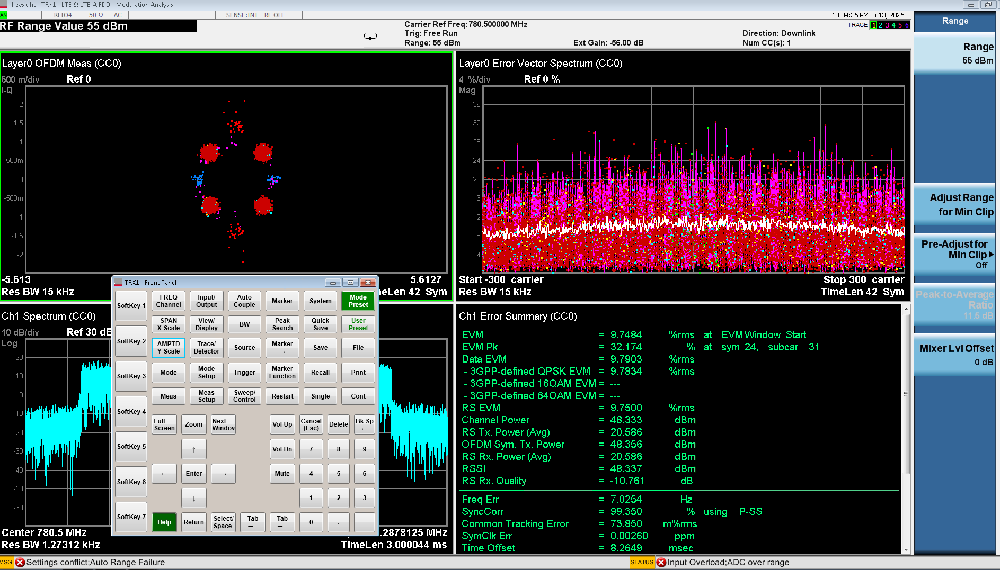

All RCT features in-depth · PA Protection · RSSI · NF · DSA · TDD Trigger · Cadence Groups
FC01ACLR — Adjacent Channel Leakage RatioAdvancedclick to expand+
3GPP §6.6.2 · test_Tx_ACLR · Cadence P0/P1/P2 · ETM 1.1 · frequency fm
Plain English First
Your PA amplifies the wanted signal but also creates distortion products that leak into neighboring channels. ACLR measures how much power you're spilling on your neighbors. Higher dB = less leakage = better. 3GPP minimum is 45 dB. PW internal target for Metro/FHGW is 55 dB.
Pass/Fail Limits
Hardware
Limit
Tolerance
Band Override
COMBA OPT7.2 / OPT8
≥ 45 dB
±0.8 dB
None
FHGW Box / Metro
≥ 55 dB
±0.8 dB
b0407, b0307_2nd_run, b082028_2nd_run, b41_1st_run → 52 dB
MiniMetro
≥ 55 dB
±1 dB
None
How Test Runs
ETM: 1.1 only (QPSK 1/3 — cleanest signal, easiest for PA) · Frequency: fm (band middle) · EXA measurement: ACP mode → 4 offsets (A_lo, A_up, B_lo, B_up) → worst case is verdict Note: B-offset (±2×BW) often hits instrument noise floor → use A-offset (±BW) for real verdict
What If It Fails
DPD not converged → check DPD alignment in PreChecks · PA compression → output power too high, reduce gain · DAC clipping → CFR input power wrong register (0x534020004) · Cable VSWR → reflection re-enters PA, creates mixing products
Interview Q
Q: ACLR is 50 dB but spec is 45 dB — why might it still fail? A: FHGW Box and Metro have a tighter internal spec of 55 dB. The 3GPP 45 dB limit is the regulatory minimum; PW adds 10 dB margin for interference management.
Real RCT Implementation — actual code from the test framework
Files:measure_test_Tx_ACLR (features/tech_4g/conformance_unified_lte_tx_speed.py) · analyzer setup config_te_for_lte_acp (infrastructure/utils.py) · fetch sa_acp_acquire_averaged (test_equipment/te_equipments.py).# config_te_for_lte_acp (utils.py)
INST:SEL LTEAFDD
CONF:ACPower
MMEMory:LOAD:MASK ".../ACP_BS/ACP_BS_{bw}MHz_pairE-UTRA_CatB.mask"
:SENSe:ACPower:OFFSet:LIST:STATe ON,ON,OFF,OFF,OFF # A(+/-BW) + B(+/-2xBW)
:SENSe:ACPower:AVERage:COUNt 10
:SENSe:ACPower:AVERage:STATe ON
# sa_acp_acquire_averaged (te_equipments.py)
:INIT:ACP ; verify_opc() ; FETCh:ACPower10? # -> ~40-value tableResult parse:ACLR_CHANNEL_IDX = (3,13,23,33) → abs() of A_lower, A_upper, B_lower, B_upper. KPI (Metro_kpi_thresholds.json):test_Tx_ACLR.min_limit = 55 dBc, tolerance = 0. limits_validation_aclr (utils.py): each offset PASS if meas > limit (higher = better). Band override (the 52 dBc): the validator reads band_min_limit["{fhgw_band}_{dualband_step}"] → 52 dBc for the 2nd-run / dual-band cases (b0307_second_run, b0407, b082028_second_run, b41_first_run). Quirks: 10-sweep ACP averaging (GRDEV-8508, ~0.2 dB margin on B7 top channel); the B offset (±2×BW) often sits at the instrument noise floor, so the A offset is the real verdict.
Real RCT quirk — auto-range (min-clip) before ACLR (PR 586 / GRDEV-8131)
measure_test_Tx_ACLR was the only TX measure missing the analyzer auto-range that every other TX test already did. Added before the ACP read:ant.equiphandler.sa_set_atten_for_min_clipping() # SENSe:POWer:RF:RANGe:OPTimize IMMediate"Min-clip" = adjust the analyzer input range for max dynamic range without overload. Without it, the per-RFFE isolated (lower-power) signal read ACLR near the noise floor → degraded 51–52 dBc; with it each isolated path auto-ranges → 54.5–55.6 dBc (+2–3 dB). EVM always passed because its measure already auto-ranged. (See FC20 for per-RFFE IQ playback.)
Lab screenshots — real EXM ACP measurements

Real EXM ACP measurement — B28 low power, Metro AAU rev3

Real EXM ACP/ACLR — B28 full power (TRX1), Metro AAU rev3
FC01TACLR — Automation Trace: config → code → run → verdict (ruauto RCT)Code Traceclick to expand+
3GPP §6.6.2 · test_Tx_ACLR · framework: ruauto · concrete setup: RCT-4G-GR-AAU-B1B3-TRX7 · paths are repo-relative to ruauto/source/ unless noted · this is the "how the automation actually does it" companion to the ACLR card above
The whole flow in one line
A priority profile (P0/P1/P2…) names test groups → groups list Test-IDs → test_Tx_ACLR registration declares freqs/ETMs & report columns → the road-trip loop sets the DUT transmitting an E-TM and dispatches measure_test_Tx_ACLR by name → it drives the analyzer in ACP mode, fetches 4 adjacent-channel ratios → limits_validation_aclr compares each to the KPI limit → verdicts written to Excel + CI/Elastic.
① What configuration the test needs
Four files in the setup folder drive ACLR. The runner is fully config-driven — no test code changes per setup.
File
What ACLR reads from it
tc_cadence.json
Test-IDtest_Tx_ACLR: {frequency:["fm"], etm:["1.1","1.2"]} · it's in groups TS_DL_CI / Nightly / Regression / Sanity · priorities P0,P1,P2,P3 (via the DL groups; not P4/P5)
the pass limit: test_Tx_ACLR: {min_limit:55, tolerance:0, "3gpp_reference":"6.6.2"} → ≥ 55 dB flat for this setup (FHGW_Box file adds tolerance 0.8 + per-band overrides to 52)
ETM waveform: not a file loaded to the analyzer — the E-TM 1.1/1.2 signal is PHY-generated on the DUT by the testmac command rctdl <test_num> <bw> over SSH. The analyzer only loads an ACP limit maskACP_BS_{bw}MHz_pairE-UTRA_CatB.mask.
② The code path (cadence → dispatch)
All in features/tech_4g/conformance_unified_lte_tx_speed.py, class TestConformance. Two-phase design: a registration method declares columns/ETMs, a module-level measure_ free-function does the work — wired by name via globals()['measure_'+key].
Settle/DPD: 15 s settle after a freq change (L1396), check_signal_sync() before fetch (L3132), DUC max current wrapped around the sweep (L3114/3225), 10-sweep averaging (rationale: GRDEV-8508, ~0.2 dB margin on B7 top channel).
④ How results are captured
The ACP table has ~40 slots; ACLR reads 4 fixed indices (the two A offsets at ±BW and two B offsets at ±2×BW), all made positive with abs().
ACLR_CHANNEL_IDX = (3, 13, 23, 33) # L3076 A_Lower, A_Upper, B_Lower, B_Upper
measured = [abs(float(table[i])) for i in ACLR_CHANNEL_IDX] # L3168
A_lo, A_up, B_lo, B_up = measured
result = LteUtils.limits_validation_aclr(measured) # L3170 -> verdicts (see ⑤)
# marginal fail within 1.0 dB of limit -> _remeasure_aclr_if_marginal (L3081-3107, uses mean)
Written to: Excel sheet test_Tx_ACLR via xlxfile.write_result(..., one_line=True) (L3219) — all 4 values, each with its Verdict + pass/min criteria columns · CI/Elastic via tc.update_new_elastic(...) (L3220) · running verdict via verdict += [r0,r1,r2,r3] (L3221) → commit_running_verdict · analyzer screenshots to ScreenShots_ACLR_Band{n}_{ant}/.
⑤ How pass/fail is decided
One function: LteUtils.limits_validation_aclr() in infrastructure/utils.py (L4956-5012). Higher ACLR is better, so the test fails when a measured ratio is ≤ the limit.
# threshold resolution order (first hit wins):
# 1) kpi_thresholds["test_Tx_ACLR"].min_limit + .tolerance (+ band overrides)
# 2) tc_cadence["aclr_min_limit"], tolerance = 0.8
# 3) hard fallback: min_limit = 45, tolerance = 0.8 ("3GPP standard")
# -> this setup hits (1): min_limit = 55, tolerance = 0
aclr_pass_limit = aclr_min_limit - tolerance # 55 - 0 = 55
for meas in measured: # all 4 offsets, independently
min_result = FAIL if meas <= aclr_min_limit else PASS
pass_result = FAIL if meas <= aclr_pass_limit else PASS
return pass_results, aclr_pass_limit, min_results, aclr_min_limit
Key point: all four offsets are judged independently — the run fails if any one offset fails. There is no single "worst-case" number reduced before comparison; each ratio must be strictly > the limit. For this setup both the "min" and "pass" lines sit at 55 dB (tolerance 0).
Consolidated pseudo-code (copy/paste memory aid)
run_aclr(setup, priority=P0):
cfg = load(setup/tc_cadence.json)
kpi = load(setup/setup.ini -> kpi_thresholds_references/Metro_kpi_thresholds.json)
equip = load(setup/env_setup.json).analyzer where use_for_test # EXF E6550A :5025
hw = load(setup/fdd_test_setup.json) # bands, power, path_loss, sockets
groups = cfg.Cadence-IDs[priority] # P0 -> [TS_DL_CI, TS_UL_CI]
testlist = flatten(cfg.Group-IDs[g].Tests for g in groups)
if "test_Tx_ACLR" not in testlist: return
etms = cfg.Test-IDs.test_Tx_ACLR.etm # ["1.1","1.2"]
freqs = cfg.Test-IDs.test_Tx_ACLR.frequency # ["fm"]
limit = kpi.test_Tx_ACLR.min_limit # 55 (tolerance 0)
for band in hw.bands: # 1, 3
for bw in group.BW[band]: # e.g. 10
for etm in etms: # 1.1, 1.2
for f in resolve(freqs, band, bw): # fm -> actual MHz
DUT.rctdl(testnum(bw,etm), bw) # PHY emits E-TM (SSH)
wait_active_transmission()
analyzer.config_acp(f, bw) # LTEAFDD, CONF:ACP, load mask, avg=10
table = analyzer.acp_acquire_averaged() # INIT:ACP; FETC:ACPower10?
offs = [abs(table[i]) for i in (3,13,23,33)]# A_lo,A_up,B_lo,B_up
verdict = [ "PASS" if x > limit else "FAIL" for x in offs ]
xlsx.write("test_Tx_ACLR", f, bw, etm, offs, verdict, limit)
CI.push(offs, verdict)
# overall ACLR = PASS iff every offset of every (band,bw,etm,freq) is PASS
Variants & reuse (same verdict engine)
OTA — measure_test_Tx_ACLR_OTA (L3229+): radiated, selects a single TX antenna, sa_set_atten_for_min_clipping(), positioner azimuth/elevation sweep, TRP targets, extra power-meter columns. Samelimits_validation_aclr + ACLR_CHANNEL_IDX. tc_cadence runs it on E-TM 3.1a, but the function itself only proceeds for 1.1/1.2 (GRDEV-8243). Intermodulation §6.7 reuses measure_test_Tx_ACLR (loop L2850) with an inter_ctx that excludes interferer-occupied bins (TS 36.141 6.7.5). TDD 2-carrier — test_Tx_ACLR_2CC in features/tech_4g/tdd/Tx/conformance_nr_tdd_tx.py (not used by this FDD setup).
Reading a full LTE demod frame on the analyzer is slow, so the framework reads the Frame Summary table once per antenna and pulls all five TX-quality metrics from that single read. test_Tx_modulation_analysis has no freq/etm of its own (tc_cadence L17-18 is just a _note); each sub-test keeps its own Test-ID entry, and a group-level etm can override via the group_via trick (utils get_tc_cadence_param L115).
① The 5 sub-tests, their table field & pass limit (Metro)
Sub-test
Frame-table field
Pass limit (this setup)
3GPP
BS Output Power
ChannelPower
diff within ±2 dB (strict ±1.3, tol 0.7)
6.2
EVM
EVM
≤ 3.5% all ETMs (tol 0)
6.5.2
Frequency Error
FreqErr
≤ 0.05 ppm × f_DL (tol_hz 0)
6.5.1
Time Offset
TimeOffset
−160 < x ≤ 320 ns ⚠ hardcoded, no JSON
internal
DL RS Power
RSTP
expected ± 2.1 dB
6.5.4*
Runs in groups TS_DL_CI/Nightly/Regression/Sanity/Check → priorities P0,P1,P2,P3,P5. *DLRS: JSON says 6.5.4 but the validator docstring says 6.5.3 — a doc mismatch.
② Code path (one session, five extractions)
MOD_ANALYSIS_SUBTESTS = {EVM, BS_Output_Power, FrequencyError, DLRS, time_offset} # L40-43
test_Tx_modulation_analysis(self, xlxfile) # L301 register cols; resolve each
# sub-test etm/freq via group_via
dispatch: globals()['measure_test_Tx_modulation_analysis'](...) # L1030 (freq_type kwarg)
measure_test_Tx_modulation_analysis(...) # L1891
for ant in antennas:
config_te_for_lte_modulation_analysis_frame_summary(...) # utils L3468
headers = sa_read_headers_from_selected_modulation_analysis_windows(4) # L1933
values = sa_read_from_selected_modulation_analysis_windows(4) # L1934
table = dict(zip(headers, values)) # ONE table -> all 5 metrics
# per-metric block, each gated so it isn't double-run when also standalone (L699-700)
# note: a sub-test also present in this run's short_run is SKIPPED here (dedup, L375-382)
③ Run + ④ parse (shared)
DUT:start_rctdl(bw,etm) (products/vru/fdd_4g/base.py:505). Analyzer:config_te_for_lte_modulation_analysis_frame_summary sends CONF:EVM, loads demod setup TM<etm>-BW<bw>MHz.evms, feeds "Demod CC0 Frame Summary1" + "Error Summary1", :TRIG:EVM:SOUR EXT2; for 3.1a also EVM:CCAR0:HOM:STAT ON. Values via CALC:EVM:DATA4:TABL:STR?.
EVM measures how far each IQ symbol lands from its ideal position on the constellation. Think of it as aiming accuracy — 0% is perfect, higher % = more scatter. 64QAM needs tighter clustering (≤3.5%) than QPSK (≤17.5%). Anything above limit = blocks decoded incorrectly.
EVM% Formula
EVM% = √(Σ|error_vector|² / Σ|ideal_vector|²) × 100 Error vector = difference between actual measured IQ point and ideal IQ point
Limits by ETM
ETM Code
Modulation
3GPP Limit
Metro/FHGW Internal
Test Use
1.1
QPSK 1/3, 6 RBs
≤ 17.5%
≤ 3.5%
Standard nightly
2a
QPSK+64QAM mix
≤ 3.5%
≤ 3.5%
Regression
3.1
64QAM full BW
≤ 8.0%
≤ 3.5%
Regression
3.1a
64QAM alternate
≤ 3.5%
≤ 3.5%
Regression
3.2
16QAM
≤ 12.5%
—
Regression
3.3
QPSK full BW
≤ 17.5%
—
Regression
What If It Fails
IQ imbalance → constellation rotated/skewed → check IQ calibration registers · LO phase noise → symbol cloud diffuse → check PLL lock · DAC nonlinearity → even/odd harmonics → reduce DAC input level · DPD failure → PA distortion uncorrected → check DPD alignment status · Temperature → EVM degrades above 55°C PA junction temp
Interview Q
Q: ETM 1.1 limit is 17.5% but you're testing at 3.5% — why? A: 3GPP 17.5% is the regulatory floor. Metro internal spec is 3.5% for all ETMs — if we pass 3.5% on ETM 1.1, we know the radio is well within margin for any operator requirement.
Real RCT Implementation — actual code from the test framework
Files: composite measure_test_Tx_modulation_analysis reads table['EVM'] from the frame-summary; standalone measure_test_Tx_EVM uses a dedicated CEVM fetch.# standalone EVM (te_equipments.py)
CONF:CEVM
sa_evm_test_etm_vs_modulation(etm) # picks the right metric per ETM:
1.1 -> EVM ; 2a/3.1a -> 3GPP-256QAM EVM ; 3.1/2.0 -> 3GPP-64QAM EVM
3.2 -> 16QAM ; 3.3 -> QPSK
FETCH:CEVM1? # standalone read
# composite path
CALC:EVM:DATA4:TABL:STR? # frame summary -> table['EVM'], table['EVMPeak']KPI:test_Tx_EVM.etm_dependent = true, every ETM min_limit = 3.5%, tolerance = 0. limits_validation_EVM (utils.py:4473): PASS if EVM ≤ 3.5% (lower = better). 3GPP floor is 8–17.5% by ETM — PW is far stricter.
EVM RMS vs Peak %
The frame-summary table carries two numbers: EVM (RMS, averaged over all subcarriers/symbols) and EVMPeak (the single worst RE). RMS is the pass metric (vs 3.5%); Peak is a diagnostic. A high Peak/RMS ratio points to a sporadic impairment (one bad subcarrier, an LO spur, a DAC glitch) rather than uniform noise — if RMS is fine but Peak spikes, look for a localized defect, not a broadband SNR problem. Uniform thermal/quantization noise gives a low, steady Peak/RMS.
EVM Peak % vs RMS EVM — your early warning system
RMS EVM = root-mean-square over all symbols — the 3GPP/Metro pass metric (≤ 3.5%). EVM Peak = the worst single symbol, typically 3–5× RMS; not a BS limit, but the EXA reports it — use it for debug.
Pattern
Meaning
Likely cause
Peak >> RMS (e.g. 2% / 15%)
impulse distortion — occasional bad symbols
PA clipping on a PAPR spike, PLL phase hit, IQ-sample drop in eCPRI, B41 TDD trigger glitch
Peak ≈ RMS (e.g. 3% / 4%)
uniform distortion — consistent impairment
IQ imbalance, LO leakage, DC offset, sustained phase noise, constant DPD error
Example: RMS 3.2% passes Metro's 3.5%, but Peak 14% reveals an intermittent fault — in the field it causes sporadic CRC failures + HARQ retransmits. Read both on the EXA: Modulation Analysis → Summary. Q: EVM RMS 3.0% (passes) but Peak 18% — pass the test?Technically yes (spec is RMS-only), but 18% peak = one-in-N symbols severely wrong. Flag it and hunt the impulse source before sign-off: B41 TDD trigger timing, eCPRI sequence errors, the CFR register value.
Real RCT quirk — EVM modulation-table crash-guard (ECS)
table['EVM'] → table.get('EVM') (also ChannelPower, TimeOffset, FreqErr, RSTP). When the analyzer couldn't demod-sync, the modulation table came back missing those keys entirely → KeyError: 'EVM'hard-crashed the whole TX road-trip at the first frequency (seen on B8 real-tx). Now a no-sync read degrades to 0/fail (what the file's own _safe_float already intends) instead of crashing — the run completes and produces the full per-antenna/per-freq table. Behaviour is unchanged when the key is present.
Lab screenshot — real EVM + constellation

Real EVM + constellation — TRX1, Metro AAU rev3
FC02TEVM — Automation Trace: config → code → run → verdictCode Traceclick to expand+
3GPP §6.5.2 · test_Tx_EVM · Metro limit ≤ 3.5% (all ETMs, tol 0) · runs both inside Modulation Analysis and standalone
① Config
tc_cadence.json Test-ID L10: etm ["1.1","2a","3.1a","2.0","3.1"] (overridden to ["1.1"] in CI/Sanity/Check groups). Metro_kpi_thresholds.json L177-190 test_Tx_EVM: etm_dependent:true, every ETM min_limit 3.5, tolerance 0 → pass line 3.5%. 3GPP floor is 17.5% (ETM 1.1) — PW is far stricter.
② Code path
Two ways in — as a Modulation-Analysis sub-block, or standalone with a dedicated CEVM fetch.
composite: measure_test_Tx_modulation_analysis(...) # EVM block L2002-2018
avg_evm = table['EVM'] # from shared Frame Summary
standalone: measure_test_Tx_EVM(...) # L2084
config_te_for_lte_cevm(...) # utils L3548 -> CONF:CEVM
sa_evm_test_etm_vs_modulation(etm) # te L2124 pick EVM vs 3GPP-64/256QAM
sa_read_parameter_from_cevm(...) # te L2089 FETCH:CEVM1?
③ Run + ④ results
ETM→modulation map (sa_evm_test_etm_vs_modulation, te L2124): 1.1→EVM, 2a/3.1a→256QAM EVM, 3.1/2.0→64QAM EVM, 3.2→16QAM, 3.3→QPSK. Parse (L1962): avg_evm = _safe_float(table['EVM']); dB form 20·log10(evm/100); peak EVMPeak; per-modulation via read_3gpp_evm (L59) keys 3GPPEVMQPSK/16QAM/64QAM/256QAM. Written to Excel sheet test_Tx_EVM + CI/Elastic.
Measures whether the radio is actually outputting the power it was told to output. Formula: diff = configured_power − measured_power. Pass if diff is within limits. For FHGW, the 'configured power' is the rated P_rated at the BOB SMA connector.
+ve error (too much power) → calibration drift, check DAC scale registers · −ve error (too little power) → PA gain low, cable extra loss, fault 12 (tx_calibration_eeprom.json missing — caused ~6 dB B41 deficit in your unit 509 testing) · Band-specific failure → DSA register wrong for that band
FC03TBS Output Power — Automation Trace: config → code → run → verdictCode Traceclick to expand+
3GPP §6.2 · test_Tx_BS_Output_Power · verdict on diff = configured − measured, within ±2 dB (strict ±1.3) · ETM 1.1
⚠ Gotcha: the composite reports the strict verdict result['min_criteria'][1] (correct), but the standalonemeasure_test_Tx_BS_Output_Power appends result['min_criteria'][3] (L2499) — that index is the numeric limit abs(min)=1.3, not a PASS/FAIL string. Real code inconsistency between the two paths. File map: measure conformance_unified_lte_tx_speed.py L1979/2439; validator utils.py L4183/4011; driver te_equipments.py L2040.
FC04Frequency Error — Carrier Frequency AccuracyIntermediateclick to expand+
How far is your actual TX carrier from the EARFCN-defined nominal frequency? Specified in ppm (parts per million). 0.05 ppm at 2100 MHz = 105 Hz offset. UE uses frequency error to correct its own oscillator — too much error and UE loses lock.
Pass/Fail Limits
3GPP limit: ±0.05 ppm Metro tolerance: 0 Hz (zero tolerance — stricter) COMBA/FHGW tolerance: ±12 Hz Example at B1 2140 MHz: ±0.05 ppm = ±107 Hz
What If It Fails
TCXO drift → temperature compensation failed · GPS/PTP sync loss → reference clock running free → check fronthaul sync · PLL not locked → check PLL lock status register
FC04TFrequency Error — Automation Trace: config → code → run → verdictCode Traceclick to expand+
FC05TTime Offset — Automation Trace: config → code → run → verdictCode Traceclick to expand+
test_Tx_time_offset · symbol-timing offset of the transmitted frame vs the trigger · limit is hardcoded, not in JSON
① Config ⚠ no threshold key
There is no test_Tx_time_offset block in Metro_kpi_thresholds.json — searched, absent. The pass window is hardcoded in code (utils L5090). tc_cadence etm L16 = 5 ETMs. It is a sub-test of Modulation Analysis, so it inherits that dispatch.
When you have 4 columns (A/B/C/D), each antenna must transmit at the same instant. TAE is the worst-case timing difference between any two antenna ports. If columns are misaligned → beamforming fails → no array gain → coverage hole.
Pass/Fail Limits
Hardware
TAE Limit
How Measured
COMBA / FHGW Box
≤ 90 ns
EXA MIMO summary table, max across all pairs
Metro (tighter)
≤ 65 ns
Same — stricter PW internal spec
5G NR (TS 38.104)
≤ 65 ns
sa_read_mimo_table → FETCH:EVM000030
EXA SCPI
sa_set_evm_mimo_summary() → :DISPlay:EVM:VIEW MIMO :SENSe:RADio:MIMO:STATe 1 :FETCH:EVM000030? → parse columns [6,28,50,72,94] → TAE_i = abs(value_i) TAE_result = max(TAE_i across all antennas)
What If It Fails
Cable length mismatch → 1 ns per 20 cm cable → measure and match · Phase cal error → RFFE phase shifter not calibrated · Different RFFE propagation delays → check JESD204B alignment across lanes
FC06TX Dynamic Range — Power Control RangeIntermediateclick to expand+
How wide a power range can the radio cover? From max power down to minimum allocated power. Wide range = radio can serve UEs from next to it (low power) to cell edge (max power). Too narrow = can't serve close UEs without interfering with neighbors.
Pass/Fail Limits
Bandwidth
3GPP Min Dynamic Range
Tolerance
5 MHz
≥ 13.9 dB
±0.4 dB
10 MHz
≥ 16.9 dB
±0.4 dB
15 MHz
≥ 18.7 dB
±0.4 dB
20 MHz
≥ 20.0 dB
±0.4 dB
Test Procedure
ETM 2a (QPSK+64QAM mix) — varying RB allocation to create high and low power states Measure Channel Power at min and max RB configs → compute difference → compare to limit
What If It Fails
Minimum power too high → LO leakage sets floor → check PA isolation · Max power clipped → CFR limiting too aggressively → check CFR threshold register
Case study — dynamic range short of 3GPP, fixed by moving 3 dB from the CFR input to the DAC current
What the test does: TX dynamic range = OFDM-symbol TX power with all RBs (E-TM 3.1 / 3.1a / 3.1b) minus OFDM-symbol TX power with a single RB (E-TM 2 / 2a / 2b). The difference must be at least the 3GPP value (5/10/15/20 MHz: 13.9 / 16.9 / 18.7 / 20 dB, no test tolerance — limits in RCTTC01 and FC06T).
The problem: the range came out short (e.g. B8 10 MHz 16.6–16.8 dB against 16.9 dB). The single-RB power looked “too hot” relative to the full-RB power. The cause, in one line: with all RBs on, the signal has a high peak-to-average ratio, so the CFR clips it and trims a little off the full-RB power; with one RB there is nothing to clip. Clipping squeezes the full-RB power down, so the difference (the dynamic range) shrinks. The fix: drive the CFR less hard and make the level back up after it — lower Gain A (the CFR-input / clipping knob, M09c) by 3 dB and raise the DAC full-scale current to restore output power. Less clipping → full-RB power no longer squeezed → the dynamic range opens up, and EVM improves because there is less clipping distortion. DPD/PA linearity is unchanged because the PA drive is restored by the DAC, not by a gain stage before the CFR.
# 1. Gain A (CFR input) −3 dB: 0xD7 → 0x98
devmem 0x534020004 32 # read: 0x000000D7
devmem 0x534020004 32 0x98 # write
devmem 0x534020004 32 # read back: 0x00000098
# 2. DAC full-scale current up (to restore output power)
rfdc-app --debug
1] DAC CURRENT WRITE → Tile 1, Block 1 (= DAC11)
DAC11 Output Current status = 31018 uA
enter 38981 → "DAC11 Output Current is 38937 uA" # production range 2250–40500 uA
Result after the change (EXM LTE modulation analysis, B3 1842.5 MHz, 256QAM, cell ID 1):
Item (B3, 1842.5 MHz, after the change)
Value
Comment
EVM (composite)
1.61 % rms
peak 10.9 % at symbol 23, subcarrier 141
Data EVM / 256QAM EVM
2.92 % / 3.00 % rms
256QAM limit 3.5 % → passes with 0.5 % margin
RS EVM
0.98 % rms
Channel power
34.0 dBm
with −35.3 dB external gain entered for the cable/combiner
Frequency error
13.5 Hz
≈ 0.007 ppm (limit ±0.05 ppm)
IQ offset / gain imbalance / quad error
−53.0 dB / 0.015 dB / 27.8 mdeg
clean modulator
EVM change vs before
≈ 0.6–0.7 % better
less CFR clipping (as reported)
Scope of this run, and what to check before making it permanent:
The DAC step was about +2 dB, not +3 dB. 31,018 → 38,981 µA is 20·log10(38981/31018) ≈ +2.0 dB (if output amplitude follows full-scale current). A full +3 dB would need ≈ 43.8 mA, above the 40.5 mA production maximum. So net output is probably ≈ 1 dB lower than before — compare channel power before/after and, if needed, take the last dB from Gain B or the per-channel gain instead.
Deliberately one antenna path. This was a single-antenna check, so only Tile 1 / Block 1 (DAC11) and the first gain set (0x534020004) were changed; the identical set at 0x534020084 was left as is. For a band-wide fix, apply the same change to every DAC/path of the band.
Bench-only by design: devmem and rfdc-app writes are lost on reboot or carrier re-activation; a permanent fix means changing the personality/calibration values (via a ticket).
Only dynamic range and EVM were checked — this experiment targeted the dynamic-range shortfall. Before adopting the change, re-run the rest of the TX group: output power, ACLR (less clipping raises PAPR and can cost ACLR), PAPR/CCDF and PA protection.
Related: M09c (gain staging, register decoding and the −3 dB worked example), DACG01 (DAC current vs carrier gain), RCTTC01 (all limits).
FC06TTX Dynamic Range — Automation Trace: config → code → run → verdictCode Traceclick to expand+
3GPP §6.3.2 (TS 36.104) / §6.4.2 (36.141) · test_Tx_dynamic_range · "dynamic range" here = OSTP span between a high-power and a reduced-power E-TM, per BW
① Config ⚠ not scheduled in this setup
tc_cadence.json Test-ID L4: frequency ["fm"], etm ["2a","3.1a","2.0","3.1"]. It transmits four E-TMs and forms two deltas: |OSTP(2.0) − OSTP(3.1)| and |OSTP(2a) − OSTP(3.1a)| (high-power model minus reduced-power model). ⚠ It is NOT in any Group-IDs `Tests` list in RCT-4G-GR-AAU-B1B3-TRX7 and is not a Modulation-Analysis sub-test — so no P0–P5 cadence runs it here; it only runs if added to a group or invoked explicitly. Metro_kpi_thresholds.json L145-155 per-BW min_limit dB: 5→13.9, 10→16.9, 15→18.7, 20→20.0, tolerance 0.
② Code + ③ run + ④ results
Register L185 → dispatch globals()['measure_test_Tx_dynamic_range'] L1030 → measure L1748. Invoked once per ETM; verdict formed only once all four OSTPs are collected.
for etm in [2a, 3.1a, 2.0, 3.1]:
start_rctdl(bw, etm) # different E-TM = different power profile
config_te_for_lte_modulation_analysis_frame_summary(...) # utils L3468
table = dict(zip(headers, values)) # Frame Summary window 4
ostp[etm][ant] = float(table['OSTP']) # L1791-1814
diff_2_31 = abs(ostp['2.0'] - ostp['3.1']) # L1832
diff_2a_31a = abs(ostp['2a'] - ostp['3.1a']) # L1839
Note: the DUT power is not commanded/stepped in-function — the span comes from loading different E-TMs. Written to sheet test_Tx_dynamic_range (both diffs + verdicts).
min_limit = kpi['test_Tx_dynamic_range']['limits'][bw]['min_limit']
pass_limit = min_limit - tolerance # tol 0 -> == min_limit
PASS if meas >= min_limit # higher span is better
e.g. at 10 MHz the OSTP span must be ≥ 16.9 dB. File map: measure conformance_unified_lte_tx_speed.py L185/1748; validator utils.py L3949. RX dynamic range is a separate throughput/BLER sweep — test_lte_Rx_DynamicRange1 / _AWGN in conformance_unified_lte_rx_speed.py L352/374 (§7.3).
FC07SEM — Spectrum Emission MaskAdvancedclick to expand+
3GPP §6.6.3 · test_lte_Tx_Mask · Regression cadence only
Plain English First
A mask drawn around your channel — your emissions must stay below it at every frequency offset. Think of it as the shape your signal is allowed to occupy. Anything leaking outside = FAIL. Unlike ACLR (which measures one adjacent channel), SEM checks the full spectrum shape.
SEM Limits (Standard / COMBA / FHGW)
Offset from channel edge
Limit
Measurement BW
0 → 5 MHz
−5.5 to −7.5 dBm (sloping)
100 kHz RBW
5 → 10 MHz
−12.5 dBm flat
100 kHz RBW
> 10 MHz
−13.0 dBm flat
1 MHz RBW
Metro SEM Limits (tighter)
Offset
Limit
RBW
0.015→0.215 MHz
−14 dBm
30 kHz
0.215→1.015 MHz
−14 to −26 dBm
30 kHz
1.015→1.5 MHz
−26 dBm
30 kHz
1.5→10.5 MHz
−13 dBm
1 MHz
What If It Fails
DPD not aligned → spectral regrowth exceeds mask · Adjacent carrier → dual-band interference → check band isolation filters · Harmonics → 2nd/3rd order products → check PA operating point
Real RCT Implementation — actual code from the test framework
Files:measure_test_lte_Tx_Mask (conformance_unified_lte_tx_speed.py) → config_te_for_lte_mask (utils.py) → sa_load_mask_setup(get_sem_mask_setup_name(bw, dl_freqGHz, duplex)) → FETCh:SEMask10?. The analyzer loads a per-(bw, freq, duplex) mask file and returns pass/fail + worst margin per segment.Mask (Metro_kpi_thresholds.json → test_lte_Tx_Mask, array [Δf_start, Δf_stop, limit_start, limit_stop, MBW]):
Offset from edge
Limit (dBm)
Meas BW
0.015–0.215 MHz
−14
30 kHz
0.215–1.015 MHz
−14 → −26 (slope)
30 kHz
1.015–1.5 MHz
−26
30 kHz
1.5–10.5 MHz
−13
1 MHz
> 10.5 MHz
−15
1 MHz
3GPP §6.6.3. Note the KPI comment literally reads "Operating band unwanted emissions (SEM)" — so this test is the OBUE test (see FC18).
What SEM actually measures — the mask explained
The mask is a continuous power-limit envelope vs frequency offset from the CHANNEL EDGE (not from carrier centre). For a 20 MHz channel the edge sits at ±10 MHz from centre, so a "0–5 MHz offset" point is 10–15 MHz from the carrier.
Offset from edge
Meas BW
Representative 3GPP limit
0–5 MHz
30 kHz
−10 dBm
5–10 MHz
30 kHz
−13 dBm
10–25 MHz
30 kHz
−25 dBm
> 25 MHz
30 kHz
−25 dBm
Note: the table above is the generic wide-area-BS shape. The actual mask your RCT loads is stricter and per-band — see the "Metro SEM Limits" box above (−14 dBm near-edge tapering to −26, then −13/−15 dBm), loaded as a per-(bw, freq, duplex) mask file by config_te_for_lte_mask.
SEM vs ACLR — what each catches
ACLR = integrated power in one adjacent-channel bandwidth → one number per neighbour; catches broadband spectral regrowth. SEM = continuous spectral envelope → catches a narrow spur near the edge and asymmetric distortion. ACLR can PASS while SEM FAILS if a single narrow spur pokes above the mask just outside the channel. They are complementary — always run both.
Multi-band SEM — the B1+B3 interaction
With B1 (2140 MHz) and B3 (1842 MHz) both active, IM3 products appear:2*f_B1 - f_B3 = 4280 - 1842 = 2438 MHz (near B41 - can hit B41 SEM if B41 active)
2*f_B3 - f_B1 = 3684 - 2140 = 1544 MHz (in B1 UL - can hit B1 UL protection)This inter-band IMD is why the dual-band 2nd-run ACLR limit relaxes to 52 dBc (b0103) — SEM gets an equivalent relaxation. Debug: SEM fails only with the second carrier active → inter-band IMD, not a DPD problem (DPD linearises one carrier at a time). Check inter-band isolation between the PA output paths.
Worked example — B3 @ 1812.5 MHz / 15 MHz (Metro AAU, PNG customer)
Channel: 1812.5 ± 7.5 = 1805–1820 MHz (the wanted 52.5 dBm). DL operating band B3: 1805–1880 MHz (3GPP-fixed). SEM territory (§6.6.3): band edge ±10 MHz = 1795–1890 MHz — crucially measured from the band edges, not your channel. Because this 15 MHz sits at the very bottom of B3, the SEM region extends far above you (to 1890) but barely below (to 1795).Vendor mask actually loaded (bands >1 GHz, Cat B; TS 36.104 Table 6.6.3.2.1-6 — one table for 5/10/15/20 MHz, so the 10 and 15 MHz mask files are identical):
Offset from edge
Limit
Meas BW
0.05–5.05 MHz
−5.5 → −12.5 dBm (sloped)
51 kHz
5.05–10.05 MHz
−12.5 dBm
100 kHz
10.5–15 MHz
−15 dBm
1 MHz
The failing 10.5–15 MHz segment lands at ~1830.5–1835 MHz — inside B3's band, so the limit legitimately applies. Measured −14.83 dBm vs −15, and it repeats across three antennas (A −14.83, C −14.09, D −15.44) → the single most credible genuine radio finding in the campaign. (RBW matters: the same emission in 51 kHz vs 1 MHz differs by 10·log₁₀(1e6/RBW) ≈ +12.9 dB — we log the raw value in its own RBW, because that's what the 3GPP limit is specified against.)
Frequency territories & why the framework splits spurious into 5
1795 1805 CHANNEL 1820 1880 1890
──────┼──────────┼─────────────┼───────────────────────┼──────┼────►
│ │ wanted │ │ │
│◄──────── DL operating band (1805-1880) ─────────►│ │
│◄──────────── SEM territory 6.6.3 (1795-1890) ───────────►│
spurious 6.6.4 ◄─┘ └─► spurious3GPP defines 4 spurious ranges; the framework splits the last (1 GHz–12.75 GHz) around the SEM gap — for B3 that gap is exactly 1.795–1.89 GHz — giving 5 rows, so SEM (§6.6.3) and spurious (§6.6.4) neither overlap nor double-count. The sweep stops at 12.75 GHz because 7 harmonics of 1812.5 MHz fit below it. Why only 2nd/3rd harmonics matter: the PA transfer series coefficients collapse (a₁ ≫ a₂ ≫ a₃, ~20 dB/order), the top harmonic gets the smallest algebraic share (cos³ gives 3f only ¼; cos⁵ gives 5f only 1⁄16), and the post-PA low-pass filter attenuates more with distance — by the 4th harmonic you're below the noise floor.
Real failure from the field — BSNL B1 run (fhgw.log)
From ruauto's auto-collected fhgw.log (136k lines, B1 antenna-A run @ DL 2159/2164). The RU never attenuates: all 303 power-scale ops read Attenuation: 0 dB, gain 0x11cc — constant, unattenuated gain across every E-TM. So the dynamic-range (§6.4) 1.1–1.2 dB deficit (measured 15.66–15.82 vs 16.9 dB limit) is not the RU gain chain — it points at the E-TM 2 OSTP measurement (an unoccupied-subcarrier noise pedestal inflating the min-power figure) or DU baseband scaling. Confirming: the 15 MHz 2.0→3.1 pair even passes (20.17 vs 18.7), so it's not a fixed RU limit. Also: the 38 unit-out-of-order alarms are benign (carriers torn down to reconfigure freq/E-TM); no DPD state is logged (would need on-device /run/media logs to judge ACLR 53–56 dBc vs the 55 target); and dac_current_values has no B1 entry (B3/B28/B41 do) — a real gap, but not the root cause since B3 also fails §6.4.
Real RCT gotcha — SEM segment mis-indexing (GRDEV-7734, Change 2)
The analyzer returns SEM as a flat list of (lower, upper) pairs — segment n lives at indices 2n / 2n+1. A defect used deltas_table_ind = 1 (never incremented), so segments 3, 4, 5 displayed a neighbouring segment's value and three genuine measurements (slots 7,8,9) were never read.- deltas_table_ind = 1 # never incremented -> wrong from segment 3
+ lower_ind, upper_ind = 2*ind, 2*ind+1 # correct 2n / 2n+1
+ if len(deltas_table) <= upper_ind: break # bounds guard, no IndexErrorVerified on the E6680A: :FETCh:SEMask15? returns 24 fields, 10 real at indices 0–9, the rest 9.91E+37 (Keysight "no result"). Verdicts did not change (SEM genuinely exceeds the mask by ~0.2–2.4 dB) — the fix corrects which segment each number is shown against, which is exactly what an RU-side investigation uses. Silent for ~12 months because the two live nightlies fall back to 3 segments (only the last wrong); ours was the first to run 5 segments and exposed 3 of 5.
FC08TX Off Power — Transmitter OFF PowerIntermediateclick to expand+
3GPP §6.4.1 · test_Tx_Transmitter_off_power · Not in standard cadence
Plain English First
When the transmitter is supposed to be OFF (between TDD bursts, or when no UE scheduled), how much power is still leaking? Even an 'off' PA leaks. This test catches it. Limit scales with bandwidth — wider channel = more noise bandwidth allowed.
Pass/Fail Formula + Limits
Formula: Limit = −85 dBm/MHz + 10·log₁₀(BW_MHz)
BW
Calculated Limit
5 MHz
−85 + 7.0 = −78.0 dBm
10 MHz
−85 + 10.0 = −75.0 dBm
15 MHz
−85 + 11.8 = −73.2 dBm
20 MHz
−85 + 13.0 = −72.0 dBm
Transient Period (§6.4.2)
Limit: ≤ 17 μs ramp time (both ON→OFF and OFF→ON transitions) Tested simultaneously with OFF power in test_Tx_Transmitter_off_power()
What If It Fails
PA bias leakage → PA not fully shutting off → check power sequencing · LO bleedthrough → LO still running during TX OFF → check LO gating
FC09Reference Sensitivity — Minimum RX PowerAdvancedclick to expand+
The weakest signal the RU can still decode correctly. EXM injects a signal at decreasing power until BLER hits 5% threshold. That power level = sensitivity. Lower number = more sensitive = better. Your B1 sensitivity is approximately −102 dBm theoretical (from NF chain calculation).
Stage 1 Coarse: init_power=−63 dBm → step −1 dB (coarse_step=1) Stage 2 Fine: fine_step=0.6 dB around crossing point Stage 3 Finest: finest_step=0.2 dB final precision Abort: bler_100_max_steps=1 → if BLER≥99% for 1 step, abort as FAIL (UL path dead)
DSA Runtime Adjustment
VruDsaMixin.apply_dsa_adjustments_from_ru() → SSH into RU → reads /etc/configs/personalities/<model>-rfdc.txt → DSA(band) per ADC → final KPI = base_dbm + DSA(band) DSA column appears in Excel report for traceability
What If It Fails
RX path open/broken → BLER stays 100% at all powers → bler_100_max_steps triggers · DSA mismatch → sensitivity shifted by DSA error amount · LNA failed → NF jumps ~20 dB → sensitivity degrades severely · ADC_ADJUST wrong → RSSI reads wrong, sensitivity calc offset · Your unit #510 → B1C, B1D, B3D dead → exactly this scenario
Real RCT Implementation — actual code from the test framework
Files:configure_test_Rx_Reference_Sensitivity_Level (conformance_unified_lte_rx_speed.py) → rx_knee_seeded_search → Utils.find_sensitive_point (utils.py); BLER read via get_statistics_ts_fox (testmac "ts fox").# 3-stage descent to the 5% BLER knee (test_parameters, Metro json)
init_power = -52 dBm ; fault_power = -51 (abort ceiling)
coarse_step = 2.5 dB -> fine_step = 0.6 dB -> finest_step = 0.2 dB
bler_threshold = 5 % (target BLER on FRC A1-3)
# DSA / start power (products/rrh/fhgw.py)
sens_point = -105 (RFFE) else -75
back_off_pwr = 5
start_pwr = int(sens_point + back_off_pwr - setup_loss)FHGW DSA runtime limit:kpi_limit = base_dbm + DSA(band), DSA read per-ADC from the RU rfdc.txt by apply_dsa_adjustments_from_ru() — so the sensitivity KPI tracks the actual front-end attenuation of each unit. Effective pass limit (this setup):rx_limits_validation_conditions gives Wide-Area / A1-3 = −69 dBm, +0.7 dB tolerance → −68.3 dBm — this overrides the KPI base_dbm = −101.5. Data vs PRACH sensitivity: data uses FRC A1-3 throughput/BLER descent (this card); PRACH uses preamble detection (miss ≤ 1%) — a different metric (FC10).
Real RCT quirk — B8 low-band RX bring-up (ECS)
Getting B8 RefSens/RSSI to run needed three config fixes:
Fix
Why
cell_amount 1 → 2
with 1 the DU only brought up B8 on ant1 (ant2–4 read noise); 2 brings up all four antennas — the key fix for B8 real-tx
radio_NF: 3
required by the RX RSSI/RefSens path (was missing → KeyError)
add Rx to antenna_mapping[b082028]
the RX road-trip indexes [band]['Rx']; only Tx existed → KeyError 'Rx'
Result on B8: DL EVM 0.54–2.09%, ACLR 60.9–61.9 dBc (all 4 ant × 3 freq); UL RefSens 12/12, RSSI 36/36, PRACH Not Tested.
FC09DSensitivity — Debug Playbook: isolating a low-sensitivity RU (from a real escalation)Debugclick to expand+
3GPP §7.2 · TS 36.104 / 36.141 · "why is B28 RX sensitivity short?" — the step-by-step isolation an interviewer loves
The formula, and what each term means
PREFSENS = −174 + 10·log10(BW) + NF + IM + SNR (dBm) • −174 dBm/Hz = thermal noise floor (kTB at room temp). • 10·log10(BW) = noise power over the occupied bandwidth (Hz). • NF = BS noise figure — 3GPP: 5 dB Wide-Area, 10 dB Medium-Range, 13 dB Local-Area. • IM = implementation margin = 2 dB. • SNR = the SNR that reaches 95% throughput on the FRC (per-BW, from simulation; usually slightly negative). Example (1.4 MHz): −174 + 10log10(1.1M) + 5 + 2 + (−0.6) ≈ −107.3 dBm.
Note: for BW ≥ 5 MHz the requirement is met by applying FRC A1-3 to consecutive 25-RB chunks. Pass = throughput ≥ 95% at the reference level.
RX combining gain — the number people forget
The 3GPP number above is per single RX port. The product combines multiple RX branches, so the system-level sensitivity is better than the single-port figure by the combining gain: • Mid band (B1/B3): 4-RX combining → ≈ +6 dB • Low band incl. B28: 2-RX combining → ≈ +3 dB So a single-port measurement of ~−104 to −105 dBm on B28 becomes ~−107 to −108 dBm after 2-RX combining. Always state which one you're quoting — comparing a single-port measurement against a combined requirement (or vice-versa) is the #1 cause of a "sensitivity looks short" false alarm. B28 has less combining headroom (3 dB) than mid-band (6 dB), so it's the first to look marginal.
The isolation sequence (run in this order)
1 · Pin the firmware. Record the FHGW FW version the shortfall was seen on, and re-measure on a second FW build — rules out a FW/calibration regression before you touch hardware.
2 · +5 dB ADC attenuation, then re-measure. This is the key discriminator:
• sensitivity degrades with +5 dB → not enough system gain / RX gain margin → investigate the RX gain path (LNA, front-end, DSA/ADC_ADJUST).
• sensitivity ≈ unchanged with +5 dB → the ADC input level isn't the limiter → look at the DU / UL demod / BLER measurement path (decode, not RF).
3 · Change the test frequency. Move to a different (clean) in-band frequency. If it recovers, you had external RF interference, not an RU fault — verify the frequency is clean first.
4 · Compare to a reference/certification measurement. Line it up against a known-good result, but normalise first: account for the combining gain (2-RX vs single port) and any difference in the cable-loss application method — don't chase an absolute-value gap that's just a measurement convention.
How the ADC-attenuation check looks at the CLI
get-atten-dfe <ant> <cc> <atten×10> sets the digital front-end ADC attenuation; then inject the FRC and read power-monitor (UL dBFS), get-rssi (dBFS/dBm) and BLER. Sweeping ADC-ATT shows the sensitivity level at the filter input vs the ADC headroom:
ADC ATT
SG @ filter input
get-rssi (dBFS)
BLER (%)
0 dB
−107.8 dBm
−55.9
1.5
10 dB
−106.9 dBm
−64.5
1.5
20 dB
−102.4 dBm
−65.2
1.3
27 dB
−96.5 dBm
−inf (not detected)
1.2
More ADC attenuation eats RX headroom → the achievable sensitivity level rises (worsens). If adding attenuation barely moves BLER/sensitivity, the limit is downstream (DU/demod), not the ADC input.
Interview Q&A
Q: A B28 unit looks ~3 dB short on RX sensitivity — how do you debug it?
A: First check it isn't a measurement mismatch: the 3GPP number is per single RX port, but B28 uses 2-RX combining (~3 dB), so confirm I'm comparing like-for-like and normalise the cable-loss method. Then pin the FW version (re-test on a second build), add +5 dB ADC attenuation — if sensitivity degrades it's an RX-gain/system-gain problem (LNA/front-end/DSA), if it's unchanged the limit is in the DU/UL-demod/BLER path — and finally move to a clean frequency to rule out external interference.
Q: Why does mid-band have more sensitivity margin than B28?
A: Combining gain. Mid band (B1/B3) combines 4 RX branches (~6 dB), low band including B28 combines only 2 (~3 dB), so B28 has half the combining headroom and shows up marginal first.
Q: What does adding ADC attenuation tell you in a sensitivity investigation?
A: It separates an RF-gain limit from a decode limit. If +5 dB of ADC attenuation worsens sensitivity, the RX chain didn't have enough gain margin; if sensitivity barely moves, the ADC input level isn't the bottleneck and the problem is downstream in the DU/UL demodulation/BLER path.
FC07TReference Sensitivity — Automation Trace: config → code → run → verdictCode Traceclick to expand+
3GPP §7.2 · test_Rx_Reference_Sensitivity_Level · RX test: a signal generator (EXF/EXM) injects an FRC uplink; the RU must hit the throughput target · file conformance_unified_lte_rx_speed.py
① Config ⚠ effective limit is −69 dBm, not −101.5
tc_cadence.json Test-ID L19 frequency ["fm"]; in every UL group (TS_UL_CI/Nightly/Regression/Sanity/Check) → P0,P1,P2,P3,P5. Metro_kpi_thresholds.json L266-283 gives search params (init_power −52, coarse_step 2.5, fine_step 0.6, bler_threshold 5) and kpi.base_dbm −101.5 — but the pass limit actually used comes from tc_cadence rx_limits_validation_conditions (L251-260): Wide-Area-BS / A1-3 / all BW = −69 dBm. That custom RRH criterion overrides the 3GPP −101.5. Throughput must be 90–100% (target BLER 5% on FRC A1-3).
② Code path
RX test_Rx_* methods only prep columns; execution is the pytest method test_lte_fdd_Rx_sanity (L460) → road-trip → dispatch by name.
UE uses PRACH to knock on the cell door before getting scheduled. This test verifies the RU can detect that knock at the minimum specified power. The preamble is a Zadoff-Chu sequence — almost zero autocorrelation sidelobes, perfect for ranging.
PRACH Waveform Files (4G FDD)
BW
Waveform File
FRC
5 MHz
PRACH_Bw5[Mhz]_PID32_FreqOffset14_ZCZ8_1UEs.bin
PRACH_PID32_FreqOffset14_ZCZ8_1UEs_1ant
10 MHz
PRACH_Bw10[Mhz]_PID32_FreqOffset35_ZCZ8_1UEs.bin
PRACH_PID32_FreqOffset35_ZCZ8_1UEs_1ant
15 MHz
PRACH_Bw15[Mhz]_PID32_FreqOffset59_ZCZ8_1UEs.bin
PRACH_PID32_FreqOffset59_ZCZ8_1UEs_1ant
20 MHz
PRACH_Bw20[Mhz]_PID32_FreqOffset83_ZCZ8_1UEs.bin
PRACH_PID32_FreqOffset83_ZCZ8_1UEs_1ant
Pass/Fail Limits (FHGW Box)
base_dbm: −87 dBm (pre-DSA) → runtime: base + DSA(band)
Wrong Zadoff-Chu root → detector won't match → check PID32 config · ZCZ/Ncs mismatch → ISI between preambles · B41T TDD timing wrong → 9.9765 ms delay off → PRACH arrives in wrong slot · UL path broken → same as sensitivity failure
Real RCT Implementation — actual code from the test framework
Files:_run_prach (conformance_unified_lte_rx_speed.py) → build_prach_params (products/vru/base/stats.py) → config_te_for_lte_fdd_Rx_Sensitivity_test_case (loads the PRACH waveform) → bisection over SG power → get_statistics_for_prach_console_prints.# waveform loaded onto the signal generator (NVWFM)
NVWFM:PRACH_Bw{bw}[Mhz]_PID32_FreqOffset{n}_ZCZ8_1UEs.bin
FreqOffset 14 @5MHz , 35 @10MHz , 83 @20MHz ; band41 uses 37 @10MHz
# verdict (inline in _run_prach)
miss_detection = Miss_detected_opportunities * 0.1 # percent
PASS if miss_detection <= 1 AND rx_power <= prach_kpi AND opportunities != 0Trigger delay: the code uses a configurableext_delay (per-setup), not a hard-coded constant — the FHGW default is ≈ 9.9995 ms; the B41 TDD frame-alignment value ≈ 9.9765 ms is set in the setup config, not hard-coded in the measure function. ⚠ Config gap: in Metro_kpi_thresholds.json the test_Rx_PRACH.limits are all "TODO" for these bands — no numeric per-band PRACH KPI is filled for this setup, so verdicts fall back to code defaults. Flag before trusting PRACH pass/fail here.
Real RCT quirk — PRACH graceful-skip (ECS)
Wrapped the non-combined start_rctul(...) in the same try/except AssertionError the combined branch already uses. The B8 DU's Test-MAC doesn't have PRACH test 659 → AssertionError: TESTMAC>Test 659 not foundcrashed the whole RX road-trip (after RefSens + RSSI had already passed). Now it logs a warning, marks PRACH Not Tested for that BW, and continues — matching B1/B3 behaviour, and PRACH stays in the cadence.
FC08TPRACH — Automation Trace: config → code → run → verdictCode Traceclick to expand+
3GPP §8 (TS 36.141) · test_Rx_PRACH · SG injects a PRACH preamble at swept power/delay; the RU must detect it with miss-rate ≤ 1% · runs as a stand-alone RX test
① Config ⚠ B1/B3 limits are "TODO"
PRACH is not in tc_cadence Test-IDs — it appears only in UL group Tests lists (TS_UL_CI/Nightly/Regression/Sanity), freq hardcoded ["fm"] in _run_prach (L3175). Metro_kpi_thresholds.json L488-537 test_Rx_PRACH: mode "short", per-BW frc/wvf waveform names — but every entry in limits is the placeholder string "TODO" for this file, so no numeric per-band KPI resolves for B1B3 (code defaults in stats.py L1113 only apply if the value is None, not the "TODO" string). Flag before enabling PRACH here.
② Code + ③ run
Stand-alone dispatch after the road trip: globals()['test_Rx_PRACH'](...) (L525) → _run_prach (L3146).
Console regex pulls Prach opportunities, Miss detected opportunities, PID[n], TA[n]. miss_detection% = Miss detected × 0.1. Written to sheet test_Rx_PRACH (PID, TA, miss_detection %, Rx_Power dBm, KPI dBm, pass-criteria '1').
⑤ Pass/fail — inline in _run_prach (L3453)
if miss_detection <= 1: # ≤ 1% missed
if rx_power <= prach_kpi and opportunities != 0:
ever_passed = True
high = mid # try lower power
else:
low = mid # need more power
if high - low <= tolerance: # 0.5 dB
verdict = "Pass" if ever_passed else "Fail"
PASS only if the RU detects PRACH (≤1% miss) while input power ≤ the KPI sensitivity level. No separate validator — computed inline. File map: conformance_unified_lte_rx_speed.py L525/3146/3453; params products/vru/base/stats.py L1083/383; SG utils.py L3255.
FC17OBW — Occupied Bandwidth (99% power)TX Conformanceclick to expand+
Why it exists
OBW is the bandwidth that contains 99% of the transmitted power. It confirms the signal isn't spreading wider than its channel — a first, cheap sanity check on spectral containment (ACLR/SEM then check the leakage outside it). 3GPP §6.6.1.
Real RCT Implementation — actual code from the test framework
Q: OBW vs ACLR?OBW measures where 99% of your power sits (containment); ACLR measures how much leaks into the neighbour channel. A clean OBW can still fail ACLR if the last 1% tail is high.
OBW deep dive — formula, procedure, causes
Formula: integrate total TX power across the span, then OBW = f_upper(99.5%) − f_lower(0.5%) — the band holding the middle 99%. Typical clean LTE: ~18 MHz for a 20 MHz channel. Limit: OBW ≤ channel BW.EXA procedure: Mode LTE-FDD · Meas OBW · Span ≥ 3× channel BW · read the OBW result directly. OBW too wide? DPD not converged (spectral regrowth), CFR over-clipping, or PA saturation — same root causes as failing ACLR/SEM. vs SEM: OBW measures the wanted signal's width; SEM measures the unwanted emissions outside it. Q: OBW reads 21.5 MHz on a 20 MHz channel — what's wrong?Spectral regrowth. Check DPD convergence first (ACLR is almost certainly also failing). Run dpd-app-orx --debug to see if DPD is tracking.
FC18OBUE — Operating Band Unwanted EmissionsTX Conformanceclick to expand+
Why it exists
OBUE (3GPP §6.6.3) bounds the unwanted emissions across (and just outside) the operating band with the spectrum emission mask. In this RCT framework OBUE and SEM are the same measurement — the KPI entry test_lte_Tx_Mask is literally commented "Operating band unwanted emissions (SEM)" (see FC07). This card frames it from the OBUE side.
Real RCT Implementation — actual code from the test framework
Same as FC07 (SEM):measure_test_lte_Tx_Mask → config_te_for_lte_mask → sa_load_mask_setup(get_sem_mask_setup_name(bw, dl_freqGHz, duplex)) → FETCh:SEMask10?. The mask ranges (see FC07 table: −14 dBm near-edge tapering to −26, then −13/−15 dBm flat) are the OBUE limits.
OBUE vs Spurious
OBUE covers the region from the channel edge out to the operating-band edge + Δf_OOB (mask-bounded, relative-ish). Beyond that it becomes Spurious emissions (FC19), which use absolute far-out limits (−36/−30 dBm). Same analyzer, different frequency regime and limit type.
Interview Q&A
Q: OBUE vs spurious emissions?OBUE is the near-carrier mask across the operating band (SEM); spurious is the far-out sweep (9 kHz–12.75 GHz) against fixed absolute limits.
OBUE in depth — in-band, outside your channel
Conceptually OBUE = emissions within the operating band but outside your assigned channel. Reconciliation: in 3GPP TS 36.141 (and this RCT framework) OBUE §6.6.3 IS the spectrum-emission-mask test — the same test_lte_Tx_Mask as FC07. The near-edge portion of that mask is exactly this in-band-but-outside-your-channel region. Why it matters: B3 (1710–1880 MHz) is shared by multiple operators — your B3 TX must not pollute an adjacent operator's channel inside the same band. The limit follows the operating-band emission mask (matching ACLR at close offsets).
Multi-band OBUE risk + debug
B1+B3 IM products can land inside the B3 band but outside your channel → OBUE failure even though each carrier alone is clean. Debug: OBUE fail + ACLR pass → inter-band IM, not DPD. Q: OBUE fails on B3 when B1 active, passes when B1 off — cause?Inter-band IMD: 2×f_B1−f_B3 or 2×f_B3−f_B1 lands inside B3. Not fixable by DPD (it linearises one carrier at a time) — it's a hardware isolation problem between the B1 and B3 PA paths.
FC19Transmitter Spurious EmissionsTX Conformanceclick to expand+
Why it exists
Spurious emissions (3GPP §6.6.4) are unwanted outputs far from the carrier — harmonics, mixing products, LO leakage — swept from 9 kHz to 12.75 GHz. They must stay under absolute regulatory limits so the PA doesn't pollute other services (and, critically, its own co-located RX band).
Real RCT Implementation — actual code from the test framework
The −96 dBm UL-protection limit is the tight one — it guards the co-located receive band from the TX's own spurs.
Interview Q&A
Q: Why is the −96 dBm UL-protection limit so much tighter than −36 dBm?The RU's own receiver sits right next to the transmitter; a spur landing in the UL band at −36 dBm would desensitize its own RX, so that sub-band is protected to −96 dBm.
Where spurious come from — 5 sources
1. PA harmonics — PA non-linearity makes integer multiples of the carrier. B1 @2140: 2nd 4280, 3rd 6420, 4th 8560 MHz. These move with carrier freq. Suppressed by the duplexer/output filter (need >40 dBc). 2. Clock harmonics — ADC/DAC sample clock (e.g. 245.76 MHz) × N: ×5 = 1228.8, ×9 = 2211.8, ×17 = 4177.9 MHz. These do NOT move with carrier. Suppressed by PCB shielding + ferrite beads. 3. LO leakage — the PLL LO leaks at its own frequency / sub-harmonics, near the carrier offset. 4. PSU switching noise — DC-DC converters (100 kHz–few MHz) couple a comb of low-frequency spurs into the RF path. Fix: ferrites, layout, shielding. 5. Inter-modulation (multi-band) — B1+B3: 2×2140−1842 = 2438 (near B41), 2×1842−2140 = 1544 (B1 UL); higher orders anywhere.
Protected bands — tighter limits
Band
Frequency
Limit
Why
GPS L1
1559–1610 MHz
−47 dBm
GPS interference
WCDMA
operator-dep.
−47 dBm
adjacent operator
Public safety
varies
−47 dBm
emergency services
A spur at 1575 MHz above −47 dBm = certification FAIL even though it's well under the general −30 dBm limit.
EXA measurement procedure
Mode: Basic SA (not LTE mode) · Meas: Spurious Emissions · 9 kHz → 12.75 GHz · Detector: Peak · Sweep: 3–5 min (longest test in RCT).
Range
RBW
9–150 kHz
1 kHz
150 kHz–30 MHz
10 kHz
30 MHz–1 GHz
100 kHz
1–12.75 GHz
1 MHz
First places to check (harmonics): B1→4280/6420 · B3→3684/5526 · B8→1884/2826 · B28→1516/2274 · B41→5090/7635 MHz. (RCT: measure_test_lte_Tx_Spurious loads a per-BW mask and reads FETCh:SPURious? — see the Real RCT box above; general limit −30 dBm, 3GPP §6.6.4.)
Debug decision tree
SPUR ABOVE -30 dBm -> change carrier by +5 MHz -> did it move?
moved ~10 MHz (2x) -> PA 2nd harmonic -> check duplexer rejection @2f
moved ~5 MHz (1x) -> PA fundamental leak / LO product
did NOT move -> clock harmonic or PSU switching
check clock freq & multiples, DCDC freq, shielding
only with 2nd carrier active -> inter-band IMD (hardware isolation; NOT DPD)
Interview Q&A
Q: Spur at 4280 MHz during B1 test, −28 dBm — pass or fail?FAIL: −28 > −30 dBm. Root cause: 2nd harmonic of B1 (2×2140). Check duplexer harmonic rejection at 4280 MHz (want >40 dBc); if OK, check the output filter. Q: Spur at 1228.8 MHz, carrier B3 1842 MHz — a PA harmonic?No — 1842/1228.8 = 1.5 (not integer). It's 245.76 MHz × 5 = the ADC/DAC clock harmonic. Proof: move carrier to B1 2140 — if the spur stays at 1228.8, it's a clock spur. Fix: clock-distribution shielding, ferrite beads. Q: All spurious pass single-band, fail with B1+B3 — what problem?Inter-band intermodulation — IM products of B1×B3 appear as spurs. Not a DPD problem (DPD linearises one carrier at a time). Needs a hardware fix: better B1↔B3 PA-path isolation or band-specific filtering after combining.
Worked example — B3 @ 1812.5 MHz / 15 MHz spurious (measured)
The five ranges and what antenna A actually returned:
Range
Measured
Limit
Verdict
Peak at
9 kHz–150 kHz
−51.8
−36
PASS +18.0
—
150 kHz–30 MHz
−44.4
−36
PASS +7.1
—
30 MHz–1 GHz
−25.4
−36
FAIL −8.4
856.6 MHz
1–1.795 GHz
−0.2
−30
FAIL
1.298187539 GHz
1.89–12.75 GHz
+13.3
−30
FAIL
5.443 GHz
The 1–12.75 GHz "failures" are analyzer artefacts (next box); the 30 MHz–1 GHz fail is genuinely unexplained (its peak moves per antenna: A 856.6, B 896.1, C 925.7 MHz — a fixed mixer artefact can't move) and is the one place a real 10.8 dB failure might hide — resolved by a 50 Ω termination test.
Why 2nd & 3rd harmonics dominate
A real PA bends near full power; write its curve as a series and feed one tone:Vout = a1*Vin + a2*Vin^2 + a3*Vin^3 + ...
cos^2 x -> DC + 2f cos^3 x -> f + 3f
=> the amplifier MANUFACTURES energy at 2x, 3x... the carrierThree effects kill the higher orders: coefficients collapse (~20 dB/order), the top harmonic gets the smallest share (cos³→¼ at 3f, cos⁵→1⁄16 at 5f), and filters improve with distance — so only the 2nd/3rd realistically threaten the limit. Harmonics worsen with output power; the AAU at 52.5 dBm sits right where curvature matters (same physics as guitar-amp clipping). B1 harmonics: 2× = 3.625, 3× = 5.4375, 4× = 7.25 GHz.
The analyzer-compression artefact — real emission vs measurement artefact
The RU outputs 52.5 dBm; after ~41 dB cable loss +11.5 dBm arrives at the analyzer. A mixer wants −10 to −20 dBm to stay linear — at +11.5 dBm it is 20–30 dB into compression and manufactures its own harmonics of the carrier. Three proofs the 1–12.75 GHz peaks are instrument-born: 1. 5443.3 / 1812.5 = 3.003 (exact 3rd harmonic; B1 gave 4278.7/2140 = 1.999, the 2nd). 2. 1.298187539 GHz is identical across antennas A/B/C to 9 sig-figs — three different cables/branches — so it is generated inside the instrument, not the radio. 3. +13.3 dBm = 39 dBc — too poor for a filtered PA (60–70 dBc), right for a compressed mixer (30–50 dBc).ref_val = pass_criteria_dbm % 10 # conformance_unified_lte_tx_speed.py
# Python modulo on negatives: -36 % 10 = +4 , -30 % 10 = 0
# -> analyzer told to expect ~0 dBm while +11.5 dBm arrives -> compressionBench tests to close it: 50 Ω termination (isolates 30 MHz–1 GHz), a 20 dB pad (a real emission drops exactly 20 dB; an artefact collapses further), and fixing the ref-level modulo.
Real RCT gotcha — GRDEV-7734: Spurious could not run on any EXM analyzer
Every TX run aborted with AttributeError: 'KeysightEXM_E6640A' object has no attribute 'sa_set_spur_report_mode_lte_fdd' (utils.py:3657), raised inside test_lte_Tx_Spurious during E-TM 1.1 — which killed the entiretest_lte_Tx_sanity item, so Spurious, EVM, Frequency Error and Dynamic Range all produced NO DATA (that's the real reason "dynamic_range had no data" — collateral damage, not a DU/PHY fault). Root cause: the three spurious SCPI methods live in a shared SpuriousMixin (created 2026-06-25, GRDEV-8244) added to KeysightEXA_N9010B and KeysightPXI_M9410A but missed on KeysightEXM_E6640A. Validated on the E6680A that all the SCPI works (:INST:CONF:LTEAFDD:SPURious, :SENS:SPUR:REPT:MODE MMARgin, :FETCh:SPURious?), so the fix is one line:- class KeysightEXM_E6640A(KeysightEXF_E6550A):
+ class KeysightEXM_E6640A(SpuriousMixin, KeysightEXF_E6550A):After: EVM and Frequency Error went NO DATA → PASS; the run completes instead of aborting. Never caught because no cadence anywhere executes Spurious (1 of 54 setups run it — ours), so the missing mixin was unreachable dead code. (The EXF E6550A/E6650A classes still have the same gap — left alone, no bench to validate.)
FC20Per-RFFE IQ Playback (PR 586) — isolate each RFFE × polRCT Featureclick to expand+
Why it exists
Per-RFFE IQ playback (PR 586 / GRDEV-8131) isolates each RF front-end module (RFFE) on each polarisation and measures ACLR/EVM per path, instead of only the combined output. Before this, TX conformance measured the summed signal from all PAs — so if one RFFE/pol was bad you couldn't tell which. Isolation turns off every path but one, so the analyzer sees just that PA. "IQ playback" = the DU replays a pre-generated IQ ETM waveform (deterministic, TX-only) rather than live PHY.
How it works (tx_speed.py:771 → rffe.py)
_run_iq_playback_measurements, gated on iq_playback=True AND rrh.tx_per_rffe_enabled() (rrh[0].RFFE AND rffe_control.tx_per_rffe).per ETM:
connect_cli_manager -> telnet localhost:8888 (root/root, '>' prompt)
per IQ port (pol A/B/C/D via iq_playback_ant_map):
iq_playback {ETM.bin} {port} 0 0 ; wait 5s ; rrh.rffe_restore_all
per RFFE 1..N:
rffe_isolate(band,rffe,pol):
mb-modify-rffe <0/1>
band-id: B1=1 B3=3 B8=8 B28=9928 B41=41 (TX not stopped)
wait settle_sec (7s)
rffe_verify_isolated -> mb-get-pa : only target ENABLED
else tag ISOLATION_UNCONFIRMED
_iq_measure_one -> measure_test_Tx_* (ACLR/EVM)
row tagged RFFE{n}{pol}_ant{k}
rffe_restore_all (at end and on failure)
Modes, layout & the two quirks that make it reliable
Two modes: each-RFFE-on-each-pol (per-RFFE isolation) and all-RFFE-on-each-pol (0xf baseline, all PAs). Layout: B1/B3/B41 = "all" (4 RFFE × 4 pol = 16 paths); B8/B28 = "split" (RFFE1,2 → A,B; RFFE3,4 → C,D). Two ECS fixes make it dependable: rffe_restore_all before every measure (else RFFEs stay off → analyzer reads noise, ACLR ≈ 0 / EVM ≈ 90%) and auto-range before ACLR (else the isolated low-power path reads ACLR near the noise floor — see FC01). Run flag: --iq-playback=true. Code: source/products/rrh/mixins/rffe.py (RffeMixin), wired into FHGW.
Interview Q&A
Q: A per-RFFE isolated path reads ACLR 51 dBc but the combined output passes 55 — is the PA bad?Probably not — check the analyzer auto-ranged (sa_set_atten_for_min_clipping). An isolated single-PA path is lower power, so without auto-range ACLR sits near the noise floor; with it you get ~54.5–55.6. Q: How do you prove only the target RFFE was transmitting?rffe_verify_isolated reads mb-get-pa — if any non-target PA is still ENABLED the row is tagged ISOLATION_UNCONFIRMED, so a bad isolation can't silently pass.
Burn-in / oven bench: IQ playback without a PTP grandmaster
iq_playback only drives the PA when the unit is PTP-locked: the operations manager opens the carrier gate on sync LOCKED. A burn-in oven or soak bench usually has no grandmaster, so playback runs but the PA stays dark. Workaround on the RU:
The forced lock is volatile: a reboot or unforce_ptp clears it. ptp-tool.py reports the state read-only.
It does not bypass the separate log-file PTP wait inside start_transmission.sh, so use the direct iq_playback path above, not the normal start script.
Never leave a production unit with a forced lock: the radio would transmit with no real timing reference.
FC11PA Protection — 3 dB power reduction on carrier activation: how it works and is testedIntermediateclick to expand+
PW Internal · pa_protection.py · Cadence P1 (Nightly) — runs once before all other tests
Plain English First
When you activate a carrier, the PA protection state machine should automatically reduce power by ~3 dB to prevent overcurrent. This test verifies that 3 dB reduction actually happens. If it doesn't, the PA could be damaged during carrier activation at full power.
How It Works
Step 1: Read FHGW DAC output current BEFORE carrier activation via rfdc-app --debug Step 2: Activate carrier Step 3: Read DAC output current AFTER activation Step 4: Compute power change magnitude Pass: change = 3.0 ± 0.2 dB
Pass/Fail
Expected: 3.0 dB reductionTolerance: ±0.2 dBRange: 2.8–3.2 dB
DAC Map
DAC_MAP in pa_protection.py maps each (fhgw_band, band) pair → (tile_list, block_list) Missing mapping → RuntimeError at test time with clear message listing known keys Adding new band = add a row to DAC_MAP
Cadence Behavior
Runs ONCE at the top of test_main_procedure, before the per-group road-trip loop. A PA FAIL does NOT abort remaining tests — returns a verdict dict. Per-band verdicts reported as test_Tx_Pa_Protection_Band_<band>
What If It Fails
No 3 dB reduction detected → PA protection state machine not triggered → check OVERCURRENT register (default must NOT be 0xFF disabled) · Wrong reduction amount → DAC register mismatch → check rfdc.txt personality file · Your unit 509 → B3/B1 overcurrent parameter was 0xFF (disabled by default) — Dileep caught this
FC12PreChecks — Hardware Pre-Flight VerificationIntermediateclick to expand+
9 checks that verify the radio is in a known good state before any RF test begins. Like a pilot's pre-flight checklist — if any critical item fails, the test run stops immediately. Saves hours of debugging phantom failures caused by bad initial state.
The 9 Checks
#
Check
Command / File
Expected
Critical?
1
Version release
/etc/rfsoc_fru_detail.txt
PWAAU-YYYY.MM.DD-XXX-gXXXXXXXX[-bNN]
Yes
2
Power monitor DL
power_monitor {carrier}{ant} × all antennas
−16.7 dBFS ±0.5 (Metro) | −13.7 ±0.5 (FHGW)
Yes
3
CFR input power
md.l 0x534020004 | head -1
000000d7
Yes
4
DPD gain register
md.l 0x534020008 | head -1
0000020b
Yes
5
DPD input power + PAPR
dpd-app-orx --debug
Power: −9 dBm ±1.5 | PAPR: 8.3 ±1.0
Yes
6
DPD convolution alignment
dpd-app-orx
ALIGNED or OK
Yes
7
Activation file
/etc/configs/flavours/{band}/ACTIVE*.xml
Correct XML per band
Yes
8
Factory XMLs
(currently disabled)
N/A
No
9
EEPROM model name
flash_eeprom option 10
Integrity-ME-0-B1B3-00 (etc per band)
No
Overall Status Logic
PASS: all critical checks pass, no warnings PASS_WITH_WARNINGS: all critical pass, some non-critical warnings FAIL: any critical check fails → pytest.fail() called immediately → run aborts
While TX dynamic range tests how wide a power range the PA can output, RX dynamic range tests whether the receiver can still decode at 95% throughput when the signal sweeps from near-max (−95 dBm) down to near-sensitivity (−108.5 dBm). Tests AGC tracking and ADC linearity across the full input range.
Test Parameters
Parameter
Value
What It Means
range_start
−95 dBm
Start power — strong signal, easy to decode
range_stop
−108.5 dBm
End power — near sensitivity limit
range_step
−1 dBm
Step size — sweep downward
min_throughput
≥ 95%
Must decode at least 95% of blocks at every step
max_BLER
≤ 2%
Block Error Rate must stay below 2% throughout
Two Variants
DynamicRange1: Dispatcher — auto-selects AWGN or no-AWGN based on hardware license DynamicRange_AWGN: With AWGN interferer (requires AWGN license on EXM) DynamicR_no_awgn: Pure power sweep, no interferer
What If It Fails
Fails at high power (−95 dBm) → ADC clipping/saturation → check gain setting · Fails at low power (−108 dBm) → noise floor too high, same as sensitivity failure · Fails mid-range → AGC not tracking → check AGC step register
FC14RX Blocking & IntermodulationAdvancedclick to expand+
These tests check if a strong interferer (from a different operator, different band, or adjacent channel) can knock out your reception of a weak wanted signal. Real world: strong 2G tower nearby interfering with your 4G receive.
4 Test Variants
Test
3GPP
What is being blocked
Interferer type
test_lte_Rx_ACS
7.5
Adjacent channel selectivity
±BW offset, LTE signal
test_lte_Rx_ICS
7.4
In-channel selectivity
±BW/2 offset — inside channel
test_lte_Rx_NB_blocking
7.5
Narrow-band blocking
Single CW tone
test_lte_Rx_intermodulation
7.8
Two interferers mixing
CW + LTE at specific offsets
Search Algorithm
Binary search: start_power=−52 dBm → coarse=8 dB → fine=2-3 dB → finest=0.2 dB BLER threshold: 5%, bler_tolerance: 2-4 fault_power: −15 dBm (safety ceiling to protect LNA)
Test Frequencies
Run at: fb (band bottom), fm (band middle), ft (band top) — 3 frequencies This catches frequency-dependent filter roll-off at band edges
What If It Fails
ACS fail → LNA IIP3 too low → strong adjacent signal compresses receiver · ICS fail → within-channel spur from LO harmonics · Intermodulation → IM3 product falls in-band → check LNA IIP3 spec · NB blocking → sharp CW tone saturating LNA → check duplexer band rejection
FC15RSSI — ADC Calibration AccuracyIntermediateclick to expand+
PW Internal · test_Rx_RSSI · Cadence P1 (Nightly)
Plain English First
RSSI is how the radio reports signal strength. Two methods exist: CLI gives dBFS (raw ADC level), DU OAM gives dBm (calibrated physical power). This test verifies they agree — and that the ADC calibration (ADC_ADJUST register) is correct. David Bekker's July 1 task: automate this comparison.
RSSI_Ant0, RSSI_Ant1, RSSI_Ant2, RSSI_Ant3 (dBm) Dbfs_Ant0, Dbfs_Ant1, Dbfs_Ant2, Dbfs_Ant3 DSA[dB] column: DSA value applied per band (appears in all UL conformance sheets)
What If It Fails
CLI and DU differ by >2 dB → ADC_ADJUST register wrong · All antennas wrong → system NF calculation error · One antenna wrong → that ADC path has gain error · RSSI too low → sensitivity is worse than expected (LNA degraded)
Real RCT quirk — B8 RSSI calibration + the TDD iq-playback suffix (ECS)
B8 RSSI cal (rssi_cal[b082028][8]) done the B1-way: run RSSI with offsets = 0, read the raw RSSI per antenna at a known injected power, set offset = injected − raw. Result (validated, all 4 ant within 2 dB): ant1–4 = 41.44 / 41.25 / 40.53 / 39.96. The offset is applied per-antenna as rssi_cal[fhgw_band][band]; without it the RX RSSI test throws KeyError: 'rssi_cal'. (B28's rssi_cal is still 0 — pending B28 cabling.)TDD iq-playback suffix: for TDD bands the iq-playback ETM filename gets a _TDD suffix → ETM{etm}_{bw}MHz_TDD.bin. B41 (TDD) had tried to load the FDD file ETM1_1_10MHz.bin → "Could not open input file". (This is a TX iq-playback fix — full IQ-playback detail is in FC20.)
FC09TRSSI — Automation Trace: config → code → run → verdictCode Traceclick to expand+
test_Rx_RSSI · ADC calibration accuracy — the RU-reported RSSI must match the true injected power within ±2 dB · file conformance_unified_lte_rx_speed.py
① Config ⚠ limit hardcoded, no JSON
tc_cadence.json Test-ID L20 frequency ["fm"]; in TS_UL_Nightly/Regression/Sanity (P1,P2,P3; not CI). No test_Rx_RSSI block exists in any threshold file — the pass window is the hardcoded tol=2 dB at the call site. ADC cal offset rssi_cal[band][ant] comes from fdd_test_setup.json (all 0 for b0103 here); radio_NF 3 used in the SNR calc. Start power int(sens_point + rssi_back_off − loss) = −105 + 15 − loss.
def rssi_limits_validation(power, rssi, tol): # tol = 2
return 'Pass' if (power - tol <= rssi <= power + tol) else 'Fail'
# called: rssi_limits_validation(power - abs(setup_loss), rssi_value, tol=2)
Measured RSSI must sit within ±2 dB of the true antenna-input power. Parse failure → "Not Tested". File map: measure conformance_unified_lte_rx_speed.py L2425; RU read + validate products/rrh/fhgw.py L1418/1463/1553.
FWK1Framework — Architecture & execution (how ruauto runs)Frameworkclick to expand+
ruauto = a pytest framework testing RU/base-station gear (BBU · RRH · CWS) across 2G/3G/4G/5G · docs docs/ARCHITECTURE.md + knowledge_base/test_execution.md
The 3-layer model (strictly enforced)
TEST (source/features/) — the test_*.py cases + assertions. Calls Steps only. STEPS (source/steps/) — workflows/business logic (CwsSteps, VrpSteps, AttenuatorSteps). Uses Products. PRODUCT (source/products/) — device drivers (VRU, CWS, NR, HNG, RRH) over SSH/CLI/XML. ⚠ Golden rule: tests never touch a device directly — always through Steps. Products are auto-selected by config (tech + duplex + product flags) via a decorator registry (products/registry.py, @register_product).
test_lte_Tx_sanity() # entry: build test list (CI vs full RCT), config TE
func() # accumulate per-test ETMs/TMs/freqs
test_lte_Tx_road_trip() # NESTED LOOPS:
band > BW > power > freq(fb/fm/ft) > ETM > TM > test
globals()['measure_%s' % test](...) # dynamic dispatch
Combination math: bands × BWs × powers × freqs × ETMs × TMs × tests — e.g. 3×4×3×3×6×1×5 = ~9,720 measurements. That's why cadence tiers exist (P0 CI is tiny, P2 regression is huge).
Verdict values: Pass · Fail · Pass_Tolerance · Not Tested.
update_test_verdict(): fail_count += not_tested_count + fail_count # ⚠ NOT_TESTED counts as FAIL
write_final_verdict(): fail_rate = fail_count / total * 100 # -> FailRate.txt (Jenkins email)
# retry: up to 2x (restart L1/L2 + retransmit); still no TX -> record NOT_TESTED (= a fail)
Outputs: Excel per-test sheets · Elasticsearch (tc.update_new_elastic, index phy_data-*) · FailRate.txt. Note: an empty verdict list records 1 Fail — so a test that silently produced nothing still counts against you.
FWK2Framework — KPI thresholds (how pass/fail is resolved)Frameworkclick to expand+
Centralized, 3GPP-traceable limits · doc docs/KPI_THRESHOLDS_README.md · files under kpi_thresholds_references/ (Metro, FHGW_Box, …) selected by setup.ini [kpi_thresholds]
Structure & flavors
Each test entry carries 3gpp_reference, test_parameters, kpi, optional interferer. Limit flavors: frequency-dependent (bands.band_0_3000 / band_3000_4200), bandwidth-dependent (limits."5"/"10"/"15"/"20"), ETM-dependent (etm_limits), band overrides (band_min_limit, key {fhgw_band}_{dualband_step}).
⚠ FHGW inversion gotcha: for FHGW setups, aclr/evm/rx_limits/prach limits were removed from tc_cadence.json and centralized into the KPI JSON — so editing tc_cadence there has no effect. (See it live: Reference Sensitivity's −69 dBm comes from rx_limits_validation_conditions, overriding the 3GPP −101.5.)
RX sensitivity/PRACH limits are not fixed in JSON for FHGW. Each RU carries per-ADC DSA (Digital Step Attenuator) values in rfdc.txt. At test start apply_dsa_adjustments_from_ru() SSHes in, reads DSA, and computes:
kpi_limit = base_dbm + DSA(band) # JSON only stores base_dbm; a DSA[dB] column is logged
Why: each RU/band has different front-end attenuation — one hardcoded sensitivity number would be wrong per unit. So JSON _expected_* / sensitivity_limit values are reference-only and can look "wrong" vs the real pass limit.
Sensitivity search params + validation states
init_power start dBm · coarse_step/fine_step/finest_step search granularity · fault_power abort ceiling · bler_threshold target BLER% · bler_tolerance accept window · bler_100_max_steps abort a dead UL early. Verdict states:min_criteria = strict 3GPP (no tolerance) · pass_criteria = min ± tolerance (measurement uncertainty) · in-between = PASS_TOLERANCE. Validators live in infrastructure/utils.py :: LteUtils. (Doc caveat: KPI_THRESHOLDS_README.md has an unresolved git-stash marker near L122 and lists test_Tx_DLRS twice.)
FWK3Framework — Troubleshooting (real automation failures & fixes)Frameworkclick to expand+
War-stories from knowledge_base/troubleshooting.md — the kind of thing that eats an afternoon at the bench
Signal-generator / measurement
Ext-delay stuck ~9.9995 ms — for VVDN RUs the code forces ext-delay ON and, missing test_cases[0].ext_delay, falls back to hardcoded 9.9995e-3. Fix: set ext_delay in seconds (e.g. 0.008). (utils.py ~L2208) MXG error 628 (DAC over range) — ARB runtime scaling too high → DAC clips; output distorted though sg_set_pwr "succeeds". Fix: fix_error_628() steps scaling 80→60→50→30 until clear. (te_equipments.py) cable_loss missing on KeysightPXI_M9410A — that class needs a leading role arg; instantiating it analyzer-style shifts args so cable_loss looks absent. Fix: pass role; fixture now defaults cable_loss 0 and retries. (pytest_hooks.py)
Test logic / RF
Band-3 blocking wrong CF steps — range-3 in-band interferer used non-uniform steps, missed required 3GPP freqs. Fix: step_of_1MHz=True in get_cf_range_ib_and_oob(). Comba opt8 (LRCP) RX fails at fm/ft, passes fb — LRCP RRUs don't retune a running L1 on carrier change (netopeer ones do); antenna-outer/freq-inner loop left PHY on the old carrier → 100% CRC. Fix (GRDEV-8103): LRCP uses freq-outer _rx_road_trip_lrcp (fresh L1/L2 per freq). unique_keys empty on CSV merge — RNTI (16-bit MAC) looked up in an IMSI→UE_ID dict (different ID space) → 0 matches. Fix: new ue_identity.py + rnti_ueid_dict → >90% match.
CI / infrastructure
Jenkins SUCCESS but no branch update — MissingPropertyException: SYNC_BRANCH: Groovy interpolates ${SYNC_BRANCH} before bash runs. Fix: escape \$SYNC_BRANCH (or use ''' blocks). Empty --cadence= — mis-parsed category (e.g. CI ≠ map key ci) makes the lookup return empty. Fix: normalize category, default to P0. 2G opens too many sockets — per-iteration SSH opens (72) but closes only at end (2) → exhaustion. Fix: close L1/L2 SSH after each trx_mode. (vru.py)
FWK4Framework — S-Plane verification (PTP/SyncE timing)Frameworkclick to expand+
In an O-RAN 7.2x split the RU must keep its clock aligned to the network using PTP (IEEE-1588) driven by a Grand Master (GM), backed by GNSS + internal oscillator. Get it wrong → TDD breaks, interference, 3GPP timing fails. Two headline metrics: Frequency Error (Hz / ppb) and Time Alignment Error / TAE (ns). The RU cycles PTP states LOCKED → HOLDOVER → ACQUIRING → LOCKED. Measured by a spectrum analyzer (RF freq/time via EVM table) and a Keysight oscilloscope (physical 1PPS / 10 MHz edge).
The three test types
Holdover — deliberately kill the reference (GNSS or PTP) so the RU free-runs on its oscillator, then measure drift. GM is forced to HOLDOVER before measuring so the whole window is genuine holdover. Variants: GNSS-loss, PTP-loss (C3 topology), two-GM redundancy (4 h scope capture). Stability — long capture under PTP LOCKED to build statistics (~10 samples/s) + recovery tests (re-lock after PTP restart / full reboot, e.g. "locked in 145.2s"). Temperature monitoring — pre-test that waits for thermal equilibrium first, because oscillators drift with temp (TCXO ~±1 ppm/°C) and would contaminate results.
Config & pre-test flow
GMConfig caches the GM PTP settings (ptp_instance/ptp_port/gnss_port from setup.json "gm"). Cadence hierarchy Cadence-IDs["SPLANE"] → Group-IDs["TS_DL_SPLANE"] → Test-IDs; group carries PreTest[] + Tests[], dispatched via getattr(). Pre-test sequence: wipe FHGW logs → start PTP-packet tcpdump → temperature stabilize → PTP restart → start TX (aborts if all antennas < −20 dBm). PTP-restart polls fetch_lock_state() every 10 s until HOLDOVER, re-enables in a finally, then check_sync_state("LOCKED", timeout=600).
FWK5Framework — rctdl/rctul test-number map (cheat-sheet)Frameworkclick to expand+
The testmac commands are rctdl <test_num> <bw> (DL) and rctul <test_num> <bw> (UL). These tables turn bench params → test number · products/vru/base/phy.py + vru/fdd_4g/base.py
Specialty blocks: ULLA (100–216), TA (300–319), IRC (500/501), ICS (200/201), A3-x sensitivity (414–417). Full-allocation helper returns 47. No matching row → hard assert "no valid rct test number".
FWK6Framework — Extra test equipment (UE sims, OTA chamber, attenuators)Frameworkclick to expand+
Beyond EXA/EXM/VNA · source/test_equipment/README.md · rule: instruments are driven through the Steps layer, never imported directly in a test
Amarisoft UE Simulator (software)
Software UE/eNB/gNB — many UEs from one server, full 4G/5G stack. Used to create/attach UEs, run data calls, simulate handovers, collect measurement reports. AmarisoftSteps: connect(ip, lte_port=9001, nr_port=9002) → create_ue(h, imsi, technology) → attach_ue → get_ue_status.
TM500 UE Simulator (Anritsu hardware)
Hardware UE sim — hundreds of real-protocol UEs, multi-RAT. Used for capacity/load/stress + protocol conformance. TM500Steps: connect(ip, port=5000) → create_ue_pool(h, num_ues, imsi_base, technology) → start_ues → start_traffic(traffic_type, rate_mbps) → get_ue_statistics.
Azimuth ACE — OTA chamber
Over-the-air RF chamber with path-loss/fading + MIMO. Used for throughput, mobility/handover, coverage, interference in a controlled environment. AzimuthSteps: connect(ip, chamber_id) → configure_chamber(h, path_loss_db, fading_profile) → start_scenario(h, scenario) → get_test_results.
Programmable Attenuators + Oscilloscope
Attenuators (Weinschel 83, JFW 50MS, Mini-Circuits, Adaura, RPi) inject controlled path loss for sensitivity/handover/fading; run as a server (start_att_controller_server.sh). AttenuatorSteps: connect_attenuator(ip, model, num_channels) → set_attenuation(h, channel, attenuation_db). Keysight Infiniivision oscilloscope (KeysightSCOPE_Oscilloscope) is the instrument the S-plane 1PPS timing tests use (configure_channel, set_time_scale, measure_time_offset). Also present: Ixia traffic generator (IxiaSteps).
FWK7Framework — CI/CD & Jenkins (how tests trigger)Frameworkclick to expand+
doc docs/CI_CD.md · Jenkins declarative pipelines on ru-test-agent nodes
install (upgrade FW from Artifactory) → smoke_test (validate new FW, 4G+5G) → test (full conformance for the cadence). Flows through build_rct.sh → ci-build_rct.sh → ci-test_rct.sh; FW stages skipped if reuse_existing_fw=true.
Cadence → job type
Cadence
P0
P1
P2
P3
P4
Job
CI
Nightly
Regression
Sanity
SmokeTest
Authoritative mapping is per-setup in tc_cadence.json → Cadence-IDs. Reservation jobs use a Jenkins lock with priority=100 to jump the queue.
Not every test runs every time — that would take hours. Cadence groups define which tests run in which situation. P0 is the fastest gate (CI commit check), P4 is the most thorough (full regression). Your lab setup uses P0-P4.
Cadence Hierarchy (AAU B1B3 / B8B28)
Cadence
Group(s)
Tests Run
When Used
~Time
P0 (CI)
TS_DL_CI + TS_UL_CI
ACLR + Sensitivity only
Every commit
~15 min
P1 (Nightly)
TS_DL_Nightly + TS_UL_Nightly
PA Protection + Modulation Analysis + ACLR + Dynamic Range + Sensitivity + RSSI + PRACH
TS_DL_* = Downlink (TX) test suites TS_UL_* = Uplink (RX) test suites ci_summary_table: true = results posted to CI summary table frequency: fb=band_bottom, fm=band_middle, ft=band_top
test_Tx_modulation_analysis = composite
This single test name is a shortcut that runs 5 tests in sequence: test_Tx_BS_Output_Power + test_Tx_EVM + test_Tx_FrequencyError + test_Tx_DLRS + test_Tx_time_offset One combined measurement session on EXA → results written to separate sheets
Before: frequency and ETM were hard-coded inside each test function with a partial jenkins_run/VVDN override path. In tc_cadence.json the Test-IDs section was empty; Group-IDs had per-group frequency (P0:["fm"], P1:["fb","fm","ft"]) but no ETM at all — so local runs ignored tc_cadence entirely and even Jenkins only read frequency (not ETM) for some tests.After:Test-IDs is populated with per-test frequency + etm; the resolution logic moved into one shared helper and all jenkins_run branches were removed — so cadence is now driven entirely from config, identically for local and CI. get_group_bw() was likewise centralized.get_tc_cadence_param(test_name, param, label, group_via):
# 1) group-level value (non-empty) for the active cadence wins
# 2) else fall back to Test-IDs[test_name][param]
# group_via lets a bundle's sub-tests (modulation_analysis)
# inherit the parent's Group-IDs overrideNet effect on P0–P4: which tests + which frequencies/ETMs each group runs is now a pure tc_cadence.json edit — no code change, no CI/local divergence.
KPI thresholds — the actual pass/fail numbers (Metro_kpi_thresholds.json)
Most limits are per-test (band-agnostic) with band-specific overrides only where noted:
Test (3GPP)
Limit
Notes
ACLR (6.6.2)
≥ 55 dBc, tol 0
higher=better; band override 52 dBc for 2nd-run/dual-band
EVM (6.5.2)
≤ 3.5% (all ETM), tol 0
3GPP floor is 8–17.5% — PW far stricter
Freq Error (6.5.1)
≤ 0.05 ppm × f_DL
±107 Hz @2140 MHz; tol_hz 0
BS Output Power (6.2)
diff within ±2 dB
strict ±1.3 (tol 0.7); target_power per band
Dynamic Range (6.3.2)
≥ 13.9/16.9/18.7/20.0 dB
per BW 5/10/15/20 MHz
OBW (6.6.1)
≤ channel BW
99%-power span
SEM / OBUE (6.6.3)
mask (−14→−26, −13/−15 dBm)
per-(bw,freq) mask file
Spurious (6.6.4)
−36 dBm (9k–1G) / −30 (1–12.75G)
UL-protection −96 dBm
Ref Sensitivity (7.2)
−68.3 dBm (this setup)
from rx_limits_validation_conditions; base_dbm −101.5 + per-band DSA
PRACH (8.4.1)
miss ≤ 1%
⚠ Metro limits still "TODO" for B1/B3
Resolution precedence: tc_cadence RRH-Thresholds override → KPI file → hard-coded fallback. Per-band sensitivity/DSA is the main band-specific case (see DSA3/DSA4).
NF1Noise — Thermal floor kTB = −174 dBm/Hz (the absolute limit)Beginnerclick to expand▾
PLAIN ENGLISH FIRSTThermal noise in one sentence: Any object above −273°C (absolute zero) has electrons randomly moving around — that random movement creates a tiny electrical noise. In your RU, every resistive component (cable, duplexer, LNA input) generates this noise. The LNA then amplifies it along with the wanted signal. This is why you cannot build a perfectly silent receiver.
Quick link — how this connects to DSA:
Thermal noise (kTB) sets the absolute noise floor. NF1 explains the physics. The full sensitivity formula using kTB + NF + SNR → DSA offset is in the DSA card. → For the complete chain (kTB → NF → Sensitivity → DSA → PRACH), open the DSA card.
RCT bench setup — DU, AAU, instruments, connections decoded
Your bench setup — instrument roles: EXM E6640A: Vector Signal Generator. Injects calibrated UL signals (PRACH preambles at DSA-corrected power levels) into RU BOB SMA for RX/sensitivity tests. Also generates FRC waveforms for RSSI cal. EXA N9010B: Signal/Spectrum Analyser. Measures TX output: power, ACLR, EVM, spectrum mask. Connect via BOB SMA + 30 dB pad. VNA E5071C: Network Analyser. Measures S21 (phase) for per-column beamforming calibration, cable loss, connector VSWR.
Connection diagram — RX test (sensitivity/RSSI):
EXM output → SMA cable (measure loss with VNA first) → RU BOB SMA port (UL column under test). EXM controls: frequency = band UL centre, power = target sensitivity + cable_loss, waveform = FRC_A1. RU CLI: get_rssi N to read ADC. DU CLI: testmac rssi to read DU RSSI. All three must agree within ±2 dB.
Connection diagram — TX test (ACLR/power):
RU BOB SMA (DL column under test) → 30 dB attenuator pad → SMA cable → EXA input. EXA: centre freq = band DL centre, atten = 10 dB (+ 30 dB pad = 40 dB total), preamp OFF, ACLR mode. Wait 60s for DPD convergence. Measure: power (compare to rated target ±1 dB), ACLR (compare to −45 dBc limit), EVM if required.
Why thermal noise is unavoidable
Thermal noise and the sensitivity floor:
Any resistive element above 0 K generates thermal noise. In your RX chain: the cable termination, the duplexer, the LNA input — all generate kTB noise. The LNA then amplifies both the incoming signal and all the noise it sees. You cannot eliminate this noise — you can only minimise the noise added after the signal enters the chain (which is what good LNA design does). This is why cryogenic receivers used in radio astronomy cool the LNA to near 0 K — it is the only way to get below the room-temperature kTB floor.
Noise voltage — how it appears on a spectrum analyser:
Noise voltage Vn = √(4kTBR). For a 50Ω system at 290K in 1MHz bandwidth: Vn = √(4 × 1.38e-23 × 290 × 1e6 × 50) = 0.895 μV = −107 dBm. On your EXA with preamp ON, this appears as the noise floor — the flat baseline across the span. When you inject a signal that rises above this floor, you can measure it. When the signal drops below it, it is lost in the noise.
📐 Real numbers — how temperature changes thermal noise
−40°C
T = 233K
kTB = −175.6 dBm/Hz
1.6 dB better than 290K
+17°C
T = 290K (reference)
kTB = −174 dBm/Hz
3GPP reference temp
+55°C
T = 328K
kTB = −173.5 dBm/Hz
0.5 dB worse
+70°C
T = 343K
kTB = −173.3 dBm/Hz
0.7 dB worse + PA derates
The thermal noise change with temperature is small (< 1 dB across the full range). What matters more at high temperature is that LNA NF increases and PA gain decreases — both effects are larger than the thermal noise change itself.
Quick link — how this connects to DSA:
NF is the SNR degradation caused by your RX chain. It is the third term in the sensitivity formula after kTB+BW. Your system NF = 5.75 dB built up from the Friis chain — see NCH card. Full sensitivity derivation is in DSA card. → For the complete chain (kTB → NF → Sensitivity → DSA → PRACH), open the DSA card.
NF as SNR degradation — what it means in practice
Noise Factor vs Noise Figure:
Noise Factor (F) is the linear ratio: F = SNR_in / SNR_out. Always ≥ 1. A perfect device has F = 1. Noise Figure (NF) = 10·log(F) in dB. A perfect device has NF = 0 dB. Your system NF of 5.75 dB means F = 10^(5.75/10) = 3.76 — your chain degrades SNR by a factor of 3.76 (not 5.75 times — remember dB is logarithmic). The sensitivity formula uses NF in dB because all other terms are already in dB.
How NF directly sets your test injection level:
EXM injects at sensitivity threshold. Sensitivity = kTB_floor + NF + SNR_req. If your NF increases by 1 dB (e.g. cable gets longer, LNA degrades), sensitivity worsens by 1 dB, and EXM must inject 1 dB more power. If EXM is not recalibrated but NF increased, the test is now 1 dB too easy — you are testing above threshold without knowing it. This is why the DSA table is recalculated whenever hardware changes.
NF3Noise — Friis cascade (why the LNA dominates)Advancedclick to expand▾
Quick link — how this connects to DSA:
Friis cascade formula explains how your 5.75 dB system NF is built from individual component NFs. This NF feeds directly into the sensitivity formula. See DSA card for full chain, NCH card for numerical calculation. → For the complete chain (kTB → NF → Sensitivity → DSA → PRACH), open the DSA card.
Why Friis means you only need to care about the LNA
The Friis insight — one worked example:
Imagine you have a 7 dB NF mixer after your 20 dB gain LNA. Its Friis contribution is (F_mixer − 1) / G_LNA = (5.012 − 1) / 100 = 0.040 linear = 0.17 dB to system NF. Now replace that mixer with a perfect 0 dB NF mixer. System NF improvement = 0.17 dB. Barely measurable. But reduce cable loss before the LNA by 0.5 dB — system NF improves by exactly 0.5 dB, directly improving sensitivity by 0.5 dB. This is the Friis insight: optimise before the LNA, not after it.
In your lab: the pre-LNA components you can actually change:
The duplexer and pre-BPF are fixed inside the RFFE — you cannot change them. The LNA is a fixed chip — you cannot swap it. The only pre-LNA component you control in the test setup is the cable from EXM to the RU port. Shorter, lower-loss cable = better system NF in your measurement = better apparent sensitivity. This is why cable quality and measured loss matter, and why the VNA cable loss measurement is step 1 of every sensitivity test setup.
Quick link — how this connects to DSA:
Passive devices add NF equal to their loss — this directly worsens system NF and therefore sensitivity. Every 0.1 dB extra cable loss before the LNA = 0.1 dB worse sensitivity. → For the complete derivation chain (kTB → NF → Sensitivity → DSA → PRACH), open the DSA card.
Why passive devices add noise equal to their loss
A resistor at room temperature generates thermal noise power = kTB. When a passive component like a cable attenuates a signal by X dB, it absorbs part of the signal power and replaces it with its own thermal noise. The result: the signal level drops by X dB but the noise floor drops by less (because the component adds its own noise). The net effect is exactly X dB of SNR degradation, which is the definition of X dB noise figure.
Why position relative to LNA is everything:
The Friis formula shows that each stage's NF contribution is divided by the gain of all preceding stages. A component before the LNA (G_preceding = 1 or less) adds its full NF. A component after the LNA (G_preceding = 100 for +20 dB LNA) adds only 1/100th of its NF to the system total. This is why the design rule is: minimise all loss before the LNA, and place the LNA as early in the chain as physically possible. Your duplexer and pre-BPF must be before the LNA for functional reasons (they select the band) but their loss directly degrades sensitivity.
Attenuator placement — the most common lab mistake:
When measuring TX power with EXA, you add a 30 dB attenuator to protect the EXA from the strong TX signal. This attenuator must go between the RU TX output and the EXA input — never between the signal source and the RU RX input. If you accidentally put the 30 dB pad in the RX path during a sensitivity test, you add 30 dB to system NF, and your measured sensitivity becomes 30 dB worse than reality. Always double-check the signal path before running any RX measurement.
Connector loss — the hidden NF contributor:
A single SMA connector in good condition has approximately 0.1–0.15 dB insertion loss. That is 0.1–0.15 dB of NF contribution if it is before the LNA. In a chain with 4 connectors before the LNA (source → cable → two adapters → RU port), that is 0.4–0.6 dB of additional NF from connectors alone. A damaged or incorrectly torqued connector can have 0.3–0.5 dB extra loss, immediately visible as sensitivity degradation. This is why the VNA connector inspection checklist exists and why torque specs matter for RF measurements.
NF5Noise — The 5 types (thermal, shot, flicker/1f, white, burst)Advancedclick to expand▾
Quick link — how this connects to DSA:
5 noise types exist. Thermal noise (kTB) is what the sensitivity formula is based on. Phase noise limits EVM. Quantisation noise limits ADC dynamic range. All three affect your daily measurements. → For the complete derivation chain (kTB → NF → Sensitivity → DSA → PRACH), open the DSA card.
The three noise types that matter most in your work
Of the five noise types, three are directly relevant to your daily testing. Thermal noise sets your sensitivity floor and is the subject of the entire DSA/NF calculation chain. Phase noise from the LO limits EVM and prevents high-order modulations from decoding. Quantisation noise from the ADC sets the dynamic range ceiling.
① Thermal noise — your sensitivity floor:
Generated by any resistive element at temperature above 0 K. Formula: P = kTB. In your RX chain, every lossy component (cable, duplexer, filter) generates thermal noise equal to its loss in power. The LNA amplifies both the signal and all the noise it sees, but its own added noise is small (NF = 2 dB). This is the noise the entire DSA framework is designed around — calculate it, characterise it per band, then test each band against its own correctly-adjusted threshold.
④ Phase noise — why it shows up in EVM failures:
The local oscillator (LO) that downconverts your RF signal to baseband is not a perfect single frequency — it has random phase jitter. This jitter appears as noise skirts around the carrier in the frequency domain. When the LO mixes with your signal, this phase jitter gets transferred to the baseband IQ constellation — the symbol points rotate slightly randomly, which increases EVM. Phase noise is why you see an EVM floor that does not improve even when SNR is excellent. For QPSK this is not a problem, but for 64QAM and 256QAM the tighter constellation margins make phase noise the limiting factor.
⑤ Quantisation noise — ADC dynamic range:
Every ADC rounds the analog signal to the nearest discrete level. With 12 bits, there are 4096 levels. The rounding error is the quantisation noise. SQNR = 6.02 × N + 1.76 = 6.02 × 12 + 1.76 = 74 dB. This means your ADC can cleanly handle signals up to 74 dB above the quantisation noise floor. If your signal swings too close to full scale (clipping), you get heavy distortion. If it is too weak (near the quantisation floor), you lose resolution. The VGA/AGC in your RX chain keeps the signal in the sweet spot — typically around −12 dBFS, well within the 74 dB dynamic range.
NF6Noise — In practice (EXA preamp, sensitivity, RSSI cal, EXM saturation)Advancedclick to expand▾
Quick link — how this connects to DSA:
NF in practice: the EXA preamp lowers the analyser NF for measuring weak signals. Per-band NF differences (B1=2.44, B8=3.15 dB) are what drive the different DSA offsets in the test table. → For the complete derivation chain (kTB → NF → Sensitivity → DSA → PRACH), open the DSA card.
How NF directly drives everything in your daily test work
NF is not an abstract concept — it is the single number that determines what power the EXM must inject for each band, what the EXA DANL must be to measure it, and whether a sensitivity failure is a hardware problem or a calibration issue. Every time you set up a sensitivity test, you are implicitly using NF.
EXA DANL must be lower than RU sensitivity — always check:
DANL (Displayed Average Noise Level) is the EXA's own noise floor — the minimum signal it can measure. For your sensitivity test to be valid, the EXA's DANL must be significantly lower than the signal you are trying to measure at the RU output.
In your test: EXM injects at sensitivity threshold (e.g. −97.5 dBm at RU port after cable). The PRACH detector inside the RU processes this. You read the result via CLI (get_rssi) or DU RSSI — you are not measuring the raw RF signal with EXA at this point. The EXA is used for TX measurements. But if you ever try to measure a weak RX signal directly with EXA, the DANL check is critical: EXA DANL at −130 dBm/Hz across 10 MHz = −130 + 70 = −60 dBm — safely below your −98 dBm system noise floor.
Why B8 has the highest NF (3.15 dB) and highest DSA:
At 900 MHz (B8), the transistor physics in GaAs/GaN LNAs produce slightly higher noise compared to 2 GHz. Additionally, the duplexer for B8 at 900 MHz is physically larger and has higher insertion loss than at 2 GHz — the filter Q-factor degrades at lower frequencies meaning you need a wider physical filter to achieve the same selectivity, which adds loss. These two effects combine to give B8 the worst NF in your band set. B41 at 2545 MHz has the best NF (2.0 dB) because there is no duplexer — TDD uses a T/R switch which has lower loss than a duplexer.
When measured sensitivity is worse than calculated — NF-based diagnosis:
If your sensitivity test fails by X dB, and you have confirmed cable loss and EXM calibration are correct, the excess degradation must come from the RX chain NF being higher than assumed. Break it down: measure cable loss with VNA → subtract from EXM output → compare to sensitivity formula → if residual error > 1 dB, the RX chain NF is degraded. The most likely causes in order: (1) LNA compression from a too-strong signal on a different port, (2) LNA bias voltage wrong after firmware change, (3) duplexer damaged (cracked ceramic), (4) connector oxidised adding loss before LNA.
NF_CALNoise — NF calibration (Y-factor, ENR, hot/cold)Advancedclick to expand▾
PLAIN ENGLISH FIRSTNF calibration in one sentence: This is how you measure whether your LNA and RX chain are generating as little noise as expected. You inject two known noise levels (hot and cold) and measure how much noise the chain adds — that added noise is the Noise Figure. It tells you if the hardware is healthy, but it does not write any correction values.
Quick link — how this connects to DSA:
NF calibration uses the Y-factor method to measure actual system NF. This confirms whether NF matches the values used in the sensitivity formula. It does not write any correction — it only validates hardware health. → For the complete derivation chain (kTB → NF → Sensitivity → DSA → PRACH), open the DSA card.
What is NF calibration?
NF cal answers one question: how much noise does your RX chain add to the signal? This is a hardware characterisation measurement — it tells you whether the LNA, duplexer, and cable are performing to spec. It does NOT write any correction value — it just confirms (or flags) the hardware quality.
Key terms, each explained
ENR — Excess Noise Ratio
The "how much hotter than room temperature is the noise source" spec. ENR=15 dB means the source outputs noise equivalent to a resistor at 290 × 10^(15/10) ≈ 9200 K when switched ON. This is the known reference your calculation depends on. The noise source module has its ENR printed on it and also stored in its EEPROM so the EXA can read it automatically.
Y-factor
Y = N_hot / N_cold in linear power. If hot output is −60 dBm and cold output is −66 dBm, the difference is 6 dB → Y = 10^(6/10) = 3.98. The Y-factor is how much "more noise" comes out when you switch the source hot vs cold. A low Y means the DUT is adding so much noise of its own that the source temperature barely matters — i.e., high NF device. A high Y means the DUT is quiet and is faithfully amplifying the difference — i.e., low NF device.
T_hot and T_cold
T_cold = 290 K (standard room temperature, the IEEE reference). T_hot = 290 × 10^(ENR/10). When the noise source is OFF, it still generates thermal noise at 290 K — that becomes your cold reference. This is why you use the same physical source for both measurements: it removes cable and connector uncertainty from the result.
NF formula: NF = ENR − 10·log(Y−1)
Where this comes from: NF definition is SNR_in/SNR_out. For a two-port device with gain G and noise temperature T_e, the output noise is G·k·(T_cold + T_e)·B for cold input and G·k·(T_hot + T_e)·B for hot input. Taking the ratio cancels G and B, and solving for T_e gives you NF = 10·log(1 + T_e/T_0). Substituting T_e from the Y-factor ratio gives the formula above.
In your lab — no standalone noise source needed
The EXA N9010B has a built-in NF measurement mode under Meas → Noise Figure. It drives its own internal noise source through Port 1 output, sweeps frequencies, and automatically computes NF vs frequency. You connect EXA Port 1 → RU RX port (via calibrated cable), tell it your cable loss, and it plots NF(f) for you. You then read off the NF at your band centre (e.g. 1950 MHz for B1 UL). The EXA handles the Y-factor math internally.
When NF is worse than spec — what to check
If measured NF > spec by more than 1 dB: (1) Check cable loss — every 0.1 dB extra cable loss before the LNA adds 0.1 dB to measured NF. (2) Check connector torque — loose SMA can add 0.3–0.5 dB. (3) Check LNA bias — wrong supply voltage shifts NF. (4) Check for LNA compression — if signal level too high, LNA is not in its linear region and NF appears worse. (5) Duplexer damage — a damaged duplexer filter adds extra loss before the LNA, directly adding to NF.
GAIN_CALGain calibration — RX chain ADC_ADJUST, TX power trim, what each register meansAdvancedclick to expand▾
PLAIN ENGLISH FIRSTGain calibration in one sentence: This is how you teach the radio to report accurate power readings. You inject a signal of exactly known power, see what the radio reports, and find the offset between them. That offset (ADC_ADJUST) is saved so future readings are accurate. RX gain cal = RSSI cal — they are the same procedure called by two different names.
Quick link — how this connects to DSA:
Gain cal (= RSSI cal for RX, power trim for TX) corrects the difference between theoretical and actual chain gain. ADC_ADJUST from RSSI cal absorbs all RX chain gain uncertainty into one offset number per band per ADC channel. → For the complete derivation chain (kTB → NF → Sensitivity → DSA → PRACH), open the DSA card.
RX Gain Calibration — what ADC_ADJUST really is
The RX chain has many components between the antenna port and the ADC register: duplexer, BPF, LNA, VGA, mixer, another BPF, then the ADC. Each one has gain or loss. Rather than calibrating each component separately, RX gain cal treats the entire chain as a black box and finds one single number — ADC_ADJUST — that converts any dBFS reading into an accurate dBm reading at the RU input port.
ADC_ADJUST
A calibration constant stored in hardware.json, one per band per ADC channel. Formula: ADC_ADJUST = P_known_at_RU_port − dBFS_reading. Once calibrated, converting any future reading is: P_dBm = dBFS + ADC_ADJUST. It absorbs the total chain gain between RU port and ADC register — so even though the LNA adds +20 dB, the VGA might be at +6 dB, and the mixer has conversion loss of −7 dB, you never need to know each individual value. The single offset does it all.
Why separate ADC_ADJUST per band and per ADC channel
Each band has a different LNA gain and filter response, so the total chain gain is different per band. B1 at 2140 MHz has slightly different gain than B3 at 1843 MHz — even though they may share physical hardware, the frequency-dependent component behaviour means each band needs its own cal constant. Per ADC channel (B1 uses ADC channels 0/1/4/5, B3 uses 2/3/6/7) further accounts for ADC input impedance variation and any mismatch in the IQ paths.
Temperature dependence — why RSSI can drift
LNA gain changes with temperature — typically −0.02 to −0.05 dB/°C for GaAs pHEMT LNAs. In a hot lab (40°C vs 25°C calibration temp), the LNA gain drops ~0.3–0.7 dB, which makes RSSI read 0.3–0.7 dB low. If you see systematic RSSI error that grows as the RU warms up, this is why. Some RU designs have temperature compensation tables that auto-correct ADC_ADJUST as a function of measured board temperature — check hardware.json for a TEMP_COMP array.
TX Gain Calibration — what TX_GAIN register controls
The TX chain starts with the baseband IQ signal at full digital scale, passes through the DPD block, DAC, upconverter, PA driver, and finally the main PA. The total gain from baseband to RF output is roughly fixed by hardware, but there is always ±2–3 dB unit-to-unit variation from component tolerances. TX gain cal trims a digital attenuator (or the PA bias point) until the output power at the coupler port exactly hits the rated target.
tx_calibration_eeprom.json
This is the file that holds the final TX_GAIN register values after calibration — one per band per column (A/B/C/D). It is written during factory calibration and stored in the RU EEPROM. When the RU boots, it reads this file and loads the register values before enabling TX. If this file is missing or corrupt, the RU falls back to default gain values which can be 6 dB low or high — this is exactly what caused the ~6 dB B41 power deficit you found on unit 26050509 (fault 12: missing tx_calibration_eeprom.json).
Coupler ratio — the BOB SMA is not antenna power
The BOB SMA port is a directional coupler output, not the main antenna port. The coupler splits a small fraction of the TX power for monitoring — typically the coupling ratio is 30 dB, meaning the BOB SMA sees 30 dB less power than what goes to the antenna. So B1 rated power at BOB SMA = −16.7 dBm corresponds to +13.3 dBm at the antenna connector, or roughly 21 W EIRP per column after antenna gain. Always measure at the BOB SMA — connecting EXA directly to the antenna port would overload it instantly.
DPD and its interaction with gain cal
DPD (Digital Pre-Distortion) must converge before you measure TX power — it actively adjusts its coefficients for 30–60 seconds after power-on or after any power level change. If you measure output power while DPD is still adapting, you will see power fluctuating ±0.5 dB and possibly a wrong ACLR. Always wait for DPD to converge (check the DPD status register or simply wait 60 s) before taking a TX power or ACLR reading used for gain calibration.
Gain cal vs RSSI cal — how they relate
They are the same operation from opposite ends of the RX chain. RSSI cal (ADC_ADJUST) calibrates the entire RX path as one unit. NF cal measures just the noise-adding property of that path. TX gain cal calibrates the TX path. All three together ensure that when EXM injects −95 dBm, the RU reports −95 dBm via get_rssi, and when the BBU commands rated TX power, the antenna port outputs exactly rated power. Any mismatch between these three is a sign something has drifted or failed.
DSA1Sensitivity — what it means physically (BLER threshold, lab)Intermediateclick to expand▾
Quick link — how this connects to DSA:
Sensitivity = kTB + 10·log(BW) + NF + SNR_req. This card explains what sensitivity means physically. For the full derivation including per-band DSA calculation, see DSA card. → For the complete derivation chain (kTB → NF → Sensitivity → DSA → PRACH), open the DSA card.
What sensitivity physically means
Sensitivity is the minimum signal power at the RU antenna port at which the receiver can still decode data at 5% BLER (3GPP threshold). It is not fixed — it depends on bandwidth, modulation, and band. The sensitivity formula is not an approximation — it is an exact derivation from thermal physics and information theory.
Sensitivity vs RSSI — the critical difference:
Sensitivity is a threshold — the floor below which decoding fails. RSSI is a measurement — the actual received power at any instant. During a sensitivity test you set EXM to exactly the sensitivity threshold and verify the RU can decode. In normal operation RSSI is whatever arrives — could be −70 dBm (UE nearby) or −105 dBm (UE at cell edge). Sensitivity defines where the floor is. RSSI tells you where you currently are relative to that floor.
Why bandwidth degrades sensitivity — the bucket analogy:
A wider channel (wider bandwidth) collects more thermal noise — like a wider bucket catches more rain. The signal power stays fixed but noise increases, so SNR worsens and you need a stronger signal to decode. 5 MHz sensitivity is 3 dB better than 10 MHz. 20 MHz is 3 dB worse than 10 MHz. This is why the DSA table has separate rows for each BW — same band, different thresholds.
BLER 5% — why this specific threshold:
3GPP defines sensitivity as the point where Block Error Rate = 5%. Below this, too many blocks fail and the system cannot sustain a call. At 5% BLER the link is just barely functional — this is the edge of coverage. The test is binary: inject at threshold power, count block errors, pass if BLER ≤ 5%. This is measured via the PRACH detection rate in your RCT — PRACH preamble either detected or not.
DSA2Sensitivity — modulation vs sensitivity (FRC, SNR, why QPSK wins)Intermediateclick to expand▾
Quick link — how this connects to DSA:
SNR_required is the last term in the sensitivity formula. This card explains what drives it: modulation order and coding rate. QPSK 1/3 gives the best (lowest) sensitivity — this is why FRC A1 is the standard sensitivity test. → For the complete derivation chain (kTB → NF → Sensitivity → DSA → PRACH), open the DSA card.
What is FRC and why it determines sensitivity
FRC (Fixed Reference Channel) is a 3GPP-defined test waveform with fixed modulation, coding rate, and resource allocation. Different FRCs test different capabilities. FRC A1 (QPSK 1/3) tests sensitivity because it gives the most robust link — maximum coverage, minimum signal requirement. The sensitivity number you compare against in your DSA table is always FRC A1.
Why QPSK 1/3 gives the best (lowest dBm) sensitivity:
QPSK has only 4 constellation points — they are spread far apart in the IQ plane. Even with heavy noise, the receiver can correctly decide which of the 4 quadrants the received symbol falls in. The 1/3 coding rate adds heavy redundancy — for every bit of data, 2 extra error-correction bits are sent. Together these give an effective SNR requirement of −1 dB, meaning the signal can be 1 dB below the thermal noise floor and still be decoded. This is why QPSK 1/3 gives the best sensitivity and is the standard for coverage-limited testing.
DSA3Sensitivity — DSA complete picture (kTB → NF → offset → UL → MRC)Advancedclick to expand▾
PLAIN ENGLISH FIRSTDSA in one sentence: Because each frequency band (B1, B3, B8, B28, B41) has slightly different hardware quality, they each have a slightly different "hearing ability" (sensitivity). DSA is the lookup table that tells the test instrument exactly how loud to play the test signal for each band — so every band gets a fair test at its own correct threshold, not someone else's.
DSA — the complete story in one card
DSA stands for Dynamic Sensitivity Adjustment. It solves the problem of testing multiple bands with one test framework: each band has a different sensitivity because each band's hardware (LNA, duplexer, filter) has different noise figures. Rather than hardcoding different thresholds manually, DSA calculates a per-band offset from the sensitivity formula and instructs EXM to inject exactly the right power for each band automatically.
Step 1 — kTB: the physics floor
kTB = Boltzmann constant × Temperature × Bandwidth. At room temperature (290 K), in a 1 Hz bandwidth: kTB = 1.38×10⁻²³ × 290 × 1 = 4×10⁻²¹ W = −174 dBm/Hz. This is the absolute minimum noise any receiver can have — it cannot be beaten. For your 10 MHz channel: add 10·log(10,000,000) = +70 dB → noise floor = −104 dBm. For 5 MHz: +67 dB → −107 dBm. For 20 MHz: +73 dB → −101 dBm. Every 2× increase in bandwidth raises the noise floor by 3 dB.
Step 2 — System NF: what your hardware adds
Noise Figure is how many dB of extra noise your RX chain adds on top of kTB. Your chain (B1): cable 2.5 dB + duplexer 0.5 dB + pre-BPF 0.3 dB + LNA 2.0 dB + post-LNA components ≈0 dB = 5.75 dB system NF. The Friis formula shows that LNA dominates because everything after it gets divided by LNA's linear gain (×100). Everything before the LNA (cable, duplexer, BPF) adds its full loss as NF — this is why cable length matters enormously for sensitivity.
Per-band NF: B1=2.44 dB · B3=2.40 dB · B8=3.15 dB · B28=2.73 dB · B41=2.00 dB. B8 highest because 900 MHz LNA has higher noise, and the B8 duplexer has more loss at lower frequency. B41 lowest because TDD uses a T/R switch instead of a duplexer — less loss before the LNA.
Step 3 — Sensitivity: combining it all Sensitivity = kTB_floor + 10·log(BW) + NF + SNR_required
SNR_required depends on modulation and coding rate. For FRC A1 (QPSK 1/3) — the standard sensitivity test — SNR_req = −1 dB. QPSK has only 4 constellation points spread far apart, so the receiver can decode it even when signal is 1 dB below the noise floor.
Step 4 — DSA offset: per-band correction
B3 is the reference baseline (DSA = 0). For every other band: DSA = Sensitivity_band − Sensitivity_B3. This gives the number of extra dB EXM must inject for that band to hit the correct threshold. The DSA values in your table (5 for B1, 8 for B8/B28) also include empirical corrections for path configuration differences (LB uses 2 RX paths vs HB 4 paths), flavour-specific gain settings, and actual measured hardware performance — not just the theoretical NF difference alone.
Step 5 — RX paths: what rev5/rev1/comb mean
Your AAU is 4T4R — 4 independent RX columns (A, B, C, D), each with its own LNA, cable, and ADC channel.
rev5 = Column A tested alone (single path, worst case for that column) rev1 = Column B tested alone (independent verification of second chain) comb rev3 = Columns A+B+C combined via MRC (Maximum Ratio Combining). MRC weights each chain by its SNR and sums them. Gain ≈ +3 to 4 dB over single path. comb rev1 = All 4 columns A+B+C+D via MRC. Best possible. Gain ≈ +5 to 6 dB.
Why test single paths? Because MRC hides individual column failures. If Column C's LNA is dead, comb rev1 might still pass — A, B, D compensate. The rev5/rev1 single-path tests catch dead columns that combined results would mask. This is exactly what happened with AAU #510 — B1C and B1D showed dead in single-path but combined was degraded not zero.
Step 6 — before vs after: the 0.2–0.5 dB gap explained
In the DSA table, every measurement has a "before" and "after" value. The DSA offset is already applied before this comparison — these are NOT showing the DSA offset itself.
before = theoretical sensitivity from the formula (what physics says it should be) after = sensitivity measured on real hardware after DSA correction
The 0.2–0.5 dB gap = hardware residual: connector insertion loss variation (±0.1 dB), LNA NF not exactly at datasheet (±0.1 dB), filter passband ripple (±0.05 dB), cable slightly different from assumed (±0.1 dB). A healthy unit shows consistent 0.2–0.5 dB residual across all paths. A gap suddenly becoming 2–3 dB on one path = hardware fault on that specific column. This is how you catch degraded LNAs and bad connectors at the measurement level without disconnecting anything.
📐 DSA Worked Calculation — B8 vs B3 reference (step by step)
Positive DSA = inject more power (band is less sensitive)
Step 3: How EXM uses DSA Base injection = −95 dBm (arbitrary reference). EXM actual = Base + DSA offset.
B3: EXM = −95 + 0 = −95 dBm · B1: EXM = −95 + 3.35 = −91.65 dBm · B8: EXM = −95 + 0.75 = −94.25 dBm
After cable loss (−2.5 dB): power at RU port = EXM − 2.5 dB
B1 at RU port: −91.65 − 2.5 = −94.15 dBm → compare to sensitivity −99.25 dBm → 5.1 dB above → PRACH detects reliably
What the DSA physically is (GRDEV-8102)
DSA = the RFDC ADC digital step attenuator on the AAU's RX path — it sits inside the RFSoC, right in front of each ADC, and is set in the personality file rfdc.txt as an opcode-2 entry per tile/block (per ADC channel). Before GRDEV-8102 every band ran DSA = 0 dB. Why it exists: the problem is ADC over-range at the top of the RX range, not sensitivity at the bottom. At DSA=0 the ADC clipped under strong uplink and raised fault id 20 ("RX out of order" / Alarm 20); the DSA backs the signal off ADC full-scale so it stops clipping. It's almost free because the noise floor is set by the LNA at the front (Friis — first stage dominates), not by the attenuator later in the chain — so headroom at the top costs ≤ ~1 dB at the bottom. (Register-level detail + the RSSI trap are in DSA4.)
Quick link — how this connects to DSA:
This card explains every column in the DSA measurement table in detail. For the full chain (kTB → NF → Sensitivity → DSA offset calculation), see DSA card. → For the complete derivation chain (kTB → NF → Sensitivity → DSA → PRACH), open the DSA card.
What every column in the DSA table means
Flavour / Band:
"Flavour" = which band combination config the RU is running (b1b3 = B1+B3 active, b1b3b41 = B1+B3+B41 active, etc.). Different flavours can have slightly different gain settings even for the same band because the RF front-end is shared between bands. This is why B1 DSA might differ between b1b3 and b1b3b41 flavours even though B1 NF itself does not change — the shared hardware context changes.
DSA (dB) — the offset column:
This is how many dB above the B3 baseline this band's sensitivity sits. DSA = 0 for B3 (it is the reference). DSA = 5 for B1 means B1 is 5 dB less sensitive than B3 in this flavour/BW combination — EXM injects 5 dB more power for B1 tests than it does for B3 tests. DSA = 8 for B28 means EXM injects 8 dB more. This correction ensures every band is tested at exactly its own correct threshold, not B3's easier threshold.
RX paths — why B28 has 2 instead of 4:
High-band (B1/B3/B41) uses 4 RX paths — all 4 columns (A/B/C/D) active. Low-band (B8/B28) uses only 2 RX paths — columns A and B only. This is a hardware design choice: the low-band RFFE only connects to 2 of the 4 columns to save cost and board space, since low-band coverage is wide enough that 2-path MRC is sufficient. This also means low-band combined sensitivity gain is only +3 dB (2 paths) vs +5-6 dB for high-band (4 paths).
before vs after — the 0.2–0.5 dB gap:
The DSA offset is already applied before the before/after comparison. These two numbers show: before = sensitivity calculated purely from formula (theoretical, perfect components assumed) after = sensitivity measured on your actual hardware after DSA correction
The gap is the sum of all real-world imperfections the formula cannot predict: connector loss variation (±0.1 dB), LNA NF tolerance (±0.1 dB), filter ripple (±0.05 dB), cable slightly different (±0.1 dB). All these add up to 0.2–0.5 dB on a healthy unit. When this gap suddenly becomes 2–3 dB on one specific path — that path has a hardware problem. This is how you pinpoint a bad LNA or connector without disassembling anything.
MRC — how the +5 dB combining gain works:
MRC (Maximum Ratio Combining) does not simply add signals — it weights each chain by its own SNR quality before summing. A chain with strong, clean signal gets high weight. A chain with a degraded LNA gets low weight automatically. The combined SNR in linear scale = sum of all individual SNRs. For 4 equal chains each at SNR = S: combined = 4S = 10·log(4) = +6 dB. In practice chains are slightly unequal so you get +5 to 5.5 dB. For 2 paths (LB): +3 dB. For 3 paths: +4.8 dB.
Your real numbers — everything connected
Parameter
B1
B3
B8
B41
UL centre freq
1950 MHz
1747.5 MHz
897.5 MHz
2545 MHz TDD
Thermal floor (10 MHz)
−104 dBm
−104 dBm
−104 dBm
−104 dBm
Estimated system NF
~3 dB
~2.8 dB
~2.5 dB
~4 dB (TDD sw)
Theoretical sensitivity (QPSK 1/3)
~−102 dBm
~−102 dBm
~−103 dBm
~−101 dBm
RSSI 2dB margin point (your data)
−95.5 dBm
−93.5 dBm
—
—
base_dbm (PRACH KPI reference)
−87 dBm
−87 dBm
−87 dBm
−87 dBm
DSA offset (derived)
~−2 dB
~−1.5 dB
~−4 dB
~+1.5 dB
Effective PRACH threshold
~−89 dBm
~−88.5 dBm
~−91 dBm
~−85.5 dBm
Key takeaway — what you should remember
Sensitivity = minimum power (at RU port, cable-loss corrected) for successful decode. Set by physics (kTB) + your hardware (NF) + your modulation (required SNR).
NF dominates = LNA is first in chain → Friis formula → LNA NF is system NF. Every other stage is negligible.
Cable loss = NF penalty = your 2 dB test cable before the LNA makes the system 2 dB worse. This is why you always subtract cable loss when reporting sensitivity — you are removing the noise penalty your test setup added.
DSA = the measured per-band sensitivity offset from a common reference. Derived experimentally. Stored in config. Used so the PRACH test threshold matches real hardware capability per band.
Modulation changes sensitivity by 17+ dB = QPSK 1/3 (A1, −102 dBm) vs 64QAM 3/4 (A5, −85 dBm). Same radio, same hardware, completely different sensitivity number. This is why your ul-rct-test results show different sensitivity per FRC scenario.
Measured Results — Metro AAU rev3 validation run
From DSA-Results.csv (rev3 unit, GRDEV-8102). What the file actually measures: dynamic range, not a −73+DSA sensitivity floor. Inserting X dB of DSA lifts the RX over-range ceiling by ≈ X dB while the sensitivity floor barely moves (≤ ~1 dB) → dynamic range widens by ≈ X dB. (The "−73 dBm + DSA" model is a KPI constant for a different test, not a value in this file.)
Band
DSA tested
Floor before
Floor after
DR before
DR after
DR gain
Status
B1
0→5
−111.5
−111.2
≥70.5
≥70.2
n/a
ceiling beyond test range (−41 max)
B3
0→0
−111.5
−111.5
≥70.5
≥70.5
n/a
DSA=0 is the intended value — deliberate control (B3 has ADC headroom, no over-range)
B8
0→5
−105.8
−105.2
66.8
≥72.2
≥5.4
only 5/10 MHz measured; 15/20 n/m
B28
0→8
−106.8
−106.5
64.8
≥73.5
≥8.7
DSA=8 is the intended value (B28 needed the most)
B41
0→5
−111.4
−110.9
68.9
≥80.4
≥11.5
biggest gain; all 4 BWs measured
(10 MHz row shown per band; floor dBm, DR dB. "≥" = no over-range reached at the test's max input, so a lower bound.) Key finding (GRDEV-8102): DSA behaves exactly as designed — ceiling lifts ~DSA dB, floor flat. B3 ran at its intended DSA=0 (deliberate control — no over-range risk, and it proves only the intended ADC blocks were changed) and B28 at its intended DSA=8. These are the authoritative GRDEV-8102 values (B1=5, B3=0, B8=5, B28=8, B41=5) — not "pending". B8 is only half-covered (15/20 MHz not measured).
The exact register edits & model→flavour rule (GRDEV-8102)
Correction to the measured-results table above: the authoritative GRDEV-8102 shipped DSA values are B1=5, B3=0, B8=5, B28=8, B41=5 (identical rev1/rev3). An earlier draft used +13/+5 figures — those are wrong. So B3 (0) and B28 (8) were tested at their intended values, not "pending". B3 was deliberately left at 0 (it had adequate ADC headroom and no over-range).Register grammar (rfdc.txt, opcode-2): 2 <tile> <block> <atten> <DisableRTS> — only the 4th field (atten) changes; DisableRTS=1 stays. Preserved in every case: the opcode-1 DAC currents, the 99 sentinel, and T2 B0/B1 (the DPD observation path) left at 0.b0103 (B1=5, B3=0): T0B0=5 T0B1=5 T1B0=5 T1B2=5 (B3 blocks stay 0)
b082028(B28=8,B8=5): T0B0=8 T0B1=8 T0B2=5 T0B3=5 T1B0=8 T1B1=5 T1B2=8 T1B3=5
b41 (B41=5): T1B0=5 T1B1=5 T1B2=5 T1B3=5
hw.json adc_dbfs_adj shifts by the same +dB on the matching ADC indicesModel→flavour rule:Integrity-ME-0-<bands>-<rev>-<subvariant> — the last digit = RFSoC sub-variant (-0=b0103 B1/B3, -1=b082028 B8/B28, -2=b41), the middle -00-/-01- = HW rev. 3 shared flavour files cover 14 model names (sub-variants symlink). The standalone 2-Band Integrity-ME-0-B1B3-00 is intentionally out of scope. Applied at runtime by bob_AAU_Config.py --dsa-only (idempotent, writes a .backup); takes effect after an RFDC reload/reboot and is reboot-persistent.
Why per-band, and the combined-LNA correction
Each band has a different NF/gain budget and different ADC headroom, so each needs a different DSA: B28 needed the most (8 dB); B3 needed none (0 dB). The over-range ceiling then rises by ≈ the DSA value while sensitivity moves ≤ ~1 dB.Combined all-LNA correction — the sensitivity figure is corrected to the combined output by −10·log₁₀(N RX paths):
Bands
RX paths
Correction
Target
B1 / B3 / B41
4
−6 dB
~−111 dBm
B8 / B28
2
−3 dB
~−108 dBm
Alarm-20 result (the point of the story): B8/B28 alarmed at −41/−39 dBm before → no alarm to max −33 dBm after; B41 at −42/−43 → no alarm to −30.5 dBm; B1/B3 never alarmed (inherent headroom). So all "after" ceilings/dynamic-ranges are lower bounds — the test gear can't reach over-range post-DSA.
The adc_dbfs_adj coupling — the trap
On these non-AGC flavours the reported RSSI is:rssi_dBm = 10*log10(counts) - 84 + adc_dbfs_adj[adc]If the DSA moves by X dB but adc_dbfs_adj[adc] is not shifted by +X, reported RSSI reads low by exactly the DSA delta (up to ~8 dB on B28) on system_monitor, DVT get-rssi, and the RF reference-sensitivity KPI automation. The RU still receives fine — the DSA does its job — it is purely a reporting-accuracy problem. (AGC-path consumers use a separate agc-adc-dbfs-adj and are unaffected.)⚠ Current shipped state: the final PR (#2070) shipped DSA only — the paired adc_dbfs_adj calibration was deferred to GRDEV-7441. So right now non-AGC RSSI reads low by the DSA delta. This directly breaks the RSSI calibration test (FC15): the RU thinks it's receiving X dBm when it's actually X + DSA dBm, so RSSI-vs-injected-power is off by the DSA value until 7441 lands. Clean control: B3 (DSA=0) RSSI was unchanged (−75.2 → −75.1), proving the edit only touched the intended channels.
NCHThe complete noise chain — EXM → cable → RU port → LNA → ADC → DU, every stage explainedAdvancedclick to expand▾
PLAIN ENGLISH FIRSTNoise chain in one sentence: Every component between the antenna and the ADC adds a tiny amount of its own noise. This card shows exactly how much each component contributes, why the LNA dominates, and why a longer cable on the bench will directly worsen your sensitivity measurement.
Quick link — how this connects to DSA:
The noise chain shows how system NF (5.75 dB) is built up from each component. This NF is the third term in the sensitivity formula. Full sensitivity → DSA calculation is in the DSA card. → For the complete chain (kTB → NF → Sensitivity → DSA → PRACH), open the DSA card.
NF_total = 1.778 + (1.122−1)/0.562 + (1.071−1)/0.501 + (1.585−1)/0.447 + (1.259−1)/44.7 + (5.012−1)/4470
= 1.778 + 0.217 + 0.142 + 1.309 + 0.006 + 0.001 = 3.45 linear = 5.38 dB
(Slight variation from 5.75 dB due to component tolerances and cable length — 5.75 is measured value)
The cable before LNA — your biggest variable in lab tests:
The 2.5 dB cable loss adds its full value to system NF because it comes before the LNA (no gain divides it). When you change cables, swap adapters, or use a different length cable between EXM and RU port, the system NF changes. Every 0.1 dB extra cable loss = 0.1 dB worse sensitivity = your test threshold moves by 0.1 dB. Always measure cable loss with VNA before any sensitivity test and subtract it from EXM output when calculating the power arriving at the RU port.
Why everything after the LNA is negligible:
LNA gain = +20 dB = ×100 linear. Post-BPF NF = 1.0 dB → linear 1.259. Its Friis contribution = (1.259−1)/100 = 0.0026 linear = 0.011 dB. Mixer NF = 7 dB → linear 5.012. Contribution = (5.012−1)/100 = 0.040 linear = 0.17 dB. These are completely insignificant compared to the 2.5 dB from the cable. This is why once the LNA is working correctly, improving anything after it gives virtually zero sensitivity improvement.
🎯 Analogy: the Friis formula is like a telephone game
Imagine passing a message (your signal) through a line of people. The first person in line can mishear the message and corrupt it — and everyone after will repeat the corrupted version louder. The second person can also mishear, but their error gets divided by how loudly the first person spoke (the LNA gain). By the time you get to the 10th person, their individual errors are completely drowned out by the first person's mistake. This is why the LNA (first active component) dominates the system NF — and why every millimetre of cable before the LNA directly costs you sensitivity.
NF accumulation — every stage with real numbers
How system NF builds up — each stage, its contribution, cumulative total
Stage
Location
Own NF
Divisor (Friis)
Contribution to system NF
Cumulative NF
EXM cable (SF141)
Before RU port
2.5 dB
÷1 (no gain yet)
+2.5 dB full
2.5 dB
Connectors (×2)
Before RU port
0.3 dB
÷1
+0.3 dB full
2.8 dB
─── RU ANTENNA PORT — sensitivity measured here — subtract cable/connector above to get TRUE RU sensitivity ───
Duplexer / T-R switch
Before LNA
0.5 dB
÷1 (still no gain)
+0.5 dB full
3.3 dB
Pre-LNA BPF
Before LNA
0.3 dB
÷1
+0.3 dB full
3.6 dB
⭐ LNA (2 dB NF, 20 dB gain)
FIRST AMP
2.0 dB
÷1 (but gain=×100 OUT)
+2.0 dB → SETS SYSTEM NF
~3.6 dB total
Post-LNA BPF
After LNA
1.0 dB
÷100 (LNA gain!)
+0.01 dB
3.61 dB
Mixer (7 dB NF)
After LNA
7.0 dB
÷100
+0.05 dB
3.66 dB
VGA / AGC
After LNA
10 dB
÷100
+0.09 dB
3.75 dB
ADC (12-bit)
Digital
~3 dB eff.
÷100+
~0.02 dB
3.77 dB
System NF at RU antenna port (test cable excluded):
~3.2 dB
System NF including test cable + connectors:
~6.0 dB
Why each stage matters differently — the Friis insight visualised
Each bar = that stage contribution to total system NF. After LNA, contributions become invisible.
Cable (2.5 dB loss before RU port)
2.5 dB — FULL PENALTY
Duplexer (0.5 dB, before LNA)
0.5
⭐ LNA (2 dB NF, 20 dB gain — FIRST AMP)
2.0 dB — DOMINATES EVERYTHING AFTER
Mixer (7 dB NF, but after LNA ÷100)
0.05
ADC, VGA, FFT, everything else after LNA
<0.1
The single most important rule from all of this
Everything before the LNA costs you sensitivity. Everything after the LNA is free.
→ Your test cable before the LNA: every dB of loss = 1 dB worse sensitivity
→ Your duplexer before the LNA: every dB of insertion loss = 1 dB worse sensitivity
→ Your connector quality before the LNA: loose connector = worse sensitivity
→ Your LNA itself: its NF determines the system. 1 dB better LNA = 1 dB better sensitivity
→ Your mixer NF: irrelevant — divided by LNA gain (×100)
→ Your ADC: irrelevant for sensitivity — quantisation noise is far below thermal noise
→ Your DU / software: irrelevant for NF — only affects required SNR (which depends on modulation)
PW
Parallel Wireless RF Course — All 16 Modules (from D:\Learning\RCT)
Your actual study guide, fully embedded · Modules 1–16 · Reference docs · RuAuto framework · 4G RCT Catalog · All from your D:\Learning\RCT folder
RSSIRSSI — Sensitivity & Dynamic Range Test (manual + automation)Advancedclick to expand▾
PLAIN ENGLISH FIRSTRSSI calibration in one sentence: RSSI cal is the same as RX gain calibration — inject known power from EXM, read what the ADC reports in dBFS, compute the difference (ADC_ADJUST), save it. From then on, the radio can convert any ADC reading into an accurate power in dBm. The test passes when all three sources (EXM, CLI, DU) agree within ±2 dB.
Quick link — how this connects to DSA:
RSSI cal and RX gain cal are the same procedure. It finds ADC_ADJUST: inject known power from EXM, read dBFS from ADC, compute offset. Once calibrated, the RU can report accurate dBm for any received signal level. → For the complete derivation chain (kTB → NF → Sensitivity → DSA → PRACH), open the DSA card.
What RSSI calibration actually is
RSSI calibration and RX gain calibration are the same procedure with different names. The goal is to find the single offset number — ADC_ADJUST — that converts any raw dBFS reading from the ADC into an accurate dBm power level at the RU antenna port. Once calibrated, P_dBm = dBFS_reading + ADC_ADJUST for any signal in that band.
The three numbers that must agree within 2 dB:
EXM output − cable loss = what arrives at the RU port (your reference, measured physically) CLI get_rssi + ADC_ADJUST = what the RU's ADC chain reports (your calibrated reading) DU testmac RSSI = what the baseband processing chain reports after FFT (another independent path)
All three must agree within ±2 dB. If EXM says −97.5 dBm, CLI should report −97.5 ± 2 dBm, and DU should also report −97.5 ± 2 dBm. If CLI is accurate but DU is off, the problem is in the FHGW/baseband path. If both CLI and DU are off from EXM, the ADC_ADJUST value is wrong.
Why separate ADC_ADJUST per band and per ADC channel:
B1 UL (1950 MHz) and B3 UL (1747 MHz) use different LNA gain settings, different filter responses, and different ADC input stages. Even if two ADC channels share the same physical ADC chip, the analog input path leading to each channel varies. Unit-to-unit component tolerance means the ADC_ADJUST for B1 on ADC channel 0 of unit 26050509 will differ slightly from the same channel on unit 26050508. This is precisely what RSSI cal measures and corrects — it is a per-unit, per-band, per-channel characterisation.
Common RSSI cal failures and root causes: CLI reads 3 dB low → ADC_ADJUST was set with a different cable. Cable got swapped. Measure new cable loss with VNA and re-run cal. CLI accurate but DU off by 2 dB → FHGW BFP decompression issue or testmac RSSI averaging window mismatch. Check FHGW firmware version. RSSI drifts as unit warms up → LNA gain is temperature-sensitive. Re-run cal at operating temperature (after 30 min warm-up), or check if temperature compensation table (TEMP_COMP in hardware.json) is configured. All bands off by same amount → EXM output power was wrong during cal. Re-verify EXM output with EXA before running cal.
ADC channel mapping — which channel reads which band/column:
B1 Column A → ADC channel 0 · B1 Column B → ADC channel 1
B1 Column C → ADC channel 4 · B1 Column D → ADC channel 5
B3 Column A → ADC channel 2 · B3 Column B → ADC channel 3
B3 Column C → ADC channel 6 · B3 Column D → ADC channel 7
B8/B28 use 2 RX paths (columns A and B only) → channels 0 and 1 with band-specific ADC_ADJUST values
So get_rssi 0 reads B1 Column A. get_rssi 2 reads B3 Column A. This mapping is why if Column C shows a bad RSSI reading (channel 4 for B1), you know exactly which physical LNA and cable path to inspect.
🚨 Common RSSI calibration mistakes (from real lab experience):
Mistake:Measuring cable loss at wrong frequency Result:ADC_ADJUST off by 0.3-1 dB, RSSI always wrong by that amount Fix:Always measure cable loss at band centre (e.g. 1950 MHz for B1 UL)
Mistake:Using wrong ADC channel number Result:B3 cal written to ADC_ADJUST for B1 channel — completely wrong Fix:Always verify: B1 Col A = get_rssi 0, B3 Col A = get_rssi 2
Mistake:Not verifying EXM output before injection Result:EXM was off by 1.2 dB → ADC_ADJUST stored with 1.2 dB error Fix:Always verify EXM output with EXA (±0.5 dB) before any cal
Mistake:Cal at room temp, field unit gets hot Result:RSSI drifts 1-2 dB in summer — TEMP_COMP table empty Fix:Run cal at 25°C and 55°C, populate TEMP_COMP table
B41TB41 TDD Trigger Timing — the exact 9.9765 ms delay: what it is and what breaks if wrong⭐⭐⭐⭐⭐click to expand▾
PLAIN ENGLISH FIRST — real lab finding
B41 TDD shares one frequency for DL and UL — separated only in time. The EXM must inject its UL signal only during SF2 and SF7 (the only full UL subframes in Config 2). The 9.9765 ms delay aligns the ARB waveform so it lands there. If the delay toggle is OFF, injection is uncontrolled — it lands in DL subframes and the RU cannot receive it. This was the first thing to check for the B41 ~5 dB sensitivity gap on units 26050508/26050509.
Correct frame structure and what the 9.9765 ms actually does
Corrected TDD Config 2 frame — D S U D D D S U D D:
Only SF2 and SF7 are full UL subframes. SF3, SF4, SF5 and SF8, SF9 are Downlink — not UL as previously shown incorrectly.
SF
Type
Time
UL receive window
0
D
0–1 ms
—
1
S
1–2 ms
DwPTS 1.000–1.643 ms · GP 1.643–1.857 ms · UpPTS 1.857–2.000 ms
2
U
2–3 ms
← FULL UL burst (PRACH / PUSCH)
3
D
3–4 ms
—
4
D
4–5 ms
—
5
D
5–6 ms
—
6
S
6–7 ms
DwPTS 6.000–6.643 ms · GP 6.643–6.857 ms · UpPTS 6.857–7.000 ms
7
U
7–8 ms
← FULL UL burst (PRACH / PUSCH)
8
D
8–9 ms
—
9
D
9–10 ms
—
Special Subframe Config 6 (normal CP) decoded:
Total = 14 OFDM symbols per 1 ms subframe. DwPTS = 9 symbols = 9 × 71.35 µs = 642.9 µs (DL pilot — RU transmits) GP = 3 symbols = 3 × 71.35 µs = 214.1 µs (guard — silence for switching + propagation) UpPTS = 2 symbols = 2 × 71.35 µs = 142.7 µs (UL pilot — narrow window)
The GP is only 214 µs. If the EXM injection is even 0.3 ms off, the UL burst clips into the guard period and the RU ignores it. For PRACH specifically — UpPTS is only 142.7 µs — a near-zero tolerance on timing alignment.
Why 9.9765 ms — the physics drops out exactly:
10.0000 ms one LTE TDD frame (External 2 trigger period) − 0.0203 ms N_TA offset = 624 × Ts = 624 / 30,720,000 = 20.3 µs (3GPP TS 36.213 — mandatory UL timing advance for TDD) − ~0.003 ms cable length + Tx/Rx processing latency (~3 µs empirical) ────────── = 9.9767 ms ≈ 9.9765 ms ✓ exactly matches your EXM screen
The 23.5 µs shortfall is not arbitrary. The N_TA advance ensures the UL burst's OFDM symbols (with cyclic prefix) land cleanly inside the RU's FFT capture window — arriving slightly early so the CP absorbs propagation uncertainty rather than clipping the GP→UpPTS boundary.
Two scenarios for the B41 sensitivity gap:
Scenario A — Delay toggle OFF (what the screenshot shows):
9.9765 ms value is configured but the toggle is OFF → delay not applied → injection is uncontrolled → most UL bursts land in DL subframes (SF3/SF4/SF5) → RU cannot receive them → BLER high → sensitivity appears ~5 dB worse than real. This is the cheap fix — just turn the toggle ON.
Scenario B — Delay ON but cable offset stale:
If your cable run differs from the ~3 µs assumed when the delay was calibrated, the fine offset is slightly wrong. Even a 0.2 ms error at the GP boundary causes partial burst loss. Test: with delay ON and fixed inject power (e.g. −97 dBm), sweep delay ±200 µs around 9.9765 ms in 20 µs steps — watch UL BLER. If BLER bottoms out at exactly 9.9765 ms: alignment is correct, the 5 dB is a real RX path issue. If BLER bottoms out at a different value: recalibrate the delay for your specific cable.
✅ B41 test setup checklist
□ ARB Trigger Source → External 2 □ Ext Trig Polarity → Pos □ Ext Trig Delay value → 9.9765 ms (9.976500 ms) □ Ext Trig Delay toggle → ON ← confirm this — was OFF on your screenshot □ Mode Setup → TDD Config 2, Special SF Config 6 — must match DU exactly □ ARB bin file → correct TDD waveform (e.g. A1-3_BW10_TDD_RNTI_0.bin) □ GPS/PTP → LOCKED (B41 TDD requires ±1.5 µs timing accuracy) □ If B41 still 5 dB off after delay ON → sweep delay ±200 µs to confirm alignment or identify RX path issue □ Check UL BLER at fixed power to separate "timing artifact" from "real 5 dB RX path loss"
How the delay is set — Sync To Trigger, per-BW base table & the TA correction
How the generator (EXM VSG) is armed for TDD Rx tests so its uplink frames land in the RU’s UL subframes:
Sync To Trigger Source: On — :SOUR:RAD:ARB:TRIG:SOUR:EXT:DELay:STATe ON
Ext Trig Delay = per-bandwidth base value, corrected by timing advance:
delay = base(bw) + (31 − TA) × 0.52 µs
Channel BW
Base external-trigger delay
5 MHz
9.9918 ms
10 MHz
9.9765 ms
15 / 20 MHz
9.997 ms
40 MHz
9.987 ms
50 / 80 / 100 MHz
9.98675 ms
Why this formula: one LTE TA step is 16·Ts = 16 / 30.72 MHz ≈ 0.52 µs, and 31 is the middle of the 6-bit TA command range (0–63, 31 = “no change”). So each TA unit away from 31 moves the generator frame by 0.52 µs: TA below 31 → later, above 31 → earlier. Seen on our B41 20 MHz Rx runs: the generator was actually set to 9.978 ms and 9.9995 ms — the TA term moves it away from the 9.997 ms base. Sanity check when you see a value: 9.9995 ms is +2.5 µs ≈ 5 TA steps from the 20 MHz base (TA ≈ 26); 9.978 ms is −19 µs from it — that would need TA ≈ 67, outside 0–63, but it is only +1.5 µs from the 10 MHz base (9.9765 ms). So if you see 9.978 ms on a 20 MHz run, confirm which base the automation used. A wrong delay looks like an RF failure: the UL lands across the DL/UL switch, sensitivity and PRACH fail, while the RU and analyser settings look correct.
Update — dual-ARB generator recipe and why the delay is per set-up
A second signal-generator recipe (dual-ARB generator set-up page). Another bench documents a different generator configuration for TDD-gated UL tests. It is useful because it shows that the delay value is per set-up and per waveform, not a universal constant:
Setting
Value
Mode
Dual ARB
ARB sample clock
15.36 MHz for 10 MHz waveforms, 30.72 MHz for 20 MHz
Trigger type
Continuous, trigger-and-run
Trigger source
External, from Pattern Trig In 1, positive polarity
External delay
ON, about 9.9992 ms (80 ns resolution)
Waveform transfer
Copy the waveform files into generator memory over anonymous FTP
Compare 9.9992 ms with the 9.9765 ms discussed above: both are "one frame minus a small advance", but the advance differs because the trigger source, the waveform's own start offset and the cable/processing delay differ. Do not copy a delay from another bench. Use the per-BW base table plus TA correction for that set-up, or do the ±200 µs BLER sweep to find the minimum on your own bench.
Related: the RU-side counterpart of this problem, a wrong UL timing reference that makes PRACH report TA = 4 on B41 (GRDEV-5757), is worked through in NTA01. The embedded UL test uses its own trigger delays (≈ 9.925 ms LTE TDD, ≈ 9.9868 ms n78), see FHGW01.
REFRF & RCT Glossary — quick definitions of every termReferenceclick to expand▾
Complete term reference — every RF and RCT acronym
RF measurement terms: DANL: Displayed Average Noise Level — EXA own noise floor (−130 dBm/Hz with preamp ON) P1dB: 1 dB compression point — input power where PA gain drops 1 dB from linear IIP3: Input 3rd-order Intercept Point — linearity spec for mixers PAPR: Peak to Average Power Ratio — OFDM signal crest factor (10–12 dB) VSWR: Voltage Standing Wave Ratio — impedance mismatch indicator (1.0 = perfect) NF: Noise Figure — how much SNR the RX chain degrades (dB) ENR: Excess Noise Ratio — calibrated noise source spec for NF measurement kTB: Thermal noise power = Boltzmann × Temperature × Bandwidth = −174 dBm/Hz SQNR: Signal to Quantisation Noise Ratio = 6.02N + 1.76 dB (12-bit → 74 dB)
System and architecture terms: midBRD: Mid-band Board — digital processing (FPGA, DAC/ADC) for B1/B3/B41 RFFE: Radio Frequency Front End — analog RF board (PA, LNA, duplexer) per column FHGW: Fronthaul Gateway — Low-PHY processor (IFFT/FFT, BFP, CFR, DPD) eCPRI: evolved Common Public Radio Interface — IQ data over 10GbE BFP: Block Floating Point — IQ compression (9+4 bit → saves ~50% bandwidth) PE44820DS: Digital phase shifter IC per column (beamforming control) ORX: Observation Receiver — DPD feedback ADC (samples PA output) JESD204B: High-speed serial interface between FPGA and DAC/ADC O-RU/O-DU/O-CU: Open RAN Radio Unit / Distributed Unit / Centralised Unit
Test framework terms: RuAuto: PW automated RF test framework tc_cadence.json: Test configuration file (bands, BWs, DSA offsets, limits) rct_results.json: Output file with all measurement results and pass/fail Group-ID: Test group category (TX_POWER, RSSI_CAL, SENSITIVITY, ACLR) Test-ID: Specific test case within group (B1_10M_QPSK_A1) ETM: Embedded Test Mode — partial RCT without full DU connection FRC A1: QPSK 1/3 — the standard sensitivity test FRC (best sensitivity, FRC A1-A5) PRACH: Physical Random Access Channel — UE's first transmission (Zadoff-Chu preamble) TA: Timing Advance — propagation delay correction sent by gNB to UE
📚 Deep Reference Links — Open in new tab while studying
Propagation, antennas, modulation — industry source
Addendum — vBBU / RU-ops platform terms
Product-specific terms that appear in vBBU logs, pod names and wiki pages but not in generic O-RAN or 3GPP glossaries.
Term
Meaning
ACS
Automatic Configuration Server — the management server the operator uses to configure and monitor BBUs/radios (TR-069 southbound)
CWS / OCWS
Converged Wireless System (the multi-RAT base-station product family) / its O-RAN variant
GPP / BBP
General Purpose Processor (host board) / Baseband Processor (baseband board) of a CWS unit
GMDT / DI
General MDT — collects logs and diagnostics and uploads them to the SMO by SFTP / DI = a diagnostic-collection request (e.g. raised automatically for a core file)
IONC
The SON platform; the ACS can run on it as a service
LRCP
LU (local unit) – RU (remote unit) Communication Protocol: the control protocol of option-8 (split-8) RRHs, TCP 33339, served by lrcpsrv (see RRHMGR01)
MPA
M-Plane Aggregator — the pod that is the vBBU cluster's way out to the SMO; relays heartbeat, SOAP, TR-069 and SFTP to the ACS
ornc / rrhmgr
O-RAN NETCONF M-plane controller (one per RU vendor) / RRH manager that maps carriers to radios (see RRHMGR01, ORNC01)
PTP RMS
RMS of the PTP clock offset (ns) from the ptp4l / phc2sys servo summary — the jitter figure, since a locked servo keeps the mean near zero (see CM35)
PWDS / UCB
Deployment suite that builds a vBBU's deployment configuration / SMO pod that turns it into Helm values, including the XDB seed rows
REX / NATS
Reliable Event eXchange — the in-cluster messaging layer carrying internal task messages / the open-source broker underneath it
UniTask
Task framework of the BBU core software: tasks, timers, publish/subscribe
XDB / XdbSrv / XRI
XML Data Base — the BBU configuration database / its server pod (has its own TR-069 client to the ACS) / XDB Remote Interface, the client protocol, TCP 9000
PRA01PRACH Detector Deep-Dive — Ncs/ZCZ/K, Zadoff-Chu, the FlexRAN noise-estimator/peak-multiplierAdvancedclick to expand▾
What the detector must do
A UE with no uplink timing sends a random-access preamble; the base station must detect it and reply with a timing advance. Two error rates define the test (RCT clause 8.4): missed detection and false alarm. This is the algorithm behind the FC10 PRACH sensitivity test.
Base sequence build: DFT → IDFT + frequency shift + CP addition → power scaling (ramp-up) → half-bin shift → configurable frequency shift (from SIB2, in units of 15 kHz subcarriers, with a resampling factor K). Bin distance is 1.25 kHz for formats 0–3.
Zadoff-Chu, roots & cyclic shifts
The signature is a Zadoff-Chu sequence — constant amplitude, one sharp autocorrelation peak, low cross-correlation. The cell broadcasts a root; the 64 signatures (preamble index 0–63) come from choosing a root u and a cyclic shift v. Shift granularity is set by Ncs, which defines the Zero-Correlation Zone (ZCZ).
The Ncs / ZCZ / K / roots trade
Setting
K (preambles/root)
Roots
Effect
ZCZ = 1
64
1
small allowable delay, no inter-root noise
ZCZ = 12
~6/7
~10
larger allowable delay, higher inter-root noise
Allowable delay per UE = Ncs × FFT_size / 839. Bigger cells need more allowable delay (more cyclic-shift room) → more roots → more inter-root noise. That is the core PRACH planning trade.
The FlexRAN-style detector
front end
remove CP → FFT → extract PRACH subcarriers
× conjugate of the root ZC (correlation)
IFFT → power-delay profile
decision
Noise_est = mean(noise vector)
detected if peak / Noise_est > peak-multiplier
peak position → timing advance
The peak multiplier is the tunable threshold separating a real preamble peak from noise.
In RuAuto
test_Rx_PRACH plays a PRACH IQ waveform and sweeps the input power down (binary or stepped “sensitivity” search) to find the detection threshold against PRACH_KPI — your PRACH ALGO deck made executable. (See FC10 / FC08T for the trace.)
Interview Q&A
Q: What do the noise estimator and peak multiplier decide, and what does the peak position give you?
A: The noise estimator computes Noise_est = mean of the noise vector from the post-IFFT correlation; the peak multiplier is the threshold — a correlation peak counts as a detected preamble only if peak/Noise_est exceeds it. The position of that peak in the power-delay profile gives the timing advance sent back to the UE.
Q: ZCZ=1 vs ZCZ=12 — which gives more roots and more inter-root noise, and why would you use it?
A: ZCZ=12 gives ~10 roots (K≈6–7 preambles each) and higher inter-root noise, but it also allows a larger allowable delay (Ncs×FFT/839), which bigger cells need so a distant UE’s delayed preamble still lands in its zero-correlation zone. ZCZ=1 packs all 64 preambles on one root with no inter-root noise but only a tiny allowable delay — fine for small cells.
PAE01PA Efficiency — Dynamic Vdd, gate bias, DAC current & bias sequencingAdvancedclick to expand▾
Linearity is half the story — efficiency is the other half
DPD/CFR (FC-series) make the PA clean; this makes it cheap to run. The PA is the biggest slice of a base station’s energy bill. The lever: feed the PA only as much DC power as the current traffic needs. This is the supply-side complement to ET01.
Drain efficiency & back-off
Drain efficiency = RF power out / DC power in. A PA is most efficient near saturation and worst when backed off — but OFDM’s high PAPR forces back-off. So at low traffic the PA sits deep in back-off, burning power for little output.
Dynamic Vdd — step the drain voltage with traffic
Load (RB occupancy)
B1 / B3 Vdd
Note
100% (full)
40 V (nominal)
reference
50% (busy hour)
32 V (Vdd_Low1)
—
30% (medium)
25 V (Vdd_Low2)
—
0% (no data RBs)
25 V
low/idle
Other bands carry their own nominal: B8/B28 ~48 V, B41 ~45 V. Lower Vdd at low load moves the efficiency peak to where you are actually operating.
You cannot just drop Vdd — you must re-tune
Lowering Vdd changes PA behaviour, so the plan compensates to keep ACLR/EVM in spec: re-set the CFR working point (pre-CFR gain register 0xb0290000: 0xD7 for occupancy > 50%, 0x128 for ≤ 50%) and re-adjust output power via the DAC current. The DAC-current gain relation: DAC_Current_New = DAC_Current_Old × 10^(X/20), where X is the gain reduction in dB. (This is Modules 6 & 11 joined at the hip.)
Gate bias & the GaN PA
Second lever: gate bias Vgg3_p (tested −6.5 V datasheet, −5.5 V, −4.5 V) trades quiescent current for linearity. The GaN PA (RENESAS F8410 / F84012) has a drain rail (VDD) + gate rails (VGG1/2/3), enabled by an AND of TX_EN and MC_EN. Bias must be sequenced in the defined RENESAS order to avoid damage. Even fully OFF it draws ~108 mA from VDD1 (+~1 mA leakage).
Transition timing & measuring the DC side
Switching Vdd live is delicate: when load drops, lower Vdd only after the lower occupancy is in effect; when load rises, raise Vdd before it — and the spectrum must stay 3GPP-compliant throughout. To prove savings, DC-in is read from the −48 V PSU → PSU#1-3 + 3 DC-DC converters via the Common-Board MCU. Efficiency = RF out (TRP, incl. beamforming gain ~+12 dB for B1/B3/B41, +6 dB for B8/B28) / DC in.
Interview Q&A
Q: Why does a fixed drain voltage waste power at low traffic, and what is the fix?
A: With OFDM the PA must be backed off to handle high PAPR, and at low occupancy it sits deep in back-off where drain efficiency is poor — yet a fixed Vdd keeps burning full drain power. Dynamic Vdd lowers the drain voltage as RB occupancy falls (e.g. B1/B3: 40→32→25 V), moving the efficiency peak to the real operating point.
Q: When traffic drops, do you lower Vdd before or after the occupancy change, and why?
A: After. If you lowered Vdd before the load actually dropped, the still-high signal could be pushed into clipping and violate ACLR/EVM. Conversely, when load rises you raise Vdd first. And after any Vdd change you re-tune the CFR working point and DAC current so the radiated power and spectrum stay in spec.
FHGW01FHGW Embedded UL RCT — standalone on-target sensitivity test (no DU, no PC)Advancedclick to expand▾
What it is
A self-contained uplink receiver-chain validation that runs entirely on the FHGW — no DU, no external test PC, one CLI command (ul-rct-test). It records IQ, runs the PHY decoder on-box, and sweeps power to find sensitivity.
The 2 GB RAM budget (the tool plans every byte)
Allocation
Size
Purpose
Hugepages (PHY)
768 MB (384×2 MB)
pre-reserved for the PHY decoder → zero alloc jitter
Binaries
~90 MB
the tool + PHY apps
IQ + OS + apps
~1.19 GB
everything else
tmpfs
1 GB at boot
RAM-backed store for binaries + IQ recordings
A pre-flight RAM check aborts early with a clear message if memory is short; auto-cleanup deletes the oldest IQ recordings first (keeps the 5 newest).
Per-sensitivity-step pipeline (~33 s)
Step 1 IQ recording ............ 8.3 s (25%)
Step 2 LTE downsample .......... 7.9 s (24%)
Step 3 HugePages alloc ......... 0.5 s (1.5%)
Step 4 test_ulsim (PHY decode) . 16.0 s (49%)
PHY init 9.5 s one-time · PHY destroy 2.1 s · DPDK init 525 ms
Validation — embedded vs DU sensitivity (all PASS)
Case
BW
DU (dBm)
RU (dBm)
Δ (dB)
QPSK A1-3
5–20
−111.9
−112.1
0.20 (flat)
64QAM A5-x
5 / 10
−92.8 / −89.3
−92.85 / −89.85
0.05 / 0.55
64QAM A5-7
20
−83.6
−84.85
1.25 (review)
8/8 cases pass, max delta 1.25 dB. A separate FHGW BOB 4-antenna sweep (B1, DSA=5, cable ~5.7 dB) passed 32/32 (4 BW × 2 mod × 4 ant).
Commands & logs
ul-rct-test -l # list scenarios
ul-rct-test 10 a34 0 # run: BW=10, FRC a34, ant 0
OPERATIONAL log = SNR/RSSI/BLER summary (Python-parseable); DEBUG = full PHY logs + per-stage timing. Raw IQ .dat lands in /mnt/tmp_ulsim/iq_recordings/ for offline post-processing.
Interview Q&A
Q: Why does an embedded, on-target RCT matter versus the normal DU-based test?
A: It removes the DU and the external test PC entirely — you SSH into the RU and run one command, so you can validate the uplink receiver chain in the factory or field with no test rig, and the results track the DU-based sensitivity to within ~1 dB. That makes it fast, portable and automatable (Python-parseable summary).
Q: Why pre-reserve 768 MB of hugepages on a 2 GB box?
A: The PHY decoder needs a large, contiguous, non-swapping memory region; pre-reserving 384×2 MB hugepages guarantees it up front with zero runtime allocation jitter, which keeps the per-step timing deterministic on a memory-constrained (2 GB) FHGW.
Update — 5G NR, current syntax, BLER resolution and failure decoding
5G NR support. Shortcuts SC#1–24 are LTE (FDD 5/10/15/20 MHz and TDD 20 MHz); SC#25–30 run NR TDD at 30 kHz SCS with 40, 50 and 100 MHz. The NR pipeline differs from LTE:
Step
LTE
5G NR
IQ record rate
61.44 Msps
122.88 Msps
Downsample
LTE downsample
nr_downsample (reads the UL centre frequency from sysrepo)
Hugepages
280 × 2 MB = 560 MB
300 × 2 MB = 600 MB
Decoder
test_ulsim
test_phy_ul
Note that the current guide sizes the pool per RAT as above; earlier builds reserved a fixed 384-page pool.
BLER resolution: choose enough frames. LTE: 10 frames = 100 subframes = 1 % steps, 100 frames = 0.1 % (maximum 100 frames, about 246 MB of IQ). TDD config 2 has only 2 UL subframes per frame, so use at least 50 frames. NR has 4 UL slots per frame (8, 9, 18, 19), so 50 frames = 200 PUSCH = 0.5 % resolution (maximum 50 frames, 4.69 MiB per frame).
Pick the right TN. TN 15 (FRC A1-5, 51 RB, QPSK) is the sensitivity case. TN 27 (MCS 27, full band, 256QAM) is a throughput case and will show 100 % BLER near the noise floor by design.
Reference NR result. n78 100 MHz at 3650 MHz on a Mini-Metro, SC#27 with 50 frames: about −91.4 dBm at 0.5 % BLER (SNR ≈ −0.8 dB) against a −89.0 dBm KPI. A full sweep is 12 runs, about 11 minutes.
Set-up rules. The radio must actually be configured to the case bandwidth and frequency, because nr_downsample takes the UL centre from sysrepo. Its −1580-sample alignment hint is the FR1 NTA,offset (25600·Tc = 1600 samples at 122.88 Msps) minus a small cable delay (compare NTA01). Signal-generator trigger delay ≈ 9.925 ms for LTE TDD and ≈ 9.9868 ms for n78 (see B41T). PTP runs in domain 24 (G.8275.1); check PTP frames with tcpdump … ether proto 0x88f7. /mnt/tmp_ulsim is a tmpfs rebuilt from /usr/lib/ulsim at every boot, so a patched binary copied there vanishes after reboot.
Reading failures.
Symptom
Meaning / action
test_phy_ul exit code 130
128 + 2 = SIGINT: the PHY unwound cleanly during start-up (an empty core.sig is expected). Usually memory; re-run with --debug to see the EAL output
"Killed by signal"
Out of memory
Repeated failures after the first run
Not pool size (peak use 223 of 300 pages) but 2 MB contiguity: check /proc/buddyinfo (last two columns) and reboot for an unfragmented state
All ADCs about −67 dBFS
No signal reached the RU: check the SG cable and antenna port, the RF switch on COM1, and whether the midboard is-available was forced FALSE by an ops override
Good run
ulBler 0 % and post-EQ SINR above 20 dB at high input level
PHYT013rd-Party PHY Test Matrix — cross-checking RCT UL/DL & PRACH (TDD & FDD)Advancedclick to expand▾
What it is
A cross-check that runs the same UL/DL/PRACH waveforms through a 3rd-party PHY and compares against your RCT results — covering both FDD and TDD. It is how you confirm the RU numbers are the PHY’s, not an artefact of your own decoder.
QPSK sits ~24 dB more sensitive than 64QAM — the FRC/modulation-vs-sensitivity relationship (see DSA2).
Interview Q&A
Q: Why cross-check the RU against a 3rd-party PHY?
A: To prove the sensitivity/BLER numbers come from the actual received signal and standard PHY processing, not a quirk of your own decoder or test harness. Feeding identical FRC/ETM/PRACH waveforms through an independent PHY and matching the results validates both the RU hardware and your RCT chain.
Q: Why is the QPSK (A1-3) sensitivity so much better than 64QAM (A5-x)?
A: QPSK carries 2 bits/symbol and tolerates a low SINR, so it decodes at a much lower received power (~−104 dBm); 64QAM carries 6 bits/symbol and needs a far higher SINR, so its sensitivity floor is ~−80 dBm. The ~24 dB gap is the modulation-order vs required-SNR trade.
TS 36.141 is the LTE base-station conformance spec. Clause 6 = transmitter characteristics, clause 7 = receiver characteristics. Every clause maps to a test_Tx_* / test_Rx_* function in your RCT — this card is that index.
Clause 6 — Transmitter characteristics
Clause
Feature
Your test
6.1
General — E-UTRA Test Models (E-TM 1.1/1.2/2/2a/2b/3.1/3.1a/3.1b/3.2/3.3) + NB-IoT TM
the ETM config key
6.2
Base station output power (+6.2.6/7/8 Home-BS: adjacent UTRA / adjacent E-UTRA / co-channel protection)
test_Tx_BS_Output_Power
6.3
Output power dynamics — 6.3.1 RE power control range · 6.3.2 total power range · 6.3.3 NB-IoT RB
test_Tx_dynamic_range
6.4
Transmit ON/OFF power — 6.4.1 OFF power · 6.4.2 transient period
TX Off Power
6.5
Signal quality — 6.5.1 frequency error · 6.5.2 EVM · 6.5.3 time alignment error · 6.5.4 DL RS power
Clause 7 is RF receiver characteristics. PRACH is a performance / demodulation requirement in clause 8 (8.2 PUSCH · 8.3 PUCCH · 8.4 PRACH · 8.5 NB-IoT · 8.6 subslot-PUSCH · 8.7 SPUCCH). Your guide correctly cites §8.4.1 for test_Rx_PRACH — a different category from everything above. (See FC10 / PRA01.)
Interview Q&A
Q: Which clause defines EVM, and which defines reference sensitivity, in LTE 36.141?
A: EVM is clause 6.5.2 (transmitted signal quality, TX side); reference sensitivity is clause 7.2 (receiver characteristics, RX side). They live in different top-level clauses because 6 is transmitter and 7 is receiver.
Q: Why is PRACH not in clause 7 with the other receiver tests?
A: Because clause 7 covers RF receiver characteristics (sensitivity, blocking, selectivity, intermod), whereas PRACH detection is a demodulation/performance requirement — it is in clause 8 (8.4). It tests whether the PHY can detect a preamble at a given SNR/level, not a raw RF receiver property.
SPEC02Conformance — NR TS 38.141-1 (conducted, BS type 1-C / 1-H)Referenceclick to expand▾
What this is
TS 38.141-1 is the NR base-station conformance spec for the conducted case — measured at an antenna/TAB connector. BS type 1-C = conducted at the connector; 1-H = hybrid (conducted per-TAB-connector plus some OTA requirements). Same clause structure as LTE, with a few renames.
Clause 6 — Transmitter
Clause
Feature
6.2
BS output power
6.3
Output power dynamics (RE power control · total power · NB-IoT RB)
6.4
Transmit ON/OFF power
6.5
Transmitted signal quality (frequency error · modulation quality · time alignment error)
In-band selectivity and blocking (7.4.1 ACS · 7.4.2 in-band blocking)
7.5
Out-of-band blocking
7.6
Receiver spurious emissions
7.7
Receiver intermodulation
7.8
In-channel selectivity
Note the RX regrouping vs LTE
NR merges what LTE split across 7.4/7.5/7.6 into 7.4 in-band selectivity & blocking + 7.5 out-of-band blocking, and moves in-channel selectivity to the end (7.8). And LTE’s “EVM” (6.5.2) is called “modulation quality” (6.5.3) in NR — same concept, renamed. Full comparison in SPEC03.
Interview Q&A
Q: What is the difference between BS type 1-C and 1-H in 38.141-1?
A: 1-C is a purely conducted radio tested at its antenna connector. 1-H (hybrid) has an array of transceiver-array-boundary (TAB) connectors: some requirements are verified conducted per TAB connector, while others (e.g. certain emissions/steering) are verified OTA. Fully integrated AAS with no connector are type 1-O and tested under 38.141-2.
SPEC03Conformance — NR TS 38.141-2 (OTA / radiated) + differencesReferenceclick to expand▾
What this is
TS 38.141-2 is the NR conformance spec for the radiated / OTA case (BS type 1-O) — an integrated AAS/AAU with no antenna connector, so every requirement is measured over the air. This is what your NR OTA (n41) section uses.
Clause 6 — Transmitter (OTA)
Clause
Feature
6.2
Radiated transmit power (OTA-only — no conducted equivalent)
6.3
OTA BS output power
6.4
OTA output power dynamics
6.5
OTA transmit ON/OFF power
6.6
OTA transmitted signal quality
6.7
OTA unwanted emissions
6.8
OTA transmitter intermodulation
6.9
OTA spatial emission (OTA-only — no conducted equivalent)
Clause 7 — Receiver (OTA)
Clause
Feature
7.2
OTA sensitivity
7.3
OTA reference sensitivity level
7.4
OTA dynamic range
7.5
OTA in-band selectivity and blocking
7.6
OTA out-of-band blocking
7.7
OTA receiver spurious emissions
7.8
OTA receiver intermodulation
7.9
OTA in-channel selectivity
Four differences worth memorising
#
Difference
1
LTE 6.5.2 “Error Vector Magnitude” → NR 6.5.3 “Modulation quality”. Renamed, same concept.
2
RX selectivity regrouped: LTE = 7.4 in-channel / 7.5 ACS+narrowband / 7.6 blocking → NR = 7.4 in-band selectivity & blocking / 7.5 out-of-band blocking, with in-channel selectivity moved to the end (7.8 conducted, 7.9 OTA).
3
OTA adds two clauses with no conducted equivalent: 6.2 Radiated transmit power & 6.9 OTA spatial emission — only meaningful with no antenna connector.
4
OTA has both 7.2 “OTA sensitivity” and 7.3 “OTA reference sensitivity level” — two distinct tests. Conducted has only reference sensitivity. Easy to conflate.
Interview Q&A
Q: Why does an AAU use 38.141-2 (OTA) instead of 38.141-1 (conducted)?
A: A fully integrated active antenna system has no accessible antenna connector — the array and radio are one unit — so power, emissions and sensitivity can only be defined and measured over the air (radiated), in a test range/anechoic chamber. That is the type 1-O / 38.141-2 regime, which also adds beam-direction-dependent requirements (radiated transmit power, spatial emission) that have no conducted meaning.
Q: OTA defines both 7.2 OTA sensitivity and 7.3 OTA reference sensitivity level — what is the distinction?
A: OTA sensitivity (7.2) is the declared best-case sensitivity in the most sensitive direction/beam (OSDD-based), while OTA reference sensitivity level (7.3) is the minimum-level conformance figure analogous to the conducted reference sensitivity. Conducted specs only have the reference-sensitivity notion; OTA splits the “how good can it be” from the “minimum it must meet.”
VID01RF Features on Video — a YouTube link for every test topicReferenceclick to expand▾
How to use this — every topic links to a live YouTube search
Each “▶ watch” below opens a YouTube search for that exact RF topic, so the top hits are always current tutorials — nothing here goes stale or dead. Pair each video with the matching guide card (FC-series / SPEC01–03 / A-series) for the 3GPP detail.
To find a video for any card not listed here, search its title plus “3GPP” or “LTE/5G test” on YouTube — e.g. “SRVCC explained”. The search-link pattern above works for every topic.
RCT01RCT Suite Map (1) — 4G LTE FDD conformance, the main path (TX 20 · RX 18)Frameworkclick to expand▾
The main RCT path
The bread-and-butter suite: conformance_unified_lte_tx_speed.py (20 tests) and conformance_unified_lte_rx_speed.py (18 tests). Each maps to a 3GPP TS 36.141 clause — cross-reference SPEC01 for the clause definitions. Line numbers are given so you can jump straight to the code.
sanity = a quick smoke run; road_trip = the full sequential run of every test in the file (what CI executes). OTA variants are the radiated versions (38.141-2 / SPEC03) for your n41. RSSI / RSSI_Accuracy are the GRDEV-9075 items on your branch (see FC15 / RSSI). PRACH is not here — it is a clause-8 performance test (see RCT02 NR TDD + FC10).
Interview Q&A
Q: What is the difference between a "sanity" and a "road_trip" test in the suite?
A: sanity is a fast smoke test that confirms the setup and a couple of key measurements work before you commit to a long run; road_trip is the full sequential execution of every conformance test in that file — the complete conformance pass that CI runs end-to-end.
Q: Why does test_Tx_modulation_analysis map to several clauses at once?
A: It is a composite measurement: from one captured waveform the analyzer derives BS output power (6.2), frequency error (6.5.1), EVM (6.5.2) and DL RS power (6.5.4) plus the time offset — so one test efficiently covers what would otherwise be four separate captures.
RCT02RCT Suite Map (2) — NR TDD, NB-IoT, 2G GSM, non-conformance & multi-RATFrameworkclick to expand▾
Beyond the 4G FDD main path
The rest of the conformance tree — TDD/NR, LPWA, legacy 2G, and the non-conformance / multi-RAT suites.
Q: What is the difference between the conformance and non-conformance suites?
A: Conformance suites verify the 3GPP TS 36.141/38.141 pass/fail requirements exactly. Non-conformance suites are PW-internal engineering tests that go beyond (or aside from) the spec — e.g. PA/PB power-sharing, PHY profiling, gain characterization, PUCCH and timing-advance test cases, and counter checks — used for debug and characterization, not certification.
Q: What does the _2CC set in conformance_nr_tdd_tx.py verify?
A: The 2-component-carrier (carrier-aggregation) variants: it repeats modulation analysis, dynamic range, TAE, OBW, ACLR and reference sensitivity with two carriers active, to confirm the radio still meets spec when aggregating — the inter-carrier effects (e.g. cross-modulation into the adjacent channel) that a single-carrier run cannot catch.
RCT03RCT Suite Map (3) — standalone features, guardian infra & mine-able docsFrameworkclick to expand▾
Cross-cutting features & background infrastructure
Not part of a conformance file, but part of the framework — the features that support or run alongside the conformance suites.
Standalone / cross-cutting features
Feature
File / test
PA Protection (~3 dB on carrier activation, DAC current via rfdc-app)
pa_protection.py — helper, no test_ of its own; invoked from test_main_procedure
PytestFramework/ has no tracked source left — only stale __pycache__ for simple_test, stability_test, ue_controller_APIs_test; those features are gone from the tree but their compiled artifacts linger. networkSIT/ is a README only.
Mine-able docs in the RCT repo
The repo docs/ has per-feature write-ups worth reading (and worth folding into this guide): 5G_TX_CONFORMANCE_TESTS.md, PRACH_8_4_DUAL_MODE.md, SPLANE_AUTOMATION_EXPLANATION.md, NBIOT_COMBINED_TX.md, 3GPP_TS51021_7_3_STATIC_REF_SENSITIVITY.md, 4G_FHGW_CADENCE_REFACTORING.md, KPI_THRESHOLDS_README.md, TEST_PATTERNS.md, GLOSSARY.md. (Drop any of these into D:\Learning\RCT and I can turn them into cards.)
Interview Q&A
Q: Where does PA Protection live and why is it not a test of its own?
A: It is a helper module, pa_protection.py, not a test_ function — it is invoked from test_main_procedure. PA protection (~3 dB back-off on carrier activation, adjusting DAC current via rfdc-app) is a safety behaviour applied during bring-up of every run, so it is shared infrastructure rather than a standalone conformance test.
Q: The e2e location-update flow mentions auth + ciphering — where is that defined?
A: That ties to the security stack (SEC01): the location-update procedure runs AKA authentication and then NAS/AS ciphering + integrity before the UE is served. The e2e test exercises that whole call flow end to end, including the MME overload-reject path.
NB-IoT is an LPWA carrier — a single 200 kHz tone that rides in-band, in an LTE guard-band, or fully standalone. This suite validates NB-IoT TX conformance alongside LTE on the same radio. Entry file: conformance_unified_nbiot_lte_tx.py.
The per-setup nbiot_test_mode field gates which entry is allowed; the others pytest.skip.
JSON-driven matrix — tc_cadence_nbiot.json
Test-IDs = the test defs (EVM, freq error, freq raster, OBW, ACLR, power boost, TAE, NRS power, plus LTE reference tests and NB-IoT standalone tests). Group-IDs = axis sets (bands, bandwidths, frequencies, guard_bands, modes, etms, antennas). Cadence-IDs = named presets selectable via --cadence=<name> — e.g. P0 full (~72 iters, nightly target), P1 smoke (6), P_MultiBW, P_AntSweepAll. Adding a scalar test is a single JSON entry — the generic runner applies the op (≤, ≥, abs_ppm, abs_dB…) to the named field.
Measured on the EXM (E6640A) — pure-SCPI CEVM dual-CC
LTE-AFDD mode → CEVM measurement → 2 carriers: LTE (CC0) + NB-IoT 200 kHz (CC1) at a frequency offset → op mode GBAN / SAL / NONE. NB-IoT-standalone extras: OBW_SAL < 200 kHz (TS 36.141 Table 5.6-3) and ACLR_SAL at ±300 kHz (limit 40 dB) & ±500 kHz (limit 50 dB) with a 180 kHz integration filter (TS 36.141 Table 6.6.2.1-2b).
Interview Q&A
Q: What are the three NB-IoT deployment modes and how does the suite pick one?
A: In-band (NB-IoT inside an LTE PRB), guard-band (in the LTE channel guard-band — GBAN), and standalone (its own spectrum — SAL). The suite has one entry point per mode (lte_only / nbiot combined-GBAN / standalone-SAL); the setup's nbiot_test_mode field enables the matching entry and skips the others.
Q: Why is NB-IoT ACLR specified at ±300/±500 kHz with a 180 kHz filter instead of the LTE offsets?
A: Because NB-IoT is a 200 kHz carrier, not a 1.4–20 MHz LTE channel, so its adjacent-channel offsets and integration bandwidth are scaled to its own carrier (per TS 36.141 Table 6.6.2.1-2b): ±300 kHz at 40 dB and ±500 kHz at 50 dB, integrated over 180 kHz.
Addition — NB-IoT PHY RCT vectors (006–019), phy_mode, guard-band settings and the num_tti_max rule
These are the PHY-level RCT vectors behind NB-IoT testing (36.141 test configurations), run on the no-radio PHY bench (RUEMU01) or a real RU. Two files matter:
param_enb.json: param_io.num_tti_max = number of TTIs the test replays; param_phy_global.phy_mode 2 = NB-IoT PHY with an LTE host PHY, 3 = NB-IoT PHY alone (RCT only).
init_config_nb_scf.json (per test, in its input folder): prb_index < 5 = low guard band, ≥ 5 = high guard band; operating_mode 2 = guard band (phase compensation applied), 3 = standalone (none) — RCT uses 2; DL/UL bandwidth in RBs (25/50/75/100); TX/RX antenna ports.
Test
num_tti_max
Content
006
10
DL N-TM, 1 antenna
015
20
DL N-TM + UL FRC A14-1
016
20
DL N-TM + UL FRC A15-1 (only 10 config files!)
017
20
DL N-TM, 2 antennas (same effective config as 006)
018
80
DL N-TM + NPRACH, 80 ms period
019
320
DL N-TM + NPRACH, 320 ms period
NPRACH vectors use 1 repetition and an 8 ms start offset (not specified by the test parameters). Lesson with a number: for uplink tests num_tti_max must equal the repetition period of the UL signal, not the number of config files. TC 016 has 10 files but needs 20: with 10 the UL BLER was 50 %, with 20 it was 0 % — the UL burst must be replayed once per UL-signal period. For DL-only tests it is simply the number of TTIs in the input folder (highest file sfn0_sf9 → 10).
The S-plane (synchronization plane) carries timing. This suite verifies the RU's timing & frequency sync under a stable PTP lock and in holdover. Driven by splane_verification_nr.py + tc_cadence.json, in two phases: pre-tests (reach a known state) then measurements.
Pre-tests (get the DUT to a clean, known state)
Pre-test
What it does
delete logs
clear old synctiming / tcpdump logs for a clean capture
start tcpdump
background PTP packet capture on FHGW → PCAP for Wireshark
temperature_monitoring
poll temp until it stabilizes (crystal oscillators drift while temp changes)
LOCKED: RU is tracking the PTP grandmaster (all good). HOLDOVER: grandmaster lost → RU coasts on its own internal clock (must stay in spec for a while). Freerun: no valid timing. The test deliberately forces holdover to prove the RU coasts within limits and then recovers lock. (This is exactly the FH LED green-fast-blink = holdover state in LED01.)
Measurements & why temperature matters
A spectrum analyzer measures frequency error & time offset vs the reference; an oscilloscope analyses the 1 PPS and 10 MHz pulses (time-alignment / jitter). Testing is done at stable temperature because a crystal oscillator's frequency drifts while temperature is changing — measuring mid-drift gives non-repeatable results. Ties to TAE (§6.5.3) and your FH/PTP LED (LED01).
Interview Q&A
Q: What is the difference between LOCKED and HOLDOVER, and why does the test force holdover?
A: LOCKED means the RU is actively synchronised to the PTP grandmaster; HOLDOVER means it has lost the grandmaster and is coasting on its own oscillator, which must stay within a timing/frequency mask for a specified period. The test disables the grandmaster on purpose to confirm the RU enters holdover, holds accuracy, and then re-locks when PTP returns — i.e. it survives a real grandmaster outage.
Q: Why capture PTP traffic with tcpdump during the test?
A: To record the actual PTP protocol exchange (Sync/Follow-Up/Delay-Req etc.) into a PCAP so timing anomalies can be analysed offline in Wireshark — correlating a sync failure or holdover entry with what happened on the wire, rather than only seeing the RU's reported state.
PRACHDM01PRACH Sensitivity — dual-mode search: binary vs 3-resolution sensitivity loopAdvancedclick to expand▾
Two ways to find the PRACH sensitivity level
test_Rx_PRACH supports two search modes to converge on the power where miss-detection hits the 1% target. Set via search_mode.
Binary vs sensitivity loop
Binary
Sensitivity loop (recommended)
How
halve the power range [KPI+low, KPI+high] on miss≤1% until range < res
3 phases: coarse 2 dB → fine 0.5 dB → finest 0.1 dB, reversing direction to change phase
Iterations
~5–7 per delay
~15–25 per delay
Precision
±0.5 dB
±0.1 dB
Use
quick / CI runs
conformance / certification
Config & verdict
Common params (this setup): PRACH format B4, idx158, 30 kHz SCS, n_rb 12, NF 24, PRACH_KPI −70, tolerance 1, a delay sweep 0–800 ns, and fault_power −34 (safety ceiling). Verdict: Pass (RU input ≤ KPI), Pass (Tolerance) (KPI < p ≤ KPI+tol), Fail (p > KPI+tol).
Output columns (Excel — identical for both modes)
SG output power · setup loss · RU input power · SNR · ext_delay · TA / TA_avg / TA_std · PAPR · miss detection % · false alarm % · Verdict. (Detector internals — Ncs/ZCZ/K, correlate→IFFT→noise-est→peak-multiplier — are in PRA01; RF context in FC10.)
Interview Q&A
Q: When would you use binary search vs the sensitivity loop for PRACH?
A: Binary search is fast (~5–7 iterations, ±0.5 dB) — good for CI smoke and quick validation. The 3-resolution sensitivity loop (coarse 2 dB → fine 0.5 → finest 0.1) is slower (~15–25 iterations) but hits ±0.1 dB precision and mirrors the other uplink sensitivity tests, so it is used for final conformance/certification.
Q: What is the difference between miss detection and false alarm in the PRACH result?
A: Miss detection is the percentage of transmitted preambles the receiver failed to detect (the sensitivity metric — must stay ≤1% at the KPI power). False alarm is the probability the detector reports a preamble when none was sent — measured with no signal present. A good PRACH detector keeps both low; the sensitivity search targets 1% miss detection.
The 2G/GSM receiver sensitivity test (TS 51.021 §7.3): the minimum RX input level at which the decoded data meets the error-rate limits (FER / RBER / BER) for each logical channel, under static conditions (no fading, no frequency offset). Automated in conformance_unified_2G_rx.py.
The test rules (§7.3.2)
Rule
Implementation
All TRX ON, full DL power, all timeslots
4-carrier / 32-TS cell config
Wanted signal per Table 7.3-1 (CS) / 7.3-2 (PS)
injected via the EXM (E6640A) into the UL port
Adjacent timeslots
two adjacent TS at 50 dB above ref sensitivity (valid GMSK), rest empty → BTS must keep RXQUAL ≤ 6
Test at B / M / T ARFCN
Band 8 (P-GSM 900): 975 (B) · 38 (M) · 124 (T)
SFH supported → repeat with hopping
centre the hop range on M
Reference levels & the antenna-mode matrix
Reference sensitivity ≈ −104 dBm for TCH/FS/HS/EFS/AFS on a wide-area multi-carrier BTS (Table 7.3-5 correction = 0 dB). Three UL antenna modes multiply the runs: SISO (1 RX ant → 4 iters), MRC (2 ants combined → 6), IRC (2 ants → 6) = 16 per frequency × channel type. KPIs are read from the BTS L2 RCT statistics.
How 2G sensitivity differs from 4G/5G
GSM uses FER/RBER/BER on GMSK logical channels (not BLER/throughput like LTE/NR), the floor is ~−104 dBm, and the pass check reads L2 error stats from the BTS rather than a PHY BLER counter. It is the 2G analogue of LTE §7.2 / NR §7.2 (see SPEC01) — same idea, different error metric and framing.
Interview Q&A
Q: Why must all four TRX transmit at full power during the 2G sensitivity test?
A: TS 51.021 §7.3.2 requires the BTS to be in its worst-case realistic operating state — all carriers active at full downlink power in every timeslot — so the receiver is tested with the maximum self-generated interference/desense present, not in an artificially quiet configuration.
Q: What does "static" reference sensitivity mean?
A: It is measured under static propagation — no multipath fading and no frequency offset applied to the wanted signal — so it isolates the raw receiver sensitivity floor. Multipath/fading and TU/RA channel conditions are covered by the separate reference-performance (fading) tests, not §7.3.
RFFE01RFFE Control — per-RFFE / per-polarisation TX isolation on the AAUAdvancedclick to expand▾
What it adds
The normal conformance road-trip iterates band → BW → power → freq → ETM → antenna, where “antenna” is a test-equipment port, not an RU front-end. RFFE Control adds the ability to isolate each RFFE of the radio — down to each polarisation — and measure its TX-downlink performance (ACLR, EVM, power, freq error, DLRS, TAE, mask, spurious), plus a combined all-RFFEs pass. TX only, no RX. Code: RffeMixin in source/products/rrh/mixins/rffe.py.
Control band ids: B1=1, B3=3, B8=8, B28=9928 (sentinel!), B41=41. The lever is mb-modify-rffe (enable/disable a specific RFFE+pol's PA). Health reads: mb-get-pa/-lna, mb-get-rffe-temperature/-current/-alarms. A unique RF path = (RFFE 1–4, pol A/B/C/D) — column is fixed at 0 on this HW.
Gotchas discovered on live hardware (do not skip these)
• mb-modify-pa is NOT per-RFFE — it broadcasts to all 4 RFFEs → use mb-modify-rffe for isolation. • set-rffe-switch-state does not work here → rely on PA/LNA enable, not switch-state. • Band 7 is rejected (Tx7/41 labels are shared-HW naming) → control band for B41 is 41. • CLI indexing is inconsistent: mb-modify-rffe uses RFFE 1–4, switch-state uses 0–3. • help -a text is stale (omits band 41). B28 must use the 9928 sentinel (28/20 rejected).
Feature gating
Gated by the existing per-RRH RFFE boolean in rrh_setup.json — already true on the AAU/MiniMetro units this targets, false/absent on FHGW rigs. If not true, the per-RFFE orchestration is inert and the legacy single-path road-trip runs unchanged. Structured settings live under a separate rffe_control key. Gate is OFF by default.
Interview Q&A
Q: To isolate one RFFE for a per-front-end ACLR measurement, which CLI command do you use and which must you avoid?
A: Use mb-modify-rffe, which disables a specific (RFFE, polarisation) PA so only the target front end transmits. Avoid mb-modify-pa — on this hardware it is a per-polarisation broadcast that disables that pol on all four RFFEs at once, so it cannot isolate a single RFFE. set-rffe-switch-state is also non-functional here.
Q: Why is B28 addressed as 9928 in the RFFE CLI?
A: 9928 is a sentinel control-band id the firmware accepts for B28 — the natural ids 28 and 20 are both rejected. Using 9928 returns real per-RFFE data with the same split-RFFE-per-pol-pair layout as band 8.
CLI01RCT CLI Reference — run_pytest.py options (conftest.py)Advancedclick to expand▾
53 custom CLI options
The framework defines 53 custom options in conftest.py (pytest_addoption) that control execution, configuration, technology and integration. You pass them to run_pytest.py along with the test path.
1)conftest.py → pytest_addoption() (use --kebab-case, set type + default + help). 2)conftest.py → test_args fixture (map to a snake_case key; check is not None for numeric params so 0 stays valid). 3)test_config.py → the load_configurations() arg loop. Miss any one and the value never reaches the test.
Interview Q&A
Q: What is the difference between --test-mode conformance and non_conformance?
A: conformance runs the 3GPP TS 36.141/38.141 pass/fail suites; non_conformance runs the PW-internal engineering tests (PA/PB, PHY profiling, gain, PUCCH/TA, counters) that go beyond the spec — see RCT02. The flag selects which suite the same runner executes.
Q: What does --cadence control?
A: It selects a named preset from the test-config JSON (P0 full/nightly, P1 smoke, and feature-specific ones) that decides which tests and which band/BW/freq/ETM iterations run — so you scale the same suite from a quick smoke to a full conformance pass without editing code.
KPI01KPI Threshold Structure — the real pass/fail overrides (kpi_thresholds_4g_dl.json)Advancedclick to expand▾
One source of truth
kpi_thresholds_4g_dl.json centralises pass/fail limits + tolerances for every 4G DL test, each mapped to its TS 36.141 clause, and can be overridden by tc_cadence.json RRH thresholds. This is the machinery behind the numbers in FC16.
1.1 = 17.5 · 2.0/3.1 = 8.0 · 3.2 = 12.5 · 3.3 = 17.5 (PW is far stricter — see FC16)
Dynamic range by BW (dB)
5 MHz = 13.9 · 10 = 16.9 · 15 = 18.7 · 20 = 20.0
ACLR
min 55 dBc; band_min_limit 52 for b0407 / b0307_second_run / b082028_second_run / b41_first_run
Overrides & the intermod test
The ACLR 52 dBc overrides fire in dual-band runs (inter-band cross-modulation is a known HW effect, not a DPD fail); the lookup key is {fhgw_band}_{dualband_step}. FHGW_Box_kpi_thresholds.json now includes n78 (5G TDD, integrity Integrity-MM-0-B4B7n78-00-1). test_Tx_Intermodulation (6.7) re-runs ACLR/Mask/Spurious with a 5 MHz E-UTRA interferer at TS 36.141 Table 6.7.1-1 offsets (default backoff 30 dB, waveform ETM1_1_BW5), excluding the interferer-occupied bins per clause 6.7.5.
Interview Q&A
Q: Why is the ACLR limit relaxed from 55 to 52 dBc on a dual-band run?
A: When two bands transmit together, inter-band cross-modulation products land in each other's adjacent channel — a physical hardware effect, not a DPD/linearity failure. The band_min_limit override (52 dBc for the second-run/dual-band keys) accounts for it so a healthy radio is not failed for a known coupling effect.
Q: What is the precedence when resolving a KPI threshold?
A: tc_cadence.json RRH-Thresholds override → the KPI JSON (with its frequency/band/BW/ETM-specific entry, e.g. band_min_limit keyed by {fhgw_band}_{dualband_step}) → the hard-coded fallback. The most specific matching entry wins.
The ACLR pass-criterion trap: 55 dBc configured vs 44.2 dB 3GPP
What the config says:Metro_kpi_thresholds.json sets test_Tx_ACLR min_limit = 55 dBc, with a comment calling it the "3GPP minimum". What 3GPP says: TS 36.141 §6.6.2.5 (Table 6.6.2-1) gives 44.2 dB for paired spectrum at 1.4–20 MHz. The configured limit is ≈10.8 dB tighter than the requirement it claims to implement. Where 44.2 comes from: TS 36.104 sets the core requirement at 45 dB, and TS 36.141 relaxes it by the 0.8 dB ACLR test tolerance to give the test requirement of 44.2 dB. ACLREVM01 explains the absolute-limit alternative (−13 dBm/MHz for Category A), which can make the effective limit even looser for wide carriers. What it did in practice: automated TX runs on B1, B3 and B28 recorded ACLR Fail on adjacent-channel offsets, while the customer workbook (graded against 3GPP) showed the same points Pass. Both are arithmetically correct: they grade the same measurement against different limits. Every measured ACLR value was between 50.5 and 63.2 dBc, so every point cleared 44.2 dB by at least 6 dB. Only the automatic verdict was wrong, and only in the conservative direction.
Limit
Value
Measured 50.5–63.2 dBc gives
Automation config (Metro)
55 dBc
some points "Fail"
3GPP TS 36.141 test requirement
44.2 dB
all Pass, ≥ 6.3 dB margin
Dual-band / second-run override (above)
52 dBc
internal relaxation for inter-band cross-modulation
Rules to take away: • The customer workbook (graded against the standard) is the record of truth. Automation sheets are intermediate. • A limit is either an internal target or the standard, never both. If 55 dBc is a deliberate internal or customer margin, fix the comment and report "internal-target fail, 3GPP pass". If it was meant to be 3GPP, change it to 44.2 and regrade the affected verdicts. • When a "fail" appears, first ask which limit graded it, then look at the measured value and its margin to the standard. • Tight internal targets are useful as early warnings, but only when they are labelled as such in the config, the report and the Jira comment.
RSSI02RSSI Calibration Method — Z = X + Y (gain budget → expected ADC value)Advancedclick to expand▾
RSSI accuracy work (GRDEV-9075) · RX chain calibration · source: RSSI design walkthrough with the RF engineering lead
The problem — the ADC-read RSSI is not the true power
get_rssi reads the received power at the ADC and returns it in dBm and dBFS — but that raw value is not correct. The only value you can trust is the power at the antenna port, because the cable and port are already calibrated. So the whole job is: calibrate the dBm the ADC reports so it matches the true port power.
The RX path (where RSSI is read)
RX antenna → the 4 RFFEs are summed (A1+A2+A3+A4 for B1/B3/B41) → LNA → filters → ADC (index 0–7, which one depends on the antenna/band) → FHGW → FFT → DU. get_rssi reads at the ADC; the DU also reports an RSSI after the FFT. (See M09b / AAUBD1 for the chain, RS01 for the path context.)
The calibration equation: Z = X + Y
The expected ADC/RSSI value is the port power plus the RX-chain gain:
Z = X + Y
Z = expected value at the ADC (dBm) = what get_rssi should read
Y = input power at the PORT (dBm) = the trusted truth; automation sweeps it min->max
X = total RX-chain gain to the ADC (dB) = from the GAIN BUDGET, band-dependent, PWK-calibrated
dBFS uses a separate log-based formula that also depends on the ADC full-scale. X depends on the band and comes straight from the gain budget (GAIN01).
Worked example (B1) — straight from the gain budget
For the B1 RX path, the gain-budget total gain to the ADC inside the FHGW is 32.75 dB (PWK-calibrated). So:
port power (Y) = -30 dBm, chain gain (X) = +32.75 dB
Z = -30 + 32.75 = +2.75 dBm <- get_rssi should read this
If get_rssi instead reads, say, −25 when the port is −30, the gap (here 5 dB) is the per-ADC error to correct.
How the gap is closed (ties to FC15)
Inject a known power at the port at several levels, read the ADC RSSI at each, and the difference from the expected Z is the per-ADC offset. That offset is written per ADC (the ADC_ADJUST vector in hardware.json — see FC15). Your automation sweeping the port power min → max both maps the offset and characterises the dynamic range of the chain (the upper end is bounded by the EXM output power).
Interview Q&A
Q: Why is the port power the reference and not the ADC value?
A: The port power is trustworthy because the cable loss and port are already calibrated, so you know it exactly. The ADC value has passed through the whole RX chain (RFFE summing, LNA, filters, ADC conversion) whose gain/offset isn't precisely known per unit — that is exactly what RSSI calibration is measuring and correcting.
Q: In Z = X + Y, what is X and where does it come from?
A: X is the total RX-chain gain from the antenna port up to the ADC (band-dependent) — it is read from the gain budget (e.g. 32.75 dB for B1). Y is the swept port input power; their sum Z is the value the ADC/RSSI should report, which is compared against the actual reading to derive the per-ADC offset.
Q: Open design question from the walkthrough?
A: Whether to calibrate the real ADC chain (so the raw ADC value is true) or to make the CLI RSSI match the DU-reported RSSI (measured after the FFT) — to be confirmed. This is the CLI-get_rssi vs DU comparison in Module 14.
RSSI03RSSI — Offset characterisation & the rssi_model_offsets table (GRDEV-7441)Advancedclick to expand▾
The calibration correction stored so the RU's reported RSSI matches what is actually at its antenna port. It is a per-model → flavour → band → antenna bias applied to the final readout. Note — this is a different offset from FC15's per-ADC ADC_ADJUST (in hardware.json): this one is a model-level RSSI bias in the setup config, applied on top of the readout. RSSI02 explains the Z = X + Y expected value; this card is how the residual bias is measured and stored (GRDEV-7441).
How it is derived — offset = −error
Each sweep step gives two knowns: • EIRP = what you genuinely inject at the port = generator power + measured cable loss (the truth). • CLI_dBm = what the RU says it received, from get-rssi.
error = CLI_dBm - EIRP
offset = -error (what you ADD to the reading to make it truthful)
example (run 1974): SG -35 EIRP -75.8 CLI -78.46
error = -78.46 - (-75.8) = -2.66 dB -> offset = +2.66 dB
i.e. we put −75.8 dBm in and the radio reported −78.46 — it under-reports by 2.66 dB, so store +2.66.
Where it lives & how it is applied
In rssi_model_offsets in the setup config, keyed model → flavour → band → antenna; the test adds it straight to the readout:
In the characterisation runs it is 0 on purpose — rssi_model_offsets is unset, so you measure the raw, uncorrected error. (You can't derive the correction if the correction is already applied.)
Why a single constant works — it's a pure bias, not a slope
The error is flat across level, so one number removes it cleanly:
Run
SG −3..−25
SG −26..−45
1974
−2.67 dB
−2.66 dB
1969
−2.34 dB
−2.23 dB
Flat to within 0.01–0.11 dB across 40 dB — a pure bias, not a slope or non-linearity.
Measured offsets to store (GRDEV-7441 pass criterion)
Band
Measured error
Offset to store
B3 PNG
+0.04 dB
~0 (DSA already fixed it)
B1 (run 1969)
−2.34 dB
+2.3
B1 (run 1974)
−2.67 dB
+2.7
B8
+1.09 dB
−1.1
The pass criterion of GRDEV-7441 is literally “per-model offset table documented and stored in the source-of-truth file”.
The caveat — one antenna per band, and branch spread is real
Why the RSSI matters: the network uses it for power control and coverage decisions — if it reads 2.7 dB low, everything downstream inherits that error. But: we measured one antenna per band, and David's B41 showed 2.55 dB of spread between branches (his ant1 needed +12.77 dB, which he flagged as suspicious rather than storing blindly). So populate the measured antenna honestly and leave the other three at 0 rather than assume they match.
Interview Q&A
Q: Why is rssi_model_offsets 0 during a characterisation run?
A: Because you are measuring the raw error to derive the correction. If the offset were already applied, get-rssi would read corrected values and error = CLI − EIRP would come out ~0 — you'd be measuring your own correction, not the hardware bias. So you characterise with offset = 0, compute offset = −error, then store it.
Q: How is this different from the FC15 ADC_ADJUST offset?
A: ADC_ADJUST is a per-ADC hardware calibration in hardware.json that corrects the dBFS→dBm conversion at the converter. rssi_model_offsets is a higher-level per-model/band/antenna bias in the setup config, added to the final reported RSSI. This characterisation isolates whatever residual bias remains after the DSA/ADC calibration (note B3 already read ~0 because the DSA fixed it).
USLEEP01Micro-Sleep (uSleep) — how it works: detector placement, pa_en map, registers, M-plane control, AAU 140, 2CC & statusRCTclick to expand▾
In plain English
A power amplifier burns bias current whenever it is enabled — even when there is nothing to send. An LTE/NR downlink is bursty at the OFDM-symbol level: a lightly loaded cell leaves most symbols empty except the always-on signals (CRS, PSS/SSS/PBCH). Micro-Sleep (uSleep) is an FPGA feature that spots symbols that are entirely zero and switches the PA-enable line off for them, turning it back on just early enough (tx_en_advance) for the PA to settle before the next real symbol. Software only decides which PA paths may take part and switches the block on and off safely. It is not Dynamic Vdd: Vdd lowers the PA supply slowly; Micro-Sleep gates the PA at symbol rate. The two are complementary (their combined saving has not been measured yet).
One “empty” LTE subframe (normal CP, 14 symbols)
CRS pins symbols 0/4/7/11, so an empty subframe has 10 blank symbols in runs of 3, 2, 3, 2 — the run structure drives the timing cost (see USLEEP04).
Level 1 — where the detector sits, and why that one fact explains everything
The detector taps the frequency-domain, post-decompression CC stream (dl_chain_din), far upstream of the IFFT, DFE, DAC and PA. Its test is literally “is every sample of this symbol zero?”, per antenna, latched at the end of each symbol:
IQ playback can never exercise it — playback is muxed in at the WOLA output, five pipeline stages after the tap, so the detector never sees played-back content.
Playback with uSleep enabled fakes a saving — the detector sees an all-zero stream, gates the PA off while the DAC is transmitting, and the rail draw drops. That is truncation, not saving.
TSSI / power_monitor cannot see it — both read pwr_mon in the digital DL domain (upstream of DAC/PA). On this unit the PSU rail is the only PA-domain witness.
Status (Sep 2026): FPGA gate closed (official pin carries pa_en for all 10 flavours, GRDEV-9285 closed); boot capability probe removed (GRDEV-9335); personalities for the Metro 4/5-band AAU flavours b0103, b082028, b41 now ship usleep-supported: true (GRDEV-10085) — usleep-enable stays false, so nothing sleeps until the DU sets bit 0. 2CC bands now participate (GRDEV-10354).
Level 2 — FPGA / software interface
Definitions come from csr/rf_gpio_regs.json (C header rf-gpio-defines.h). A PA can sleep only when enable == 1 AND pa_en[n] == 1 — reading either alone tells you nothing.
Field
Bits
Meaning
After usleep_init
HW reset
enable
[0]
Master enable for the whole block (all PAs)
0
0
cc_mode
[2:1]
0 = cc0-master · 1 = cc1-master · 2 = cc0-and-cc1 (blank on both CCs to sleep)
2
0
cnt_clr
[10:3]
Self-clearing per-PA counter clear — defective while counting (GRDEV-9326)
0
0
pa_en
[18:11]
Per-PA participation map: 1 = PA/DAC n may sleep, 0 = held awake (counter frozen)
per-PA count of sleeping symbols (cumulative since boot)
Hardware reset leaves pa_en = 0xFF with enable = 0 (safe), but software deliberately programs pa_en = 0x00 at init: “no path participates until one is asked for”.
Level 2 — array-carrier → pa_en mapping
One array-carrier = one antenna column = two DACs = two adjacent pa_en bits:
mask = 0x3 << (2 × global_column_id)
global_column_id = Σ columns of preceding bands + column_id (band-major, set_carrier_id())
usleep_pa_column_mask[] = { 0x03, 0x0C, 0x30, 0xC0 } // usleep_pa_map.h — the only place bits are composed
Active carriers requesting bit 0
pa_en
enable
B08C00A0A1 (column 0)
0x03
1
B08C00A2A3 (column 1)
0x0C
1
both
0x0F
1
neither
0x00
0
Trap: the bit index is the logical band-major column, not the physical RFDC DAC id. b0103 ships dac-rfdc-mapping [0,1,4,5,2,3,6,7], so B1 columns C/D sit on physical DACs 4/5 but own pa_en bits 2/3 — building the mask from the physical map sleeps the wrong band. Within one band only 0x0F / 0x00 are reachable over M-plane (AAU 140 below); per-column masks are reachable across bands.
Level 2 — turning it on over M-plane
Bit 0 of the vendor leaf tx-feature-enable (uint32, default 0, pw-aau-features.yang) on each tx-array-carriers entry.
Namespace trap: the leaf is in urn:pw:feat:1.0, not urn:pw:aau-features:1.0. With the wrong namespace the carrier still activates and the leaf is silently ignored — no error, no log, no Micro-Sleep.
Don’t script netopeer2-cli over a non-TTY SSH session; a NETCONF session not fed the M-plane supervision watchdog reboots the O-RU within minutes.
AAU 140 (SRS 7232): configuration arrives per tx-array-carrier, but support is advertised per band, so every active carrier of a band must request the same feature bitmap (all bits, bit 0 included; inactive carriers no longer veto — GRDEV-9464). A mixed request is rejected whole, never auto-corrected, with operation-not-supported / aau-feature-band-mismatch. A bit-0 exemption was tried and reverted: AAU 140 is a contract about advertised granularity, not a hardware-safety guard.
Step
Band request
Verdict
1
activate CC0, Micro-Sleep enabled
accept — the band’s only active carrier
2
activate CC1, Micro-Sleep enabled
accept — both active carriers agree
3
reconfigure CC0, Micro-Sleep disabled
reject — band would operate mixed
Level 2 — per-band capability and the personality gates
What the RU advertises (read-only tx-feature-support bit 0, per band — GRDEV-9283) is derived, all-or-nothing:
one path missing — a stranded column pair saves nothing
0x0F
0x03
0
half a band is not partial capability
0xF0
0x0F
0
only the other band is eligible
any
any
0
usleep-supported: false is an AAU-wide veto
AAU 130 (reject an enable for an unsupported feature) now uses the same per-band function, so a band advertising 0 can no longer accept enable = 1.
Personality key
Meaning
Typical value
usleep-supported
master gate — false keeps the subsystem inert
true on b0103 / b082028 / b41, false elsewhere
usleep-enable
boot seed for usleep_ctrl.enable
false
usleep-cc-mode
seeds cc_mode
"cc0-and-cc1" (2)
usleep-pa-eligible
capability ceiling, ANDed with the derived pa_en (can only remove bits)
255 (0xFF)
usleep-tx-en-advance / tx-dis-delay
ticks @122.88 MHz
3441 (615 in some files) / 123
Level 3 — two carriers on one band, cc_mode and the counters
Why 2CC was dangerous: one PA serves both CCs, so a sleep decision taken on one CC truncates the other. Before GRDEV-10354 any 2CC band contributed no bits (9 of 16 Band-8 activation subsets could never sleep). Now the derivation reads cc_modeback from the register on every tx-array-carriers pass and lets a band contribute only if the PL follows every active CC in it. Under cc0-and-cc1 a symbol sleeps only if blank on both CCs, so 2CC is safe; under a single-master mode a band with the other CC active stays awake.
cc_mode read back
CC slots followed
a band contributes when its active CCs are
2 cc0-and-cc1
CC0 and CC1
CC0 only, CC1 only, or both (2CC)
0 cc0-master
CC0
CC0 only
1 cc1-master
CC1
CC1 only
other / read failure
none
never
A divergence between register and personality is logged as a WARN (re-armed each time). A single active 2G carrier vetoes Micro-Sleep unit-wide (timing characterised for LTE/NR only).
1CC with cc_mode = 2 does sleep (the GRDEV-9285 worry did not reproduce): CC0 pair active, CC1 inactive → PA[0..3] counted +9,299 /s each, PA[4..7] 0 /s. Counters:usleep_counter[n] counts actual sleep events (idle carrier ≈ 14,005 /s vs 14,000 theoretical). cnt_clr silently fails on a PA that is counting, so counters are cumulative since boot (GRDEV-9326, diagnostics only). Rule: always use deltas over a known interval. Diagnosability: one log line tells “asked but vetoed” from “nobody asked”:
Saving is only ~37 % of the ideal for the duty achieved
unexplained — PA bias-network response hypothesis (USLEEP04)
Micro-Sleep + Dynamic Vdd composition
not measured (GRDEV-8326)
No software guard if a future FPGA pin loses pa_en
probe removed — re-check every ru-fpga SHA bump
DVT CLI set-usleep-cc-mode not re-derived immediately
bench-only: can truncate the other CC until the next carrier change
Interview Q&A
Q: Why can’t you validate uSleep with IQ playback?
A: The detector sits on the frequency-domain stream before the IFFT; playback is injected at the WOLA output five stages later. The detector sees all-zeros, so with uSleep enabled it gates the PA while the DAC transmits — a fake saving that TSSI/power_monitor cannot detect because they read the digital domain.
Q: What two conditions must hold for PA n to sleep?
A: usleep_ctrl.enable = 1 (global) AND pa_en[n] = 1 (per PA). Then the FPGA gates PA n on every all-zero symbol, re-enabling it tx_en_advance (28 µs) before the next occupied symbol.
Q: An operator wrote tx-feature-enable = 1 but nothing sleeps and no error appeared. First check?
A: The XML namespace: the leaf must be in urn:pw:feat:1.0. In the wrong namespace it is silently ignored. Then check the personality gates (usleep-supported, usleep-pa-eligible) and the PL micro-sleep log line.
Q: Why is a mixed within-band request rejected even though the PA map could express it?
A: AAU 140: the RU advertises feature support per band, so every active carrier of a band must request the same bitmap. The per-column map makes a mix expressible, not permitted; the RU rejects it rather than normalising it.
Q: How is 2CC made safe?
A: With cc_mode = cc0-and-cc1 a symbol sleeps only when blank on both CCs. The derivation reads cc_mode back from the register and withholds any band whose active CCs the PL does not follow, so a single-master mode can never truncate the other CC.
From the debug call — “is Micro-Sleep actually on?” (the one check that decides)
The key message from the developer: there are several places that look like they control Micro-Sleep — the personality JSON, the CLI and the M-plane configuration — but only the M-plane state per tx-array-carrier decides. The M-plane configuration comes from the DU, and it already takes everything else into account (personality gates, a CLI disable, eligibility). So if the JSON says true and the CLI says enabled but the carrier’s M-plane feature state reads 0, there is no Micro-Sleep; if it reads 1, there is. This is why the automation saw no saving: the per-carrier state was never 1.
#
Layer
What must be true
If not
1
Personality JSON (*-pw.json)
usleep-supported: true, usleep-enable: true (boot seed, for the bench), usleep-pa-eligible: 255 (0xFF — every PA eligible)
subsystem inert, or bands clipped / not advertised
2
CLI
nobody has disabled Micro-Sleep from the CLI
the M-plane state reflects the disable → 0
3
DU → RU M-plane config
tx-feature-enable bit 0 = 1 on every active tx-array-carrier of the band (correct namespace urn:pw:feat:1.0; same value across the band — AAU 140)
silently ignored (wrong namespace) or rejected (band mismatch)
4
Per-carrier feature state — the decider
reads 1 for each tx-array-carrier you expect to sleep (the AAU shows up to 8 tx-array-carriers, 0–7)
0 = no Micro-Sleep, whatever layers 1–3 say
5
FPGA readback
usleep_ctrl: enable = 1 and the expected pa_en mask (e.g. 0x0F for a full band)
check the “PL micro-sleep: aggregate…” log line for why
6
Evidence it is happening
usleep_counter deltas rising on the PAs of the requesting columns; PSU rail saving with real DU traffic (USLEEP04)
no blank symbols reaching the detector (e.g. IQ playback)
Typical read of the operational state (verify the exact command with the developer’s screenshot — the call showed the per-carrier view rather than the command text):
sysrepocfg -X -d operational -m o-ran-uplane-conf | grep -E "<name>TxArrayCarrier|tx-feature-(enable|state)"
# expect, per active carrier: <tx-feature-enable>1 and <tx-feature-state>1 → Micro-Sleep ON for that carrier
Automation lesson: don’t assert on the JSON or the CLI. Make the test (a) push the M-plane config with bit 0 from the DU/EMS side, (b) read the per-carrier tx-feature-state and fail fast if it is 0, then (c) confirm with counter deltas and the rail — only then compare uSleep ON vs OFF power.
Update — GPIO arbitration and validation results
Who owns the PA-enable GPIO. Inside rf_gpio_logic several sources can drive the PA enable. Priority is: uSleep first, then the TDD engine, then AGC, then a plain register write. So while uSleep is gating a PA, a TDD or manual register setting for the same pin does not win — keep this in mind when a PA "ignores" a front-end register poke (register map in RUFPGA01).
2CC with GRDEV-10354, validated. With real DL traffic on CC1 and CC0 blank, the shared PA stayed awake and CC1 was not truncated — the cc0-and-cc1 rule (sleep only when both carriers are blank) does what it should. Over NETCONF, activating CC1 after CC0 with the same feature bit keeps uSleep on; a CC1 whose bit 0 differs is refused with aau-feature-band-mismatch.
1CC sleeps under cc0-and-cc1. The GRDEV-9285 concern was checked with counters: all four PAs of the active column counted (≈ 9,300 per second) while the others stayed at 0.
Null control. In the power study, the K = 0 point (0 % blank symbols) measured a "saving" of −0.51 W, i.e. none, with the sign of noise. Any uSleep power method should include such a point: a method that reports a saving where none is possible is measuring its own artefacts (method in USLEEP04).
Operating procedure, DVT CLI commands and per-carrier verification for REL_2026.3: see USLEEP06.
RUPLAT01RU Platform Software — the BSP/platform subsystemsRU / Platformclick to expand▾
What it is
The RU's platform / BSP software layer that sits below the RF and PHY features — board bring-up, health, fault handling and the test scaffolding. The Confluence “RU Platform Software” area groups these High-Level Designs (HLDs).
The subsystems
Subsystem
What it does
NGC BSP (3U VPX)
board-support package for the 3U VPX board variant (GRDEV-7349)
PA Warmup
temperature-based mid-board attenuation — warm/stabilise the PA before use so gain/power are on-target from the first measurement
Reboot Cause Subsystem
records why the RU rebooted (GRDEV-7271) — essential for reboot-stability RCA
Unit Test Framework
on-target unit testing for platform code (GRDEV-6962)
Micro-Sleep (uSleep)
symbol-rate PA gating for energy saving — see USLEEP01
Thermal Alarms v1/v2/v3
temperature-triggered fault management (Metro AAU & Mini Metro); v2 is “current-state-first”
Why it matters for validation
These platform features underlie the things you test: reboot stability (Reboot Cause → RCA on 100+ reboot runs), thermal faults (Thermal Alarms → the RF/temperature LED states in LED01), PA readiness (PA Warmup → repeatable power/gain), and energy saving (uSleep). Knowing which subsystem owns a symptom speeds root-cause.
Interview Q&A
Q: What does the Reboot Cause subsystem give you as a validation engineer?
A: A recorded reason for every RU reboot (watchdog, crash, commanded, power, thermal, etc.). In a 100+ reboot stability run that turns "it rebooted" into a classified, countable signal, so you can separate expected restarts from real faults and hand developers a precise RCA instead of a log dump.
NGC BSP (3U VPX, GRDEV-7349) — one release, two boards
The NGC PCB (V6251) is a 3U VPX board in a chassis, alongside the standalone PW box. Same RFSoC; one release, one kernel and one application set serve both. On the FPGA side it is "FBP", variant fbp_n78.
The board type is decided only at install time, never at boot: FSBL and U-Boot already carry board-specific pin, clock and DDR settings, so nothing that early can read an identity. The installer checks the pw,pcb-type label in the device tree against three hardware reads (Ethernet PHY id, optical module identifier byte, board controller) and refuses with exit 37 if they disagree (see CM36). A wrong BOOT.BIN stops the unit before any console.
Hardware differences: 1GbE over SGMII from GEM2 on a PS-GTR lane instead of an RGMII PHY; a FireFly optical module (25G ×4) instead of SFP+; RS-485 on UART0 with a direction pin (the only kernel change, a backport); an IPMB board controller reached through a fabric UART; watchdog-done and wake pins moved; six TX / six RX channels (first bring-up 4T4R + one observation path); 32 GB eMMC + 1 Gbit QSPI.
Module identifier byte routing: 0x00–0x0d → SFP reader, 0x0e–0xfe → FireFly reader (0x81 = the NGC part), 0xff = blank/silent. The FireFly map has no TX power or bias monitor — expect those o-ran-transceiver leaves to be absent on NGC.
POST: profile post-ngc.json prints one line per check (POST <group> <name> PASS/FAIL/SKIP) then POST RESULT PASS|FAIL, covering the I2C parts (temperature monitor, EEPROM, FireFly, power monitor…).
Footprint: an NGC slot carries one ~5 MiB FPGA image instead of eight PW images (44.4 MiB), ≈ 39 MiB smaller. No YANG changes and no new faults.
Unit Test Framework — five test categories (replaces the one-line summary above)
Cat 1 Source (pytest + jsonschema, bash lane: schema, lint, cross-consistency) → Cat 2 Compiled (CMocka C unit tests on the host, with test doubles for hardware, sysrepo and I/O) → Cat 3 Built artefact (rootfs, image.ub, packages) → Cat 4 Emulated (QEMU aarch64 boot) → Cat 5 On-target (a real FHGW per flavour).
Cat 1 and Cat 2 are live and gate every ru-app-ubuntu CI build (43 Cat 2 suites on develop, 32 on release/REL_2026.3.x). Cat 3–5 are design-only (GRDEV-7687 / 7915 / 7652); the RCT/E2E lab jobs act as the interim Cat 5.
Stage order: pull image → source tests → compiled tests → build / rootfs / package / publish → CI test (RCT + E2E on develop, E2E only on release/*). A docs-only PR runs only Cat 1.
Host-vs-target rule: anything involving concurrency, long double, division by an input-derived divisor, or float-to-int decisions needs a paired QEMU or real-silicon check — green on x86 does not prove aarch64.
Reading results: a skipped binary counts as one skip (GRDEV-9538); host headers can leak into builds (GRDEV-10232 / 10600); no coverage measurement yet (GRDEV-10148); sanitizers on only 3 suites (GRDEV-8852). Mutation testing is used to prove suites catch real breakage (see CM13 for an example).
Newer platform HLDs
GRDEV-9680 Reboot Event — replaces the GRDEV-7271 Reboot Cause design; the SMO sees the real restart cause instead of POWER-ON for every restart.
GRDEV-10558 Crash Record — pstore keeps the panic report and the tail of fhgw.log across a panic or watchdog reset.
GRDEV-10352 eMMC writes and GRDEV-6615 read-only active slot — see EMMC01.
Clock-step handling in the FPGA (pps_aligner) — see PTPSTEP01.
BKC01BKC — Best Known Configuration (qualified images, CI/nightly map)RU / Platformclick to expand▾
What BKC is
The Best Known Configuration — the qualified, known-good software/firmware image set for each release, per RAT (2G / 4G / 5G-N78), that has passed RCT + E2E. It is the single source of truth for “which build to run,” with Release vs Develop tracks, per-band-combo test scenarios, and the current known issues. (Referenced by RCT03.)
What a BKC entry carries
Per RAT: the Access/EMS image paths, the CWS AAU firmware package, the data-model, and a test-scenarios / known-issues list per band combo (e.g. a B3B7 throughput-degradation item tracked under a GRDEV ticket). Two tracks: Release (stable) and Develop (latest).
CI & Nightly job map (GreenRAN)
Band combo
Nightly job
CI job
B1B3
RCT-4G-GR-Nightly-TRX1
RCT-GR-CI-B1B3
B8/B20/B28
RCT-4G-GR-Nightly-TRX1
RCT-GR-CI-B82028
B3B7
RCT-4G-GR-Nightly-TRX2
RCT-GR-CI-B0307
B4B7
RCT-4G-GR-Nightly-TRX2
RCT-GR-CI-B4B7
B41
RCT-4G-GR-Nightly-TRX5
RCT-GR-CI-B41
N78 (5G)
RCT-5G-GR-Nightly-TRX4
RCT-GR-CI-N78
Dashboards: an Elastic/Kibana CI & nightly success-rate view and the Jenkins GreenRan dashboard.
Automation branches (what to run when)
Develop — updated several times a day; the main branch for all teams. RCT integ/CI — updated ~once a day/2 days; use for CI test suites. E2E integ/CICD — for end-to-end. Repo: git.parallelwireless.net/GR/ru-pytest (the ruauto RCT framework — see RCT01-03, CLI01, FWK1).
Interview Q&A
Q: What is the BKC and why does it exist?
A: The Best Known Configuration is the release's qualified, known-good image set (per RAT) that has passed RCT and E2E, published with its test scenarios and open issues. It exists so every team runs the same proven build — no "works on my image" — and so regressions are measured against a fixed baseline.
Q: Which automation branch do you point a CI run at?
A: The RCT integ/CI branch, which is stabilised roughly daily for CI suites; Develop moves too fast (several updates a day) for a repeatable CI baseline, and E2E integ/CICD is for the end-to-end suite.
DACG01DAC Current & Carrier Digital Gain — the two TX power knobsAdvancedclick to expand▾
The two knobs
Each band sets output amplitude with two controls: Carrier digital gain — per-carrier multiplier in the digital path before the DAC (fine); and DAC current — an analog setting shared by both carriers within a band (coarse). Lowering DAC current saves power and lowers the noise floor, but affects every carrier on that DAC. TX only — RX gain is independent.
The algorithm
Pick a (DAC current, per-carrier digital gain) tuple that: honours the ACS-requested per-carrier gain; preferentially lowers DAC current when no carrier needs the top 3 dB of headroom (saves power for the whole band); and falls back to per-carrier digital attenuation when at least one carrier does need the top 3 dB (keep the loud carrier loud, attenuate the others).
The numbers & independence
MAX_GAIN = 20 dB (from uplane-conf:max-gain); the 3 dB threshold (= MAX_GAIN−3 = 17 dB) is the inflection: below it DAC headroom is wasted, above it a carrier needs it. Runs per-band (separate DACs/RF chains — B1 and B3 don't constrain each other); within a band the two carriers share one DAC, which is why the algorithm exists. Ties to PAE01 (Dynamic Vdd) and GAIN01 (gain budget).
Interview Q&A
Q: Why not just use per-carrier digital gain and leave DAC current fixed?
A: Because a high fixed DAC current wastes power and raises the noise floor for every carrier on that DAC. When no carrier needs the top 3 dB of headroom you can lower the shared DAC current (coarse, efficient) and skip digital attenuation entirely; you only fall back to per-carrier digital gain when one carrier genuinely needs the headroom.
Update — DAC current formulas, boot path and the GRDEV-7873 2CC split
What the DAC current physically is. The DAC output is set by the RFSoC RFDC output (VOP) current through XRFdc_SetDACVOP(). Full scale is 40000 µA (MAX_DAC_CURRENT). Valid range is 2250–40000 µA on production silicon and 6425–32000 µA on early ES1 silicon.
dB re full scale = 20*log10(I / 40000)
attenuate A (0.1 dB units): I_out = I_in * 10^(-A/200) e.g. 13500 uA, 3.0 dB -> 9557 uA
change gain by X dB: I_new = I_old * 10^(X/20)
Current (µA)
40000
31050
20000
13500
10800
6425
2250
dB re full scale
0
−2.20
−6.02
−9.43
−11.37
−15.88
−25.0
Where the boot values come from.hardware.json holds dac_current[], one value per DAC (8). The personality manager symlinks the right per-model file to /etc/configs/hardware.json. Examples: n78 uses 13500 on all eight; b0407 uses 31050 ×4, 10800 ×2, 13500 ×2. Boot path:
rfdc-app --debug has 15 menu options; the useful ones are 1 DAC current write, 2 DSA write, 4 ADC NCO, 10 DSA read, 11/12 RFDC off/on, 14 AGC threshold.
The 2CC split as implemented (GRDEV-7873). One pure helper (tx_dac_split()) computes, per band column, a shared coarse back-off and per-carrier fine attenuation (L = 3 dB headroom):
DAC_backoff = 0 if g_max >= MAX_GAIN - L
= MAX_GAIN - g_max otherwise # shared, coarse
digital_atten_i = (MAX_GAIN - g_i) - DAC_backoff # per carrier, fine
DAC current = full_scale * 10^(-DAC_backoff/20)
Example MAX_GAIN = 20 dB, g1 = 11, g2 = 8:
g_max = 11 < 17 -> DAC_backoff = 9 dB (DAC at -9 dB)
carrier 1: (20-11) - 9 = 0 dB digital; carrier 2: (20-8) - 9 = 3 dB digital
The bug it replaced: with two carriers on one DAC the old code was "last-CC-wins": the DAC held the single-carrier value of whichever carrier was processed last, so a 2CC band could run ~3 dB too hot (a classic in-band IMD source, see IMD2CC01). Now all three write paths (the DAC leg, the periodic ~1 s digital write and the on-the-fly gain change) call the same helper, so the coarse and fine legs cannot drift apart. The frequency/temperature compensation path applies the same shared back-off on top of its calibrated value (see TXPWR01).
Validation rules. A combined-gain check (ε = 0.05 dB) and a per-carrier back-off limit, historically 3 dB (10 dB on the 5-band AAU), now derived from the published max − min power per antenna. Gains are a continuous range, never a discrete {max, max−3} set. If disabling one carrier would push the band below its minimum, the surviving carrier keeps transmitting and the RU raises TX-out-of-order (MAJOR) plus a configuration fault on the carrier gain (see PSPLIT01). Status at write-up: 10/10 host unit tests pass; a lab DVT read-back of DAC VOP and power scale was still to be done, which makes it a good validation task.
CLI changes.set/get-atten-dfe is obsolete. Use set-dac-atten / get-dac-atten and set-adc-atten / get-adc-atten (0.1 dB steps); set-dac-atten is held by operations_manager until reboot. set/get-dac-current <dac 0-7> <mA> writes the VOP directly and is overwritten at the next recompute, so use it only on the bench. set/get-dac-input-gain sets the per-antenna DL-DFE gain.
CAL01Burning Dummy TX Calibration on a B41 FHGWAdvancedclick to expand▾
What it does & when
burn_dummy_tx_calibration.sh writes a placeholder, B41-aligned TX calibration into the FHGW's I2C EEPROM so a fresh, uncalibrated board can come up and transmit. Use it to bring up a B41 FHGW that hasn't been factory-calibrated. The dummy values are not a real RF measurement — TX temperature compensation stays inaccurate until a real calibration is burned.
What gets written
I2C bus 1, addr 0x54, offset 2048, size 3072 bytes, generated by tx_calibration_eeprom.py encode_b41_defaults (aligned to B41 PA + C-reader limits). After reboot, start_transmission.sh re-decodes the EEPROM into tx_calibration_eeprom.json, which operations_manager reads for TX temp compensation.
Procedure & gates
Dry-run (no args) — checks the model gate + shows EEPROM state, no write. Burn (--yes) → reboot → verify the JSON exists. Model gate: the personality must advertise B41 in band-capabilities or the script refuses (exit 2). --force overwrites an existing valid cal (exit 3 without it). Exit 0 = ok.
Interview Q&A
Q: Why burn a dummy calibration instead of waiting for the real one?
A: A brand-new board has an empty cal EEPROM and won't transmit safely/correctly without one. The dummy, B41-aligned defaults let you power the unit up and run bring-up/integration immediately; you then schedule a real RF calibration run to replace them, because temperature compensation is only accurate with real measured values.
Update — burning the real calibration file (5-band AAU and Mini Metro)
The dummy-B41 flow above is one case of a general procedure: the same tooling burns the real calibration file on the 5-band AAU and on the Mini Metro. All wrappers call tx_calibration_eeprom.py encode|decode with the schema /etc/configs/tx_calibration_eeprom_schema.json.
Variant
I2C bus / address
EEPROM offset / size
5-band AAU
bus 1, 0x54
offset 2048, 3072 bytes (calibration partition, see SERNO01 for the full map)
Mini Metro
bus 0, 0x56
offset 0, 8192 bytes
Using the wrong variant's script writes the other EEPROM layout, and every field then decodes differently.
encode_eeprom_5BAAU.sh "<cal file>.json" # keep the quotes: names can contain spaces
decode_eeprom_<variant>.sh # optional read-back
compare_cal_json.py <orig>.json <decoded>.json [tol]
reboot
# app writes tx_calibration_eeprom.json on the data partition
compare_cal_json.py <orig>.json tx_calibration_eeprom.json # 2nd PASS = end-to-end proof
The compare tolerance defaults to 0.051 because the EEPROM stores values with 0.1 dB resolution; last-digit differences are expected.
Burning is irreversible. Decode and save the existing calibration first.
PA safety: the dummy 5-band AAU calibration assumes a nominal DAC current of 19500. Burning it on a unit with a different nominal DAC current can overdrive and destroy the PAs (see DACG01).
"missing in decoded" from the compare = schema mismatch or a stale read-back file. No JSON after the reboot = the app did not start or the encode step failed.
PAWARM01PA Warmup — temperature-based midboard attenuationAdvancedclick to expand▾
What it is
At low ambient temperature, extra midboard (MB) attenuation is applied on top of the production attenuation while the PAs warm the unit up; it is removed as temperature recovers. Steps and thresholds come from the thermal fault-management spec (§3, Table 3-1). GRDEV-9082.
Reuses existing building blocks
The MB PA-attenuation register (set_pa_atten/get_pa_atten) and the PM-manager temperature read (fetch_temperature, RFFE + MB column temps with min/max/avg outlier filtering). Warmup is added into the existing pa_protection state machine.
Gating & the fail-safe
Only on midboard v1.5 (MSPM0 MCU, HW Rev 01, personality midboard-version: v4); declared by two personality fields (warmup-supported + warmup-registers). The MB firmware applies the steps internally; ru-app polls an “attenuation applied” register and the PA-control path refuses PA-on until confirmed — fail-safe: no confirmation → PAs stay off.
Interview Q&A
Q: Why attenuate the PA more when the unit is cold?
A: Cold silicon has different gain/behaviour, so the design applies extra midboard attenuation while the PAs dissipate heat and bring the unit to its stable operating temperature, then removes it as temperature recovers — keeping output power and spectrum in spec throughout warmup rather than overdriving a cold PA.
THERM01Thermal Alarms — temperature-triggered fault managementAdvancedclick to expand▾
What it is
Temperature-triggered fault management on the Metro AAU / Mini Metro. All temperature alarms funnel through system_monitor → fault_manager → the O-RAN alarm toward the SMO, and fold into the availability state.
Fault vocabulary & action
Fault
Severity
Action
TEMP_HIGH (1)
Minor
+1 dB DAC attenuation (retry-latched)
TEMP_CRITICAL (2)
Critical
UNIT_OUT_OF_ORDER + RESET_REQ → reboot
TEMP_LOW (4)
—
triggers PA warmup (see PAWARM01)
Three producer paths
(1) hwmon sensor path — per-sensor high/low/hyst limits from hwmon-aau-input.json; (2) MB alarm-register path — I2C bits, thresholds live in the MB firmware, every MB/RFFE over-temp bit maps to TEMP_CRITICAL → cascade → reboot; (3) BT-smallcell path — Mini Metro TMP1075 sensors (one per column/pol). Which paths are active is steered by the personality (Integrity-ME vs MM vs USG).
Link
This is what drives the RF/temperature LED states (LED01) and the thermal reboots you see in stability runs — classified by the Reboot-Cause subsystem (RBTCAUSE01).
Interview Q&A
Q: What is the difference in action between TEMP_HIGH and TEMP_CRITICAL?
A: TEMP_HIGH is a Minor alarm that backs the transmitter off by 1 dB (DAC attenuation) to shed heat while staying on air. TEMP_CRITICAL is a Critical alarm — the unit is dangerously overheating — so it is marked out of order and reboots to protect the hardware.
Update — raise/clear rules, SRS targets and known defects (thermal alarms v2/v3)
Raise / clear rules (thermal alarms v2/v3). Each sensor is judged against its own limits — no averaging or voting. FHGW and midboard sensors need two consecutive readings over the limit to raise (Mini Metro uses one); the sensor then latches, giving one event per crossing, and clears when that sensor cools below limit − hysteresis. The SMO sees one alarm per fault whose source list grows and shrinks (e.g. MB_0:MB_0_RFFE1); the alarm clears when the last sensor has cooled.
Worked example (current Metro AAU limits: MB_0 raise 95 °C / clear 85 °C, RFFE1 raise 97 °C, overheat 105 °C): MB_0 and RFFE1 both go hot, then MB_0 cools. The alarm stays (RFFE1 is still listed) — but the 1 dB back-off is removed as soon as the first sensor cools, while the other is still hot. That is a known defect, worth a dedicated test step.
SRS target
Metro AAU
Mini Metro
Action
High warning (F1)
110 °C raise / 105 °C clear
100 / 95 °C
Minor, TX back-off
High critical (F2)
120 / 115 °C
110 / 105 °C
PA OFF, TX ON; reboot kept
Low warning (F4)
≤ −20 °C raise / ≥ −18 °C clear
same
Minor (Critical during start-up, see below)
Low critical
≤ −30 °C
same
Threshold only: midboard +2/+4 dB attenuation, no alarm
FHGW sensors
monitor −35 / 95 °C, critical −40 / 100 °C
—
Monitoring only
Target state machine: states are exclusive (escalating to critical closes the warning). There is no CRITICAL → WARNING edge, because the DU cannot accept a critical downgrading to a warning; a critical always clears back to NORMAL.
Cold-boot severity: during a start-up window (about 15 evaluations) fault 4 is reported Critical instead of Minor, as the O-RAN WG4 M-plane spec requires ("Critical during start-up, Minor during runtime"). Kept on purpose, even though the internal SRS differs.
Current-state bugs to test for: the hwmon low alarm clears exactly at the limit (no hysteresis); the Mini Metro (BT) low alarm clears colder than its raise point, so it toggles; the BT path has no two-sample filter and no overheat re-alarm; OVERHEAT does not clear the HIGH warning (both stay active, warning frozen); every new maximum temperature re-fires F2 + F15 + F25 and a reboot.
Who acts: only the FHGW path takes protective action (1 dB back-off). The Mini Metro RFFE path (TMP1075, direct I2C) only raises alarms and sets LEDs. The underheat-limit keys in the hwmon JSON are never read.
Midboard attenuation values are read from register 0x05A8 (midboard FW ≥ 1.5, GRDEV-8734) and only logged; PA-on is not gated by them. The PA Warmup HLD has been withdrawn, so treat the TEMP_LOW → PA warmup link above and in PAWARM01 as historical.
Sensor regrouping (GRDEV-9760, not yet merged): thresholds move from hwmon-aau-input.json, hwmon-input.json and the Mini Metro small-cell config into per-group files under /etc/configs/sensors/ (fhgw-*, mb0-*, mb1-*, mm-*), chosen by sensor-files in the personality. Old quirk: the Mini Metro parsed the 4-band file, which has dead MB entries. Mini Metro engine absorption is GRDEV-10273.
Open items: a gap around −29 °C in the SRS recovery path; ownership of PA OFF (pa_protection, GRDEV-8748); RF-level proof of the +2/+4 dB attenuation (ORX capture or TX power before and after).
Testing without a chamber: shift the thresholds in a test personality around ambient (e.g. high warning at 25 °C, low pair at +40 / +35 °C) to exercise the real raise/clear chain and watch the o-ran-fm notifications. A debug-only temperature override can walk exact table rows. The final numeric proof is still a thermal-chamber run.
RBTCAUSE01Reboot Cause Subsystem — attribute every reboot (GRDEV-7271)Advancedclick to expand▾
The problem
The old flow only recorded a reboot cause when userland explicitly called ruReset(reason) first. A bare system("reboot") bypassed logging; kernel panics, HW-watchdog trips, brown-outs, FSBL/PMUFW/ATF faults and U-Boot slot fallbacks all surfaced as POWER_ON; the record was a single overwriting struct (no history).
The fix
Attribute every reboot to a cause with provenance (process / file / function / line); read the Zynq PMU RESET_REASON register (0xFF5E0220) at boot to cover paths that bypass userspace; keep a rolling history on persistent storage; keep serving o-ran-operations:restart-cause; and raise a fault on a reboot-loop.
Design
Two-tier: reset-reason.h (low-level Zynq PMU bit enum + read/clear/visit) and reboot-event.h (high-level reboot_cause_t enum, the record, and the RU_RESET() macro — the single sanctioned reboot chokepoint that stamps file/line/func).
Why you care as a validation engineer
It turns “the RU rebooted” into a classified, counted cause with provenance across a 100+ reboot stability run — so you hand developers a precise RCA (which cause, how often, from where) instead of a log dump. Complements THERM01 (thermal reboots) and RUPLAT01.
Interview Q&A
Q: Why read the PMU RESET_REASON register at boot instead of trusting the software log?
A: Because many reboots never reach the software logger — kernel panics, hardware-watchdog trips, brown-outs and bootloader faults. The Zynq PMU latches the hardware reset reason in a register (0xFF5E0220) that survives the reboot, so reading it at boot recovers exactly the causes that would otherwise all masquerade as POWER_ON.
Update — GRDEV-9680, board watchdog and common bench reboot patterns
Superseded design. GRDEV-9680 (Reboot Event Subsystem) replaces the GRDEV-7271 design described above; the current behaviour, the O-RAN restart-cause mapping and the JSONL history are in RBTEV01, and the panic/watchdog evidence (PGGS1, pstore) in CRASH01.
Board watchdog (AAU). An external TI TPL5010 watchdog with one fixed timeout of about 5 min, set by a resistor. Its timeout, the all-rails power-good NAND and the hardware reset button all converge on PS_POR#. It is kicked by Linux on the APU through a PS MIO line, not by the FPGA. So a hang below the kernel eventually trips it; if PS_POR# cannot recover the PMU/ATF state, only a power cycle helps (GRDEV-7188).
Bench symptom
Usual cause
What to check
Reboot at ≈ 367 s uptime, every cycle, no DU connected
supervision starts at ≈ 67 s, tries 5 × 60 s to get a Call Home address from DHCP, then calls ruReset(SUPERVISION_WATCHDOG)
Not hardware: give the RU a DU / Call Home, or expect the loop
Reboot ≈ 35 s after a power cycle, then a clean second boot
The Si5518B clock chip keeps its frequency plan in volatile RAM; mplane_init sees a version mismatch, loads the SYNC plan and reboots
Normal. The second boot logs "skipping Fplan update"
Immediate reboot (≈ 167 s) right after an FPGA/Vivado change
dpd-app wrote a DPD register address valid only for the old bitstream (2025.2 build: DPD instances at 0x5_3000_0000 and 0x5_3800_0000)
dpd-app and personality use the new DPD base addresses (RUFPGA01)
dpd-app / operations-manager faults, then reboot
Personality flavour detected as UNKNOWN, so no flavour overlay and no DPD config files
Debug trap:mplane_app_init.sh exists in /usr/bin and /etc/scripts. systemd runs the /usr/bin copy, so editing only /etc/scripts has no effect.
Isolation boots:init=/bin/sh on the kernel command line gives a root shell without services; systemd.mask=dpd-startup.service boots normally but without DPD start-up. Remove both after testing.
Addition: the Si5518B clock firmware behind the post-power-cycle reboot — check, load, and keep a version
The "reboot about 35 s after a power cycle" row above comes from the FHGW's network-synchroniser clock, a Skyworks Si5518B jitter-attenuating clock disciplined by PTP/SyncE. Its firmware is two or three files — patch_rom.boot.bin (optional), prod_fw.boot.bin, user_config.boot.bin — and it lives in the chip's RAM: kept across a reboot, lost on a power cycle (the chip reverts to its factory ROM). That is why the boot scripts reload it on every boot and why only the first boot after power-on needs the extra reboot.
sync_timing_util -v # Chipset rev, Bootloader, Firmware, Fplan Version,
# Fplan Design Id (e.g. 8T8R), CBPro, Driver versions
sync_timing_util -v | awk '/Fplan Version/ {print $4}' # the string the boot check compares
sync_timing_util -d [patch_rom.boot.bin] prod_fw.boot.bin user_config.boot.bin # manual load
reboot # reboot, do NOT power-cycle, or the load is lost
Where the boot-time load happens (older FHGW images): /usr/bin/vvdn_init when the FHGW is clock master (files /etc/conf/*_master.boot.bin), start_transmission.sh when it is slave; newer images do the same check in mplane_init, as in the table above. The decision is made on the Fplan Version, not the Firmware Version line. To change the plan: replace the *_master files, load them manually, read the new Fplan Version, and update the expected string in the boot script — otherwise every boot sees a "mismatch" and reloads.
Pitfalls: a hand-loaded version is overwritten on the next boot unless the boot-script call is removed; a stale expected string causes a load-and-reboot on every boot (a reboot loop that looks like an RU defect); and testing "reboot vs power-cycle" separately is the quickest way to prove whether an extra reboot is this mechanism.
CA2CC012CC Multi-Carrier Conformance — the composite test (TS 36.141/104)Advancedclick to expand▾
What it is
The 2-component-carrier multi-carrier conformance test plan — single-RAT LTE, Wide-Area BS, e.g. Band 1 & Band 3. Methods per TS 36.141, limits per TS 36.104 (Rel-18). Complements PT09/CA01-04 and the RCT02 _2CC suite.
“Composite” = measured from the BS RF-BW edge
Every emission (DL) and interferer (UL) offset is measured from the Base Station RF Bandwidth edge (F_edge = Fc_outer ± BW/2), not from an individual carrier. The BS RF BW spans the lower edge of the lowest carrier to the upper edge of the highest. That single-window view is what makes it a composite measurement.
The two configs
Config
Layout
Carrier-BW rule (36.141 §4.10)
ETC1
contiguous — adjacent carriers, no gap
narrowest supported carrier at lower edge + 5 MHz at upper; fill with 5 MHz
ETC3
non-contiguous — sub-block gap
a 5 MHz carrier adjacent to each RF-BW edge, one per sub-block
As the gap widens the in-gap requirements switch on: CACLR at 5≤W_gap<15 MHz (in-gap offset 2.5 MHz, 44.2 dB), then in-gap blocking/IMD past 15/20 MHz. B1 & B3 are both Wide-Area FDD >1 GHz, so their RF limits are identical (EVM/ACLR/OBUE/sensitivity/blocking/PRACH); only the frequency ranges and reachable gap differ — B3's 75 MHz allows ≈35 MHz gaps vs B1's 60 MHz → ≈20 MHz.
Interview Q&A
Q: What makes a 2CC measurement "composite" rather than just two single-carrier tests?
A: All offsets (ACLR, SEM/OBUE, spurious) are referenced to the outer edge of the whole BS RF bandwidth, not each carrier — so the emission mask and adjacent-channel measurements treat both carriers as one aggregated signal. That catches inter-carrier effects (and, for non-contiguous configs, in-gap CACLR/blocking) that two independent single-carrier runs would miss.
FCREFConformance Formulas & Limits — per-test quick reference (what · how · formula · limit)Referenceclick to expand▾
For each RCT test: what's measured, how, the formula/definition, and the pass limit — with the 3GPP clause and the ruauto validator (function · utils.py line). Limits are the 3GPP defaults; live runs can override from kpi_thresholds / tc_cadence per band.
TX tests
Test
Measures / how
Formula & limit (3GPP)
Validator
Output / Channel Power
OSTP / channel power on the SA (E-TM)
measured vs configured target ± tolerance (36.141 §6.2)
limits_validation_ChannelPower · L4183
TX Dynamic Range
OSTP (symbol 4 = pure PDSCH); result = OSTP(E-TM3.1 upper, max pwr) − OSTP(E-TM2 lower, 1 RB min pwr)
spurious ≤ −36 dBm (RBW banded 1k/10k/100k across 9k–1G); OBUE per mask (36.141 §6.6)
spurious table · L4412
Reduced Carrier Power (LRCP)
output power in reduced-carrier-power mode (E2E)
measured vs the configured reduced target ± tol (radio re-activates, no reboot, on the lrcp path)
lrcp paths · conformance_..._tx_speed.py
Total Power Dynamic Range — the detail (interview gold) • The measured quantity is OSTP (OFDM Symbol Tx Power, TS 36.141 Annex F.3.3) — it accumulates all sub-carrier powers of OFDM symbol 4, chosen because it is pure PDSCH (no RS/PBCH/sync to contaminate the reading). • It's a capability test (how far the BS can scale per-symbol power), not a power-accuracy test. The two ends are physical reference conditions, so you must subtract two captures: result = OSTP(E-TM3.1) − OSTP(E-TM2) — E-TM3.1 = upper (max power, all 64QAM PRBs, §6.1.1.4), E-TM2 = lower (1 allocated RB at min power, §6.1.1.3). Sheet columns: measured_pwr_ETM2, measured_pwr_ETM3.1, diff. • Modulation-matched pairs: the a variants are 256QAM (E-TM2a→3.1a), b are 1024QAM (2b→3.1b). Difference within a pair — mixing 2a against 3.1 subtracts two different modulations and is meaningless. • Report both limits: minimum requirement (36.104) vs test requirement = min − 0.4 dB Test Tolerance (36.141). e.g. 20 MHz = 20.0 (min) / 19.6 (test) — a value like 19.7 passes the test requirement but fails the strict minimum, so quoting one number alone can flip a verdict.
RX tests
Test
Measures / how
Formula & limit (3GPP)
Validator
Reference Sensitivity
min RX power holding 95% throughput (5% BLER) on FRC A1-3; power descent
P_REFSENS = −174 + 10·log₁₀(BW) + NF + IM + SNR; runtime KPI = base_dbm + DSA(band); verdict: Pass if UL_input < KPI, Pass(tol) if < KPI+tol (36.141 §7.2)
_calculate_verdict · L11829
RX Dynamic Range
throughput with high wanted signal + AWGN interferer
miss% = (window − detected)/window × 100; PASS if miss ≤ 1% (a ×0.1 scaling makes the generic-PHY gate ≈10% real miss) (36.141 §8.4)
compute_prach_miss_pct · L12242
RRH Gain
derived from RSSI vs injected UL power (only when BLER = 0)
gain = RSSI − UL_rx + 10·log₁₀(12·N_RB) (100 MHz) or 10·log₁₀(12·N_RB/2) (else)
calc_rrh_gain · L6200
Interview Q&A
Q: Where does the TX dynamic-range limit come from, and what's the number at 20 MHz?
A: It's 10·log₁₀(N_RB) — the RB count for the channel BW (TS 36.104 Table 6.3.2.1-1). At 20 MHz that's 100 RB → 10·log₁₀(100) = 20.0 dB; the framework hard-codes {5:13.9, 10:16.9, 15:18.7, 20:20.0}. PASS if the measured OSTP span ≥ that.
Q: For ACLR vs EVM, which way is "better" and how is the verdict computed?
A: ACLR higher is better, so the worst case is the min and you PASS if measured > (min_limit − tolerance) (default min 45 dB, tol 0.8). EVM lower is better, so the worst case is the max and you PASS if measured ≤ (min_limit + tolerance), with per-E-TM limits (e.g. 8% for QPSK ETM3.1). Get the direction backwards and every verdict inverts.
FCDSADSA & dBFS Adjustment — RX calibration: why we shift them (and why sensitivity doesn't move)Advancedclick to expand▾
In plain English
Two knobs sit behind every RX/RSSI reading. DSA (Digital Step Attenuator) is a real attenuator in the receive path — it changes how much signal hits the ADC. adc_dbfs_adj (the dBFS→dBm adjustment) is a pure reporting offset — it never touches the signal, it just calibrates the number the radio prints. Knowing which is which is the whole game: one changes the radio, the other only changes the report.
Where DSA sits in the RX chain
DSA is in the path (before the ADC) → it moves real signal level. adc_dbfs_adj is applied only at reporting → it moves the printed number, not the signal.
Why shift the DSA
DSA sets the attenuation between the RF filter and the ADC, so it decides how much headroom the ADC has. Too little and the ADC over-ranges (clips) at only moderate input — you get "Rx out of order"-type faults and corrupted samples. Raising the DSA lifts that clipping ceiling — and here's the key: it raises the ceiling without moving the noise floor (the noise floor is set upstream by the LNA/NF, ahead of the DSA). So more DSA = more usable dynamic range at the top, same sensitivity at the bottom. That's why the DSA value is a real, version-controlled config setting per band/ADC.
Why shift the dBFS adjustment — and why it must track the DSA
The radio senses power in dBFS (relative to ADC full-scale) and converts to absolute dBm with a per-ADC offset: RSSI(dBm) = 10·log₁₀(rssi_raw) − FS_const + adc_dbfs_adj[ADC] Because DSA changes the signal level reaching the ADC, the dBFS reading shifts one-for-one with the DSA — change DSA by 3 dB and the reported RSSI moves by 3 dB. So adc_dbfs_adj must be characterised at the DSA the unit actually ships with. If it was calibrated at DSA 0 but the unit ships at DSA 10, every RSSI reading is ~10 dB out — huge against a typical ±2 dB readout limit. The fix is recalibrating the offset at the shipped DSA — not touching the radio.
The control experiment (how you PROVE it's a reporting bug, not a broken radio)
Change the DSA and watch two things: (1) reported RSSI moves by the full DSA (e.g. +3 dB DSA → +3 dB RSSI), but (2) sensitivity does NOT move (it stays within a few tenths of a dB). That split is the proof: if the receive path were genuinely broken, sensitivity would shift too. Since only the reported number moved, the radio is healthy — you fix the reporting offset, not the radio. Calibrate on the linear plateau: sweep the generator up the power range and read PHY dBm / CLI dBm / raw dBFS together. The curve is straight in the middle but flattens below ~−100 dBm at the noise floor — so the dBFS→dBm offset can only be taken from the straight (plateau) section, never near the floor. The correction is EIRP − reported dBFS read on that plateau.
Interview Q&A
Q: Why raise the DSA, and does it hurt sensitivity?
A: You raise the DSA to give the ADC more headroom so it stops over-ranging/clipping at moderate input power (which otherwise throws Rx faults). It does NOT hurt sensitivity: the noise floor is set by the LNA/NF ahead of the DSA, so adding attenuation before the ADC lifts the clipping ceiling without raising the floor — more dynamic range at the top, same sensitivity at the bottom.
Q: RSSI reads ~10 dB off but sensitivity is fine — what happened and how do you fix it?
A: The dBFS→dBm reporting offset (adc_dbfs_adj) was characterised at a different DSA than the unit ships with. Since the dBFS reading tracks the DSA one-for-one, a wrong-DSA offset shifts every RSSI reading by the DSA delta — while sensitivity (a real receive-path property) is unaffected. Fix: recalibrate the offset at the shipped DSA, on the linear plateau of the power sweep. It's a reporting fix, not a radio fix.
Q: Why must the dBFS offset be calibrated on the plateau and not at low power?
A: Below ~−100 dBm the RSSI-vs-input curve flattens at the receiver noise floor, so the reading no longer tracks the injected power linearly. The dBFS→dBm offset is EIRP − reported dBFS, which is only valid where the response is linear — the plateau — so calibration points must come from the straight section, above the floor.
Q: The offset is per-ADC — what's a classic bug there?
A: Applying the offset by the wrong index — e.g. keying by the printed/logical ADC position instead of the physical hardware ADC slot — applies one band's offset to another band's channel, giving a fixed few-dB error on the affected antenna. Same class of bug as the antenna→ADC mapping error: always confirm the offset array is keyed by the physical ADC slot.
USLEEP02uSleep Validation — end-to-end power test: allocation sweep, get-PSU + PM readings, on/off KPI (from the lab session)Advancedclick to expand▾
In plain English
The PA is the hungriest part of the radio, and it burns bias current even when it has nothing to send. uSleep (micro-sleep) switches the PA off during OFDM symbols that carry nothing, and wakes it just before the next symbol that does. USLEEP01 explains how the FPGA does it. This card is about how we prove it saves power: drive the radio at several traffic loads, measure power with uSleep off and then on, and turn the difference into a KPI. It is built from the walkthrough of the test design, the result archive (power-monitoring runs, dashboard, analysis scripts) and the E2E power-saving test plan.
Level 1 — the one idea you must get right: "load" in frequency vs in time
A traffic file of "10%", "25%", "busy hour" or "full load" changes how much data goes to the UE, while the control channels stay the same. The trap is where that data sits: • Frequency-domain allocation: "10%" means 10% of the RBs in every symbol. Every symbol then carries some energy, so the PA can never sleep. uSleep saves ~0 W here, and that is correct behaviour, not a failure. • Time-domain occupancy (duty): in real traffic the scheduler tends to fill a TTI completely or leave it empty. "10%" then means 10% of TTIs are busy and 90% are empty, and the empty ones give uSleep its opportunity. So the saving depends on how many all-zero symbols there are, not on the "% RBs" label. At 0% load LTE still sends CRS and PDCCH. With 2 CRS ports and CFI=1, symbols 0, 4, 7 and 11 are occupied, leaving about 9–10 of 14 symbols empty. That is where the measured ~60% "blank symbol" ceiling comes from.
One LTE subframe at 0% load — which symbols can sleep
Subframes 0/5 also carry PSS/SSS/PBCH, so they have fewer empty symbols. More CRS ports (4-port) or a larger CFI also reduce the opportunity.
Level 2 — where power is measured on a 3-flavour AAU
The AAU is really three radios in one box, one FHGW per flavour: mid-band (B1/B3), low-band (B8/B20/B28) and B41. Each has its own PSU. Running get-PSU on one FHGW's CLI returns two lines for that flavour only (you cannot read the mid-band from the low-band CLI): • the 12 V rail: FHGW + mid-board electronics (roughly constant); • the PA rail (~40 V mid-band, ~45 V B41, ~48 V low-band on the units seen; nominal "50 V"): feeds all RFFEs/PAs of that flavour. This is the rail uSleep moves. Power per line = V × I. Flavour power = P(PA rail) + P(12 V). AAU power = Σ over the three flavours. Example arithmetic from a live read: 40 V × 8.6 A ≈ 344 W on the PA rail and 12 V × 3.7 A ≈ 44 W on the 12 V rail. PAs that are enabled but not transmitting still draw that bias current, which is exactly the waste uSleep removes.
Three independent sources, so every number can be cross-checked:
Source
What it is
Cadence
Use
get-PSU (CLI)
internal PSU telemetry per flavour, 2 rails
sampled every 1 s, 60 samples averaged → 1 value/min
primary live number; per-flavour split
PM / EPE (M-plane)
on-board sensors on mid-board & each RFFE: TEMPERATURE, CURRENT, POWER, VOLTAGE (min/avg/max)
60 s measurement interval; the RU writes a CSV every 5 min (5 one-minute blocks) → 12 CSVs per hour
standards-style (O-RAN PM) reporting; per-RFFE detail; temperature
Lab PSU / DC analyser
bench supply on the common 48 V feed
per-minute avg/min/max
independent "truth" when available (not in every lab)
The get-PSU cadence (1 value/min) is chosen on purpose to match the PM 1-minute blocks, so the two can be overlaid minute by minute.
Measurement architecture
PM is enabled by pushing an XML over the M-plane that activates the EPE measurement objects (interval 60 s, file upload 300 s). Automation reads get-PSU on all three FHGWs at the same time.
Level 3 — the test procedure, step by step
1. Reboot all three FHGWs together, so no PA is left active from an earlier test and all start from a known state. 2. Push the PM XML (M-plane) to each FHGW. This starts the sensor readings and the 5-minute CSVs on the RU's data partition. 3. Start collection at the same moment: parse CSVs and poll get-PSU on all three flavours. Everything is time-aligned. 4. Activate all carriers on every band present and start IQ playback on all antennas of all three flavours at once, with the waveform for the allocation under test. 5. Run 1 hour with uSleep OFF, then let the unit cool down. 6. Run 1 hour with uSleep ON, same waveform. uSleep is enabled per PA through the RU CLI (set/get micro-sleep control). The wake-up advance delay is fixed and is not a test knob. 7. Repeat for each allocation, e.g. 0%, 10%, 25%, 50% (75% optional). A finer 10%-step sweep is possible but multiplies the data without improving the validation. 8. Build the KPI sheet: for each allocation, expected ΔP = Poff − Pon with a tolerance (e.g. ±10%). Report per flavour and for the whole AAU.
Allocation
Expected uSleep saving
Why
0% (control only)
largest
most symbols are all-zero (~60% ceiling)
10% / 25% (freq-domain RBs in every symbol)
≈ 0
every symbol has energy, so the PA never sleeps
same % as TTI duty (bursty)
grows as duty falls
empty TTIs are all-zero symbols
full load
≈ 0
nothing to gate
Level 3b — the E2E version (DU-driven traffic, combined with Reduced Output Power)
In E2E the scheduler decides allocation, so load becomes a measured axis. The air interface is roughly bimodal (each TTI ≈100% or 0% RBs), so % allocation = busy-TTI duty cycle. iPerf -b steers it, and the MAC per-TTI log is the truth: bin results by measured duty. • Variation matrix: RoP {off, 3 dB, 10 dB} × uSleep {off, on} = 6 variations (V0 baseline … V5 10 dB + uSleep). • Load points: the ETSI ES 202 706-1 levels (idle, low, medium, busy-hour, full), mapped to duty through the unthrottled peak throughput. Repeat N=3. • Per run: capture lab PSU + internal PSU + PM together; iPerf ≥ 15 min; parse the MAC log for measured duty and % empty TTIs; cross-check the EMS 15-min average; record throughput and BLER. • Pass/fail: (1) gate: V0 must match the reference power-monitoring runs at every load, otherwise the pipeline is not validated; (2) RoP: P < V0, and 10 dB saves more than 3 dB; (3) uSleep: P < V0, saving grows as duty drops, ≈0 at full load; (4) combined saving ≈ RoP + uSleep (they should not interfere); (5) no throughput or BLER regression. • Replicate on all bands and report per band group (B41 / B1·B3 / low band).
Level 4 — expert pitfalls (read before you trust a number)
Thermal drift is larger than the effect. In a whole-AAU run the lab PSU climbed from ~1266 W to ~1399 W over the first 30 minutes as the PAs heated. Compare on and off at thermal steady state (or trim the warm-up), cool down between runs, and ideally alternate the order (off→on→on→off) so the drift cancels. Missing samples show up as zeros. The PM CSV series had isolated drops to ~0 W. Averaging them in drags the mean down and fakes a "saving". Filter zero or NaN samples before averaging. Compare ΔP within one source. PM read ~16% below the lab PSU in a baseline (~710 W vs ~845 W for B1+B3), because the model excludes cable and common-board losses (CM14). Never subtract a PM "on" from a PSU "off". Trim the start. Transmission begins after the test starts, and some bands (e.g. B8) come up later. Pick the analysis window after all carriers are on air. The 12 V rail is your sanity check. uSleep should move the PA rail. If the 12 V rail moves as much, something else changed. Telemetry resolution. A 0.1 A step on a 40 V rail is 4 W. That is why you average 60 × 1-s samples and use 1-hour windows. Check RF quality, not just watts. Re-check EVM on the first symbol after each sleep and ACLR (PA switching can splatter), because a saving that breaks EVM is a fail. IQ-playback caveat. USLEEP01 records that on the build studied, the uSleep detector taps the stream upstream of where IQ playback injects samples. If that is still true, playback content cannot trigger sleep. Run a null check first: 0%-allocation playback with uSleep off vs on. If ΔP ≈ 0 while DU-generated traffic at similar duty saves watts, the detector does not see playback and you must use DU traffic (the E2E plan).
Interview Q&A
Q: uSleep shows no saving at 10% allocation. Is the feature broken?
A: Not necessarily. If the 10% is a frequency-domain allocation (10% of RBs in every symbol), every OFDM symbol carries energy, so the PA can never be gated off. The saving is correctly ≈0. uSleep saves on all-zero symbols, which come from time-domain emptiness (idle TTIs, control-only symbols). Re-test with low TTI duty or 0% load before calling it a defect.
Q: How do you measure the power of a 3-flavour AAU?
A: Each flavour (mid-band, low-band, B41) has its own FHGW and PSU. get-PSU on each FHGW returns two rails: a 12 V rail (FHGW + mid-board) and the PA rail (~40–48 V, all RFFEs). Power per rail = V×I, flavour power = the sum of both rails, AAU power = the sum over the three flavours. It is read every second, averaged per minute, and cross-checked against the PM sensor CSVs (5-minute files) and a lab DC supply when available.
Q: Why is get-PSU averaged to one value per minute?
A: To line up with the PM (O-RAN performance measurement) cadence of 60-second measurement blocks, so CLI and PM data can be overlaid minute for minute. It also averages out telemetry quantisation (0.1 A ≈ 4 W on a 40 V rail) and the fast PA on/off swings.
Q: Your uSleep-on run shows a 12% saving, but the unit had just been rebooted before the off run. Do you trust it?
A: No. Warm-up drift alone can be ~10% (whole-AAU power rose ~130 W in 30 minutes in one run). Repeat with both runs at thermal steady state, cool down between them, or alternate the order, and compare ΔP within the same measurement source.
Q: What is the maximum saving you would expect at zero traffic in LTE, and why is it not 100%?
A: Roughly the fraction of all-zero symbols, about 60% of symbols at 0% load, since CRS (symbols 0/4/7/11 for 2 ports), PDCCH, and PSS/SSS/PBCH in subframes 0/5 must still be sent. The PA must be on for those, plus a short wake-up advance before each one, and the 12 V electronics are unaffected. So the power saving is well below 60% of total AAU power.
Q: How would you validate uSleep together with Reduced Output Power?
A: Run a 2-D matrix, RoP {off, 3 dB, 10 dB} × uSleep {off, on}, across ETSI load levels, with load defined by measured TTI duty from the MAC log. Gate on the baseline matching reference runs. Then expect RoP savings to scale with dB, uSleep savings to grow as duty falls, and combined ≈ the sum (non-interfering), all with no throughput or BLER regression.
From the recording — remaining details (what the walkthrough said that is not above)
These points come from re-reading the full 37-minute walkthrough of this test. Each one is either a practical detail you need at the bench or a place where the spoken explanation could mislead a newcomer.
Topic
What was said, and what it means for you
The command
The automation runs get-PSU on each FHGW CLI. In the recording the mentor twice says "get RSSI" by mistake and then corrects himself. RSSI is a separate task (the RSSI accuracy work, see RSSI04) and has nothing to do with power.
One CLI sees one flavour
From the low-band FHGW you cannot read the mid-band PSU, and vice versa. The automation therefore got a new combined "setup" that holds all three FHGW setups, so one run can log in to all three CLIs and send get-PSU to each at the same moment.
What the "RFFE" line is
The PA-rail line from get-PSU is the total for every RFFE of that flavour. It is not one PA, and it is not limited to four RFFEs. If you need per-RFFE numbers, take them from the PM sensor CSV instead.
Rail voltage
The PA rail is described as "50 V", but the real value depends on the PSU. The live readings were 40 V mid-band (B1/B3), 45 V B41 and 48 V low band. During the demo the 40 V line was first called B41 and then corrected to B1/B3. Before you record a number, check which FHGW (model name) you are logged in to.
PM min / avg / max
Each one-minute PM block gives min, max and avg for every sensor, per RFFE and per band. The mentor was explicit: use the average value for the KPI, not min or max.
The earlier runs
The runs shown in the call (RUN1…RUN14, all PAs off, 0 %, 100 % and so on) were power-monitoring runs only, with no uSleep. They are the baseline, and they show which RFFE transmits and how much each one draws. See USLEEP03.
Pass/fail tolerance
Pass means the PM value and the CLI value agree. At the time of the call the tolerance had not been set: the developer of the PM feature has to fix it. Part of the first campaign is to find out how closely the two sources can agree.
Dashboard
You can view the data in Kibana (Elasticsearch) or in the custom HTML "EPE dashboard" the team had built earlier. The custom dashboard was chosen. It plots power, current and temperature per RFFE and per band.
What the plots showed
In RUN14 the current stays low for the first minutes because transmission starts some time after the test starts. B1 and B3 come up first and B8 comes up later. RFFE temperature rises once TX starts. In the all-off run the temperature falls steadily over the hour. The lab PSU trace shows the same steps.
Why start logging before TX
Someone asked whether the first minutes, before carriers are active, spoil the result. The answer was no: you choose the analysis window afterwards in the dashboard. The idle segment before TX is also a useful built-in baseline.
Where the CSVs land
The PM feature writes one CSV every 5 minutes to the RU data partition 4 (/run/media/mmcblk0p4). A 1-hour run gives 12 files. The automation parses them while it is still polling get-PSU, so both series share one timeline.
Activate only what exists
Which carriers you activate depends on the bands fitted. The lab unit had B8 but no B28, so only B8 was activated on low band.
IQ playback is acceptable
When asked whether IQ playback is good enough, the answer was yes: the bin files were made for this purpose. DU-generated traffic may be added later (that is the E2E plan). Playback on all antennas is iq_playback /srv/iq_samples/<file.bin> 255 0 0 (255 = all antennas, 0–3 = one antenna), and iq_stop stops it. Before trusting playback-driven savings, remember the null check in Level 4 above.
Run order
At one point the mentor says "first on, then off". The step-by-step procedure he gives later is OFF first, cool down, then ON. Follow the procedure, and alternate the order when you repeat, so that thermal drift cancels.
Allocation list
The list moved during the call: first 0/10/25/50 %, later 0/20 (or 10)/25/50 % with 75 % as an option. A 10 %-step sweep from 0 to 100 % was proposed, like the 1 dB-step sweep used for Reduced Output Power. It was turned down as "too much data". The feature owners had already decided the coarse points were enough for validation, and E2E may sweep more finely later.
KPI sheet
The KPIs go into an Excel sheet: expected Poff − Pon per allocation, with a tolerance of "maybe 10 %". That 10 % is a starting guess, and the data comes first.
uSleep CLI
The RU CLI has set / get microsleep control commands, a lot of counters, and a per-PA enable status you can read back. The wake-up advance delay can be changed in the CLI, but it is fixed for this test: the automation only enables uSleep on all PAs.
TDD and FDD
Both duplex modes are tested. On TDD the PA is already gated in UL slots, so uSleep can only add savings in DL symbols. Expect a smaller relative gain on B41 than on FDD mid-band.
Priority
The call ended with "finish the RSSI work first", because it had to be pushed that day. The uSleep automation came after it.
Reading tip about "10 %". Within a single minute the recording uses "10 %" in both senses. First it means 10 % of the time (bursts, with the PA toggling "like TDD"). Then it means 10 % of the RBs in every symbol (PA always on, so no saving). Level 1 above resolves this. When someone quotes a load percentage, ask whether they mean frequency-domain RBs or time-domain TTI duty.
VLOAD01Variable Load — what "load" does to the TX chain, DPD, power and the RX front end (DSA/AGC & dBFS under changing input)Advancedclick to expand▾
In plain English
Conformance tests usually run the radio at full load (every RB filled, E-TM1.1). Real networks never sit there: traffic goes from idle at night to busy hour at lunch. Variable-load testing asks: does the radio stay compliant (ACLR, EVM, power) and efficient at every load, not only the one it was tuned at? On the receive side the equivalent question is: as the uplink input rises and falls (more UEs, interferers), does the RX chain keep enough headroom and still report RSSI correctly?
Level 1 — what changes when load changes (TX)
Quantity
At high load
At low load
Why it matters
Average output power
near rated (all REs on)
lower (fewer REs), CRS always on
Pavg ∝ occupied REs at fixed per-RE power
Signal statistics / PAPR
Gaussian-like OFDM, CFR-limited
bursty; few RBs; CRS-dominated
DPD models are trained on the signal statistics
PA operating point
close to compression
deep back-off, lower efficiency
the AM-AM/AM-PM curve seen by DPD moves
PA temperature
hot (gain ↓ ~3 dB hot)
cooler
gain, DPD coefficients and power trims drift with temperature
Power supply draw
high
low (opportunity for uSleep / Dynamic Vdd)
energy KPIs are load-weighted
ETSI ES 202 706-1 defines the standard load levels (low, medium, busy-hour, plus full and idle) and a daily weighting, so a single "energy efficiency" number can be computed. Test the levels your plan names, and take the exact percentages from the spec version you test against.
Level 2 — variable load and DPD (the classic "variable-load DPD" test)
DPD learns an inverse of the PA from what it observes (DPD02). If it learns at one load and the load changes, it faces a different PA (other temperature, bias point and signal statistics). A healthy DPD re-adapts and holds ACLR/EVM, but a poorly-regularised one can: • over-fit to the high-load statistics and mis-correct at low load (ACLR degrades as load drops); • lag after a step change, so ACLR is bad for seconds after the change (this is why you wait for DPD to re-converge, ~60 s in lab practice, before measuring after any power or load change); • lose lock at very low load, because the observation receiver sees too little signal to estimate coefficients. Good designs freeze or hold coefficients below a threshold. How to test: set occupancy (e.g. 100% → 50% → 30% → 0%), wait for re-convergence at each step, and measure ACLR + EVM + channel power. Also step it down and back up to catch hysteresis or lag. Pair it with the PA-efficiency plan: at each load re-check the CFR working point and DAC current, because they interact. In the regression suite this has no standalone test. It is covered indirectly because every TX run measures ACLR/EVM with DPD active, which is a gap worth knowing about.
Level 3 — the RX side: variable input, DSA/AGC and dBFS
On receive, the "load" is the total power arriving at the ADC: wanted UEs, other UEs and interferers. The ADC has a fixed full scale (0 dBFS ≈ +2 dBm at the ADC on this design), so the chain must be set so that: • the weakest wanted signal is still above the noise (sensitivity is set by the LNA/NF, before any attenuator), and • the strongest total input still leaves headroom. The design targets a maximum of about −15 dBFS at the ADC, leaving room for PAPR. The design line-up shows the mechanism. In front of the gain stages there is a switched attenuator step (0 or 10 dB) with an "AGC / LNA mode change" level around −54 dBm input. Below it the step is out (best NF). Above it the 10 dB step switches in (more headroom, higher blocking tolerance). A DSA (digital step attenuator) placed before the ADC does the same job statically per band. The consequence you must remember: any attenuation change (static DSA or AGC step) shifts the dBFS reading 1:1. So the dBFS→dBm reporting offset must track it, otherwise RSSI is wrong by exactly the step while sensitivity is unchanged. This is the FCDSA story (calibrate the offset at the shipped DSA, on the linear plateau) and the same physics as RX Dynamic Range (FC13) and blocking (FC14).
Level 4 — debugging variable-load failures
Symptom
Likely cause
Check
ACLR passes at 100% but fails at 30%
DPD over-fitted to high-load statistics / poor regularisation
coefficients vs load; does ACLR recover after a longer wait?
ACLR bad for ~seconds after a load step, then OK
normal DPD re-convergence
measure after the settle time; report the transient separately
EVM worse at low load
CRS/control dominate, measurement window or allocation config
EVM is computed on allocated RBs only, so check the analyser demod setup
Power not proportional to load
CRS/control floor, power-scaling config
expected P = Pfull + 10·log₁₀(occupied REs / total REs) + CRS floor
RSSI wrong by a fixed step at high UL input
AGC/DSA step switched but reporting offset not updated
read the attenuator state vs RSSI; FCDSA control test
Sensitivity OK, blocking fails
not enough attenuation/headroom at high input
blocking level vs the step threshold; ADC over-range counters
Interview Q&A
Q: Why run variable-load tests if the radio passes ACLR at full load?
A: Because DPD, PA bias, temperature and signal statistics all change with load. A DPD trained at full load can mis-correct at 30% load, or lag after a load step, so ACLR/EVM can fail at loads the full-load test never visits. Real networks spend most of their time at low or medium load, and energy KPIs are load-weighted too.
Q: After changing load or output power, why wait before measuring ACLR?
A: DPD needs time to re-estimate its coefficients for the new PA operating point and signal statistics. Measuring during the re-convergence transient reports a temporary ACLR degradation. In practice you wait ~60 s, or until the DPD reports convergence, then measure.
Q: On the RX side, what plays the role of "load", and how does the design cope?
A: The total power at the ADC. The chain keeps the maximum around −15 dBFS for PAPR headroom. An attenuator step (e.g. 10 dB) switches in above an AGC threshold (~−54 dBm input) to protect the ADC and improve blocking, and a per-band DSA sets static headroom. Sensitivity is unaffected because the noise figure is set by the LNA ahead of these attenuators.
Q: RSSI reads 10 dB high only when the uplink input is strong. What happened?
A: The 10 dB attenuator/AGC step switched in, but the dBFS→dBm reporting offset was not adjusted for the new state (or was calibrated in the other state). dBFS tracks attenuation 1:1, so the report is off by exactly the step. Fix the offset per attenuator state, calibrated on the linear plateau.
DPD02DPD Deep Dive — from AM-AM/AM-PM to memory polynomials, the observation path, adaptation and how DPD failsAdvancedclick to expand▾
In plain English
A GaN PA is efficient only when driven close to saturation, but near saturation it is non-linear. It squashes peaks and rotates their phase, which spreads energy into the neighbouring channels (bad ACLR) and blurs the constellation (bad EVM). DPD (Digital Pre-Distortion) deliberately pre-bends the digital signal in the opposite way, so after the PA bends it back, the result is straight. It is the reason a radio can be both efficient and clean.
Level 1 — the two non-linearities
AM-AM (amplitude → amplitude): gain compresses as input rises (P1dB, then saturation). AM-PM (amplitude → phase): output phase shifts with input amplitude. Both are strong in GaN near saturation. Spectral view: a cubic term (x·|x|²) creates 3rd-order intermodulation (IM3) occupying ~3× the signal bandwidth, and 5th-order occupies ~5×. That skirt is what ACLR measures. IM3 rises 3 dB per 1 dB of output, so ACLR (dBc) worsens by ~2 dB per dB of extra power. That is why 1 dB of back-off buys ~2 dB of ACLR without DPD. DPD typically improves ACLR by ~15–20 dB, which lets the PA run a few dB closer to saturation. At rated power that means many watts saved.
DPD loop (indirect-learning style)
In the AAU design the observation path taps ~20 dB after the final PA and returns through switches and the FPCB to the FHGW ADC. Total path loss from PA output to ORX input is ~65–70 dB.
Level 2 — models: why "memory" matters
Memoryless DPD (a LUT of gain/phase vs |x|) corrects static AM-AM/AM-PM. But a real PA also has memory: its output depends on past samples (bias-network time constants, thermal effects, matching networks across wide bandwidth). Memory effects make ACLR asymmetric (lower and upper adjacent channels differ) and limit what a LUT can fix. Memory polynomial (the workhorse): z(n) = Σk Σm akm · x(n−m) · |x(n−m)|k−1, with odd orders k = 1,3,5,7 and memory depth m = 0…M (a few taps). GMP (generalised MP) adds cross terms between lagging and leading envelopes, and Volterra series are the most general but too heavy. The coefficients akm are found by least squares. Indirect learning (ILA): train a post-distorter that maps the (gain-normalised) PA output back to its input, then copy it in front of the PA. Direct learning (DLA): iteratively adjust the pre-distorter to minimise the error between x and y/g. DLA is more robust to noise and ORX imperfections, while ILA is simpler.
Level 3 — the observation receiver (ORX) is half the DPD
DPD can only correct what it sees, so the ORX must be clean, wide and well aligned: • Bandwidth: must capture the distortion (≈3–5× the signal BW) or the model cannot see what to cancel. • Alignment: time delay (to a fraction of a sample), gain and phase between x and y must be estimated every update. A delay error looks exactly like memory and ruins convergence. • Level: the coupled signal must sit in the ORX ADC's sweet spot, neither clipping (which corrupts peaks, where the distortion lives) nor buried in noise. • Isolation: other transmitters must not leak into the ORX tap (the design spec is > 60 dB TX-to-OB isolation), or DPD "corrects" someone else's signal. CFR comes before DPD: CFR clips the peaks to a target PAPR (e.g. ~8 dB). This costs a little EVM but lets the PA run hotter. DPD then only has to linearise up to that clipped peak. If CFR is too loose, the peaks push the PA into hard saturation, and no DPD can undo a hard clip.
Level 4 — how DPD fails, and how it looks on the analyser
Symptom
Probable cause
How to confirm
ACLR ~10–20 dB worse than normal, both sides
DPD off / not converged / bypassed
read DPD state/convergence; compare ACLR with DPD forced off
ACLR asymmetric (one side much worse)
uncorrected memory effects, ORX delay error, IQ imbalance
try more memory taps; re-run delay alignment; LO/IQ cal
ACLR good right after start, degrades over minutes
thermal drift outpaces adaptation, or adaptation frozen
log temperature vs ACLR; adaptation update rate
ACLR degrades at low load only
ORX SNR too low to adapt, over-fit to high-load statistics
VLOAD01 sweep; coefficient freeze threshold
EVM bad but ACLR fine
in-band problem: CFR too aggressive, phase noise, IQ, quantisation
EVM vs CFR target; EVM per symbol; constellation shape
DPD diverges / oscillates
ORX clipping, wrong gain normalisation, coupler path mis-calibrated
ORX power level; coupler cal; LS regularisation
Fails only at max power
PA past saturation (hard clip): DPD cannot add power that does not exist
back off 1 dB: if ACLR jumps a lot, you were at the wall
Lab rules: after any change of power, carrier, bandwidth or load, wait for re-convergence (~60 s) before measuring. Record DPD state with every ACLR result. When debugging, always compare with DPD forced off. The delta tells you whether the problem is the PA/linearisation or something else.
Interview Q&A
Q: Why does ACLR get worse by about 2 dB for every 1 dB increase in output power?
A: The main adjacent-channel leakage is 3rd-order intermodulation, which grows at 3 dB per dB of input (cubic). The carrier grows at 1 dB per dB, so the ratio between them (ACLR in dBc) shrinks by 3 − 1 = 2 dB per dB.
Q: What is a memory polynomial and why is a LUT not enough?
A: z(n) = Σ_k Σ_m a_km · x(n−m)·|x(n−m)|^(k−1): odd non-linear orders applied to the current and a few past samples. A LUT is memoryless and only fixes static AM-AM/AM-PM. Wideband GaN PAs have memory (bias networks, thermal, matching), which shows as asymmetric ACLR a LUT cannot correct. The memory terms model that dependence on past samples.
Q: What must the DPD observation receiver get right?
A: Enough bandwidth to see the distortion (3–5× the signal BW), precise time/gain/phase alignment to the reference, a level that neither clips nor sinks into noise, and isolation from other transmitters. A delay-alignment error masquerades as memory and prevents convergence. In the AAU the ORX taps ~20 dB after the PA and loses ~65–70 dB in total back to the FHGW.
Q: ACLR is fine at 40 W but 1 dB higher it collapses by 8 dB. Why?
A: You have reached the PA's saturation wall. DPD can pre-expand the signal only up to the maximum the PA can physically deliver, and beyond that the peaks are hard-clipped and no pre-distortion can restore them. Either back off, tighten CFR, or accept that the extra dB is beyond the PA's linearisable range.
Q: How do you prove a bad ACLR is a DPD problem and not the PA or a filter?
A: Measure with DPD forced off and on. A healthy DPD gives a large improvement (~15–20 dB). No improvement means DPD is not running, not converged, or its ORX is broken. If DPD-off ACLR is already far worse than the PA's known performance, suspect the PA, bias or drive level. If only one side or far-out emissions fail, look at memory effects, filters or spurious sources.
On the RU — DPD commands in cli-manager
The RU has 2 DPD engines with 4 ports each (one port per DAC). Commands take <dpd 0/1> plus either a portmap 0–15 (one bit per port) or a port number 0–3 (−1 = all). Access is via cli-manager (RUCLI01).
Command
What it does
dpd-operation <dpd> <0 off / 1 on> <portmap>
enable/disable DPD on the ports in the bitmap (15 = all four)
start-dpd <dpd>
start adaptation on an engine
set-dpd-state <dpd> <0 DCL / 1 single step>
DCL = continuous adaptation loop; only DCL counts as a "started" DPD. Refused from non-resting operating modes. The old state 2 (kill) was retired in Aug 2026
CLI:/> dpd-operation 0 1 15 # DPD 0 on, all four ports
CLI:/> set-dpd-state 0 0 # continuous loop (DCL)
CLI:/> start-dpd 0
CLI:/> get-dpd-dcl-monitor 0 2 # watch port 2
CLI:/> dpd-dump-error-histogram 0 -1
ORX debug registers.dpd_orx_fsm_state should keep cycling as the observation receiver steps through ports; if it is stuck, assert dpd_orx_init. dpd_orx_manual_mode / dpd_orx_manual_ch pin the observation to one TX channel (useful when ACLR is bad on only one port). The per-channel dpd_nco_*_freq0..3 registers set the ORX downconversion; they are a fraction of the observation sample rate, so a rate change without recomputing them makes DPD observe the wrong frequency and diverge (FPLAN01).
ADC02ADC & DAC Deep Dive — sampling, full scale, dBFS↔dBm, quantisation & ENOB, NSD/ADC noise figure, jitter, DAC images & sinc (with the AAU design numbers)Advancedclick to expand▾
In plain English
The DAC is the door from numbers to RF on transmit, and the ADC is the door from RF to numbers on receive. Everything digital (DPD, CFR, RSSI, the PHY) lives on one side, and everything analog (PA, LNA, filters) on the other. Their limits (full scale at the top, noise at the bottom, and sampling in frequency) decide the dynamic range of the whole radio. The AAU uses RF-sampling converters: the ADC samples the RF band directly (≈3 GS/s class) and the DAC synthesises RF directly, so there is no analog mixer in the chain.
Level 1 — full scale, dBFS and the conversion to dBm
dBFS = power relative to the converter's full scale: 0 dBFS is the largest sine that fits, and everything real is negative. In the PHY with 16-bit samples: dBFS = 20·log₁₀(RMS / 215). On this ADC, 0 dBFS ≈ +2 dBm at the ADC input (full scale ≈ 1.1 Vppd). So: dBm@ADC = dBFS + ~2 and dBm@antenna = dBm@ADC − RX gain Worked example from the design sheet: a −100 dBm carrier plus the noise floor in its bandwidth (−104.5 dBm for 5 MHz at 2.5 dB NF) gives a total RSSI of −98.7 dBm. RSSI measures everything in the band, including noise. With 37 dB RX gain that is −61.7 dBm at the ADC, which is −63.6 dBFS (the sheet: dBFS = RSSI + RX gain − 1.95). That is the whole RSSI calibration idea (EXP6, RSSI02): the reporting offset is this gain + full-scale constant. Why back off from full scale? OFDM has a high peak-to-average ratio (PAPR ~8–12 dB), so the average must sit well below 0 dBFS or the peaks clip. The RX line-up targets ≤ −15 dBFS at max input, and the TX DAC runs about 8.6 dB below its max output (≈ −2 dBm average vs 6.5 dBm max) for the same reason.
Level 2 — the noise floor: quantisation, ENOB, NSD and "ADC noise figure"
Ideal quantisation SNR (full-scale sine): SNR = 6.02·N + 1.76 dB, so 12 bits ≈ 74 dB and 14 bits ≈ 86 dB. Real ADCs are worse, which is described by ENOB = (SINAD − 1.76)/6.02. That noise is spread over the Nyquist band (Fs/2). A 20 MHz carrier sees only its slice, so there is processing gain of 10·log₁₀(Fs/2 / BW). At ~3 GS/s that is ~19 dB. Oversampling is why a "12-bit" RF ADC is good enough. RF engineers usually quote the ADC as NSD (noise spectral density, dBFS/Hz). The design sheet gives ≈ −151 dBFS/Hz at −35 dBFS input. Converting to an equivalent noise figure: NFADC = NSD(dBFS/Hz) + FS(dBm) − (−174 dBm/Hz) ≈ −151 + 2 + 174 ≈ 25–27 dB (per band, 25.6–27.3 dB in the sheet). A 27 dB NF sounds terrible, but in the RX line-up there is ~33 dB of gain in front of the ADC, so by Friis it adds only ~0.7 dB: the cascade goes from 1.72 dB to 2.44 dB total NF. This is the gain-vs-headroom trade-off in one line. More gain before the ADC hides its noise, but leaves less headroom for strong signals. Clock jitter sets another ceiling that gets worse with input frequency: SNRjitter = −20·log₁₀(2π·fin·tj). At 2.1 GHz, 100 fs rms jitter limits SNR to ≈ 58 dB (full-scale). That is why RF sampling needs a very clean clock (the clock chip is on the POST list for a reason).
Level 3 — sampling in frequency: Nyquist zones, DDC/DUC, DAC images and sinc
ADC: an RF-sampling ADC deliberately places the band in a higher Nyquist zone (e.g. 1.9 GHz sampled at ~3 GS/s is in zone 2). Anything else that lands in the same zones aliases on top of the band, so the RF filters in front are the anti-alias filters. The DDC (digital down-converter: NCO mixer + decimating filters) then shifts the carrier to 0 Hz and decimates to the carrier rate (30.72 MS/s for 20 MHz LTE) toward the PHY. DAC: the DUC (interpolating filters + NCO) moves each carrier to its frequency. A DAC output holds each sample for one period, which gives: • images at k·Fs ± f (must be filtered), • a sinc roll-off of the wanted band: 20·log₁₀|sin(πf/Fs)/(πf/Fs)|. It is ~−3.9 dB at Fs/2 and tilts wide carriers, so there is usually a digital inverse-sinc filter. DAC output level: a current-steering DAC's full-scale current sets the analog output level. This is the "DAC current" knob (DACG01, PAE01): it scales output power without changing the digital signal, which is why it is used with digital gain to trim power.
Level 4 — converter problems you will actually see
Symptom
Converter cause
Where to look
"Rx out of order" / corrupted samples at moderate input
too little gain before the ADC, so ADC NF dominates
cascade NF with the actual gain; DSA too high
A spur in-band that moves when you change Fs or the carrier
aliased interferer or ADC interleaving spur
change NCO/carrier: an alias moves differently from a real signal
Spurs at k·Fs ± f on TX
DAC images not filtered
spurious sweep (FC19) around the image frequencies
Tilt across a wide carrier / flatness fail
DAC sinc roll-off not compensated
inverse-sinc enable; flatness vs frequency
EVM floor that does not improve with power
converter SNR, jitter or quantisation floor
EVM vs level curve: it flattens at the converter floor
RSSI off by a fixed dB after a config change
full-scale/offset constant or attenuation state changed
dBFS→dBm offset vs DSA (FCDSA, RSSI03)
Interview Q&A
Q: Convert −40 dBFS at the ADC to dBm at the antenna for a chain with 33 dB gain, given 0 dBFS = +2 dBm.
A: dBm at the ADC = −40 + 2 = −38 dBm. dBm at the antenna = −38 − 33 = −71 dBm. The RSSI reporting offset is exactly this full-scale constant plus the chain gain.
Q: The RF ADC has a 27 dB noise figure. Why doesn't that ruin sensitivity?
A: Friis: its noise is divided by the gain in front of it. With ~33 dB of LNA and gain stages ahead, it raises the cascade NF only from ~1.7 dB to ~2.4 dB. The trade-off is headroom: that gain also lifts strong signals toward full scale, which is why an attenuator/DSA exists for high inputs.
Q: What is ENOB and how do you get ADC SNR from bits?
A: Ideal SNR = 6.02·N + 1.76 dB for a full-scale sine. ENOB = (measured SINAD − 1.76)/6.02 is the "real" number of bits after noise and distortion. For a narrow carrier inside a wide Nyquist band you also gain 10·log₁₀((Fs/2)/BW) of processing gain.
Q: Why does an RF-sampling ADC need such a clean clock?
A: Jitter-limited SNR = −20·log₁₀(2π·f_in·t_j), which gets worse with input frequency. At 2 GHz, even ~100 fs rms jitter caps SNR near 58 dB. At RF the clock is effectively part of the signal path.
Q: What are DAC images and sinc roll-off, and what do you do about them?
A: A DAC holds each sample for a clock period, so its spectrum repeats at k·Fs ± f (images) and is shaped by sinc(f/Fs), drooping ~3.9 dB at Fs/2. Images are removed by filtering (and checked in spurious tests). Sinc droop is corrected with a digital inverse-sinc filter so wide carriers stay flat.
Per-variant DAC rates and where the images land (band-variant spectrum plots)
Image frequencies follow k·Fs ± n·Fc. The same carrier gives different images at a different Fs, so image checks are per variant, not per band — B3 at 1842.5 MHz has a different image set on B0103 (9830.40 MS/s) than on B0307 (5898.24 MS/s).
Platform
Variant
DAC rate (MS/s)
AAU (ME)
B0103
9830.40
AAU (ME)
B41
6881.28
AAU (ME)
N41, B082028
5898.24
Mini-Metro (MM)
B0307, B0407, B07
5898.24
Mini-Metro (MM)
N78
9830.40
Carrier
Fs
Image
Lands in
Sinc
B1, 2140
9830.40
1Fs−3Fc = 3410.4
n77/n78
−1.8 dB
B1, 2140
9830.40
1Fs−2Fc = 5550.4; 3Fc = 6420
Wi-Fi 5 GHz; Wi-Fi 6E
—
N41, 2593
5898.24
1Fs−2Fc = 712.2
B28 UL
−0.2 dB
N41, 2593
5898.24
1Fs−1Fc = 3305
n78
—
B41, 2593
6881.28
nearest image 1695
—
—
B8, 942.5
5898.24
up to 4013 / 4956
n77 / n79
—
B20/28, 789.5
5898.24
1Fs−3Fc = 3529.7
n78
—
MM N78, 3630
9830.40
1Fs−2Fc = 2570.4
n41
−1.0 dB
Lesson: several images sit only 0.2–1.8 dB down the sinc, so the DAC roll-off gives almost no protection — the analog band-pass filter is what keeps them out of the neighbouring bands, and each one must be verified. These are the exact frequencies to add to the transmitter-spurious scan (FC19). Choosing Fs to move them is covered in FPLAN01.
TXRX02TX & RX Path — follow one signal stage by stage with real levels: DAC → PA → antenna and antenna → LNA → ADC (AAU B1 line-up)Advancedclick to expand▾
In plain English
Every RF test on this site measures something that happens at one stage of these two chains. If you can say, at each stage, what the level is and what can go wrong, you can place any failure on the map. The tables follow a single B1 path through the design line-up. Values are rounded, part numbers are omitted, and the gain budget (GAIN01) has the per-band targets.
Level 1 — TX path, one PA path of a 40 W B1 configuration (dBm)
Stage
Gain / loss (dB)
Level after (dBm)
What this stage is for
RF DAC output
—
−5.2
digital IQ becomes RF; average ~8.6 dB below DAC max (PAPR room)
feeder + FPCB (FHGW → mid-board)
−16.1
−21.3
flex-PCB cable is lossy (rises with f and temperature)
balun, LPF, pad
−4.4
−25.7
single-ended conversion, image/harmonic filtering
gain stage 1 → pad → gain stage 2
+27.8 (net)
+2.6
make up cable loss before the power splitter
4-way divider + pattern loss
−9.7
−7.1
one mid-board signal feeds 4 RFFE paths (4 PAs)
FPCB (mid-board → RFFE)
−13.1
−20.2
second flex run
RFFE: pad → gain stage → phase shifters → BPF
+10.0 (net)
−10.2
phase shifters set beam steering; BPF cleans the band
V-ATT (6 dB nominal) + pads
−10.8
−21.0
the variable attenuator = temperature/flatness trim (≥ 6 dB margin)
driver amp
+20.6
−0.4
drives the final PA
final PA
+40.5
+40.1 (~10 W)
GaN; compression here is what DPD corrects
coupler (DPD tap) + circulator + trace
−0.5
+39.6
coupler feeds the ORX; circulator protects the PA from reflections
cavity filter + antenna feed
−1.2
+38.4
band filter (sets OBUE/spurious); then to the antenna element
Read it like an engineer: the chain loses ~50 dB in cables, splitters and pads and regains it with three gain stages, then the PA adds 40 dB. The V-ATT is the only adjustable element, and its range is the temperature/flatness margin. Four such paths (4 PAs × ~10 W) make the "40 W" configuration. The ~1.7 dB after the PA (coupler, circulator, filter) comes straight off the rated power, which is why it is budgeted to the tenth of a dB.
Level 2 — RX path, from the antenna to the ADC (dBm)
Stage
Gain / loss (dB)
Level after (dBm)
What this stage is for
antenna port (sensitivity-level input)
—
−106.1
the sheet's case: a 4.5 MHz-wide LTE signal near sensitivity
cavity filter
−0.9
−107.0
every dB here adds ~1 dB to NF: loss before the LNA is expensive
LNA
+20.6 (NF 0.55)
−86.5
sets the cascade NF (~1.5 dB after it)
SAW filter, switches, 10 dB step (0 or 10)
−3.5
−89.9
the step switches in above ~−54 dBm input (AGC/headroom)
ADC NF ~27 dB raises the cascade 1.72 → 2.44 dB (Friis)
The two numbers to remember: cascade NF ≈ 2.4 dB (set almost entirely by the first dB of filter loss plus the LNA), and the ADC sits ~60 dB below full scale at sensitivity. That gap is the room for strong signals. At the top, the design targets ≤ −15 dBFS, and above ~−54 dBm input the 10 dB step switches in to keep it there (VLOAD01).
DPD not converged, too hot/too much drive, ORX issue
EVM (FC02)
whole TX: CFR, DPD residual, phase noise, DAC SNR
CFR target, LO/phase noise, IQ imbalance
Spurious (FC19)
DAC images, LO leakage, harmonics, filter rejection
image frequencies k·Fs±f, filter, shielding
Frequency error (FC04)
reference clock / PLL / sync
PTP/GNSS lock, clock chip
Sensitivity (FC09)
filter loss + LNA NF + gain before ADC
LNA, extra loss, DSA too high, ADC NF showing
RSSI accuracy (FC15)
gain from port to ADC + dBFS offset
offset not tracking DSA/step; per-ADC index
Blocking / dynamic range (FC13/FC14)
headroom: step attenuator, ADC full scale, IP3
step not switching; ADC over-range
Level 4 — isolating a fault to a stage (method)
1. Work in levels, not verdicts. Convert every reading to dBm at a known point (port, coupler, ADC) using the line-up, and compare with the expected level. A 6 dB shortfall at the port with a normal ORX level points after the coupler (filter/connector). A shortfall at both points points upstream of the PA. 2. Use the built-in probes: the DPD ORX (after the PA), RSSI (at the ADC), per-RFFE IQ playback (FC20, isolates one RFFE and polarisation), and temperature sensors. 3. Split TX/RX and per path. The four PA paths are identical, so compare them. One path 3 dB low means a local fault (connector, phase-shifter state, PA). All four low means a shared stage (mid-board, FPCB, DAC). 4. Temperature first. The RFFE loses ~3 dB of gain hot. Always record temperature with power and RSSI results before blaming hardware.
Interview Q&A
Q: Where is the noise figure of the receiver decided, and what is it in this design?
A: At the very front: every dB of loss before the LNA adds about 1 dB of NF, and the LNA's own NF (~0.55 dB) plus ~0.9 dB of filter loss gives ~1.5 dB after the LNA. The rest of the chain, including the ~27 dB-NF ADC behind ~33 dB of gain, adds under 1 dB by Friis, for ~2.4 dB total.
Q: The TX chain loses about 50 dB before the PA. Why design it that way?
A: The FHGW, mid-board and RFFEs are separate boards joined by flexible-PCB cables. Each run costs ~13–16 dB, and a 4-way divider splits one signal to four PA paths. Gain stages are placed to make up the loss while keeping each stage in its linear range, and a variable attenuator gives ≥ 6 dB of trim for temperature and flatness.
Q: Output power is 3 dB low on one of four PA paths only. Where do you look?
A: Something local to that path: its RFFE gain stage, phase-shifter or V-ATT state, PA, coupler/circulator or the connector to its filter. Shared stages (DAC, first FPCB, mid-board) would affect all four. Compare the DPD ORX level on that path to see whether the loss is before or after the coupler.
Q: Why does the ADC sit ~60 dB below full scale at sensitivity?
A: That gap is the headroom for everything stronger than the weakest wanted signal: other UEs, interferers and blockers, plus the signal's own PAPR. The design keeps the maximum near −15 dBFS and switches in a 10 dB step at high input so the ADC never clips.
ACLREVM01ACLR & EVM Together — the physics link, the real requirement (45 dBc or the absolute floor), EVM budgets and a joint debug matrixAdvancedclick to expand▾
In plain English
ACLR asks: how much of my power spills outside my channel into my neighbour's? EVM asks: how accurately did I draw the constellation points inside my channel? They are the outside and inside view of the same transmitter imperfections. Looking at both together tells you which imperfection you have. FC01/FC02 cover each test and its automation, and this card connects them.
Level 1 — definitions you can derive on a whiteboard
ACLR = Passigned channel / Padjacent channel, in dBc, measured in each adjacent channel (E-UTRA with a square filter over the occupied BW; UTRA with an RRC filter). LTE BS requirement: 45 dBc for the first and second adjacent channels. EVM = √(mean |error vector|² / mean |ideal|²) × 100%, measured after the analyser removes frequency, timing, phase and gain offsets, on allocated REs. Limits: QPSK 17.5%, 16QAM 12.5%, 64QAM 8%, 256QAM 3.5% (TS 36.141 §6.5.2). EVM ↔ SNR: if the error is noise-like, EVMrms ≈ 1/√SNR, so 8% ≈ 22 dB, 3.5% ≈ 29 dB and 1% = 40 dB. That is why 256QAM needs such a clean transmitter.
Level 2 — the requirement is not always 45 dBc
The ACLR limit is "45 dBc or an absolute limit (−13 dBm/MHz for Category A), whichever is less stringent". The absolute limit wins when the carrier's own power spectral density is low. The design workbook works this out per band and bandwidth: with ~39.6 dBm per path over 18 MHz, PSD ≈ 27 dBm/MHz, so the absolute floor allows 27 + 13 = ~40 dBc, which is less stringent than 45. At 5 MHz the PSD is higher and 45 dBc binds.
Carrier BW (B1 path ~39.6 dBm)
PSD (dBm/MHz)
−13 dBm/MHz ⇒ dBc
Binding ACLR requirement
5 MHz
~33
~46
45 dBc
10 MHz
~30
~43
~42–43 dBc
20 MHz
~27
~40
~39–40 dBc
The workbook then adds a 2 dB design margin and checks OBUE the same way. Know this nuance: an automation limit fixed at 45 dBc can be stricter than the spec at 20 MHz. That is fine as an internal target, but say so when you report a "fail".
Level 3 — one impairment, two symptoms: the joint matrix
Impairment
ACLR
EVM
Tell-tale
PA compression / DPD off
bad (both sides, ~2 dB/dB)
bad (outer points pulled in)
constellation corners compressed; ACLR jumps with 1 dB back-off
PA memory effects
asymmetric
moderate
lower ≠ upper adjacent channel
CFR too aggressive
OK / good
bad
EVM worsens as PAPR target tightens; ACLR unchanged
Phase noise (LO/PLL)
close-in skirt ↑
bad, rotational
points smeared along arcs; worse at higher SCS/frequency
IQ imbalance / LO leakage
image / centre spur
bad
mirror-image error, DC spot in the centre
DAC/ADC noise floor, quantisation
far-out floor ↑
bad floor
EVM flat vs power (does not improve at lower power)
Filter group delay / flatness
OK
bad at band edges
EVM worse on edge subcarriers; the equaliser helps
Wrong analyser setup
odd
odd
wrong BW/E-TM/cable loss/trigger: fix the measurement first
Level 4 — lab discipline for trustworthy numbers
• Test model matters: ACLR uses E-TM1.1 (full power); EVM uses E-TM3.1/3.1a (64QAM/256QAM) and E-TM2 (low power) because EVM must hold at low power too. • Averaging: ACLR on a bursty/TDD signal needs gating and averaging, otherwise it is noisy. Per-RFFE ACLR was flaky until ACP averaging was added (it already existed for EVM). • Analyser dynamic range: an EXA/EXM has its own ACLR floor (~−70 dBc class with noise correction). Near that floor you are measuring the instrument. Optimise the attenuation (mixer level) and use noise correction. • Wait for DPD after any change (~60 s) and record temperature, DPD state and output power with every result. • Report the margin, not just PASS: 46 dBc vs a 45 limit is a warning, and 55 dBc is healthy.
Interview Q&A
Q: ACLR passes but EVM fails. What does that tell you?
A: The problem is in-band only, not a spreading non-linearity. Suspects: CFR clipping too hard, phase noise (points smeared along arcs), IQ imbalance or LO leakage, a converter noise floor (EVM flat vs power), or edge-subcarrier distortion from filter group delay. PA compression would normally hurt ACLR too.
Q: Is the LTE ACLR requirement always 45 dBc?
A: No. It is 45 dBc or an absolute limit (−13 dBm/MHz for Category A), whichever is less stringent. For a wide carrier at modest per-port power the PSD is low (e.g. ~27 dBm/MHz at 20 MHz), so the absolute limit corresponds to ~40 dBc and that becomes the binding requirement.
Q: Why is EVM also tested with a low-power test model?
A: At low power the converter noise floor, quantisation and fixed spurs are a larger fraction of the signal, so EVM can degrade even though the PA is very linear. The E-TM2 low-power test catches a transmitter that is only clean at full power.
Q: Your ACLR reads 68 dBc on one bench and 58 dBc on another for the same RU. Which is right?
A: Possibly neither is the RU. 68 dBc may be near the analyser's own floor, and 58 may have a wrong attenuation/RBW or no noise correction. Check the instrument ACLR floor with a clean source, optimise mixer level, enable noise correction and use the same averaging and gating. Then compare.
PRA02PRACH Frequency Placement — prach-FrequencyOffset, where the 6 RBs sit, and the FHGW register offset formula (single cell / shifted centre)Advancedclick to expand▾
In plain English
The LTE PRACH is a 6-RB-wide block (1.08 MHz) in the uplink, where UEs send their random-access preamble. The eNB tells UEs where it is with prach-FrequencyOffset (the first PRB). On a split radio the front end must look in the same place: the FHGW's PRACH extraction is programmed with a register offset from the carrier centre. If the stack and the FHGW disagree, preambles are sent into a place nobody is listening, and PRACH detection or attach fails even though RF is perfect.
Level 1 — the numbers
• 1 RB = 12 subcarriers × 15 kHz = 180 kHz. PRACH = 6 RBs = 1.08 MHz, with 839 subcarriers of 1.25 kHz (format 0–3). • The FHGW register counts in 625 Hz units (half a PRACH subcarrier), so 1 RB = 180 000 / 625 = 288 units. • PRACH usually sits just inside the band edge, above the PUCCH RBs (NRB_CQI etc.), and Msg3 is typically scheduled right after it (start PRB = PRACH start + 6).
Level 2 — the register formula (derived from the calculation sheet, checked on every row)
Register = (prach_RB_offset − NRB/2) × 288 + 852 (prach_RB_offset − NRB/2) is the PRACH start relative to the carrier centre in RBs, ×288 converts to 625 Hz units, and +852 (= 532.5 kHz) moves the reference from the PRACH's lower edge to its centre: half of 6 RBs (540 kHz) minus a 7.5 kHz half-subcarrier shift.
BW
NRB
prach_RB_offset
Register
Check
5 MHz
25
14
1284
(14−12.5)·288+852 = 1284 ✓
10 MHz
50
35
3732
(35−25)·288+852 = 3732 ✓
15 MHz
75
59
7044
(59−37.5)·288+852 = 7044 ✓
20 MHz
100
83
10356
(83−50)·288+852 = 10356 ✓
Level 3 — moving the PRACH (the "offset configuration" in the sheet)
The register is linear: every RB the PRACH moves changes it by 288. To place the PRACH 1.8 MHz lower (−10 RBs) on the same carrier (centre still 1950 MHz, e.g. to test a non-default prach-FrequencyOffset), the 5 MHz RB offset goes 14 → 4 and the register becomes 1284 − 10×288 = (4 − 12.5)·288 + 852 = −1596. The sheet labels this shifted reference 1950 → 1948.2 MHz. The other bandwidths follow: 35→25 (852), 59→49 (4164), 83→74 (7764). A register value that goes negative is normal, because it is a signed offset from the carrier centre. The reverse also holds: if the carrier centre is retuned and the PRACH keeps the same RB offset, the register does not change, because it is relative to the centre. The second table in the sheet lists, per bandwidth, the PRACH start PRB and Msg3 start PRB for delta-shift 1–3 (PUCCH shift), NRB_CQI 2 vs 4, and single cell vs a multi-cell (BCS) configuration. More PUCCH resources push PRACH one RB inwards, which is why it depends on the PUCCH config.
Level 4 — debugging "no PRACH detected"
1. Compare the eNB SIB2 prach-FrequencyOffset with the RB offset implied by the FHGW register (use the formula backwards). 2. If they differ by the PUCCH shift (1 RB), check NRB_CQI/delta-shift assumptions. A difference of a whole planned number of RBs means the PRACH was moved in one place (SIB2 or FHGW) but the other was not recomputed. 3. Check the root sequence index and Ncs (PRA01): the right place but the wrong sequence also gives no detections. 4. Confirm on a spectrum analyser in the UL band that the preamble energy (1.08 MHz block) sits where the register says. 5. Timing: a TA or timing offset error shows as detections with a wrong TA rather than none (EXP5).
Interview Q&A
Q: How many 625 Hz units are in one LTE RB, and why 625 Hz?
A: 180 kHz / 625 Hz = 288. 625 Hz is half of the 1.25 kHz PRACH subcarrier spacing, so the register can place the PRACH on the half-subcarrier grid used by the preamble mapping.
Q: Derive the FHGW PRACH register for 20 MHz with prach offset 83.
A: (83 − 100/2) × 288 + 852 = 33 × 288 + 852 = 9504 + 852 = 10356. The 852 (532.5 kHz) is half the 6-RB PRACH width minus a 7.5 kHz half-subcarrier shift.
Q: You need the PRACH 1.8 MHz lower on the same 5 MHz carrier. What are the new RB offset and register?
A: 1.8 MHz = 10 RBs, so the RB offset goes 14 → 4. The register is linear at 288 per RB: 1284 − 2880 = −1596, which matches (4 − 12.5)·288 + 852. Negative is fine because it is a signed offset from the carrier centre. Update SIB2 prach-FrequencyOffset to match.
Q: SIB2 prach-FrequencyOffset and the FHGW register disagree by one RB. Likely cause?
A: A PUCCH configuration difference: NRB_CQI or delta-shift changed the number of edge RBs reserved for PUCCH, and the PRACH/Msg3 start moves by one RB. Recompute the register from the actual SIB2 value.
The PRACH and sensitivity waveform files on the bench — decoding the names
File (Waveforms/)
What it is
PRACH_5MHz_PID32_FreqOffset14_ZCZ8_1UEs.bin
LTE PRACH, 5 MHz, preamble ID 32, prach-FrequencyOffset 14, zero-correlation-zone config 8, one UE
PRACH_10/15/20MHz_…_FreqOffset37/62/86_…
the same for 10/15/20 MHz — offsets 37, 62, 86 (the values in the FHGW re-offset table, OPS3)
PRACH_Bw10/Bw20[Mhz]_…_FreqOffset35/83_…
older (2024) set with offsets 35 and 83 — played against a cell configured for 37/86 the preamble sits in the wrong RBs and detection fails
mxg_7.3_5/10/15MHz_0_24.bin, …_25_49.bin
TS 36.141 §7.3 reference-sensitivity uplink signals for an MXG/EXM generator; the RB range in the name (0–24, 25–49) is the part of the channel the FRC occupies, so sensitivity can be checked on each part
Naming rule worth remembering: the FreqOffset in the PRACH file name must equal the cell’s prach-FrequencyOffset for that bandwidth, and the preamble ID / ZCZ (Ncs) must match the cell too — otherwise the detector never sees the preamble even though the RF level is perfect. File size scales with bandwidth (5 MHz 30 720 B, 10 MHz 61 440 B, 15/20 MHz 122 880 B) because the sample rate does.
Power & energy saving — uSleep reference runs
USLEEP03Power-Monitoring Reference Runs — what a 5-band AAU actually draws (RUN1–RUN14)RCTclick to expand▾
In plain English
Before you can say uSleep "saves 50 W", you need to know what the radio draws without it, band by band and load by load. This card is the reference: 14 one-hour power-monitoring runs (all with uSleep off) on a multi-flavour AAU. They cover all PAs off, then one band, two bands and all flavours at 0 %, 50 % and 100 % allocation. Each run was measured three ways: the lab DC supply, the internal PSU telemetry (get-PSU) and the O-RAN PM sensor CSVs. Think of it as reading the electricity meter with every appliance off, then switching them on one at a time. The single most useful lesson is that a transmitter with 0 % traffic still burns roughly half of its full-load PA power. That idle burn is exactly what uSleep attacks. USLEEP02 describes the test method. This card gives the numbers and shows how to read them critically.
What the AAU draws from the lab supply, by state
Numbers re-computed from the archived DATA.txt files. RUN9 used a DC analyser log instead of DATA.txt.
Level 1 — the unit, the rails and the baseline
Unit under test: AAU model family Integrity-ME-0-B1B3B8B41-00-x, with three flavours, each having its own FHGW and PSU:
Flavour folder
Band on RFFE0-3
Band on RFFE4-7
PA rail (measured)
B1B3 (mid-band)
B1
B3
≈39.5–40.4 V
B7B41
B41 (TDD)
unused
≈44.6–45.3 V
B8B20B28 (low band)
B8
unused
≈47.5–48.1 V
Baseline with all PAs off (RUN1), internal PSU:
Flavour
PA rail (W)
12 V rail = FHGW + mid-board (W)
B1B3
12
46
B7B41
3
38
B8B20B28
29
33
Sum
44
117 → ≈161 W before any RF
The lab supply for the same "nothing on air" state (RUN11, where B41 never actually radiated, see Level 3) read 206 W. So the lab supply sees about 45 W more than the internal telemetry: cable, PSU conversion and common-board losses (CM14). The 12 V rail barely moves in any run: 46–51 W (B1B3), 38–43 W (B41), 32–35 W (low band). It is your sanity reference. If it moves a lot, something other than the PAs changed.
Level 2 — the reference numbers
Mid-band series (lab supply, second-half mean):
Run
State
Lab W
PM current per active RFFE
RUN4
B1 on, B3 off, 0 %
337
≈0.93 A
RUN5
B1 off, B3 on, 0 %
343
≈0.95 A
RUN6
B1 + B3, 0 %
507
≈0.97 A (all 8)
RUN2
B1 only, 100 %
511
≈1.95 A
RUN7
B3 only, 100 %
526
≈2.03 A
RUN3
B1 + B3, 100 %
865 (823 → 869 warm-up)
≈2.05 A (all 8)
Read it as increments. Going from 0 % to 100 % adds ≈174 W for B1 and ≈183 W for B3, and ≈358 W for both, so the bands add up. On the PA rail, a mid-band RFFE draws about 0.93 A × 40 V ≈ 37 W at 0 % and about 1.95 A × 40 V ≈ 78 W at 100 %. At zero traffic each PA already draws ~45–50 % of its full-load power. CRS and PDCCH keep it biased and radiating in every subframe.
Low band and B41:
Run
State
Lab W
Internal PA rail W
Δ vs idle
RUN11
B41 "0 %" (did not radiate)
206
B41 2–3
idle reference
RUN12
B8 0 %
250
LB 72 (off: 28)
lab +44 · internal +44
RUN10
B8 100 % (first ~30 min)
297
LB ≈119
lab +91 · internal +91
RUN9
B41 100 %
346 (DC analyser)
B41 138 (off: 3)
lab +140 · internal +135
The key quality check is that the increments agree between sources to within a few watts (44/44, 91/91, 140/135). The absolute levels do not agree, because of the ~45 W offset. That is why ΔP (on − off) must be taken within one source.
All flavours together: at 50 % (RUN8) the internal PA rails were B1B3 ≈430 W, B41 ≈145 W (first 40 min only) and low band ≈205 W. At 100 % (RUN14) the lab supply climbed from 1266 W to 1439 W over the hour (≈170 W of thermal drift), with PM showing all 8 mid-band RFFEs at ≈2.2–2.5 A. A second full-load run logged on a DC analyser read only ≈1013–1039 W, but its low-band PM file is empty and its B41 currents are lower. It was not the same operating state, so the two cannot be compared directly.
Level 3 — read the archive critically (what the summary tables hide)
Re-computing the runs from the raw files shows that several are not the state their folder name claims. This is the most transferable lesson on this card. • RUN13 "B41 + B1B3 + LB 0 %": the PM currents show only RFFE0-3 (B1) active on the mid-band flavour. B3 (RFFE4-7) stayed at the 0.032 A idle leakage. B41 radiated (≈100 W PA rail) for only the first ~16 minutes, then fell to ≈3 W. The lab supply dropped 503 → 404 W at that moment, and the 99 W step matches the B41 drop. A second-half average quoted as "B41 0 % = 2 W" is therefore wrong. • RUN8 (50 %): B41 stopped transmitting after ~40 minutes, so its "38 W" second-half figure is an artefact of the averaging window. • RUN10 (B8 100 %): the low-band PA rail sat at ≈119 W for ~30 minutes, then fell to ≈28 W (the off level). The lab supply stepped 297 → 206 W at the same moment. Both sources agree, so this is transmission stopping mid-run, not a logging dropout. • RUN11 (B41 0 %): the B41 RFFE currents never rose above ≈0.01 A, so nothing was radiated. Treat it as an idle run, not as "B41 at 0 % load". • RUN9: the low-band PA-rail voltage read ≈35 V instead of the normal ≈48 V. That is unexplained, so flag it rather than use it. • The internal PSU CSV min columns contain 0.0000 samples, and the PM CSVs have isolated 0 W blocks. Filter them before averaging, because zeros fake a saving.
Rules the analysis script applies (power_plots.py): time axes are clamped to 0–60 min. Folder names are mapped to band groups (b1b3 → B1B3, b8b20b28 → B08, b7b41 → B41). RFFE4-7 of the B08 and B41 groups are ignored, because that silicon is unused and only reports idle leakage. Streams are aligned on a common grid without zero-filling, since zero-fill would fake savings. The 12 V consumer is labelled "FHGW+MidBRD".
File formats you will meet: lab DATA.txt lines look like Minute N: Average Power = … W, Max Power = …, Min Power = …. The internal PSU CSV has window_start, window_end, n_samples, v50_*, i50_*, v12_*, i12_*, temp_*, p50_*, p12_* (min/max/avg, ~16 samples per one-minute window). PM CSVs are named C<start>+0000_<end>+0000_<serial>.csv, with one row per object (TEMPERATURE, CURRENT, POWER, VOLTAGE) per minute and per RFFE min/max/avg.
Checklist before quoting any run: (1) check that per-RFFE currents show the intended bands radiating for the whole window; (2) check that the 12 V rail is flat; (3) choose the window after all carriers are up and before any stop; (4) take the lab-vs-internal increments, not the absolute levels; (5) note the thermal state (full load drifts ~170 W in an hour).
Interview Q&A
Q: A multi-band AAU at 0 % allocation draws almost as much as at 50 %. Why, and why does it matter for uSleep?
A: At 0 % allocation LTE still sends CRS in several symbols of every subframe, plus PDCCH and the sync and broadcast channels. The PA stays biased and switched on all the time. In the reference runs a mid-band PA drew ~37 W at 0 % against ~78 W at 100 %. That idle burn is the headroom uSleep targets: gate the PA during the all-zero symbols.
Q: Your lab supply reads 206 W with nothing on air, but the internal PSU telemetry sums to 161 W. Which is right?
A: Both are right. They measure at different points. The lab supply includes cabling, PSU conversion and common-board losses (about 45 W here), while the internal rails do not. Compare increments within one source: adding B8 at 0 % added +44 W on both, and B8 at 100 % added +91 W on both. Never subtract a PM or internal "on" value from a lab "off" value.
Q: A summary sheet says "B41 at 0 % load = 2 W PA rail". What would you check?
A: Whether B41 actually radiated during the averaging window. Look at the per-RFFE PM currents and the lab-supply trace for a step. In the archive, B41 radiated for only the first ~16 minutes of that run (≈100 W) and then stopped. The lab supply fell by the same ~99 W. The 2 W figure is a second-half average taken after TX stopped.
Q: Why does the analysis script refuse to zero-fill missing samples?
A: A missing sample filled with 0 W pulls the mean down. In an on-versus-off comparison that looks like a power saving that never happened. The script aligns streams on a common grid and leaves gaps as gaps. It also drops the unused RFFE4-7 on single-band flavours, whose leakage readings would otherwise add noise.
Q: How big is thermal drift compared with a plausible uSleep saving?
A: At full load on all flavours the lab supply rose ~170 W (1266 → 1439 W) in one hour as the PAs heated. On mid-band alone it was ~46 W in 20 minutes. That is as large as, or larger than, the saving you are trying to measure. So compare on and off at thermal steady state, cool down between runs, and alternate the order.
USLEEP04uSleep Validation Method — DU-traffic K patterns, blank-symbol & timing model, power curve, 2CC truncation test & false-result trapsRCTclick to expand▾
In plain English
Proving a symbol-rate PA feature is unusually easy to get wrong in ways that look like success. You need real empty symbols on the fronthaul (IQ playback can’t provide them), you must count how many symbols were really blank, and you can only see the effect on the PSU rail — which drifts for minutes after every change. This card is the method that finally produced trustworthy numbers, the model that explains them, and every trap that produced a false result on the way.
Level 1 — the negative result: IQ playback
All the canned files are 40 ms (4 LTE frames, 15.36 Msps). “LowLoad” is 66.2 % blank; 10 %/20 %/Medium/BusyHour/Full are amplitude-scaled only (0 % blank). Decisive test: idle baseline 15,256 /s; LowLoad playing (TX confirmed) 15,236 /s — ratio 0.999 against a predicted 0.662. The detector is blind to playback. Playback is also CC0-only, so it can never drive a 2CC case. Making it work would need an RTL change.
Level 1 — the method that worked: DU-generated traffic
Make the DU schedule genuinely empty symbols so real zeros reach the detector. Key discoveries: the DU’s RefPHY cfgs are consumed natively (no conversion); dl_ref_iq is a golden reference, not the source; and blank density is set by symbol structure (numberofChannelDescriptors, numCtrlChannels), not PRB count — dropping PRBs lowers the level, not the occupancy. Build K patterns in rct_dl_testconfig_6111_10.cfg: point K of the ten <SubframeN> entries at an EMPTY txconfig (numRes0=0, no entries, no control) and the rest at FULL (numRes0=50, 7 descriptors, 5 control channels). Then measure the density with usleep_counter deltas — never assume it.
Where the configured 90 % goes
Each link loses something: CRS/sync, the enable/disable timing overhead, and the PA’s own response to very short gates.
Level 2 — blank-symbol and timing model
Empty subframes are never empty: CRS sits on symbols 0/4/7/11 (10 of 14 blank); SF5 also carries PSS/SSS (8 blank); SF0 adds PBCH (5 blank). The model reproduces all four measured densities exactly. Frame ceiling with all ten subframes empty: 5 + 8 + 8×10 = 93/140 = 66.4 % (not 71.4 %).
Pattern
Blank symbols / 140 per frame
Model
Measured
PA-off
K=0
0
0.0 %
0.0 %
0.0 %
K=3
5 + 2×10 = 25
17.86 %
17.9 %
15.0 %
K=5
5 + 4×10 = 45
32.14 %
32.1 %
26.9 %
K=9
5 + 8 + 7×10 = 83
59.29 %
59.3 %
49.7 %
Parameter
Ticks @122.88 MHz
Time
tx_en_advance
3441
28.00 µs
tx_dis_delay
123
1.00 µs
net overhead per blank run
3318
27.00 µs
one symbol (15 kHz, normal CP)
—
66.67 µs
The 27 µs is paid once per blank run, so long runs are cheaper: a run of 3 keeps 86.5 % of its blank time, a run of 2 only 79.7 %; an empty subframe (3,2,3,2) weights to 83.8 % → PA-off % ≈ blank % × 0.838. Validator bound: tx_en_advance + tx_dis_delay < 4096 ticks at 30 kHz SCS, < 8192 at 15 kHz (shipped 3564).
Level 2 — power results (Band 8, 1CC, 50 V rail, only usleep_ctrl.enable differs)
Pattern
Blank %
OFF (W)
ON (W)
Saving
K=0 null control
0.0
228.5
228.7
−0.51 W (−0.2 %)
K=3
17.9
183.4
176.2
+7.2 W (3.9 %)
K=5
32.1
157.7
149.7
+7.2 W (4.6 %)
K=9
59.3
96.9
85.6
+12.5 W (12.9 %)
Monotonic and fitted: 0.202 W per 1 % blank, Pearson r = 0.944.
Null control works: nothing saved at 0 % blank — a method that “saves” there is measuring its own artefacts.
Budget: 96.9 W − 28.8 W all-inactive floor = 68.1 W PA-attributable × 49.7 % PA-off = 33.8 W ideal; measured 12.5 W = 37 % captured. Leading (unmeasured) hypothesis: the PA bias network doesn’t follow ~173 µs gates — Micro-Sleep was designed around TDD’s 1 ms gating.
Level 3 — two carriers on one band (GRDEV-10354, validated 29 Sep 2026)
2CC idle: OFF 1.136 A = 56.8 W, ON 0.598 A = 29.9 W → 26.9 W saved (47 %), landing on the 28.8 W all-inactive floor (PAs fully gated). Before the change every 2CC combination saved ≈0 W. 2CC under traffic — the truncation test: with cc0-and-cc1 the PA never slept while CC1 transmitted and ON = OFF power, so CC1 was not cut. The control arm proves the test can see the failure: forcing cc0-master made the PA follow the blank CC0, sleep every symbol and drop the rail by ~160 W while CC1 was transmitting — and power_monitor still read −13.6 dBFS.
Arm (DU drives CC1 only, CC0 active but blank)
pa_en
PA0 sleeps
DL CC1
50 V rail
ON, cc_mode=2
0x0F
0 /s
−13.61 dBFS
204.3 W
OFF
0x00
0 /s
−13.60 dBFS
203.9 W
control: register cc_mode=0
0x0F
14,010 /s
−13.63 dBFS
44.6 W
ON restored
0x0F
0 /s
−13.64 dBFS
205.0 W
NETCONF sequence: activate CC0 with bit 0 → ok (0x0F); activate CC1 with bit 0 → ok, stays 0x0F; activate CC1 with bit 0 = 0 while CC0 has 1 → rejected whole with aau-feature-band-mismatch, nothing changed. A second-CC rejection at the default 20 dB gain is the separate combined-gain gate, not Micro-Sleep.
Level 3 — false-result traps (all hit in this campaign) and the protocol
#
Trap
Rule
1
At a 10 s dwell both arms sat at 1.29 A → false null (0.14 W)
dwell ≥ 55 s after every change
2
Rail decays for minutes after a change (1.9 → 1.65 A); OFF-first sampling manufactured a “+11.56 W at 13.5 σ” (also pooled correlated samples) — retracted
alternate which arm is sampled first; a real effect keeps its sign
3
A single PSU read of 0.6 A vs a stable 4.76 A
treat as a fault state; batch 12–14 reads
4
No finer 50 V sensor (epe_stats is the same reading; the 0.02 W sensor is on the 12 V rail)
high-N batches dither the 0.1 A (~5 W) quantiser
5
First get-psu-data after starting cli-manager returns zeros
discard the first read
6
cnt_clr fails on a counting PA
use counter deltas, never clear-then-read
Protocol: identical RF config in both arms (change only usleep_ctrl.enable) · ≥ 55 s dwell · 12–14 reads per arm, drop the first · alternate order · 2–3 rounds per point · include a 0 % null control that must show nothing · measure blank density with counters · remember TSSI/power_monitor are blind to the PA domain. Functional checks that passed: mapping exact (0x03/0x0C/0x0F/0x00, no stray upper-nibble bits 6/6); transitions atomic (0x03→0x0F with no 0x00 dip); removing one column’s request removes only its bits; eligibility clipping reported per carrier in tx-feature-state; 10× ON/OFF toggle with 0 alarms and 0 fronthaul drops; TSSI delta ≤ 0.02 dB.
Interview Q&A
Q: Nine of ten subframes are empty. Why is only 59.3 % of symbols blank?
A: CRS still occupies symbols 0/4/7/11 of every subframe, SF5 carries PSS/SSS and SF0 PSS/SSS/PBCH: 5 + 8 + 7×10 = 83 of 140 symbols are blank = 59.3 %. Even all ten empty tops out at 66.4 %.
Q: Why is a run of 3 blank symbols more efficient than a run of 2?
A: The ~27 µs enable/disable overhead is paid once per run: 173 of 200 µs off (86.5 %) vs 106 of 133 µs (79.7 %).
Q: Your first measurement showed +11.6 W at 13.5 σ. Why was it retracted?
A: The 50 V rail drifts down for minutes after any change and the OFF arm was always sampled first, so drift looked like saving; samples were also correlated. Alternating the order removed it.
Q: How do you prove a 2CC Micro-Sleep build does not truncate the second carrier?
A: Drive traffic on CC1 only with CC0 active and blank; with cc0-and-cc1 the PA must not sleep and ON/OFF rail power must match. Add a control (force cc0-master) that shows the PA sleeping and the rail collapsing — proving the test can detect truncation.
Q: The saving is 12.5 W but the ideal is 33.8 W. What would you investigate?
A: Whether the PA bias network settles within ~173 µs gates (bias-current probing / RTL-hardware analysis), and whether Dynamic Vdd changes the picture; also re-confirm the PA-attributable baseline (all-inactive floor).
Addendum — uSleep KPI regression: RSRP sweep with TCP, alternated runs and grants/s decomposition
The power-rail method above proves the PA saves energy. The other half of validation is proving uSleep costs no radio performance. A B3 20 MHz RSRP sweep (two attenuators stepped together, 2 dB / 30 s dwell, 0 dB to UE release, 32 steps) with uSleep off vs on taught five rules:
Use TCP, not full-buffer UDP. UDP fills every TTI, so the PA never gets an idle slot and the test reports "no effect" for the wrong reason. TCP's bursts and congestion-control gaps exercise the feature (4 streams each way, full duplex).
Toggle and read back. The cell parameter Microsleep (ACS additional cell configuration) needs a reboot; read it back before every sweep. A harness defect once wrote false in every phase, so all "on" runs were really off.
Alternate off/on/off/on/off/on, three runs each. DL BLER drifted up ~45% over one afternoon in both conditions. A single pair showed "on worse" at 13 of 13 cell-edge steps purely because the on run ran later; across three alternated pairs it was 3 of 13.
Use a per-step non-overlap test, not the sweep mean. With n=3, ask at each step whether all three runs of one condition lie below all three of the other. The 32-step mean (−4% DL) was inside scatter and both hid and exaggerated effects.
Decompose throughput: MAC rate = grants/s × bits per grant. An apparent DL deficit at −74 dBm (CQI 15, RI 4, iTBS 33 identical) was withdrawn: grants/s were the same (~986 off vs ~988 on, ~99% of TTIs used) and the dip appeared in off runs too — the swing was in bits per grant, not lost opportunities.
Metric (mean, 32 steps, 3 runs each)
uSleep off
uSleep on
Verdict
DL BLER
1.34%
1.31%
−2.7%, inside scatter
UL BLER
1.95%
1.99%
+1.9%, inside scatter
MAC DL
247 Mbps
237 Mbps
bounded at about ±5%, not "zero"
Grants/s at −74 dBm
986
988
no transmission opportunities withheld
Confirm the RU really engaged (on-box only, with the RU's own CLI, which needs root and binds to localhost):
cli-manager get-usleep-ctrl # Microsleep true -> enable=1, pa_en=0xF0 (PA4-7 armed for this band)
# Microsleep false -> enable=0, pa_en=0x00
cli-manager get-usleep-counters # PA4-7 advance when on; all frozen when off (= the control)
# blank % = delta_count / (14000 x delta_t) for FDD 15 kHz (14 000 symbols/s)
Open issue worth knowing: with uSleep on, the blank-symbol counters ran at 63–72% blank whether the cell was idle or carrying 399 Mbps rank 4 on 98 PRB — a loaded PA cannot be that idle, so the counter's meaning needs confirming with RU firmware before using it as a load-dependent metric.
Contamination guards: record the DU pod restart count before and after each sweep (one DU restarted ~20 times a day from its own liveness probe, exit code 143, showing up as rank 1 and 0 Mbps); gate the start on 0 dB attenuation and RSRP ≥ −75 dBm; verify attenuators really returned to 0 dB (they were once found at 62 dB after a "verified" restore).
USLEEP05uSleep 5-Band RCT Report (2026.3.0) — fixed-signal K-sweep on all 3 FHGWs, CLI vs PM power, single-band runs & the automation pipelineRCTclick to expand▾
In plain English
This is the RCT-lab counterpart of the uSleep end-to-end campaign: no UEs, the DL “load” is a fixed test signal in which K of the 10 subframes are empty (only CRS/PSS/SSS/PBCH), and every point is measured twice at once — at the RU power-supply input (CLI get-psu-data) and per RF module (O-RAN PM / EPE). Result: uSleep saves power on all three FHGWs of the 5-band AAU, and the saving tracks the measured share of empty symbols exactly as the model in USLEEP04 predicts.
Saving at idle and 50 % load — CLI vs PM
CLI and PM agree at idle on B1B3/B41 but diverge with load; the CLI (one sensor at the supply input) is the reference.
Level 1 — results (2026.3.0/3.1, 30 min OFF vs 30 min ON per point)
Radio
Load (K)
Empty symbols (model / measured)
CLI OFF → ON (W)
CLI saving
PM saving
Low Band (B8)
0 % (K=10)
66.4 / 66.6 %
139.0 → 113.7
25.3 W (18.2 %)
16.1 W
Low Band
10 % (K=9)
59.3 / 59.4 %
163.1 → 140.5
22.6 W (13.8 %)
15.1 W
Low Band
50 % (K=5)
32.1 / 32.2 %
247.8 → 234.2
13.6 W (5.5 %)
8.5 W
Low Band
70 % (K=3)
17.9 / 17.9 %
289.4 → 279.9
9.5 W (3.3 %)
5.4 W
Low Band
100 % (K=0)
0 / 0 %
351.1 → 346.7
4.3 W (12 V only)
4.0 W
B1B3
0 % (K=10)
66.4 / 66.6 %
391.4 → 166.3
225.1 W (57.5 %)
224.6 W
B1B3
10 % (K=9)
59.3 / 59.4 %
407.8 → 217.4
190.4 W (46.7 %)
179.2 W
B1B3
50 % (K=5)
32.1 / 32.2 %
583.9 → 461.8
122.1 W (20.9 %)
135.7 W
B1B3
70 % (K=3)
17.9 / 17.9 %
674.3 → 593.4
80.9 W (12.0 %)
53.0 W
B1B3
100 % (K=0)
0 / 0 %
798.5 → 792.0
6.5 W (thermal drift)
6.5 W
B41 (TDD)
0 % (K=10)
— / 73.7 % of all symbols
132.9 → 82.0
51.0 W (38.3 %)
49.3 W
B41
10 % (K=9)
— / 66.6 %
135.1 → 81.3
53.8 W (39.8 %)
58.6 W
B41
50 % (K=5)
— / 49.4 %
165.2 → 132.2
33.0 W (20.0 %)
48.0 W
B41
70 % (K=3)
— / 35.1 %
187.1 → 174.0
13.1 W (7.0 %)
2.4 W
B41
100 % (K=0)
— / 27.2 % (UL/guard only)
203.9 → 201.2
2.8 W (1.4 %)
1.7 W
Measured empty-symbol share = PA sleep-counter rate ÷ 14,000 symbols/s; it matched the FDD model (66.4 / 59.3 / 32.1 / 17.9 %) to within 0.2 %.
B41 is TDD: UL and guard symbols are empty on the DL fronthaul too, so the PAs sleep even at 100 % DL load (27.2 % ≈ 3,800 /s) — the FDD model does not apply.
On B1B3 and B41 ≥ 97 % of the saving is on the 50 V (PA) rail. On Low Band a constant 4–8 W comes from the 12 V rail — PA-enable bits 4–7 (the B28 path, no carrier here) — which is why Low Band “saves” 4.3 W even at 100 % load with 50 V −0.38 W and PA counters at 0.
Null controls work: at 100 % load (K=0) no FDD PA slept; the B1B3 6.5 W difference was thermal drift (RU +4.6 °C, it had just rebooted).
Level 2 — single band / single carrier runs
Run (one band, 4 antennas)
0 % (K=10)
10 % (K=9)
50 % (K=5)
70 % (K=3)
100 % (K=0)
B1 only, 10 MHz
103.0 W (43.4 %)
91.3 W
49.5 W
35.2 W
3.8 W (null)
B1 only, 20 MHz
104.5 W (44.0 %)
90.2 W
52.1 W
32.5 W
pending
B41-1, 20 MHz TDD
67.7 W (51.6 %)
53.8 W
30.7 W
11.5 W
1.9 W (null)
B41-2, 20 MHz TDD
68.0 W (52.0 %)
53.4 W
30.4 W
11.5 W
pending
B1 alone saves ≈ 103–105 W at idle (10 or 20 MHz makes little difference — the saving depends on empty symbols, not bandwidth); each B41 carrier ≈ 68 W (≈ 52 %).
Level 2 — how it was run (automation pipeline)
Test signals: testmac rctdl 7300/7400 tests (GRDEV-9677): every subframe FULL (50-RB PDSCH + control) or EMPTY; K = number of EMPTY subframes, always SF0…SF(K−1). 7301–7305 = 1 cell, 7401–7405 = 2 cells; TDD via rctdl-tdd 730x 10 2 6 (UL/DL config 2, special subframe 6). All 4 antennas transmit (siso_mode_copy_tx_to_bit_map_hw_ant = 15). Feature control on the running radio (no reboot): ON = set-usleep-pa-en 0xFF + set-usleep-ctrl 1; OFF = set-usleep-ctrl 0 + set-usleep-pa-en 0; read back with get-usleep-ctrl.
#
Stage
Pass check
1
Reset: stop L2/L1/testmac in the PHY pods; wait for the RRH rebooted by the previous run
no PHY process left; RRH up ≥ 240 s
2
Carriers: NETCONF edit from the DU, CC0 TX+RX of every band → ACTIVE (a reboot leaves them INACTIVE)
“start cell-0”, “welcome to application console”, “NumTTI”
4
Signal check: uSleep ON for 10 s, read PA sleep counters 10 s apart, uSleep OFF
all PAs same rate (spread ≤ 150/s or 5 %); FDD within ±10 % of the K rate (K9 ≈ 8,300/s, K5 ≈ 4,500/s, K3 ≈ 2,500/s); max 2 attempts
5
Capture per radio (B1B3 + B41 in parallel): uSleep OFF 30 min → ON 30 min; get-psu-data every 4 s + O-RAN PM (EPE) per minute; counters per window
uSleep read-back per window (enable, pa_en)
6
End: wait 330 s for the last PM upload, restore uSleep state, graphs, verdict, reboot RRH
Pass = saving ≥ 1 W and ≥ 1 %, uSleep engaged, PA counters > 0
7–8
Split results into OFF/ON + comparison.csv; post to Jira and the wiki
files present; report row filled
Code layers: K-pattern builder + installer (test package), a sweep orchestrator (per load point: reset → carriers → PHY → signal check → capture → split → report), ruauto launcher scripts/run_aau_usleep_monitor.sh P0_USLEEP_AAU_MONITOR_OFF30_ON30 RCT-GR-ECS-AAU-USLEEP-MON-<radio>, the pytest test_aau_usleep_monitor_capture.py, steps in FhgwPowerSteps.py, RU commands in products/rrh/mixins/usleep.py, setups with usleep_method: cli, usleep_pa_en: 0xFF and cadence OFF 1800 s → ON 1800 s with reboot after test; post-processing splits per state and plots CLI + PM. Guide: docs/USLEEP_PM_CAPTURE_GUIDE.md in ruauto. Captures run detached (setsid nohup) so a closed terminal can’t kill them; the orchestrator stops and leaves the bench as-is on any repeated failure.
Level 3 — CLI vs PM, and the traps hit on the way
Savings agree at idle, diverge with load — up to 28 W on B1B3 (70 %: PM 53.0 vs CLI 80.9 W) and 15 W on B41. The CLI saving falls smoothly with empty symbols on every radio, so the CLI is the reference; PM is a per-RFFE model, not a supply measurement.
Absolute levels differ by up to 41 W (B41 PM 11–38 W above CLI) — compare savings, not levels. The 12 V part is the same sensor in both (controller = CLI 12 V within ±0.2 W); the gap is on the PA side (one 50 V sensor vs summed per-PA sensors). PM “B1+B2” band objects read 15–27 W above RFFE+controller.
PM gaps: OFF windows keep only 23–30 of 30 minutes — the first 5-minute PM upload after the reporting period changes (15 → 5 min) is never written. Drop all-zero minutes.
PA temperatures drop when the PAs sleep (B41 idle ≈ 57 → 48 °C) while the single CLI temperature stays almost flat — use PM per-PA temperatures for thermal effects.
Placeholder DU MAC: on firmware 2026.3.1 the FHGWs booted with a placeholder o-du-mac-address, so UL never reached the DU, fh-srv kept the RRH “disconnected” and sent no IQ — PA counters at 14,000 /s (= idle) gave it away. Set the real DU VF MAC after every reboot.
No PSU reading at full load stopped one attempt in capture prep; the rerun read ≈ 800 W (40.4 V × 18.5 A) normally — the prep check exists to catch exactly that.
Interview Q&A
Q: Why does B41 still “sleep” at 100 % DL load?
A: It is TDD: uplink and guard symbols carry nothing on the DL fronthaul, so the PAs gate during them (~27 % of symbols, ~3,800/s) even when every DL subframe is full.
Q: Low Band shows 4.3 W saving at 100 % load. Is uSleep working there?
A: No — the 50 V rail saving is −0.38 W and PA counters are 0. The 4.3 W is on the 12 V rail from PA-enable bits 4–7 (the unused B28 path), a constant offset, not a load-dependent saving.
Q: Which power source would you trust, CLI or PM, and why?
A: The CLI get-psu-data at the supply input: one real measurement whose saving tracks the empty-symbol share smoothly. PM is a per-module model whose savings diverge from CLI with load and whose absolute level is offset; use PM for per-band/per-PA breakdown and temperatures.
Q: How do you verify the test signal before spending an hour on a power capture?
A: Turn uSleep on for 10 s and read the PA sleep counters: every PA must count the same rate and, for FDD, within ±10 % of the K-pattern rate (K9 ≈ 8,300/s).
Q: PA counters read 14,000/s during a “50 % load” run. What is wrong?
A: 14,000/s means every symbol is empty — the RU is getting no IQ. Typical cause: wrong o-du-mac-address so fh-srv never connects; fix the MAC and restart.
Conformance campaigns & results
FCAAU01Full-AAU RF Conformance Campaign — 248 points, how to read the result, and the B28 receive findingRCTclick to expand▾
In plain English
A single RCT test tells you whether one measurement on one antenna passes. A conformance campaign is the full picture for a customer configuration: every TX and RX test, on every antenna, on every band and carrier the customer will run, on the full AAU (FHGW + RFFEs + antennas) as shipped. It is the last gate before the unit is cleared for customer E2E. Think of a vehicle inspection that checks all four wheels, not just one. This card walks through a real campaign of 248 conformance points on two customer configurations. It covers how the count is built, how to read "pass / fail / not tested", and the one hardware finding it produced: B28 receive sensitivity 3.4–4.8 dB short, with Band 3 on the same unit used as the control.
The B28 finding at a glance
B3 is the control: if the bench, cabling, DU or reference plane were wrong, both bands would move.
Level 1 — what was measured and the result
Suite on every antenna (TS 36.141): TX covers output power, ACLR, EVM, frequency error, occupied bandwidth, SEM, spurious emissions and output-power dynamics. RX covers reference sensitivity (§7.2), dynamic range (§7.3) and PRACH detection (§8.4).
Configuration
Bands / carriers
Points
Result
Customer A: 4-band AAU (Type 1b), 15 MHz FDD
B3 DL 1812.5 / UL 1717.5 MHz · B28 DL 795.5 / UL 740.5 MHz
104
92 pass (88 %), 2 fail, 10 not tested
↳ B3
4 antennas
52 (40 TX + 12 RX)
all pass
↳ B28 TX
4 antennas
40
all pass
↳ B28 RX
ANT A/B measured
12
ref-sens fail ×2; the rest not run (unit returned for investigation)
Customer B: 5-band AAU (Type 2)
B1 10 MHz FDD on two carriers (2159/1969 and 2164/1974 MHz) · B41 20 MHz TDD at 2545 MHz
144
all pass
↳ B1
2 carriers × 4 antennas
104 (80 TX + 24 RX)
all pass
↳ B41
4 antennas (the only TDD config)
40 (28 TX + 12 RX)
all pass
↳ B28 10 MHz (793/738)
unit not available
—
not executed, and excluded from the 248
Total
248
236 pass · 2 fail · 10 not tested. Every fail and every untested point is B28.
Scale behind it: 276 test campaigns, 284 result workbooks, 1,478 instrument screenshots, 3 benches calibrated, and 41 pull requests across the framework, the radio application and the instrument controller. Sanity-check the arithmetic yourself. One page of the source deck says "232 pass", but 92 + 144 = 236 and 236 + 2 + 10 = 248. Summary slides get retyped, so recompute the totals from the workbook.
Level 2 — how to read a campaign result
• The customer workbooks are the record of truth. The automation sheets are intermediate and may be graded against a different limit (see the ACLR 55-vs-44.2 trap in KPI01). • "Fail", "not tested" and "not executed" are three different things. Not tested = in scope but not run (here, because the unit was returned). Not executed = a whole configuration that never started, with empty workbook sheets, so it is left out of the count rather than counted as a pass. • Look for the pattern, not the count. 236/248 sounds like "95 % good". The real statement is that every problem is on one band, which points to hardware on that band's path and not to the test system. • A systematic miss across all bands points at the measurement. Total-power dynamic range read short of the TS 36.104 §6.3.2 minimum on every configuration: B3 17.68–18.05 against 18.7 dB, B28 18.15–18.40 against 18.7, B1 15.66–16.24 against 16.9, and B41 16.5–16.9 against 20.0. The shortfall was traced to the 1-RB minimum-power reading sitting ~1 dB high, and re-measurement was left open (see FC06). One radio failing is a finding. All radios failing the same way usually means the method is wrong. • The reference plane decides everything. Cable calibration was done per unit, per band and per frequency (antenna port → instrument connector) and kept in version-controlled config, so a re-run reproduces the same plane. The cabling was verified so that a named antenna in a sheet is a known physical port. As the source put it, mis-mapped cabling is "the most expensive test error because every result looks plausible". • FHGW rig vs full AAU. The FHGW-in-a-box rig has no PA and no antenna. A pass there proves the fronthaul and PHY chain, not the shipped product. The rig stays as the fast-feedback loop, and conformance sign-off happens on the full AAU. • Framework defects surface only against the instrument. Real runs exposed seven framework bugs that no dry run caught: the SEM per-segment index read the wrong segment, the dynamic-range results column was shifted, the SG trigger delay was gated on vendor instead of duplex mode, the PRACH re-offset was never written or verified, the PRACH stats console was not enabled, an EIRP→TRP correction was not band-aware, and the carrier cycle around a gain write was not atomic. Each was found by comparing framework output with what the analyser screen showed (see FWK3).
Level 3 — the B28 receive finding as a case study
Measured: B28 UL reference sensitivity at 740.5 MHz, 15 MHz, on the full-RCT unit: ANT A −104.6 dBm, ANT B −103.2 dBm against the programme's −108 dBm requirement, so 3.4 and 4.8 dB short. The control: B3 on the same unit, DU, PHY build, instrument and calibration plane passed on all four antennas at −111.5 / −111.8 / −113.3 / −110.4 dBm. A test-setup fault would have moved both bands. Ruled out before escalation: the instrument, RF ports and cabling, the DU/PHY build, the calibration reference plane, the RX gain configuration and synchronisation. Independent corroboration from PRACH: B3 had 0 % missed detection at −87 dBm, while B28 had 9.16 % missed detection at −84.3 dBm. B28 did worse at a stronger input, which a second, unrelated RX test would not show if the sensitivity test were at fault. Not a dead path: manual injection gave 2164 kbps, 0 BLER and +14.5 dB SNR. The uplink works, so this is a sensitivity deficit, not a broken chain. E2E cross-check: a RACH coverage sweep found the B28 coverage limit at about −85 dBm against −110 dBm for B3, a 25 dB gap. The same unit also stalled B28 TCP throughput through UL ACK loss. RF conformance and live-network symptoms pointed to the same place. From one unit to a build-lot question: a second unit had been returned with a low-band RX LNA fault, and B8 and B28 share the low-band receive chain. One bad unit is an RMA. Two out of three on the same chain is a population question, so the escalation asked for a check across the build lot. The third unit had never been characterised on low band, so it is unknown, not good. Expert note on the limit: −108 dBm is stricter than the 3GPP single-port figure for these bandwidths (−100.8 dBm, FRC A1-3, TS 36.141). Before calling a sensitivity "short", confirm whether requirement and measurement are both single-port or both combined (FC09D). Here B3 easily met the same −108 target on the same bench, so the comparison is like-for-like whichever convention applies. FC09D gives the step-by-step isolation playbook for exactly this kind of shortfall.
Interview Q&A
Q: A campaign reports 236 of 248 points passing. Is the product 95 % good?
A: That is the wrong way to read it. Look at where the 12 non-passes sit. Here all 2 fails and all 10 untested points were on B28 RX, while B3, B1 and B41 were fully clean on the same kind of hardware. The real statement is that one band's receive path has a hardware problem and everything else conforms.
Q: B28 sensitivity is 4 dB short. How do you prove it is the radio and not your bench?
A: Use a control on the same setup: B3 on the same unit, DU, PHY build, instrument and calibrated reference plane passed by 2–5 dB. Rule out the instrument, cabling, build, RX gain config and sync one by one. Then corroborate with an independent test: PRACH missed detection was worse on B28 at a stronger input. Finally check with manual injection that the path is alive, which shows it is a deficit and not a dead path.
Q: Why is a pass on the FHGW-in-a-box rig not enough for customer sign-off?
A: The rig has no PA and no antenna. It proves the fronthaul, PHY and digital chain, but not the RF front end the customer receives. The same test list has to run on the full AAU, on every antenna, per customer configuration. The rig remains the fast regression loop.
Q: Every configuration fails dynamic range by a similar amount. What do you suspect first?
A: The measurement. A uniform miss across different bands, bandwidths and units suggests a common cause. Here the single-RB minimum-power reading sat about 1 dB high, which shrinks the computed range on every run. Re-measure the low-power point (analyser noise floor, attenuation, averaging) before blaming the hardware.
Q: What is the difference between "not tested" and "not executed" in a campaign report?
A: "Not tested" points are in the counted scope but were not run. Here the unit was returned mid-campaign, so they appear in the denominator. "Not executed" means a whole configuration never started. Its workbook sheets are empty templates, so it is excluded from the count and carried forward. Mixing the two either inflates the pass rate or hides open work.
RCOP01Reduced Carrier Output Power — 0 / −3 / −10 dB (GRDEV-7438) and why ACLR gets worse at lower driveRCTclick to expand▾
In plain English
Reduced Carrier Output Power means asking the radio to transmit a carrier a set number of dB below its rated power. Operators use it for smaller cells, for interference control and for energy saving (the RoP axis in the USLEEP02 E2E matrix). The test is simple: command 0, −3 and −10 dB, measure what actually comes out, and check that the transmitter is still clean. The surprise, and the reason this card exists, is that turning the power down made ACLR worse, not better. Most people expect the opposite, because "less drive means more linear". The reason is that DPD, the digital pre-distortion that linearises the PA, was trained at full power. Think of glasses made for reading at arm's length: hold the page closer and it gets blurrier, even though you are "doing less".
Operating points and the measured trend
Illustrative AM-AM sketch. The measured values in the panel are from the epic workbook (one antenna, Pol A).
Level 1 — the test and the result
Set-up: nominal TX gain is 20 dB. The test commands a reduction of 0, −3 and −10 dB. The automation actually steps 0 → −10 dB in 1 dB increments, and the workbook records the three specification points. At each level it measures carrier power, ACLR, EVM, PAPR and SEM. Verdict rule: the achieved reduction must match the commanded one within ±1.5 dB.
Commanded
Achieved
Error
Verdict
0 dB
reference
—
—
−3 dB
−2.76 dB
+0.24 dB
pass
−10 dB
−9.17 dB
+0.83 dB
pass
Per band: B3 and B41 were inside ±1.5 dB at both steps. The B1 −10 dB step read +1.74 and +1.57 dB, just outside the tolerance. B28 was not run (its workbook sheets are empty). Pattern: the error grows with the size of the step, and it is always on the positive side (the radio reduces a little less than commanded). That points to a gain-law or calibration slope that is not exactly 1 dB per dB, which is worth characterising per band rather than dismissing as noise.
Level 2 — how it is automated and measured
• Test:test_Tx_Reduced_Carrier_Power in reduced_carrier_power.py (ruauto PR #683, story GRDEV-7438). • Atomic gain change: the gain write sits inside a carrier cycle (deactivate → write → reactivate). That cycle was made atomic (PR #692), so it cannot be left half-done with the carrier in an undefined state. • Wait for DPD after each gain change before measuring. A reading taken while DPD is still adapting mixes two effects. • Measure the same things at every level (channel power, ACLR at all four offsets, EVM, PAPR/CCDF, SEM) so the trend is visible, not just the pass/fail at the spec points. • ACLR is still graded against the 3GPP requirement, 44.2 dB in TS 36.141 (see KPI01 for the 55 dBc automation-limit trap). A worsening trend inside the limit is recorded as a characteristic. • Relation to other power-reduction features: PA Protection (FC11) is a fixed 3 dB back-off on carrier activation. DAC current and digital gain (DACG01) are the two knobs underneath. The O-RAN M-plane equivalent is max-power control (array-max-power-reduction).
Level 3 — why ACLR degrades at lower drive, and the PAPR gotcha
The finding: ACLR degraded monotonically as drive was reduced, across all four offsets (±first and ±second adjacent) and at both steps, by up to 6.2 dB at the +30 MHz offset. It stayed at least 6.2 dB inside the 44.2 dB requirement, so it is a characteristic, not a failure. Why: DPD builds an inverse model of the PA's AM-AM and AM-PM behaviour (and its memory) from observation-path captures at the operating point where it was trained, normally rated power. When the gain drops by 3 or 10 dB, the PA sits at a different point on its curve, with a different bias current, a different thermal state and different memory effects. The coefficients no longer match, so the "correction" partly becomes a distortion of its own. On top of that, at low output the fixed noise and spur floor of the DAC, the observation receiver and the analyser is a larger fraction of the adjacent-channel power, so the ratio in dBc shrinks. A PA that is simply "more linear at back-off" would show better ACLR. A DPD-linearised PA shows worse ACLR unless DPD is retrained or the PA is re-biased for the new level. (DPD02 covers the DPD model and ADC02 covers converter floors.) Why it matters: RoP is sold as an energy-saving and coverage knob. If the design intent is to run for long periods at −10 dB, the DPD training and bias strategy have to cover that point, or the operator can see ACLR margin eroding in the field. Correct the common belief: an older overview (M13) says reducing carrier power improves ACLR and EVM. That is true for an un-linearised PA near compression. It is not what was measured on this DPD-linearised AAU.
The PAPR gotcha: at −3 and −10 dB, PAPR agreed within 0.055 dB (11.375 against 11.430 dB). The 0 dB reference read 8.99 dB and looked like a failure. It had been captured on a 0.0001 % CCDF tail statistic. Re-measured at full count, it came to ≈11.4 dB and both rows passed. Lesson: a PAPR number means nothing without its CCDF probability (0.01 % vs 0.0001 %) and sample count. Rare-tail statistics need millions of samples before they settle.
Interview Q&A
Q: You reduce carrier power by 10 dB and ACLR gets worse. Is the radio broken?
A: Not necessarily. On a DPD-linearised PA this is expected unless DPD is retrained. The coefficients were learned at rated power, so at back-off the PA's AM-AM/AM-PM and memory behaviour no longer match the model. Fixed noise floors also matter more at low output. Here ACLR fell by up to 6.2 dB but stayed 6.2 dB or more inside 44.2 dB, so it was recorded as a characteristic.
Q: Commanded −10 dB, achieved −9.17 dB. How do you grade it, and what would you look at next?
A: Grade the achieved step against the commanded one: the error is +0.83 dB, inside ±1.5 dB, so it passes. Next, note that the error grows with step size and is always positive, and that B1 read +1.74/+1.57 at −10 dB. That suggests a per-band gain-law slope below 1 dB per dB. Characterise it in 1 dB steps per band, because an operator configuring −10 dB expects −10 dB.
Q: Your PAPR at 0 dB reads 8.99 dB, but 11.4 dB at −3 and −10 dB. Explain it.
A: Check the CCDF settings. The 0 dB value came from the 0.0001 % tail statistic rather than a full-count capture. At full count it read about 11.4 dB, like the others. Always report PAPR with its probability level and sample count.
Q: Why must the gain change be done inside an atomic carrier cycle?
A: The gain write needs the carrier deactivated, then written, then reactivated. If the automation is interrupted between those steps (timeout, exception or a parallel step), the carrier can be left down or at an unknown gain. The next measurement then grades the wrong state. Making the cycle atomic, so it always completes or rolls back, removes that failure mode.
Addition — RoP end to end: SIB2 RS power, RSRP, preserved UL pathloss and RU watts
This card covers RoP at RF level (achieved step, ACLR, PAPR). An end-to-end validation on the 5-band AAU checked what the network sees when the cell power is cut, on B1 and B3 (20 MHz, sharing one radio), at 46, 43 and 36 dBm. Verdict: PASS on every acceptance criterion on both bands.
What to check, in order. (1) The ACS cell parameter for carrier Tx power (ReferenceSignalPowerDbm) changes the eNB value LTE_REF_SIG_POWER_DBM for that cell index. (2) SIB2 referenceSignalPower changes 1:1, checked by decoding SIB2 in Wireshark. (3) UE RSRP drops by about the same dB (read from the handsets). (4) UL open-loop pathloss stays constant. (5) Attach and DL/UL data stay healthy (lteStats showuerate, showDLLAStats). (6) Secondary: RU power falls.
The SIB2 arithmetic. SIB2 carries the CRS energy per resource element, not the carrier power: RS EPRE = Tx - 10 log10(12 x N_RB). For 20 MHz (100 RB, 1200 REs) that is Tx - 30.8 dB, assuming no CRS boost (p-b = 0, confirmed in the decoded SIB2). The IE is an integer, so 46 / 43 / 36 dBm broadcast as 15 / 12 / 5 dBm.
Carrier Tx (dBm)
SIB2 RS EPRE (dBm)
B3 RSRP (dBm)
B3 UL pathloss (dB)
RU power, both carriers
46
15 (15.21 exact)
-61
about 76
about 300 W (peak about 450 W)
43
12 (12.21)
-66
about 78
about 224 W (-25%)
36
5 (5.21; eNB log rsEpreVal 5.21)
-73
about 78
about 132 W (-56%, peak about 222 W)
Why UL is unaffected. The UE estimates pathloss as PL = RS EPRE - RSRP. When the eNB lowers its power, both terms drop together, so the UE computes the same pathloss and transmits the same UL power. B3 pathloss stayed about 77 dB at all three levels. DL throughput stayed flat (about 167-228 Mbps) because the UEs were close to the cell (RSRP -61 to -94 dBm) and not coverage-limited; in the field a 10 dB cut would shrink coverage.
Pitfalls found. • Service-affecting on this build: a carrier Tx power change rebooted the whole vnode, so both cells sharing the radio went off-air for 1-2 min and every UE lost attach. Do not run it on a shared or customer-facing bench without notice. • After the reboot, restart the traffic generator: iperf has to re-latch to the UEs' new PDN IP addresses or throughput does not recover on its own. • Shared radio, combined counter: cutting only B3 (46 to 43) moved RU power from about 300 to about 296 W, because B1 was still at 46 dBm on the same radio and the power counter reports the combined consumption. A single-carrier change also re-pushes both carriers' power to the radio. For a real energy saving on a shared radio, reduce both carriers (compare BANDSD01: the big saving comes when the PAs of a band can switch off). • RU power here is about 4 x the per-RFFE average from the PM epe-stats POWER counter at 15-min granularity; PA power also moves with traffic, so read the trend, not single values.
RSSI04RSSI Readout Calibration Campaign — plateau method, one value per band, the B8 frequency-response problem, framework defectsRCTclick to expand▾
In plain English
The radio reports how strong the uplink signal is (RSSI). It measures the signal in ADC units (dBFS) and converts to dBm with one stored correction per band, adc_dbfs_adj. If that correction is wrong, the radio receives perfectly well but reports the wrong number. That misleads SON, uplink power control and every engineer who looks at a counter. This card follows a real calibration campaign on a 5-band AAU. It covers how the right correction was measured (only on the straight part of the power sweep), how one number was chosen for a whole band (put it in the middle of the spread), and why for one band (B8) no single number can work. An analogy: one pair of glasses per person. If your two eyes differ by less than the lens tolerance, one prescription works. If they differ by more, no single lens can fix both eyes. FCDSA explains the DSA and offset concepts, and RSSI02/RSSI03 cover the gain-budget method.
Level 1 — the formula, the limit and the results
RSSI(dBm) = 10·log10(rssi_raw) − 84 + adc_dbfs_adj[ADC] The adjustment is stored per ADC in the RU hw.json, as one value per band. It is written live, with no reboot, because get-rssi re-reads the file on every call (this was confirmed on the bench). The conformance limit on reported RSSI is ±2 dB. Why it was wrong: the control experiment changed the DSA from 0 to 10 dB. Reported RSSI moved by the full DSA amount (B3 +3.08 dB for a 3 dB DSA change), but sensitivity stayed at −105.9 to −106.3 dBm EIRP, a 0.4 dB spread. So the radio was fine and only the readout was off. B8's stored −36.61 had been characterised at DSA 0, but the unit ships at DSA 10, which put B8 RSSI about 11 dB out.
Band (flavour)
Frequencies swept
BWs
Configured adj
Worst point error
Verdict
B1 (b0103)
1922.5–1977.5 MHz
5/10/15/20
−34.41
+1.09 dB (spread 2.10 dB)
Pass
B3 (b0103)
1712.5–1782.5 MHz
5/10/15/20
−35.02
−0.18 dB (spread 0.16 dB)
Pass
B8 (b082028)
882.5–912.5 MHz
5/10
−25.70
+3.19 dB at 897.5 MHz (spread ≈4.4–4.5 dB)
Fail
B28 / B41
—
—
in progress / per-antenna values, re-run due
—
open
11 of 13 calibrated points are inside ±2 dB. Both failures are B8 at 897.5 MHz, one at 10 MHz (+2.97) and one at 5 MHz (+3.19). Seeing the same frequency fail at two bandwidths shows it is a property of the band, not of one bad run. Campaign scale: 447 workbooks, 216 instrumented runs, 2,520 graphs and captures, and 1,792 calibration rows on the plateau.
Level 2 — the plateau method
The correction is EIRP − reported dBFS. The hard part is choosing where on the power range to read it. • Sweep: the generator walks from about −110/−113 dBm up to −40 dBm, reading PHY dBm, CLI dBm and raw dBFS together at each step. That gives ~700 points per antenna, per frequency and per bandwidth. • Below about −100 dBm the curve flattens at the receiver noise floor, so the readout no longer tracks the input. • Near the top (about −46…−40 dBm) it bends into the knee. • Only the −80…−50 dBm plateau is used, averaging every row on it: 120–480 rows per point instead of the old 4–16. • The old method sampled −46…−40 dBm, inside the bend. It read high by +0.01 to +0.58 dB, and because that bias is not constant it could not simply be subtracted. Moving to the plateau is what recovered B1's margin. • Spread on the plateau: the tightest point was B1 1950 MHz, with 0.15 dB across 240 rows. The widest was 1.03 dB across 480 rows, still half the error budget. Shipped values are medians. • BLER is recorded alongside every sweep, so each RSSI row is known to come from a healthy link.
The six-step apply loop (nothing is accepted on a single reading):
#
Step
Guard
1
Characterise: full sweep, plateau rows only, averaged
120–480 rows per point
2
Confirm the DSA by reading it back from the radio
abort on mismatch (exactly what B8 got wrong before)
3
Choose one value per band by minimax
best worst case = half the measured spread
4
Apply to hw.json by script
hard DSA gate + stale-premise guard (refuses unless the current array is a known starting state)
5
Verify the live value via get-rssi
no reboot, re-read on every call
6
Re-sweep and compare with the prediction
accepted only if they agree (here within 0.10 dB at all 7 B1/B3 points)
Choosing one value per band (minimax)
Computed from the per-frequency measured adj values in the report.
Level 3 — minimax, the B8 problem, and the framework defects
The rule: each frequency wants its own correction, but the radio stores one per band. Whatever you store, each frequency is wrong by the difference, so pick the value that makes the worst error smallest: the middle of the measured spread. The best achievable worst case is half the spread. Worked example, B1: the four frequencies want −35.50 / −34.45 / −34.05 / −33.39 dB (spread 2.10 dB). Storing the lowest value gives a worst error of 2.11 (fails at the top of the band). Storing the highest also gives 2.11 (fails at the bottom). Storing the middle, −34.41, gives 1.09 and passes everywhere. Note that a mean of the four is not the rule: minimax uses only the extremes. Why B8 cannot be solved this way: its per-frequency values span about 4.4–4.5 dB, because 897.5 MHz sits in a dip about 3.5 dB away from the rest. Half the spread (≈2.2 dB) already exceeds ±2 dB. Even the best value, −26.64, leaves a worst case of ±2.25 dB. The option table:
Option
Worst error
Cost
1. Re-centre to −26.64
±2.25 dB (still fails, by 0.25 instead of 3.19)
config change only
2. Exclude the 897.5 MHz dip from the supported range
< 1 dB
product-scope decision
3. Per-channel correction (index by frequency as well as ADC)
< 0.5 dB
firmware change
The right choice depends on the customer's actual B8 channels. If they never deploy near 897.5 MHz, option 2 is free. A frequency-response ripple across a band is a front-end filter or duplexer property, and a single-coefficient calibration model simply cannot represent it. Two ways to quote the error: the report headline gives B1 ±1.50 and B3 ±0.92. Those are the worst individual rows. The per-point mean errors are +1.09 and −0.18. State which one you mean.
Defects the campaign exposed (each produced plausible but wrong numbers): • get-rssi applied adc_dbfs_adj by the printed ADC position, while the array is keyed by hardware ADC slot. On b0103 it applied B3's offset to a B1 channel, a 4.39 dB error (ruauto-qa PR #166, GRDEV-10138). • The DSA read-back parser linearised the address as tile×4+block, mislabelling 6 of 8 RX ADCs, so the tool could "confirm" the wrong attenuation (ruauto PR #782). • Results were keyed without rb_offset, so the 20 MHz sweeps collapsed into one and 3 were silently dropped. Recovering them took the row count from 650 to 755, and the calibration moved by only 0.076 dB. • A tuple-unpack mismatch inside a broad except meant the RSSI graph was never written in all 12 runs, and nothing reported it. • There was no bounds check on the ADC index, so a short reply from the radio gave a wrong-but-plausible value. It now raises a ValueError naming the flavour and band. • A rejected hypothesis (an interleaved ADC map) looked right on paper, but on the bench it read the noise floor while the test still passed. It was withdrawn before merge. A test that passes for the wrong reason is worse than one that fails.
Interview Q&A
Q: Why calibrate RSSI only on the −80…−50 dBm plateau?
A: Below about −100 dBm the reading flattens at the noise floor, and near −46…−40 dBm it bends into the knee. In both regions the readout does not track the input one-for-one. The old method sampled the knee and read high by up to 0.58 dB, with a non-constant bias. Averaging 120–480 plateau rows gives a stable, linear offset.
Q: The radio stores one RSSI correction per band, but each frequency wants a different one. Which value do you store?
A: The minimax value, the middle of the measured spread, so the worst error anywhere in the band is half the spread. For B1 the spread was 2.10 dB, so storing −34.41 gives a worst case of 1.09 dB, inside ±2 dB. Storing either extreme gives 2.11 dB and fails.
Q: B8 fails ±2 dB whatever value you store. What are your options?
A: Half of B8's ≈4.5 dB spread already exceeds 2 dB, so one coefficient cannot work. Option 1: re-centre to −26.64, which still fails by 0.25 dB. Option 2: exclude the 897.5 MHz dip from the supported range, a product decision. Option 3: add a per-channel correction indexed by frequency, a firmware change good to under 0.5 dB. Pick based on the customer's real B8 channels.
Q: RSSI moved by exactly the DSA change, but sensitivity did not move at all. What does that tell you?
A: The receive path is healthy and only the reporting offset is wrong. adc_dbfs_adj tracks the DSA one-for-one and never touches the signal. B8's offset had been characterised at DSA 0 but shipped at DSA 10, which gave an ~11 dB readout error. The fix is to recalibrate at the shipped DSA and to gate every apply on a DSA read-back.
Q: How do you know a calibration is understood and not just tuned until it passed?
A: Predict the post-change error from the plateau model, apply the value, re-run the full sweep and compare. Here prediction and hardware agreed within 0.10 dB at all seven B1/B3 points. Guard the apply step too: a DSA gate, a stale-premise check, and a live read-back.
Addition — closing B8: exhaustive search, 5 of 6 as the proven ceiling, and run-quality traps
How B8 was closed: count passing, not minimax. A later head-to-head on one antenna (DSA 10, six frequency/bandwidth points, 367 measurements, same bench and day) compared the shipped value, the earlier RCT value and a new candidate:
Frequency / BW
Ideal adj (dB)
Error with -36.61 (shipped, DSA 0)
Error with -25.70
Error with -27.00
885.0 MHz / 10
-25.47
-11.01
-0.24
-1.53
897.5 MHz / 10
-28.40
-8.23
+2.61 fail
+1.40
910.0 MHz / 10
-26.40
-10.03
+0.77
-0.60
882.5 MHz / 5
-25.50
—
-0.20
-1.50
897.5 MHz / 5
-28.70
—
+3.00 fail
+1.70
912.5 MHz / 5
-24.63
—
-1.07
-2.37 fail
Points inside ±2 dB
0 of 3
4 of 6
5 of 6
The ideal values span 4.07 dB (-28.70 to -24.63) against a 4.00 dB window (±2 dB), so 6 of 6 is impossible. An exhaustive search from -30 to -22 dB in 0.01 dB steps proved 5 of 6 is the ceiling. The 5-of-6 region is two separate segments (-27.47 to -26.70, failing 912.5/5; and -26.63 to -26.40, failing 897.5/5) with a notch between them where only 4 pass. -26.40 had a slightly better worst case (2.30 vs 2.37 dB) but sat 0.01 dB from that cliff, so it was rejected; -27.00 sits mid-segment with about 0.4 dB margin either side. Here minimax gave 4 of 6 and maximising the number of passing points gave 5 of 6: when the spread exceeds the window, optimise for what the acceptance criterion actually counts. 897.5 MHz was again the constraining point, reproducing independently at both bandwidths. All six -27.00 results were predicted in advance to within 0.09 dB.
Score candidates from one sweep. adc_dbfs_adj is additive on the printed dBFS value, so any candidate can be evaluated from one raw sweep without re-running. Verified on hardware: a measured shift of 10.80 dB against 10.91 dB predicted, 0.07 dB spread across three frequencies. 0.5 dB and 2.0 dB generator steps agreed within 0.06 dB, so the coarser method was adequate.
B1 had the same failure mode. The value in the deploy script was 5.08 dB out (0 of 4 frequency/bandwidth cells pass); the RCT-measured -34.41 gives 4 of 4. The gap tracks the 5 dB RX DSA, exactly like B8's -36.61 (characterised at DSA 0, applied at DSA 10, reading 8-11 dB low).
Run-quality traps. • A truncated sweep (floor -30 dBm) stops about 40 dB above the knee and gives calibration only. The default floor of -90 dBm with mode=both gives calibration, the 5% BLER sensitivity point and the 2 dB margin in one run; six truncated runs produced less information than one default run. • "pytest 1 passed" can mean zero measurements: one run wrote 60 rows of zeros and a row-count check accepted it. Judge a run on usable data rows, never on exit code or row count. • A firmware flash resets adc_dbfs_adj to defaults; a reboot does not. Re-check the value after every flash. • The fix for the ADC-slot mapping defect had not actually reached the main branch: one PR merged into a private branch while a sibling PR reached develop without it. Verify a fix by searching the target branch, not by the ticket state. • The factory antenna array splits B8 by about 1.6 dB between tile pairs, so per-antenna characterisation matters before blaming the calibration.
RSSI05RSSI Readout Calibration — best-calibrated results per band & midboard (V1.4 vs V1.5), shipped adc_dbfs_adj, margin points & open issuesRCTclick to expand▾
In plain English
The RU reports uplink RSSI from the ADC power plus one calibration constant per RX lane (adc_dbfs_adj). This card is the scoreboard: for every band and both midboard revisions, the run whose RSSI readout best matched the real power at the antenna port, the constant that ships, how far down the readout stays linear, and what is still open. Method and campaign background: RSSI02, RSSI03, RSSI04.
Level 1 — results at a glance (data as of 11 Oct 2026; V1.4 = HW rev 00, V1.5/V1.7 = rev 01/02)
Band
Midboard
adj (shipped)
Mean |CLI − port|
Max
Pass (≤ 2 dB)
2 dB margin point
Status
B1
V1.5
−34.41
0.04 dB
0.10
60/60
−95.7 → reads −93.4 dBm
Calibrated
B1
V1.4
−31.37
0.99
2.39
313/360 (87 %)
below −70 (outside RCT window)
Calibrated, band-edge misses
B3
V1.5
−35.02
0.06
0.19
60/60
−91.9 → −89.7
Calibrated
B3
V1.4
−34.09
0.91
2.11
210/216 (97 %)
below −70
Calibrated
B8
V1.5
−26.53
0.11
0.58
30/30
−86.3 → −83.6
Calibrated (ant2 weakest)
B8
V1.4
−26.53
0.94
2.12
102/108 (94 %)
below −70
Calibrated, band-edge misses
B28
V1.5
−33.70 / −33.20
—
—
—
—
Open — GRDEV-10433 sweep at shipped DSA
B28
V1.4
−21.97
3.15
12.34
42/72 (58 %)
−60 at 705.5/708 MHz
Provisional — raised floor
B41
V1.5
−29.13
0.75
0.86
49/49
−92.2 → −89.1
Calibrated (see Level 3)
B41
V1.4
−37.60
2.83
6.06
40/108 (37 %)
below −70
Provisional — ceiling + tilt
Bottom line: B1, B3 and B8 are calibrated on both midboards. On V1.5 the readout tracks the port within 0.04–0.11 dB with every point inside ±2 dB, and stays linear down to about −86…−96 dBm. On V1.4 the mean error is under 1 dB, with misses only at band-edge channels. B28 and B41 are not closed: B28 V1.5 needs a sweep at the shipped DSA; the V1.4 B28/B41 constants are provisional.
Level 2 — how “best run” and the margin point are defined
Reported RSSI [dBm] = 10·log10(rssi_raw) − 84 + adc_dbfs_adj[lane] # lane = FPGA RX bus order (GRDEV-10138)
Best run per band & midboard = smallest mean |CLI RSSI − port power| as reported during the run (no rescoring); within 0.05 dB, the higher pass ratio wins. Full-AAU setups only.
Scoring window: bench deep sweeps (V1.5) over the linear −80…−50 dBm region; RCT nightlies (V1.4) over the whole −70…−50 dBm window, all antennas and frequencies — which is why V1.4 “pass %” looks worse: it includes band edges.
Pass: |CLI RSSI − port power| ≤ 2 dB.
2 dB margin point: fit the linear region, walk down in power until the readout sits 2 dB above the fit — below that the receiver noise floor dominates and RSSI no longer measures the signal.
Shipped constants (release branch, bus order):
Flavour
Lanes (FPGA RX bus order)
Midboard V1.4 (rev 00)
Midboard V1.5 / V1.7 (rev 01/02)
b0103 (B1/B3)
B1 0–3, B3 4–7
[−31.37 ×4, −34.09 ×4]
[−34.41 ×4, −35.02 ×4]
b082028 (B8/B28)
B8 0–3, B28 4–7
[−26.53 ×4, −21.97 ×4]
[−26.53 ×4, −33.70, −33.70, −33.20, −33.20]
b41 (B41)
B41 0–3 (4–7 tied off)
[−37.60 ×8]
[−29.13 ×8]
Level 3 — the open problems and what they teach
B28 V1.4: 725.5 MHz tracks 1:1, but 705.5/708 MHz read high from a raised floor — the readout departs by 2 dB already at −60 dBm. One constant cannot fix a frequency-dependent floor.
B41 V1.4: the readout compresses near −50 dBm (ADC ceiling) and tilts across the band to 2687.5 MHz — no run is within 2 dB everywhere.
B41 V1.5 — config drift trap: the best run (Aug) had −39.30 loaded; September runs with the same −39.30 read about 10 dB low after the configuration changed, which set the shipped −29.13 (rescored: +0.04 dB, 64/64). Always record the adj value actually loaded in the run.
B1/B3 V1.4: frequency tilt up to 1.7 dB (low channels ≈ +0.9 dB, 1977.5 MHz ≈ −1.7 dB). B8 V1.5: ant2 has the worst margin point (−84.3 vs −90.3 dBm on ant1) — per-antenna spread matters.
PM rssi-stats reads the wrong lanes (GRDEV-10453 — b41/n41 reports a constant ≈ −113 dBm); get-rssi and the CLI are correct. Don’t validate RSSI calibration from PM until that is fixed.
Open debt: re-measure V1.5/V1.7 B28 (and B1) at the shipped DSA on new hardware (GRDEV-10433).
Interview Q&A
Q: How is the RU RSSI in dBm computed?
A: 10·log10(rssi_raw) − 84 + adc_dbfs_adj for that RX lane, where the lane index follows the FPGA RX bus order — using the wrong lane order applies the wrong band’s constant.
Q: What is the “2 dB margin point” and why report it?
A: The input power where the readout has risen 2 dB above the linear fit because of the noise floor. It tells you the lowest power at which RSSI still measures the signal — e.g. −95.7 dBm for B1 on V1.5.
Q: Why does V1.4 show 87 % pass when V1.5 shows 100 %?
A: Different scoring: V1.4 nightlies score every antenna and every frequency including band edges over −70…−50 dBm; V1.5 bench sweeps score one antenna in the linear region. The V1.4 misses sit at band-edge channels.
Q: A band reads 10 dB low with the same constant that worked a month ago. What happened?
A: The configuration changed (as with B41 V1.5) — the constant must be re-derived for the current DSA/gain configuration; always log the constant actually loaded in each run.
Q: Can you check RSSI calibration from O-RAN PM?
A: Not yet — pm_manager rssi-stats indexes the wrong lanes (GRDEV-10453); use get-rssi / CLI.
SMOKE015-Band AAU (MidBoard 1.5) RCT Smoke Test — ACLR + EVM go / no-go per unit, flavour and antennaRCTclick to expand▾
In plain English
When a new hardware build arrives, here a 5-band AAU with the new MidBoard 1.5, you do not start with the 248-point campaign (FCAAU01). You first run a smoke test: a fast go / no-go that every unit, in every flavour, on every antenna, actually transmits a clean signal. It measures only two things, ACLR (is energy leaking next door?) and EVM (is the constellation accurate?), but it measures them everywhere. Like switching on every light in a new house before you check the wiring in detail, a smoke test is about breadth, not depth. Its job is to make sure nothing is silently dead or missing before anyone spends days on full RCT or E2E.
The smoke-test matrix
Level 1 — scope, units and model names
• What: a basic RCT smoke test (ACLR + EVM) on the new 5-band AAU units built with MidBoard 1.5. • Units: the two E2E units (bottom and top of the lab stack), with one sub-task per unit (GRDEV-8498, GRDEV-8499). The middle unit is the full-RCT unit and is out of scope here, because it is tracked by the full conformance campaign. • Extra case (GRDEV-8507): 5 MHz channel bandwidth on B3 and B28, on all E2E units and all antennas. • Executed by the ECS team (RAT). Parent epic: GRDEV-7254.
Flavour
Bands
Model name
0
B1B3
Integrity-ME-0-B1B3B8B28n41-01-0
1
B8B28
Integrity-ME-0-B1B3B8B28n41-01-1
2
n41
Integrity-ME-0-B1B3B8B28n41-01-2
Reading a model name: the band list names the bands the AAU hardware carries, and the last digit is the flavour, meaning which FHGW and personality you are talking to. The older 4-band unit used in the power runs (USLEEP03) is Integrity-ME-0-B1B3B8B41-00-x. The two-digit field differs (00 vs 01), so check the internal model-name structuring page for its exact meaning before relying on it. Each flavour is a different radio personality, so a pass on one flavour says nothing about another.
Level 2 — how to run it, and the pass rule
Per unit, per flavour: bring the FHGW up with the right model name/personality → activate the carrier(s) for that flavour → play the test model on each antenna in turn (per-RFFE IQ playback, FC20 / RFFE01) → measure ACLR (both sides, first and second adjacent) and EVM → record per antenna. Test models: E-TM1.1 at full power for ACLR, and E-TM3.1 (64QAM) for EVM, as in the full suite (FC01, FC02). Limits (TS 36.141): ACLR per §6.6.2, which is 44.2 dB for paired spectrum (see the KPI01 note on the 55 dBc automation limit). EVM per §6.5.2: QPSK 17.5 %, 16QAM 12.5 %, 64QAM 8 %, 256QAM 3.5 %. Pass / fail, as written in the story: 1. ACLR and EVM within spec on every antenna, every flavour, both E2E units. 2. No antenna or flavour silently broken or missing. Rule 2 is the important one. A report showing 11 green cells out of an expected 12 is a fail. Build the expected matrix first (units × flavours × bands × antennas), then check the results against it, so a path that never ran cannot drop out quietly. Dependencies: blocked until PWK support for ACLR+EVM on the 5-band MidBoard 1.5 (GRDEV-8121) and the firmware-upgrade design changes for MidBoard 1.5 (GRDEV-7154) landed. On new hardware the test tooling and firmware often trail the boards, so plan the smoke test after those enablers, not in parallel with them.
Level 3 — why smoke tests earn their keep on a new build
What breadth catches that depth misses. Most new-build failures are not "ACLR is 1 dB marginal". They are "this flavour does not come up", "this antenna is dead" or "this band uses the wrong calibration". The MidBoard 1.5 units showed exactly that class of problem: • False RFFE over-current on every boot (MidBoard V1.5 firmware v2.6, GRDEV-8838): CRITICAL faults 15 "Unit out of order" and 26 "Power Supply Faulty" on all four RFFEs. It was fixed in a later release. • Missing calibration file on one flavour (fault 12, tx_calibration_eeprom.json not found on B41 carriers, GRDEV-9046). A start-up script matched hard-coded model strings, missed a sub-variant and skipped generating the file. That flavour then transmits several dB low while the other flavours look fine. • A low-band RX LNA fault on the top unit, which was returned. A smoke test is TX-only, so it cannot catch an RX fault. This is why smoke never replaces full RCT.
Why add 5 MHz on B3 and B28? A narrower channel uses a different channel-filter and DPD configuration, and a customer may deploy it. A clean 10/15 MHz result does not prove 5 MHz. Bandwidth changes on this platform have their own history of defects (CM17: a runtime BW change left the DFE filter at the old width).
What to keep from each smoke run: the unit serial, flavour and model name, FW/BKC version (BKC01), and per-antenna ACLR (both sides) and EVM with margin, not just PASS. Also keep the analyser screenshot. Smoke results become the baseline you compare against when a later build regresses.
Interview Q&A
Q: What is the difference between a smoke test and full RCT conformance?
A: A smoke test is breadth-first and fast: two TX measurements (ACLR, EVM) on every unit, flavour and antenna, to prove nothing is dead or grossly wrong. Full RCT is depth-first: the whole TS 36.141 TX and RX suite per customer configuration. Smoke gates the start of deeper testing. It cannot replace it, because for example it has no RX coverage.
Q: Your smoke report is all green, but it has 22 rows where you expected 24. Pass or fail?
A: Fail, or at best incomplete. The pass rule explicitly requires that no antenna or flavour is silently missing. Build the expected matrix up front and reconcile against it. A missing row can mean a flavour that did not boot, an antenna whose playback never started, or a script that skipped a band.
Q: Why is a pass on flavour 0 (B1B3) no evidence for flavour 2 (n41) on the same unit?
A: Each flavour is a separate FHGW personality with its own model name, start-up path, calibration data and RF chain. Real defects have hit one flavour only, for example a missing TX calibration file on B41 carriers because a start-up script did not recognise that model sub-variant. Test every flavour.
Q: Why test 5 MHz separately on B3 and B28?
A: The narrower bandwidth uses a different filter and DPD setup, and customers may run it. Results at 10 or 15 MHz do not carry over. Bandwidth-dependent configuration has caused real defects on this platform, such as a DFE filter not following a runtime bandwidth change.
More conformance tests — 2G, blocking, 5G NR, UL performance, OTA
G2TX012G GSM TX Conformance — TS 51.021 §6.2–§6.6: modulation accuracy, mean power, PvT mask (+ the CUSTom trap), ORFS, spurious & the Band-8 antenna RCARCTclick to expand▾
In plain English
A GSM carrier does not transmit continuously. It sends bursts, one per timeslot (8 slots of about 577 µs make a 4.615 ms TDMA frame). Think of a tap dancer on a shared stage. Each step must be the right loudness (mean power, §6.3). It must be clean (phase error or EVM, §6.2). It must start and stop on the beat inside a timing mask (power vs time, §6.4). It must not stamp on the neighbours (ORFS, §6.5, and spurious, §6.6). TS 51.021 chapter 6 is the rule book for all of this. This card explains each test, how ruauto measures it on the Keysight EXM, and the traps found while bringing up Band 8. The RX side (§7.3 static sensitivity) is covered in G2SENS01.
One GSM burst and its power-vs-time mask (schematic, not to scale)
BTS mask shapes: TS 45.005 §4.5.1 + Annex B (Fig B.1 GMSK, Fig B.2 8-PSK), 300 kHz measurement bandwidth. §4.5.2 is the MS mask, which is a common citation mistake.
Level 1 — the six TX tests and their limits
Band 8 (GSM 900) numbers used throughout: DL 925–960 MHz, UL 880–915 MHz. E-GSM ARFCN 975 = 925.2 MHz. P-GSM ARFCN n (1–124) gives FDL = 935 + 0.2·n MHz. E-GSM n (975–1023) gives FDL = 935 + 0.2·(n − 1024) MHz. The bench carriers were 925.2 (BCCH), 925.8, 926.4 and 927.0 MHz, 0.6 MHz apart.
Terms: TRX is one transceiver (carrier). The bench had 4: 1 BCCH + 3 TCH. BCCH is configured but is not one of the measured TRX in §6.4. Pmax/Pmin are the highest and lowest static power levels from §6.3.
Level 2 — how ruauto runs it on the EXM
Road-trip order.test_2g_tx_road_trip nests the loops as band → carrier frequency (bottom/middle/top) → modulation (GMSK, 8-PSK) → topology variant (single_trx_4ant, multi_trx_4ant) → test. §6.3 runs before §6.2/6.4/6.5 because it caches Pmax. The cache key is (band, freq, mod, trx_mode, ant, trx) and the TTL is 1800 s, which is long enough to survive the ~15 min §6.2 run in between. Every sub-test is wrapped in its own try/except, and the traceback goes to pw_log. Without that, one exception silently ended the whole matrix and the run looked as if it had "just stopped early".
Trigger = IMMediate everywhere. RFBurst triggering was removed (GRDEV-6844). The EXM finds T0 by correlating on the midamble training sequence (TSC) inside the captured buffer, so the trigger choice does not move T0.
Five XMLs drive one 2G carrier setup:
XML
Layer
Responsibility
oammgrconfig.xml
HW / M-plane
RRH type (rrhType)
vran2gconfig.xml
L1
trx2AntMap (which TRX goes to which antenna)
CH_FREQ_B<n>_CC0_4ANT.xml + ACTIVE_B<nn>C00*.xml
RU M-plane
carrier frequencies and which array-carriers are active
§6.4 slot activation is special. The other tests use a live run_sequence. For PvT that raced the XML-driven activation. Instead the harness rewrites rctCmdList.xml with one adjacent tchSetup + tchDlFpConfig pair per (TRX, TS). The UE slot index is ueIndex = TRX×8 + TS, so TRX1–3 on TS4 give 12/20/28. It then restarts phystart and waits about 15 s. Grouping all tchSetups first and all tchDlFpConfigs second caused an earlier "only the last TRX radiates" bug. The original file is backed up and restored per variant. A dirty flag lives on the test instance so that teardown restores it even after an exception.
The PvT SCPI recipe that gives a real verdict (condensed):
INST:SEL GSM
:CONFigure:EPVTime
:SENSe:EPVTime:MASK:LIST:UPPer:TIME ... / :RELative ... / :ABSolute ...
:SENSe:EPVTime:MASK:LIST:LOWer:TIME ... / :RELative ... / :ABSolute ...
:SENSe:EPVTime:MASK:SELect CUSTom <- use OUR list, not the built-in preset
:CALCulate:EPVTime:LIMit:TEST ON <- enable limit evaluation
:SENSe:EPVTime:AVERage:STATe ON
:SENSe:EPVTime:AVERage:COUNt 100 <- N bursts = N acquisitions
:INITiate:CONTinuous OFF <- single sweep, so *OPC? waits for all 100
:INITiate:REST
*OPC?
:FETCh:EPVTime10? <- 19 scalars: power averaged, mask result, stability...
:FETCh:EPVTime2? <- trace
:CALCulate:CLIMits:FAIL? <- 0 = pass against the SELECTED mask
Pmin is calculated, not measured: Pmin = Pmax − Nmax·2 dB, with Nmax = 6 by default. The xlsx column says "Pmin dBm (calculated)" on purpose. §6.4 really wants a measured lowest static step, so do not quote this value as a conformance result. §6.5 uses switching-transient averaging type MAXimum. ORFS is skipped in multi_trx, because multi-carrier ORFS is a separate case (§6.12); leaving it on produced 28 false fails. §6.6.2 covers only the ≤6 GHz subset that the EXM can reach. The full 100 kHz–12.75 GHz sweep is out of scope. The −98 dBm windows sit below a single-sweep noise floor, so the harness turns on the preamp and uses RMS averaging. That lowered the floor from about −85/−94 to −102/−107 dBm. A noise-floor guard reports Info (TE noise-limited) instead of a false FAIL when the limit is below what the instrument can see.
Level 3 — traps and a real RCA
1. The CUSTom-mask trap. The harness loaded a deliberately "wide-open" custom mask, yet perfect bursts still came back Fail. The cause: loading MASK:LIST only fills the custom slot. The EXM default is MASK:SELect STANdard, so CLIMits:FAIL? kept judging against the built-in Annex B mask, with its ±1 dB inner tolerance, and the ~1.9 dB-unstable burst failed. Fix: send SELect CUSTom + LIMit:TEST ON, and read back MASK:SELect? (expect CUST) and LIMit:TEST? (expect 1) as a diagnostic.
2. Phantom rows and hollow passes. One run had a TRX whose TXPower probe read −92 dBm (silent), yet EPVTime reported −14.5 dBm with plausible stability. That was a measurement of nothing. The fix is a per-(ant, TRX) gate: probe power just before acquisition and skip if ≤−50 dBm. Similarly, §6.2 once reported "Pass" while every EVM and IQ-offset field was nan, so only frequency error had been checked. And §7.3 once passed at ~100 % CRC error. Rule: a verdict must depend on every measured sub-metric being numeric and in limits. It must never depend on the commanded power alone.
3. The Band-8 "two dead antennas" RCA, a lesson in hypotheses. On a 4-antenna multi-band RU (Integrity-ME B1B3B8B41), §6.3 failed all 28 rows. Two antennas read about −69 dBm (noise) and two read about −14.5 dBm, which is +3.5 dB over the −18 dBm nominal. The investigation went through three rounds:
Hypothesis
Why it looked right
Why it was rejected
A docker product class overrode the XML update and skipped forcing trx2AntMap to 1:1 (a combiner map folds 4 TRX onto 2 antennas)
the override really did omit the call (a real latent code bug, fixed with a shared helper)
a forced 1:1 map gave the same 2-live / 2-dead pattern, and so did single_trx, where all TRX share one frequency
cable_loss.json has no Band-8 entries
the top-level keys looked like frequencies
the keys (5025/5125/5225/5325) are EXM port IDs. Under each port there are ~2200 frequency points from 500 kHz to 6 GHz, including ~925 MHz. A real ~−4.2 dB B8 correction was applied
RU personality: the CFR/DPD pulse-configs give band 8 antenna-bitmask 3 (A0+A1) and the B20/B28 group ("band 9999") bitmask 12 (A2+A3)
OAM showed both pair-carriers READY/ACTIVE and ModifyPA on all 4 antennas, so the limit lives below OAM. Proposed fix: a 2-antenna B8 topology
later PvT logs showed ant3/trx3 at −14.6 dBm "TX OK", then −92 dBm about 6 s later. Carriers flapped on every TRX, so the PvT master doc marks "B8 = A0/A1 only" as superseded. Other status docs still treat A2/A3 as not meaningful. Treat it as open
What to take away: (a) check the RU personality and antenna bitmask before blaming automation. (b) Decode what config keys mean before calling them "missing". (c) Write each hypothesis down with its disproof, so it is not re-adopted later. (d) When OAM says READY but the analyzer says noise, the fault is in the FPGA/PHY/activation layer, and you need PHY/L2 logs. Two real product findings came out of the same campaign: the live B8 carriers run about 2–3.5 dB hot against the declared nominal (still open), and TX-to-own-RX leakage of −91.4 dBm in 880–915 MHz against the −98 dBm §6.6.2 limit. The preamp-lowered floor showed that one as a genuine emission 11–16 dB above the floor.
Interview Q&A
Q: Why does ruauto run §6.3 before §6.4 and §6.5?
A: §6.3 measures Pmax per (band, freq, mod, trx_mode, ant, trx) and caches it for 1800 s. PvT needs Pmax (and a Pmin derived from it), and ORFS needs the carrier power reference. If §6.4 runs on its own, it measures Pmax inline.
Q: Your PvT mask verdict is Fail on bursts that look perfect, even with a very loose custom mask. What do you check?
A: Whether the custom mask is actually selected. The EXM defaults to EPVTime:MASK:SELect STANdard, so CLIMits:FAIL? evaluates the built-in Annex B mask. Send SELect CUSTom and CALC:EPVT:LIM:TEST ON, then read them back.
Q: What is the "useful part" of a GSM burst, and where is T0?
A: The 147 bits centred on T0, the transition between bits 13 and 14 of the 26-bit training sequence (midamble). Mean power and stability are computed over it. The analyzer finds T0 by TSC correlation, so an IMMediate trigger is fine.
Q: Two of four antennas read noise floor on Band 8 while OAM shows every carrier READY. How do you proceed?
A: Confirm the pattern follows the TRX/antenna and not the analyzer port. Check whether it also happens in single_trx. Then read the RU personality (per-band antenna bitmask in the CFR/DPD pulse config) and the RU operations-manager log for ModifyPA. If OAM is correct, collect PHY/L2 logs around activation. Rule out config-key misreads such as cable-loss port IDs before blaming calibration.
Q: Why can an out-of-band spurious test report "Info (TE noise-limited)" instead of Fail?
A: Limits like −98 dBm in the own RX band can sit below the analyzer floor for a single sweep. The harness adds the preamp and RMS averaging. If a reading is still at the instrument floor and the limit is below that floor, the result cannot be judged, so it is flagged Info rather than a false Fail. A reading clearly above the floor, like the −91.4 dBm RX-band leak, still fails.
BLK01In-band Blocking — where the interferer may sit: Group A/B/C windows, the 7.5 MHz guard & worked examples (extends FC14)RCTclick to expand▾
In plain English
FC14 introduced the blocking family. This card answers the practical question: at which frequencies may the lab put the interferer? Picture your base station listening to a quiet phone (the wanted signal), while a strong 5 MHz LTE signal from someone else transmits nearby. The standard says: do not put that interferer right on top of the phone (that would be co-channel, a different test). Keep it at least 7.5 MHz from the edge of the wanted channel, and anywhere inside a window around the uplink band. The window is usually 20 MHz beyond each band edge. It is shorter on the side where the operator's own downlink band starts, because that region is protected by the duplexer and by other requirements. The receiver passes if it still decodes at least 95 % of the throughput.
Where the interferer centre may sit: Band 8, 10 MHz channel at Fc = 897.5 MHz (Group B)
The allowed zones are the green boxes. The upper zone ends at 925 MHz, exactly where the B8 downlink begins, so it is only 15 MHz wide against 25 MHz below.
interferer centre ≥ 7.5 MHz from the wanted channel edge, so the interferer's own edge is 5 MHz away. With a 10 MHz wanted channel that protects a 25 MHz zone. (For 1.4 / 3 MHz channels the interferer matches the channel BW, with 2.1 / 4.5 MHz offsets.)
Pass
throughput ≥ 95 % of maximum (BLER ≤ 5 %) at every interferer position
Out-of-band blocking (same clause)
CW at −15 dBm from 1 MHz to 12.75 GHz, outside the in-band window
The three band groups (window for the interferer centre frequency):
small duplex gap: the own DL band starts 10 MHz above UL (B8: 915 → 925; B28: 748 → 758)
C
20, 71 (as grouped in ruauto)
ULlow − 11 … ULhigh + 20 MHz
reversed duplex: DL sits below UL (B20: DL top 821 = 832 − 11; B71: DL top 652 = 663 − 11)
A handy memory trick: the window always stops where the operator's own downlink starts. For a new band, check the current 36.104 table rather than guessing its group.
Level 2 — worked windows and how the harness steps them
Worked examples (10 MHz wanted channel at the band middle; the interferer centre is stepped through both ranges):
Band
UL (MHz)
Fc
Window
Lower range
Upper range
Note
B1 (A)
1920–1980
1950
1900–2000
1900–1937.5
1962.5–2000
symmetric, 37.5 MHz each side
B3 (A)
1710–1785
1747.5
1690–1805
1690–1735
1760–1805
45 MHz each side
B8 (B)
880–915
897.5
860–925
860–885
910–925
upper side only 15 MHz
B28 (B)
703–748
725.5
683–758
683–713
738–758
upper 20 vs lower 30 MHz
B20 (C)
832–862
847
821–882
821–834.5
859.5–882
lower side only 13.5 MHz
B71 (C)
663–698
680.5
652–718
652–668
693–718
lower 16 vs upper 25 MHz
How ruauto builds the list. The unified LTE RX test uses cf_range_ib when the range is "in band":
cf_range_ib = LteUtils.build_interferer_cf_range(
Ful_low - 20, <- window low (Group C: -11)
freq - bw/2 - 7.5, <- lower range stops at the guard
freq + bw/2 + 7.5, <- upper range starts at the guard
Ful_high + 20, <- window high (Group B: +10)
number_of_points, step_of_1MHz=True)
With step_of_1MHz=True the generator starts at the guard edges and walks outward in exact 1 MHz steps, alternating lower and upper. So the hardest positions (closest to the wanted channel) are tested first, and the interferer never enters the guard. For B1 that is about 38 + 38 points per frequency (B/M/T) per antenna. Point count is the main driver of blocking test time, which is why blocking sits in the long P2 cadence (FC16). Each point then runs the receive check with the interferer on (search algorithm and BLER settings in FC14).
Level 3 — bugs, pitfalls and how to read a failure
1. A real window bug. For Band 8 the helper once returned a window top of 935 MHz (the Group A +20 rule) instead of 925. The interferer was then stepped 10 MHz into the B8 downlink band, a region the in-band requirement does not cover. That can create false failures, or spend time testing something the standard never asks for. After the fix, the verification table checks all four boundaries for every group: window low/high, lower-range end and upper-range start. It also checks that the guard is 25 MHz wide. Always verify the four numbers per band when adding a new band.
2. Your own signal generator can fail the test for you. The interferer is 52 dB stronger than the wanted signal (−43 vs −95.5 dBm). If the interferer generator's adjacent-channel leakage or broadband noise is poor, some of it lands inside the wanted channel. Example: with 65 dB of SG ACLR, the leaked power in the wanted channel is about −108 dBm. The receiver's own noise in 10 MHz is kTB (−104 dBm) + NF (~5 dB) ≈ −99 dBm. So the leak adds about 0.5 dB of desense before the DUT has done anything wrong. Check the SG spec (or add a band-pass filter) when blocking fails only close to the guard.
3. Reading a failure pattern. Failures only at the closest offsets point to LNA/ADC compression, SG leakage, or reciprocal mixing (LO phase noise mixing the strong interferer onto the wanted channel). Failures only near the band edge, on the side toward the other band, point to duplexer or RX filter roll-off. Failures at every offset at a fixed level suggest the AGC/DSA setting or the wanted level itself is wrong (compare with the sensitivity baseline, FC09/DSA3). The in-band interferer sits inside the duplexer passband, so the RX filter gives no help there. Linearity and gain distribution do all the work.
4. Do not confuse the tests. Adjacent channel selectivity (§7.5, interferer at −52 dBm right next to the channel) and narrow-band blocking (§7.5, 1 RB interferer at −49 dBm) cover the region inside the 7.5 MHz guard. In-band blocking covers from the guard out to the window edge. Out-of-band blocking (CW −15 dBm) covers everything beyond the window. Together they tile the whole spectrum.
Interview Q&A
Q: Where is the interferer placed in LTE in-band blocking for a 10 MHz channel?
A: Its centre frequency is stepped from the window edge (ULlow − 20 MHz for most bands) up to 7.5 MHz below the wanted channel's lower edge. On the other side it runs from 7.5 MHz above the upper edge to ULhigh + 20 MHz. The 25 MHz zone around the wanted channel is excluded. The receiver must keep ≥95 % throughput with a −43 dBm 5 MHz interferer (Wide Area).
Q: Why is the Band 8 upper window only +10 MHz?
A: Because the B8 downlink starts at 925 MHz, 10 MHz above the 915 MHz UL edge. The in-band window stops where the operator's own DL begins. Bands 26 and 28 are the same (Group B). Bands 20 and 71 have reversed duplex, so their lower side is shortened to −11 MHz instead.
Q: B1 at 1950 MHz, 10 MHz BW: give the two interferer ranges.
A: Lower: 1900 to 1937.5 MHz. Upper: 1962.5 to 2000 MHz. Wanted channel 1945–1955, guard 1937.5–1962.5.
Q: Blocking fails only at the offsets closest to the guard. What do you suspect first?
A: Check the test setup before the DUT: interferer generator ACLR/noise leaking into the wanted channel. Then check DUT linearity (LNA/ADC compression, IMD) and reciprocal mixing from LO phase noise. Compare against a run with a filtered interferer, and against the plain sensitivity result.
NRTX015G NR TX Conformance in ruauto — n78/n78L/n101: ON/OFF power, TAE 65 ns, SEM reference level, TDD gate delays & PA-protection pollingRCTclick to expand▾
In plain English
A 5G TDD radio switches from talking (downlink) to listening (uplink) many times per frame, on the same frequency. Conformance checks four things. When it talks, it must be loud enough and clean (power, EVM, ACLR, emissions). When it stops, it must be really quiet (OFF power). The switch must be quick (transient period). And all four antennas must speak in step (TAE). The analyzer has to be told when to listen. Otherwise it averages talking and silence together and every number is wrong. This card collects the implementation notes for the NR TX suite in ruauto (TS 38.104 ch.6, GRDEV-2020) on n78, n78L and n101. It also covers the PA-protection timing detail that FC11 leaves out, and corrects a few numbers in the internal doc.
TDD gating: why every NR TX measurement needs a trigger, a delay and a gate
The slot pattern is illustrative. The delay from the frame trigger to the first DL slot depends on the trigger source and the TDD pattern, so it is calibrated per bench (compare B41T for the LTE B41 case).
Level 1 — what is implemented and the limits
Test (ruauto name)
38.104 clause
Limit / KPI used
Note
test_Tx_BS_Output_Power
6.2
diff = configured − measured, ±2.5 dB
3GPP core ±2 dB, widened by the test tolerance in 38.141-1
TransmitOnOffPower_6_4 (GRDEV-6229)
6.4.1 / 6.4.2
OFF power < −85 dBm/MHz, averaged over 70/N µs (N = SCS/15). Transient < 10 µs both ways
LTE for contrast: transient 17 µs (FC08). The conformance test limit is slightly relaxed by test tolerance
test_Tx_TimeAlignment (GRDEV-6230)
6.5.3 (38.141-1 §6.6.4)
KPI 65 ns + 25 ns tolerance
the internal doc labels it 6.5.4; the spec numbering is 6.5.3
test_Tx_modulation_analysis
6.5.1 / 6.5.2
EVM per modulation, frequency error
3-sample averaging, auto-preset on error value
test_Tx_ACLR
6.6.3
BS requirement 45 dB (or an absolute limit, whichever is less stringent)
see Level 3: the doc's −30/−33 dBc are UE-type numbers
needs an analyzer with a spurious licence (PXA/UXA class)
Per-band parameters (PW_RU_5G, selected by fhgw_band):
n78
n78L
n101
Range
3500–3800 MHz
3300–3600 MHz
1900–1910 MHz
Centre / BW
3630 MHz / 100 or 40 MHz
3450 MHz / 100 or 40 MHz
1905 MHz / 10 MHz
TX power setting
−27.2 dBm
−27.2 dBm
−15.0 dBm
SEM reference level
tx_power + 7 dB
tx_power + 7 dB
tx_power + 6 dB
DUC/DAC current tuning
yes
yes
skipped
Level 2 — gating, read-outs and the PA-protection poll
TDD gating. Channel power uses gate view ON, a 1 ms gate (one DL slot) and 10 averages. The gate delay comes from a map keyed by the TDD configuration: config 2 → 18.46 ms (calibrated on one vendor's RU), config 3 → 21 ms, anything else → 15.3 ms. A wrong delay puts the gate on UL or guard symbols, so power reads low and ACLR/EVM look terrible. The n78 SmokeTest group uses ext_trig_delay = 0.00998675 s (about 9.99 ms, close to one 10 ms frame minus a small offset, the same idea as the B41 9.9765 ms in B41T).
TAE read-out. The MIMO summary table is one comma-separated list. The TAE values sit at indices [6, 28, 50, 72, 94]. The harness takes abs(), drops values ≥1e30 (the analyzer's "invalid" marker) and reports the max. If nothing is valid it returns −999, which fails the test. The validator gives three states: ≤65 ns Pass, 65–90 ns Marginal, above 90 ns Fail. The usual −999 fixes: MIMO state not enabled, signal below about −30 dBm at the analyzer, or a misaligned TDD trigger. Then preset, wait ~3 s and read again.
SEM reference level. This is the analyzer reference level (headroom above the average power), not a limit. OFDM test models peak several dB above average. Too low a reference level clips the analyzer's front end/ADC, and the clipping splatter looks like DUT emissions. Too high a level buries the mask in analyzer noise. The harness uses +7 dB for the wideband n78 carriers and +6 dB for the 10 MHz n101 carrier.
PA protection (test_Tx_Pa_Protection, GRDEV-6801). The method: read the FHGW DAC current at nominal (carrier inactive) with rfdc-app --debug, activate the carrier, then poll for 25 s. That window covers the ~10 s gain_delay_time PA-warm-up plateau plus ~15 s of carrier-ready latency. The harness latches the deepest dip per DAC block and passes if the reduction is 3.0 ± 0.2 dB. Polling replaced a single timed read that failed whenever the carrier came up late. A result near 0 dB is logged with both possible causes: the PA really is off, or the carrier took longer than the window to reach READY. In 5G it runs once at the top of test_main_procedure, before the per-group loop, and a FAIL does not abort the suite. DAC_MAP maps (fhgw_band, band) to tiles/blocks, and a missing row raises a clear RuntimeError.
SmokeTest path (GRDEV-6620). A group whose Tests list contains test_PreChecks starts TX (M-plane update → TM → PHY), runs the n78 pre-checks (FC12), writes the PreChecks sheet, calls pytest.fail() if the overall result is FAIL, and then breaks the group loop. A smoke run never continues into conformance.
Level 3 — corrections and pitfalls
1. ACLR numbers in the internal doc. The doc says "offset A < −30 dBc, offset B < −33 dBc". Those match the UE ACLR requirements (NR 30 dB, UTRA 33 dB). The NR BS requirement in 38.104 §6.6.3 is 45 dB for the first and second adjacent channels, with an absolute alternative, so the less stringent of the two applies. PW KPI tables also gate at about 45 dB (KPI01, ACLREVM01). If a report passes at 31 dB against the doc limit, the conformance claim is wrong.
2. The spurious sweep must go higher than you think. For NR the upper end of the spurious range is 12.75 GHz or the 5th harmonic of the upper DL band edge, whichever is greater. For n78 (3.8 GHz) that is 19 GHz. An EXM-class analyzer tops out near 6 GHz, which is why the doc insists on a PXA/UXA-class analyzer for 6.6.5. Also plan a high-pass or notch filter so the carrier does not overload the analyzer while it looks for −30 dBm harmonics.
3. OFF power is a noise-floor measurement. −85 dBm/MHz sits just above an unpreamped analyzer's floor. Add a 30 dB coupler/attenuator and it may not be measurable at all. The 70/N µs window is short: at 30 kHz SCS, N = 2, so about 35 µs. The trigger must place that window inside the UL period and away from the ramps. Check the analyzer floor with the DUT off before trusting an OFF-power pass.
4. Pattern labels in comments are not the pattern. The gate-delay map comments describe config 2 and 3 with slot strings that do not match the usual LTE UL/DL configuration table. Derive the gate from the actual configured slot pattern and trigger offset, and re-calibrate the delay on each bench and RU vendor. "Calibrated on one vendor's RU" is the honest label.
5. TAE is a relative number. A 20 cm cable-length mismatch is about 1 ns, so cables rarely explain a 100 ns TAE. Look at per-chain digital delay, JESD lane alignment or a mis-set per-antenna delay compensation (FC05). And remember that TAE compares antenna connectors. Measuring through unequal splitter paths adds error of your own.
Interview Q&A
Q: What does the TX ON/OFF power test check on an NR TDD BS, and what are the limits?
A: In UL periods the transmitter OFF power must be below −85 dBm/MHz, averaged over 70/N µs with N = SCS/15. The OFF→ON and ON→OFF transient periods must each be under 10 µs (LTE allows 17 µs). It protects the BS's own and neighbouring receivers in the UL slots.
Q: Your NR ACLR test passes at 32 dB. Is the radio conformant?
A: No. 32 dB passes the UE-style −30 dBc limit printed in the internal doc, but the BS requirement in 38.104 is 45 dB (or the absolute limit, if that is less stringent). Check which limit the KPI file actually applies.
Q: TAE comes back as −999. What happened?
A: −999 is the harness sentinel for "no valid TAE value in the MIMO table". Enable :SENS:RAD:MIMO:STAT 1, make sure every chain is above about −30 dBm at the analyzer, and check the TDD trigger/gate. Then preset and re-read.
Q: Why does the PA-protection test poll for 25 s instead of reading once?
A: The 3 dB reduction appears after carrier activation. It lasts through a ~10 s gain-delay plateau, and the carrier itself can take up to ~15 s to become READY. A single timed read missed the dip whenever activation was slow. Polling and latching the deepest dip removes that race.
Q: How high must a conducted spurious sweep go for n78?
A: To the greater of 12.75 GHz and the 5th harmonic of the upper DL band edge. For n78 (3.8 GHz) that is 19 GHz, so a PXA/UXA-class analyzer is needed, not an EXM.
UPERF01Conformance Clause 8 — UL performance tests: PUSCH / PUCCH / PRACH under fading (EPA/EVA/ETU, IRC, HARQ)RCTclick to expand▾
In plain English
Clause 7 asks whether the receiver hears a clean signal (sensitivity, blocking). Clause 8 asks whether it still understands a real, messy uplink. The phone is moving, the signal bounces off buildings, and it fades up and down many times a second. So the lab sends standard uplink channels (PUSCH data, PUCCH control, PRACH access) through a fading simulator and adds noise to a set SNR. It then checks that the base station still decodes enough data, detects enough ACKs, or finds enough preambles. Think of a driving test on a wet, bumpy road instead of an empty car park. PRACH (§8.4) already has its own cards (FC10, PRA01, PRACHDM01). This card covers the PUSCH and PUCCH part.
A clause-8 test chain
The TX of the BS can be off. Single carrier only. Tested at the middle frequency, and at the lowest and highest supported channel bandwidths.
Level 1 — channel models and the test list
Propagation models (LTE, TS 36.141 Annex B):
Model
Meaning
Taps / max excess delay
Doppler used
EPA
Extended Pedestrian A: short delay spread
7 taps / 410 ns
5 Hz
EVA
Extended Vehicular A: medium
9 taps / 2510 ns
5 Hz, 70 Hz
ETU
Extended Typical Urban: long delay spread
9 taps / 5000 ns
70 Hz, 300 Hz
Names read as model + Doppler, e.g. EVA70 = EVA at 70 Hz maximum Doppler. NR (38.141-1 clause 8) uses TDL models the same way: TDLA30-10, TDLB100-400, TDLC300-100 (delay spread in ns, then Doppler in Hz).
LTE clause 8 test list (TS 36.141):
Clause
Test
Pass metric
8.2.1
PUSCH in multipath fading, single antenna port
throughput ≥ the table value (30 % or 70 % of max) at the given SNR, HARQ on
8.2.2
UL timing adjustment (a moving UE + a stationary UE at equal power)
PUSCH Type A (IRC receiver) with synchronous / asynchronous interference
throughput ≥ 70 %
8.3.1 / 8.3.3
PUCCH format 1a ACK missed detection, single user / multi user (3 interferers on the same RBs)
P(ACK detect) ≥ 0.99, P(false detect) ≤ 0.01
8.3.2
CQI on PUCCH format 2 (4-bit CQI)
CQI BLER < 1 %
8.3.4
PUCCH 1b with channel selection (only 10/15/20 MHz)
as 8.3.1
8.3.5 / 8.3.6
PUCCH format 3 ACK missed detection / NACK→ACK
as 8.3.1; NACK→ACK ≤ 0.001 (TDD only)
8.4
PRACH false alarm and detection
Pfa ≤ 0.1 %, Pd ≥ 99 % (see FC10)
Level 2 — how the tests are run
A PUSCH example. 5 MHz, 2 RX antennas, normal CP, EPA5, FRC A3-4. The requirement is 30 % of maximum throughput at −4.1 dB SNR. The procedure: set AWGN to the level in the configuration table, set the FRC, channel model and SNR from the requirement table, run with HARQ retransmissions, and count correctly decoded transport blocks. Throughput = decoded bits / time, compared with the FRC maximum.
PUCCH detection tests alternate "PUCCH sent" and "nothing sent" (noise only, or noise + interferers in the multi-user case). ACK/NACK repetition is disabled. Missed ACKs are counted in the sent periods, and false ACKs in the idle periods. Format 1a carries 1 bit. Format 1b with channel selection carries 4 encoded bits for up to 2 CCs. Format 3 carries up to 10 ACK bits + SR in FDD (20 in TDD), for up to 5 CCs. LTE has formats 1/1a/1b/2/2a/2b/3/4/5 in total.
TTI bundling (8.2.5). Normally a NACK costs an 8 ms round trip before the retransmission. With bundling the UE sends the same PUSCH in 4 consecutive subframes. In the test a new transport block starts every 20 ms, and the residual BLER after HARQ must be < 2 %: A/B, where A = blocks still wrong after retransmissions and B = blocks sent, not counting repeats.
IRC tests (8.2.6/8.2.6A) add dominant interferers on the same RBs, modelling a nearby UE in the next cell: 1 interferer for 2 RX, 2 for 4–8 RX, 16QAM. The asynchronous version offsets the interferers by 0.33 ms, so they do not line up with the wanted subframes. The receiver must use interference rejection combining: it estimates the interference's spatial covariance across the RX branches and steers a null at it. MRC only maximises the wanted SNR and would fail.
Equipment. You need a UE emulator or signal generator with FRC waveforms, a multi-channel fading emulator (one independently faded path per BS RX port, with the defined antenna correlation), and calibrated AWGN. The BS side supplies CRC/ACK/CQI statistics from L1. An internal 2021 overview notes these tests were not part of band qualification. They sit with PHY/receiver validation (compare the third-party PHY matrix, PHYT01), while the lab inventory lists channel emulators among the extra equipment (FWK6).
Level 3 — what makes clause-8 results trustworthy
1. Is HARQ really closed-loop? Throughput requirements assume the UE retransmits after the BS sends NACK. A plain signal generator that plays a fixed waveform cannot react. What you measure then is first-transmission BLER, not HARQ throughput. That is a useful engineering number, but it is not the clause-8 result, so label it. Conformance-grade setups use an emulator that decodes the BS's HARQ feedback (or a defined fixed-retransmission pattern the standard allows).
2. SNR is per receive antenna and the curves are steep. Near the 70 % point a 0.5 dB SNR error can move throughput by 10–20 points. Calibrate the fader's insertion loss per path. Check that the AWGN covers the whole signal bandwidth. Leave crest-factor headroom, because fading adds deep peaks and a clipped generator output adds hidden distortion. Verify the noise level on each RX branch separately. An unbalanced branch looks like a bad receiver.
3. Correlation and timing matter. Fading paths that are more correlated than specified remove diversity gain, and the DUT fails through no fault of its own. The UL timing adjustment test uses a moving propagation condition, where the path delay slides back and forth. It exercises the BS timing-advance loop, so it fails for a slow or wrong TA estimator, not for poor sensitivity.
4. Watch for errors in slides and summaries. One internal slide says the moving UE's throughput "shall be ≤ 70 %". The requirement is ≥ 70 %. Detection probabilities are floors (≥ 0.99). False-alarm and NACK→ACK rates are ceilings. When in doubt, reason about which direction is "good" for the operator.
Interview Q&A
Q: How do clause 7 and clause 8 of TS 36.141 differ?
A: Clause 7 covers RF receiver characteristics with static, clean signals: sensitivity, dynamic range, selectivity, blocking, IMD. Clause 8 covers performance: demodulation of PUSCH/PUCCH/PRACH under multipath fading and noise at a defined SNR, with throughput or detection-probability metrics.
Q: What do EPA5, EVA70 and ETU300 mean?
A: Channel model plus maximum Doppler. EPA is short delay spread (410 ns), EVA medium (2.5 µs), ETU long (5 µs). 5/70/300 Hz is the Doppler, i.e. how fast the fading varies. That relates to UE speed and carrier frequency.
Q: What is the pass criterion for PUCCH format 1a ACK detection?
A: At the specified SNR, the ACK detection probability must be at least 0.99 when ACK is sent, and the false-detection probability at most 0.01 when only noise is present.
Q: Why do the Type-A interference tests require an IRC receiver?
A: A dominant co-channel interferer on the same RBs cannot be removed by MRC, which only maximises the wanted SNR. IRC uses the interference covariance across the RX antennas to null it. With N RX antennas it can suppress up to N−1 strong interferers, hence 1 interferer for 2 RX and 2 for 4 or more RX.
Q: Your PUSCH fading result is 8 points below the requirement. What do you check before blaming the PHY?
A: SNR calibration per RX branch (fader loss, AWGN level and bandwidth), fading correlation settings, generator headroom/clipping, and whether HARQ is really closed-loop. Then check the FRC and the channel-model configuration against the requirement table.
OTA01OTA Conformance Method — EIS, EIRP/TRP, chamber path loss & SG = EIS_target + PathLossRCTclick to expand▾
In plain English
An AAU or active antenna has no cable connector to clip the analyzer onto. The radio and the antenna are one box. So the lab tests it the way a phone would see it: over the air, inside a shielded, echo-free room (an anechoic chamber). Because the air, the cables and the probe antenna all lose signal, the lab first measures that loss, the path loss, at every frequency and angle. It then adds it back to every reading. For receive tests, the question becomes "how weak can a signal arriving from this direction be and still be decoded?" That is EIS. For transmit tests, it is "how much power comes out in this direction" (EIRP) and "how much in total over the whole sphere" (TRP). SPEC03 lists the NR OTA clauses. This card explains the method and the arithmetic.
The OTA measurement chain and the two formulas that matter
The path-loss table is indexed by (port/polarisation, frequency, azimuth, elevation). It replaces the per-port cable-loss calibration used for conducted tests.
Level 1 — the vocabulary
Term
Meaning
Used for
EIRP
effective isotropic radiated power: the power an ideal isotropic antenna would need to give the same field in that direction (P + antenna gain)
radiated transmit power per declared beam/direction (NR 38.104 §9 / 38.141-2 §6.2)
TRP
total radiated power: EIRP integrated over the whole sphere, /4π, both polarisations summed
OTA BS output power, and OTA ACLR / unwanted emissions / spurious (TRP-based)
EIS
equivalent isotropic sensitivity: the power arriving at an ideal isotropic antenna position, from a given direction, that still gives the reference throughput (≥95 %)
OTA sensitivity (over the declared direction range) and OTA REFSENS
Path loss
everything between the instrument port and the DUT reference point: cable + free-space loss − probe gain
correcting every SG/SA level
Far field
distance where the wave front is flat enough: R > 2D²/λ (D = largest DUT dimension)
deciding whether a chamber is big enough
Which spec? NR: BS type 1-C is conducted only (38.141-1). 1-H is hybrid, with conducted tests at the transceiver-array connectors plus some OTA. 1-O (FR1) and 2-O (FR2) are fully OTA (38.141-2). For LTE/multi-RAT active antenna systems the equivalent split is TS 37.105 (requirements) with TS 37.145-1 (conducted) and TS 37.145-2 (OTA). The OTA-only requirements are directional: radiated transmit power (EIRP), OTA sensitivity (EIS), spatial emissions.
Level 2 — the arithmetic, step by step
RX worked example (illustrative numbers from an internal draft plan). B3, middle frequency 1747.5 MHz. The target EIS is taken equal to the conducted REFSENS, −101.5 dBm, for illustration. The chamber boresight path loss is 75 dB (feed cable + horn + free space).
SG_amplitude = EIS_target + PathLoss(f, az, el)
= -101.5 dBm + 75 dB = -26.5 dBm (gate window e.g. -28.5 ... -24.5 dBm)
Search down until BLER > 5 %, keep the lowest passing SG level:
EIS_measured = SG_min - PathLoss = -27.0 - 75 = -102.0 dBm -> 0.5 dB better than target
Pass: BLER ≤ 5 % at every (frequency, az, el) point, with at least boresight (az 0°, el 0°), using the A3-x FRC family (A3-4 to A3-7 by bandwidth). For TDD (B41) the SG must burst in step with the UL subframes: :RAD:LTE:UL:TDD:CONF 3, :SSFR 8, TRIG:SOUR FRAME, BURS:STAT ON. A continuous SG would also put energy into DL periods.
TX worked example. B3, 1842.5 MHz, path loss for that TX port at boresight 42.1 dB. It is entered on the SA as an external-gain correction of :CORR:BTS:GAIN -42.1 (loss = negative gain), so the SA reads the value referred to the DUT. Prated = −15.7 dBm. A reading of −15.3 dBm is 0.4 dB off, which passes a ±1.5 dB gate. A reading of −17.6 dBm is 1.9 dB off and fails. Re-run the SA auto-level after each correction, because every (port, freq, angle) has a different path loss.
Sanity-check the path loss with Friis. Free-space loss = 20·log10(4πR/λ). At 1842.5 MHz (λ = 0.163 m) and R = 3 m that gives about 47.3 dB. Subtract a probe horn gain of about 8 dBi and add a few dB of cable, and you land near the 42 dB above. If a table value is 10 dB away from that estimate, suspect the table before the DUT.
Far field check. A 0.3 m radiating aperture at 1.84 GHz needs R > 2·0.3²/0.163 ≈ 1.1 m, which is easy. A 1.6 m multi-band AAU at 700 MHz (λ = 0.43 m) needs about 12 m. That is why large arrays are measured in compact antenna test ranges (a reflector makes a plane wave at short range) or by near-field scanning with a transform.
Level 3 — calibration, polarisation and draft-plan pitfalls
1. How the path-loss table is made. Put a reference antenna of known gain (a standard-gain horn) at the DUT position. Measure the transfer from the instrument port at every frequency, polarisation and (if the probe moves) angle. The table then holds "instrument port to isotropic point at the DUT". Any change of cable, probe, connector torque or chamber layout invalidates it. The draft plan also asks for a 15-minute settle after positioner moves (thermal drift) and a check that the positioner is in hold.
2. Polarisation. AAUs usually use ±45° dual-polarised elements. EIRP and EIS are defined for the total over two orthogonal polarisations. For power you measure both and power-sum them. For sensitivity you either drive a known polarisation and account for it, or use a dual-pol probe. Measuring only one linear polarisation against a slant element under-reads by up to about 3 dB.
3. TRP is not EIRP at boresight. TRP needs a sphere (or a standard-accepted reduced grid, or a beam-based approximation). One boresight point measures EIRP. The per-port "OTA output power" in the draft plan is really a path-loss-corrected power referred to the antenna port. That is useful for bring-up, but it is not a TRP or EIRP conformance number.
4. Ratios survive, sign conventions do not. ACLR measured OTA keeps its value, because path loss is flat to about 0.1 dB across ±2 BW and cancels in the ratio. But the draft plan's worked example concludes that −47.0 dBc fails a −45 dBc gate, calling more negative "worse". That is backwards. 47 dB of adjacent-channel suppression is better than 45 dB and passes. Always write ACLR as a positive ratio and compare magnitudes.
5. Treat the internal OTA plan as a draft. It still has TBDs: the OTA pass gates, positioner control commands and the per-antenna boresight table. In the middle of its RX example it even corrects itself after first computing an impossible +48.5 dBm SG level. The solid parts are the method, the formulas and the TDD SG gating. OTA uncertainty is larger than conducted, so the standards allow larger test tolerances (roughly 1–2 dB against ~0.7 dB conducted), and internal gates should not simply copy conducted ones.
Interview Q&A
Q: What is EIS and how do you measure it?
A: Equivalent isotropic sensitivity: the lowest power, referred to an ideal isotropic antenna at the DUT position, arriving from a given direction, at which the receiver still meets the reference throughput (BLER ≤ 5 %). You search the SG level down and subtract the calibrated path loss: EIS = SGmin − PathLoss(f, az, el).
Q: Your chamber path loss is 75 dB and the EIS target is −101.5 dBm. What SG level do you set?
A: SG = EIS_target + PathLoss = −101.5 + 75 = −26.5 dBm, re-evaluated for each frequency and angle because the path loss changes.
Q: EIRP vs TRP: when is each used?
A: EIRP is directional (per beam or direction) and is used for radiated transmit power declarations. TRP is the sphere-integrated total and is used for OTA output power and for unwanted emissions (ACLR, OBUE, spurious), where interference to others does not depend on one direction.
Q: Why does a 1.6 m AAU need a compact range or near-field system?
A: The far-field distance 2D²/λ is about 12 m at 700 MHz for D = 1.6 m. That is far beyond a normal anechoic chamber. A compact antenna test range makes a plane wave with a reflector at short distance. Near-field scanning measures close in and transforms the result to far field.
Q: An OTA report shows ACLR = −47 dBc marked FAIL against a −45 dBc limit. Comment.
A: The verdict logic is inverted. −47 dBc means the adjacent channel is 47 dB below the carrier, which is better than the 45 dB requirement, so it passes. Compare magnitudes of the ratio, and fix the comparison in the harness.
2G RCT on the FHGW
G2RUN012G on the FHGW — running guide: rctCfg / rctCmdList / vran2gconfig, TRX & slot mapping, L1/L2 start-up, UL signal catalogue & CRC checksRCTclick to expand▾
In plain English
Running 2G RCT on an FHGW means three XML files tell the PHY what to send and receive (which carrier on which antenna, which logical channel on which slot, how long to capture), then you start L1 and an RCT “L2” app on the BBU and read the CRC statistics. Most first-run failures are configuration, not RF.
Level 1 — the files and what each controls
File (in the PHY pod)
Controls
rctCfg.xml
per-TRX carrier: <trxId> 0–3, <antennaPort>, <centerFrequencyHz>, <dlFrequencyHz> (offset = centre − DL frequency); a commented-out TRX is not transmitted; <ttiPrintPeriod> = how many TTIs the PHY captures
rctCmdList.xml
which logical channel goes on which time slot, users per TRX (ueIndex), UL antennas and RX diversity (mrcIrcMode, mrcIrcAntBmpSel)
fronthaul connection over the fibre port (ports / MACs)
l1app
the 2G PHY L1 application
Up to 4 TRX can be configured and spread across antennas. On RCT normally only the first RX antenna is used (MRC/IRC bitmap selects the ports).
Level 1 — slot / user mapping
TRX
ueIndex (users)
Note
TRX0
0–7
DL always fully occupied (carries control on TS0)
TRX1
8–15
TRX2
16–23
TRX3
24–31
all
32
transmit to every user; up to 31 traffic users with TS0 reserved for control
Level 2 — run it
# inside the PHY pod
cd /opt/pw/2gphy/2G_phy/
./run_l1app.sh 2,5,6,26,29,30 # core list; wait for: "Main Loop: L1APP_INIT Done"
# second terminal, same directory
./rctApp
phystart # live CRC / statistics start printing
Typical rctApp command sequence per test (from the trigger sheet): cellDelete → cellSetup true 0 0 1 0 80 70 70 70 70 10 … → tchSetup <ts> 0 <chanType> 0 <codec> DISABLE 0 → tchDlFpConfig <ts> 0 <MCS1|TCH_EFS|TCH_AFS|TCH_AHS> true 0 0 false false 0. For RACH the cell is set up with cellSetup false … and the channel on TS4.
Level 2 — UL signal catalogue (sensitivity tests)
Signal file (UL)
Channel
3GPP limit (dBm, BLER/FER)
FHGW sens. (dBm)
tchSetup / tchDlFpConfig
MCS1–3_swapped_zeros_f26.bin
EDGE MCS1–3
−104, 10 %
−82 … −82.5
tchSetup 3 0 4 0 15 · tchDlFpConfig 3 0 MCS1
MCS4_swapped_zeros_f26.bin
EDGE MCS4
−101.5, 10 %
−81
same
TCH_EFS.bin
TCH/EFS
−104, 0.1 %
−82
tchSetup 3 0 2 0 15 · TCH_EFS
AFS4.75 … AFS12.2
AMR FR
−104, 0.1 % … 0.001 %
−81 … −86
tchSetup 3 0 6 0 <0..7> · TCH_AFS
AHS4.75 … AHS7.95
AMR HR
−104, 0.66 % / 0.01 %
−82.5 … −85.5
tchSetup 3 0 7 0 <0..5> · TCH_AHS
RACH_swapped_full_102f_PRACH_102CRC.bin
RACH
−104, 0.5 %
−88
cellSetup false … · tchSetup 4 0 2 0 15
(SDCCH, SACCH)
control
−104, 0.1 %
—
—
“FHGW sens.” is copied as recorded in the team’s sheet; the sheet does not state the reference plane, so compare codecs against each other rather than against the antenna-port limit. Static reference sensitivity procedure and pass rules: see G2SENS01.
Level 3 — expected CRC counts and quick checks
TCH: 24 CRCs per 104 frames (e.g. 416 TTIs → 96); SACCH: 1 per 104; RACH: 1 per frame (102 TTIs → 102 CRCs). Details: GSM01.
No statistics after phystart → L1 did not finish init or the fronthaul/oammgr config is wrong.
CRCs on the wrong slot or none on TRX1–3 → rctCmdList user mapping (ueIndex) or a commented TRX in rctCfg.
Sensitivity worse on one antenna → mrcIrcAntBmpSel / mrcIrcMode and the TRX-to-antenna map (the B8 two-antenna RCA in G2TX01 is the classic example).
Interview Q&A
Q: Which file decides which logical channel is on which time slot?
A: rctCmdList.xml — it also sets users per TRX and the MRC/IRC antenna selection.
Q: How many users can a 4-TRX 2G RCT setup address?
A: TRX0 users 0–7 … TRX3 users 24–31; ueIndex 32 means all. TS0 of TRX0 is reserved for control, so up to 31 traffic users.
Q: You captured 416 TTIs of TCH and saw 72 CRCs. What next?
A: Expected 96 (416/104×24). 72 means one 104-frame block missing or the capture was shorter — check ttiPrintPeriod and that the channel is mapped on the slot you think.
Q: How do you start a 2G RCT run on the BBU?
A: In the PHY pod run ./run_l1app.sh with the core list until “L1APP_INIT Done”, then ./rctApp in a second terminal and phystart.
Reading the rctApp statistics — a real output and what it tells you
==== PHY has already run for 55080 TTI (4.6154ms per TTI) ===
RACH: Carrier [0], Time Slot [0], CRC Total [1080], CRC Pass [1080], CRC Fail [0]
MAX/MIN/AVG RSSI [-3dBFs] SNR [0dB] TA [5] (unit 1/4 symbol)
TCH/EFS: Carrier [0], Time Slot [4], CRC Total [471], CRC Pass [0], CRC Fail [471]
BER [10] C2I [0] RSSI [-3dBFs] SNR [0dB] TA [7]
SACCH/TF: Carrier [0], Time Slot [4], CRC Total [20], CRC Pass [0], CRC Fail [20]
BER [10] C2I [0] RSSI [-3dBFs] SNR [0dB] TA [7]
Field
Meaning
Healthy looks like
TTI (4.6154 ms)
one GSM TDMA frame
keeps counting while the test runs
Carrier / Time Slot
TRX index and slot the channel is mapped to
matches rctCmdList (here RACH on TS0, traffic on TS4)
CRC Total / Pass / Fail
decoded blocks and their CRC result
Fail ≈ 0 at high level; fail rate = FER/BLER at the sensitivity point
RSSI [dBFS]
received level at the ADC (full scale = 0 dBFS)
well below 0 dBFS; −3 dBFS is near clipping
SNR, C2I
signal-to-noise and carrier-to-interference from the training sequence
clearly positive dB values
BER
raw (pre-decoding) bit-error estimate
low
TA
timing advance estimate, in quarter-symbol units (1 symbol ≈ 3.69 µs)
stable, small on a cabled bench
Reading this example (from the trigger spreadsheet): RACH on TS0 passes every CRC, but TCH/EFS and SACCH on TS4 fail every block, with BER at its ceiling, SNR and C/I at 0 dB and RSSI at −3 dBFS on every line. That pattern is not a sensitivity limit. It points to a setup problem: either the input is far too hot and the ADC is saturating (re-check the generator level and cable loss), or the traffic channel is not mapped where the signal is (slot/TRX/ueIndex in rctCmdList, or the codec in tchSetup / tchDlFpConfig doesn’t match the waveform). Rule of thumb: some channels pass and others fail at identical RSSI → configuration; everything degrades together as the level drops → real sensitivity. Count check: 55 080 TTIs ÷ 51 = 1 080, so the RACH count here matches one access burst per 51-frame multiframe in this signal file. Always compute the expected count for the waveform you play (GSM01) before trusting a pass ratio.
RCT test-case map
RCTTC01RCT Test Cases One by One — the 15 tests (volume · clarity · neighbours · ears), limits, real bench examples, confusion-busters & S-B-A-D triageRCTclick to expand▾
In plain English
Every RCT test answers one of four questions: Volume (am I as loud as promised, and can I control it?), Clarity (is my signal clean?), Neighbours (do I stay out of everyone else’s spectrum?) and Ears (can I hear phones correctly?). Tx tests: the EXM measures what the radio sends. Rx tests: the EXM generates a known signal and the RU/PHY reports what it heard. This card is the one-page map of all 15, with the limits and a real example for each.
staircase mask to 10 MHz beyond the band edge, e.g. Cat B −7 → −14 dBm/100 kHz (0–5 MHz)
5
Spurious
Neighbours
Cat B −36 dBm (< 1 GHz), −30 dBm/MHz (1–12.75 GHz); own UL band −96 dBm/100 kHz
6
Occupied BW
Neighbours
99 % power inside the channel (≈ 18 MHz for 20 MHz)
7
Tx dynamic range
Volume
5/10/15/20 MHz: 13.9 / 16.9 / 18.7 / 20 dB (no test tolerance)
8
Reduced output power
Volume
commanded step ±2 dB, EVM/ACLR still pass (see RCOP01)
9
CCDF / PAPR
Clarity
≈ 8 dB at 0.01 % after CFR (raw OFDM ≈ 11 dB+)
10
PA protection
Volume
≈ 3 dB back-off for a hold time, then recover (B1/B3 hold ~15 s, B41 ~5 s)
11
TDD Tx OFF power (planned)
Neighbours
≤ −85 dBm/MHz, transient ≤ 17 µs
12
Reference sensitivity
Ears
≥ 95 % throughput, e.g. wide area −101.5 dBm
13
RSSI accuracy
Ears
±2 dB across the sweep, each antenna
14
Rx dynamic range
Ears
wanted e.g. −70.2 dBm + AWGN, ≥ 95 % throughput
15
PRACH (planned)
Ears
detection ≥ 99 %, false alarm ≤ 0.1 %
Level 2 — real examples from our benches (most failures are not the radio)
Test
Real bench example → lesson
Output power
Tx read 65 dB low: eAxC hard-coded to ANT A while ANT D was cabled → code fix. B3 swinging 41.6–46.4 dBm across nightlies (B1 steady) → DPD firmware suspected.
ACLR
B3 54–57 dB in-band vs 55 dB target is marginal; 59–61 dB “passes” were outside the band, flattered by the filter. ACLR ≈ 0 with EVM ≈ 90 % = radio still on the previous band → measuring noise.
EVM
B41 8.8 %: SSF 7 set in PHY and analyser but the RU didn’t follow → TDD switching misaligned. CI EVM 71 %: only a radio firmware change (DUC scaling).
SEM
A narrow spur averages away in ACLR but fails SEM — read the worst-margin point; band edges are worst (filter skirt).
Spurious
B28 ~790 MHz × 2 ≈ 1580 MHz near GPS L1. On the ECS bench the E6640A has no spurious app → “−113 / 999 FAIL” is an equipment limit, not the radio.
OBW
9 MHz OBW on a “20 MHz” test = RU really at 10 MHz; set_bandwidth reads the XML, not the RU.
Tx dynamic range
B8 10 MHz 16.6–16.8 dB vs 16.9 → single RB 0.2–0.4 dB too hot (raised as a bug).
Reduced power
Measured the generator instead of the analyser — both instruments were named “ant4”.
PA protection
B41 looked like a fail: sampled ~22 s late (blocked on NETCONF) and missed the 5 s hold → threaded → 3.087 dB PASS.
Sensitivity
Apparent 10 dB shortfall: calibrated at DSA 0, applied at DSA 10; at DSA 0 → −108.7 dBm. B41 ~3.7 dB deficit + top-of-band roll-off still open.
RSSI
Offset indexed by bus, not antenna letter; B28 needs two offsets; RSSI frozen at the noise floor when the wrong band was active.
PRACH
“Not Tested” with SCPI −256: generator ARB memory wiped — the ARB is volatile, check :SOUR:RAD:ARB:CAT? before every run.
Level 3 — confusion-busters and failure triage
ACLR
SEM
Spurious
Where
next channel (±1, ±2)
just outside the channel, ≤ 10 MHz
9 kHz – 12.75 GHz, far away
How
ratio of channel powers
every point vs a staircase mask
absolute level vs a flat limit
Catches
broad leakage (PA, DPD)
narrow close-in spikes
harmonics, clocks, mixing
Unit
dB (relative)
dBm / 100 kHz
dBm / MHz
EVM vs ACLR: EVM = inside my channel (clarity); ACLR = outside it (neighbours). Sensitivity vs RSSI: can I decode a weak signal vs do I report the level right. Tx dynamic range vs reduced power: DR changes the load (RBs); ROP changes the commanded power.
S-B-A-D triage when a test fails — in this order:
Setup — right band activated? right antenna / eAxC? instrument names unique? carriers ACTIVE?
Automation — config/cadence honoured? sampling at the right time? known engine bug?
Device — only now suspect the radio: firmware change, calibration, real HW fault.
Interview Q&A
Q: ACLR reads ≈ 0 dB and EVM ≈ 90 %. Radio broken?
A: Almost certainly not — the radio is still on the previous band (or the wrong port is measured), so the analyser sees noise. Check the active band/carrier first (S in S-B-A-D).
Q: Why can a signal pass ACLR but fail SEM?
A: ACLR averages power over a whole adjacent channel, so a narrow spur disappears in the average; SEM checks every point against a staircase mask and catches it.
Q: OBW shows 9 MHz on a 20 MHz test. What happened?
A: The RU is really running 10 MHz — the automation read the bandwidth from the XML, not from the running radio. Verify the running config.
Q: A 10 dB sensitivity shortfall appears after a DSA change. Why?
A: Calibration was done at one DSA setting and applied at another (e.g. DSA 0 vs 10); re-measuring at the calibrated DSA restores −108.7 dBm. Calibration constants are DSA- and image-dependent.
Q: What does S-B-A-D stand for?
A: Setup, Bench, Automation, Device — check them in that order; only suspect the radio once the first three are clean.
TX power, timing & CA tests
TXPWR01RU Tx Power Control — one DAC current, many contributors (EEPROM freq/temp compensation, PA warm-up, Dynamic-Vdd LUT, thermal de-rating, ATE)RCTclick to expand▾
In plain English
An RU has many reasons to change its transmit power. The DU asks for a lower carrier gain, a cold PA needs a gentle start, the output drifts with frequency and temperature, an energy-saving feature drops the PA supply voltage, and a hot unit must back off. In the RU firmware all of these end in the same knob: the DAC output current (see DACG01), written through rfdc_write_current(). This card follows every contributor to that knob, shows how factory calibration data from EEPROM is turned into a current, and explains the newer rules (GRDEV-6571 power management, GRDEV-5664 graduated thermal de-rating) that decide who wins when several contributors want different things. If you remember one thing: one owner writes the DAC, everyone else asks it to. When a CLI poke or a second thread writes the DAC behind the owner's back, the next recompute silently overwrites it, or worse, an attenuation is never removed.
Six contributors, one owner, one register path
Target design from the power-management SRS: all contributors are funnelled through the Operations Manager, which alone calls the DAC write.
Level 1 — core facts
Who calls the DAC today. Three callers end in rfdc_write_current(): the Operations Manager on carrier activation (configure_all_dacs_and_wola() / configure_pa()), the System Monitor temperature thread, and the CLI. The power-management SRS keeps this structure and does not add a new process. It wraps every power setting in one API, and the System Monitor and CLI send IPC messages to the Operations Manager instead of writing the DAC themselves.
Contributor
Applies to
What it does
PA protection
all
WARMUP state at reduced gain, then READY (immediate on Mini-Metro). See PAWARM01.
Frequency compensation
Mini-Metro, B41 (only if an RFFE cal table exists)
Flattens output vs carrier frequency from EEPROM factory points.
Temperature compensation
Mini-Metro in software; AAU RFFE MCU does it internally
gain_p_deg_db_per_c × (T_cal − T_now).
Reduced carrier power
Metro AAU
Scales DAC current from the M-plane carrier gain (see RCOP01).
Heat protection (legacy)
all
HIGH temperature adds 1 dB DAC attenuation; CRITICAL resets the FHGW. See THERM01.
Dynamic Vdd
when enabled per band
Lowers PA drain voltage, compensates with pre-CFR and DAC gain (see PAE01).
Graduated de-rating (GRDEV-5664)
when feature bit 1 set
0.2 dB/°C above threshold, capped at 2.0 dB.
Percent conventions (GRDEV-6571).Carrier_Max = carrier Tx power (tx-array-carrier gain) as a percentage of the array maximum (tx-array max-gain): full power 100 %, −3 dB = 50 %, a deactivated carrier 0 %. PA_Max = the sum of Carrier_Max of all carriers on that PA, rounded up to the next 10 %. Rule of thumb in the SRS: powers coming from O-RAN stay in dB, derived quantities are in %, and attenuations are always in dB.
Factory compensation data (GRDEV-5996). Each DAC has a calibration temperature, a 7-point table of DAC current vs Tx power, and up to 70 frequency→power points (B41 uses 38 points across its 194 MHz band at 5 MHz spacing). The current is always clamped to 2250–40000 µA.
Level 2 — configure, test and measure
1. Boot path of the compensation data.
start_transmission.sh configure_flavour()
B41 models : read FHGW EEPROM (I2C 0x54, offset 2048, 3072 B = partition 2)
other units : read RFFE EEPROM (I2C 0x56, offset 0, 8192 B)
-> minimetro_eeprom.py decode -> mini_metro_eeprom.json
operations_manager -> read_rf_eeprom_file() -> dacCalibrationInfo[]
B41 is detected at run time by is_band_41_supported (one band capability and that band is 41); this replaced a compile-time macro. The test plan lists different offsets for some models, so confirm the EEPROM source on the unit you are testing.
2. The compensation arithmetic.
P_avg = linear mean of the cal points inside Fc +/- BW/2
power_delta = P(Fc) - P_avg # frequency flatness
base_I = interpolate(current-vs-power table, target_power_dbm)
temp_delta = gain_p_deg_db_per_c * (T_cal - T_now)
I_final = base_I * 10^((power_delta - temp_delta)/20) clamp 2250..40000 uA
Compensation is applied in WARMUP and on the first READY pass. Mini-Metro then re-applies it every 10th loop iteration; on the AAU the RFFE MCU handles temperature itself.
3. Dynamic-Vdd personality parameters (per band).
Parameter
Range / default
Meaning
Adjust_PA_voltage_with_carrier_power
TRUE/FALSE, default FALSE
Enable Vdd tracking of PA_Max
Adjust_PA_voltage_step_period_sec
1–60 s, default 5
Pause between LUT steps
LUT entry: PA_Vdd
0–60 V
Drain voltage for this step
LUT entry: CFR_gain
0–511, default 215
Pre-CFR gain (DL_DFE_CFR_GAIN) to keep CFR at its working point
LUT entry: DAC_gain
0–6 dB
DAC gain relative to the carrier-gain operating point
LUT entry: PA_Max
10–100 %
Highest PA_Max this entry can support
Example LUT from the SRS: 16 entries from 40 V down to 25 V in 1 V steps, CFR_gain 215 → 155 (−4 per step) and DAC_gain 0 → 1.5 dB, used when PA_Max ≤ 50 %. The RU walks one entry at a time, waiting the step period between entries, until it reaches the lowest Vdd that still supports the target PA_Max.
4. What to grep while testing.
grep -E 'rffe_eeprom|read_rf_eeprom' fhgw.log # which EEPROM was decoded
grep -E 'WARMUP|READY' fhgw.log # PA state machine
grep -E 'dac_current|power_delta|temp_delta' fhgw.log # the numbers actually used
5. De-rating test plan worth copying: a 1 °C-step sweep of the whole curve (check rounding at the x.x5 midpoints); sensor-exclusion tests (FPGA/SFP/midboard sensors must not trigger it); band independence on a two-band personality; composition against ATE attenuation and Dynamic Vdd; an on-target heat/release run; the negative case with the enable bit clear; a dropped request corrected on the next poll; upgrade and downgrade behaviour.
Level 3 — expert detail, pitfalls, real cases
Graduated de-rating (GRDEV-5664). The old protection was a fixed, edge-triggered 1 dB step. The new curve is 0.2 dB per °C above the threshold, rounded to 0.1 dB, capped at 2.0 dB (reached at +10 °C). Thresholds: AAU (Integrity-ME) 105 °C, Mini-Metro 85 °C, against High-Warning/Critical alarms of 110/120 °C (AAU) and 100/110 °C (MM). Only RFFE temperature channels count; each band is judged on its own RFFEs (band = slot ÷ RFFEs-per-band, the same mapping as EPE PM, see CM21). A band with no readable RFFE gets no de-rating, and no other band's reading is borrowed. It is recomputed on every temperature poll (60 s on all shipped personalities), so the response is a staircase with no latch and no hysteresis; a lost request self-corrects on the next poll.
Composition rules. Attenuations with different reasons take the maximum (de-rating vs ATE). De-rating is additive on top of the Dynamic-Vdd gain, never a replacement. Writing a de-rating of 0 clears only the high-temperature slot.
Pitfalls and real cases. • Attenuation that never clears: the legacy 1 dB HIGH-temperature step was not always removed when the alarm cleared (GRDEV-6571-100 → GRDEV-7180). The unit then ran 1 dB low for no visible reason. This is exactly the failure that a single owner with per-reason slots prevents. • PSU is the Vdd bottleneck: the POC found that Vdd takes 5–10 s to settle per step, so one big step makes the output droop or overshoot. Measured 48 V → 35 V moved Tx from 46.1 to 44.1 dBm, about 0.1–0.2 dB per 1 V step, which is why the design uses 1 V steps with a digital-gain correction at each one. • Calibration vs power saving: ATE calibration with set-atten-dfe <dac> <index> <atten in 0.1 dB> must be refused while any power-saving feature can move the PA level (GRDEV-6571-400). Newer builds replace that command with set-dac-atten (see DACG01). • Feature-bit traps: de-rating is enabled by bit 1 of the pw-aau-features bitmap (bit 0 is uSleep, default 0). A unit upgraded to this release loses the old 1 dB protection until the EMS sets bit 1; after a downgrade with bit 1 still set, the old image refuses the startup-config replay. • Two thermal tables: the older compensation overview quotes 85 °C → −1 dB on all DACs and 105 °C → all DACs off. The de-rating SRS uses the per-platform thresholds above. Check which scheme the image under test implements before writing limits. • EEPROM failures: a missing or malformed EEPROM JSON raises an EEPROM-file alarm and the unit carries on without compensation (power error up to the raw flatness); a carrier outside the calibrated range raises a configuration error.
Interview Q&A
Q: Why route every power contributor through one owner instead of letting each module write the DAC?
A: Because the DAC current is one shared value. If the temperature thread and the carrier path both write it, the last writer wins and an attenuation can be lost or never removed (the GRDEV-7180 bug). One owner keeps a slot per reason and composes them deterministically.
Q: Two carriers on one PA are set to −3 dB and −6 dB below the array maximum. What is PA_Max?
A: Carrier_Max is 50 % and 25 % (−3 dB halves the power, −6 dB quarters it). The sum is 75 %, rounded up to the next 10 %, so PA_Max = 80 %. A deactivated carrier would contribute 0 %.
Q: How does the RU convert a frequency and temperature correction into DAC current?
A: It computes power_delta = P(Fc) minus the linear mean of the calibration points in the carrier bandwidth, temp_delta = gain-per-°C × (T_cal − T_now), and scales the interpolated base current by 10^((power_delta − temp_delta)/20), then clamps to 2250–40000 µA.
Q: The unit is 4.3 °C over its de-rating threshold. How much attenuation, and what if the ATE attenuation is 0.5 dB?
A: 0.2 × 4.3 = 0.86, rounded to 0.9 dB. ATE and de-rating are different reasons, so the larger one wins: 0.9 dB.
Q: Why lower Vdd in 1 V steps instead of one jump?
A: The PSU needs 5–10 s to settle, so a big step causes a power droop or overshoot. 1 V steps change output by only 0.1–0.2 dB and the firmware corrects the digital gain at each step, keeping the transient error small.
NTA01N_TA,offset on the B41 TDD FHGW — the ul-delay register, the 245.76 MHz tick, why TA read 4 and why the first fix cut throughput (GRDEV-5757)RCTclick to expand▾
In plain English
In TDD the UE starts its uplink a little earlier than the downlink timing says, by a fixed amount called NTA,offset (about 20 µs for LTE TDD). That gives the radio time to switch from transmit to receive. The RU must open its uplink sampling window at the matching instant. On the B41 TDD FHGW that instant is one raw FPGA counter value, ul-delay. If it is a few hundred ticks off, the base station measures a non-zero timing advance (TA = 4) on a UE sitting on a short cable next to the radio, as if the UE were 300 m away. Nothing breaks because the cyclic prefix hides the error, but the maximum cell range shrinks. This card (GRDEV-5757) shows how to turn microseconds into register ticks in the right clock domain, why the first fix overshot and cut throughput, and where the value lives.
The three ul-delay values on the B41 TDD personality
Each step of 128 ticks moves the measured TA by one; the reverted value overshot the optimum by about 2 TA.
Level 1 — core facts
Code path.lphy_config.json → personality lphy-config.ul-delay (uint32) → set_sync_delay() → FPGA register UL_SYNC_RX_DELAY_B(0), written raw with no scaling. The register has two instances (band 0/1) but only B(0) is written. The O-RAN nta-offset-value in ru-compliance is used only for M-plane validation and never reaches the FPGA, so changing it in the YANG does nothing to the real timing.
Carrier type
Counter clock
1 tick
10 ms frame
LTE, NR 15 kHz
245.76 MHz
4.069 ns
2,457,600 ticks
NR 30 kHz
491.52 MHz
2.035 ns
4,915,200 ticks
(not this register) TDD switching domain
122.88 MHz
8.14 ns
1,228,800 (TDD_MAX_FRAME_OFFSET)
The counter ticks in the carrier sample-clock domain, not the TDD-switching domain. An early analysis used 122.88 MHz and was wrong by a factor of two.
The B41 carrier is LTE TDD, 20 MHz, 100 PRB at 15 kHz, so the 245.76 MHz domain applies. ul-delay is one scalar for the whole carrier, not split per SCS. Conversion: 1 TA = 16 Ts = 128 ticks at 245.76 MHz (≈ 0.52 µs).
Level 2 — how to calculate, change and test
Converting a timing error into a register change
error_us = TA_measured * 0.5208 # 1 TA = 16 Ts = 0.5208 us (LTE)
ticks = error_us * 245.76 # LTE / NR 15 kHz carriers
ticks = error_us * 491.52 # NR 30 kHz carriers
TA 4 -> about 2.08 us -> about 512 ticks (measured optimum: +492)
new value = 2,452,659 + 492 = 2,453,151 -> PRACH TA reads 0
Three independent cross-checks that 245.76 MHz is right: a calibration note of 4915 cycles = 20 µs; the shipped B41 value 2,452,659 = frame − 4,941 ticks ≈ 20.1 µs (the LTE TDD NTA,offset); and an n78 value of 4,909,374 that only gives the expected 11.85 µs at 491.52 MHz.
How to verify on the bench. Put a UE (or a PRACH generator) on a short cable, read the PRACH-detected TA in the PHY log, change ul-delay in steps of 128 ticks and confirm TA moves by one per step. Then run a UL throughput test (see PRA01 for PRACH detection and L21 for UL timing) at the chosen value, because TA = 0 alone does not prove the sampling window is centred.
Where to edit. On develop the value lives in two real personality JSONs (the n41 -00-2 and -01-2 models). The B41 model names are git symlinks to them and pick up the change automatically. Only the TDD variants carry 2,452,659 (4 of the 12 B41-capable model names); the other 8 use ul-delay = 610.
Level 3 — expert detail and pitfalls
Why TA = 4 caused no KPI loss. The B41 personality uses a CP of 144 Ts ≈ 4.69 µs. A 2 µs early/late sampling error stays inside the CP, so orthogonality is kept and BLER is unaffected. The cost is range: the base station believes every UE is already 4 TA away, so the usable TA budget, and therefore the maximum cell radius, shrinks.
Why the first fix was reverted. It set 2,453,428 (+769 ticks = +3.13 µs ≈ 6 TA). TA did go to zero, but the window was now about 2 TA past the optimum, which shifted the UL sampling window too early relative to the arriving symbols and used up the CP margin on the other side and cutting throughput. Lesson: a TA readout that clamps at 0 cannot tell you that you overshot. Always confirm with a throughput or EVM measurement, and prefer the value that centres the window (+492).
Windows checkout trap. On Windows a git symlink is checked out as a 40-byte text file that contains the target path. Editing or overwriting it turns the symlink into a regular file, and the B41 model silently stops following the n41 file.
General rule. A PRACH-measured TA that stays non-zero on a short cable means the RU's UL timing reference is offset. Before touching any register, work out which clock domain the counter runs in (sample clock vs TDD switching vs frame-offset) and convert µs to ticks there. The same mistake also shows up in TDD trigger-delay setups on the signal generator (see B41T).
Interview Q&A
Q: What is N_TA,offset and why does TDD need it?
A: A fixed advance of the UE uplink relative to the downlink timing (624 Ts ≈ 20.3 µs in LTE TDD). It gives the base station time to switch from TX to RX. The RU must open its UL window to match, otherwise every UE appears to have a timing error.
Q: Your UE on a 1 m cable reports TA = 4. What do you suspect and how do you fix it?
A: An offset in the RU's UL timing reference, not real distance. 4 TA ≈ 2.08 µs; at 245.76 MHz that is about 512 ticks. Step ul-delay in 128-tick increments until TA reaches 0, then confirm throughput; on B41 the optimum was +492 ticks.
Q: Why did someone get the conversion wrong by ×2?
A: They used the 122.88 MHz TDD-switching clock. The ul-delay counter runs in the 245.76 MHz carrier sample clock for LTE/NR 15 kHz (491.52 MHz for NR 30 kHz).
Q: Changing nta-offset-value over NETCONF did nothing. Why?
A: In this implementation that leaf is only used for M-plane validation. The FPGA uses the personality ul-delay value written by set_sync_delay().
Q: Why did the reverted fix still read TA = 0 but lose throughput?
A: It overshot by about 2 TA. TA reporting cannot go below zero, so the overshoot was hidden, but the sampling window moved too early and the CP margin was used up.
TMRCT01FHGW tmRCT — running 4G RCT tests from the enb_app console (configure.sh, test IDs, PRACH re-offset, 2-cell tests, limits)RCTclick to expand▾
In plain English
tmRCT is a way to run 4G conformance-style RCT tests (E-TM downlink, FRC uplink, PRACH) against an FHGW without a full LTE stack. A single program, enb_app, runs the PHY, the O-RAN 7.2 fronthaul and the canned test vectors in one process on the DU. You start it, wait for its console, type a test ID, and the radio transmits a 3GPP test model or listens for a known uplink waveform from the signal generator. The DU install, model flash, firmware upgrade, PTP and NETCONF activation are covered in OPS3; this card is only the tmRCT part: the packages, configure.sh, the test-ID map, two-cell tests, the FHGW limits and the usual reasons a test produces nothing. For the automated equivalent and the ruauto rctdl map see FWK5.
tmRCT setup
Downlink is measured on the analyser; uplink tests decode a waveform injected by the signal generator.
Level 1 — core facts
Packages. Two archives are needed and must come from the same build folder: generic-4g-phy-<build>.release_x86_ubuntu2204.tgz and tmrct_tests.tgz. Extract both into one staging folder inside the phynode container and check that bin/lte/l1/enb_app and submodules/tv/testmac exist. Mismatched packages fail when loading tests with an iguana error: expected [pa]… parse message.
Console test types: rctdl, rctul, rctfd (FDD, UL on cell 0 + DL on cell 1), rctdl_tdd, rctul_tdd. Bandwidths 5, 10, 15, 20 MHz.
Test
Test IDs
Notes
DL E-TM, 1 cell
6111 … 6119
E-TM1.1, 1.2, 2, 3.1, 3.2, 3.3, 3.1a, 2a, 1.4 in that order
Generator PRACH offset must match the personality re-offset
PRACH, TDD
130001 / 130002
PRACH config index 4 only
DL, 2 cells
6211; 622x
6211 = E-TM1.1 on both; 622x = E-TMx on cell 0 with E-TM1.1 on cell 1
UL, 2 cells
u rctul 231
A1-3 on both cells; UL is always measured on cell 0 (B1 in dual band)
UL+DL mixed
rctfd 659/669/679, 6352…
PRACH or A1-3 on cell 0 with E-TM1.1 on cell 1
FHGW limits. Maximum 1cc output: B1 −16.7 dBm, B3 −17.0 dBm, B41 −23 dBm; with 2cc each carrier is 3 dB lower (−19.7 / −20.0 dBm). Sensitivity point −69 dBm (B1/B3). TDD: frame config 2, special subframe 6, PRACH config index 4, one cell only. At most 2 bands × 2 carriers and bands × carriers × antennas ≤ 16.
Level 2 — configure and run
1. Configure. From the PHY folder, ./configure.sh <bands> <cc> [band_id] writes oammgrconfig.xml, param_enb.json and selects the three libraries (libxran, libicc, libwls) in one go.
Arguments
Result
1 1
1 band, 1 carrier
1 2
1 band, 2 carriers
2 1
dual band, 1 carrier each
2 2
4 cells
2 1,2
3 cells
band_id
B1/B3 board: 0 = B1, 1 = B3. B41 uses 0
Environment overrides: ANTS=2, DUPLEX=tdd (TDD only allows 1 1), CARRIER_OFFSET=1 (LTE on RU carrier 1 for MSR, where carrier 0 is 2G), RU_MAC, PHYNODE, L1RT_CORES.
2. Personality re-offset for PRACH (in the RU personality JSON, non-CA values; reboot after editing):
BW
FDD PRACH offset / re-offset
TDD (B41) PRACH offset / re-offset
5 MHz
14 / 1284
14 / 1284
10 MHz
35 / 3732
37 / 4308
15 MHz
59 / 7044
62 / 7908
20 MHz
83 / 10356
86 / 11220
3. Activate the carriers over NETCONF after every RU reboot (see OPS3). An inactive carrier gives no RF at all.
4. Run.
cd bin/lte/l1
LD_LIBRARY_PATH=. ./enb_app tmrct param_enb.json
# wait for: Welcome to the Application Console (anything typed earlier is ignored)
u rctdl 6111 20 # E-TM1.1, 20 MHz
u rctul 31 20 # FRC A1-3, 1 antenna
u rctul 39 20 # PRACH format 0
f my_list.json # run a list of tests
tm-exit # stop
# live switching (needs PW_TMRCT_LIVE_SWITCH=1): n = next test, ant <eaxc> = switch antenna
5. Verify DL power on the FHGW per antenna with power-monitor <path><ant> dl: path 0/1 = band 0 carrier 0/1, path 2/3 = band 1 carrier 0/1 (e.g. for i in 0 1 2 3; do power-monitor 0$i dl; done).
Manual equivalent of configure.sh (useful when the script does not fit your server): with T cores, the hyper-thread sibling of core c is c+T; nonRt uses 2 and 2+T; l1Rt uses two adjacent free cores plus their siblings (e.g. 3,4,35,36 when T = 32). In oammgrconfig.xml rename the <oran-spl8> block to <oran-spl7.2> and enable one <fhIf><inst> per cell. In param_enb.json, disabled cells get band_sector_id / carr_id = 4294967295, and siso_mode_copy_tx_to_bit_map_hw_ant is 15 for 4 antennas and 3 for 2.
Level 3 — troubleshooting and pitfalls
Troubleshooting map
Symptom
Usual cause
No RF output at all
Carrier not activated after reboot, wrong o-du-mac-address in the startup config, or wrong ruMac/cuMac in the PHY config
Only one band transmits
band_sector_id / carr_id wrong in param_enb.json
"numCells N but the application runs M cell(s)"
Test cell count does not match configure.sh (e.g. a 62xx test on a 1-cell setup)
iguana error: expected [pa]…
tmrct_tests.tgz from a different build than the PHY
PRACH never detected
re-offset does not match duplex/BW, or the generator PRACH offset differs
B41: no UL after a TX-only run
Re-activate the carriers (or reboot the RU)
Commands ignored at start
Typed before the console banner appeared
Known B41 issues. GRDEV-5757: the NTA,offset setting makes PRACH report TA = 4 (explained in NTA01). GRDEV-6218: CQI and DL throughput drop at the top of the band (EARFCN 41390), although DL throughput still passes the KPI.
Reading the limits correctly. The FHGW alone is a low-power test head: the −16.7 dBm and −69 dBm figures are FHGW-port values, not rated RU output or REFSENS. Use them as pass/fail sanity for the fronthaul and PHY path, not as 3GPP conformance numbers. In 2cc the two carriers share the power, so expect exactly 3 dB less per carrier; a different drop points to the gain split (see DACG01, PSPLIT01).
Interview Q&A
Q: What does tmRCT replace compared with a normal DU test setup?
A: The MAC, RRC and UE. enb_app runs PHY, fronthaul and pre-built test vectors in one process, so you can drive E-TM, FRC and PRACH tests through an FHGW with only a DU, an analyser and a generator.
Q: PRACH test 39 at 20 MHz FDD never detects. What do you check first?
A: That the personality re-offset is 10356 on all antennas and the generator's PRACH offset is 83, and that the carriers were re-activated after the last reboot.
Q: You configured '1 1' and ran u rctdl 6211. What happens?
A: It fails with a numCells mismatch: 6211 is a 2-cell test (E-TM1.1 on both cells) and needs a 2-cell configure.sh setup.
Q: Why does each carrier read 3 dB lower in a 2cc run?
A: Both carriers share the RU's total power budget equally, so each gets half (−3 dB). This is the equal-power split; see PSPLIT01 for equal-PSD splits with unequal bandwidths.
Q: Which cell is measured for UL in a dual-band 2-cell test?
A: Always cell 0, which is B1 in a B1/B3 dual-band setup.
IMD2CC012CC in-band spur debug — IMD3 vs I/Q image vs alias: classify by frequency and slope, isolate, fix (b0103 B1/B3)RCTclick to expand▾
In plain English
You enable the second carrier in a band for the first time and a spur appears inside the band. It could be three very different things: intermodulation (the PA or DAC is non-linear and mixes the two carriers), an I/Q image (the quadrature path is unbalanced and mirrors a carrier around the NCO), or an alias (a sampling-rate or NCO frequency-plan artefact). Each has a different fix, and backing off the power only cures the first one. This card gives a quick way to tell them apart from the spur's frequency and its slope when you change the level, then lists the usual software suspects on the b0103 (B1/B3) AAU, how to tell a real spur from an observation-path artefact, and the isolation procedure. Background on 2CC itself is in CA2CC01; on the DAC current in DACG01.
Where each spur type lands
IMD3 products sit one carrier spacing outside the pair; an image mirrors around the NCO; an alias follows the DAC/ADC sample rates.
Level 1 — core facts
b0103 layout. 8 DACs and 2 DPD tiles; the midboard splits each DAC to 4 PAs, 32 PAs in total. B1 uses DAC/ADC 0, 1, 4, 5 with NCO ≈ 2.14 GHz; B3 uses 2, 3, 6, 7 with NCO ≈ 1.8425 GHz. The observation receiver (ORX) is on ADC 8–9, one per DPD tile, time-multiplexed over 4 TX channels. Two CCs in the same band share one DAC (cc_id is deliberately not used in DAC selection). PAs are not shared across bands.
2CC headroom. b0103 is a high-power, non-5-band AAU, so each CC's gain must stay within MAX_POWER_2CC_GAIN = 3.0 dB (+0.05 dB tolerance) of the array maximum.
Spur class
Where it is
Level-sweep signature
Fix domain
IMD3 (analog nonlinearity)
2f1−f2 and 2f2−f1
drops ~3 dB per 1 dB back-off
operating point: gain back-off, DAC current, DPD
I/Q image (QMC)
mirror of a CC around the NCO; invisible with 1CC at band centre
drops 1:1
quadrature correction
Alias / folding
explained by DAC 4.9152 GSPS images, ADC 2.4576 GSPS (×10 decimation) folding, or a wrong NCO word
drops 1:1
frequency plan / digital config
The I/Q-image case is why a first 2CC test is so often where a latent quadrature problem shows up: with one carrier at band centre the image falls on top of the carrier itself and cannot be seen.
Level 2 — how to isolate and measure
Isolation procedure 1. One CC at a time: CC1 alone, CC2 alone, then both. A spur only with both is intermod. A spur with a single off-centre CC at its mirror around the NCO is an image. 2. Level sweep: back off 1 dB with set-dac-atten and watch the spur: ~3 dB drop = IMD3, 1:1 = image/alias. 3. Two-tone CW:arm_cw_playback <dac> <freq-offset> <amplitude> (continuous by default, stop_cw_playback to end) places clean tones at the two CC offsets for a textbook IMD3 reading. 4. IQ capture: record the ADC (reco_en / reco_ant_num) and FFT offline to get the exact spur frequency, then do the arithmetic against the table above. 5. After a fix re-adapt DPD on the 2CC composite and re-check ACLR and EVM (see ACLREVM01).
Tool
Use
Caveat
set-dac-atten / get-dac-atten
TX level sweep
Goes via operations_manager; needs an active carrier; rejected if Dynamic Vdd owns the DAC
set-dac-current
Direct DAC VOP poke on the bench
Bypasses the tx_power owner, overwritten on reconfigure
set-pre-cfr-gain <cc> <gain>
Per-CC CFR headroom
Bypasses the owner, overwritten on carrier reconfiguration
set-adc-atten <adc> <0.1 dB>
Rx / ORX DSA
Quantised to the silicon step
get-rssi
Per-ADC input level
dBm reading depends on adc_dbfs_adj matching the DSA
Pin the ORX to one TX channel, freeze NCO switching
Registers in the DL DFE map
dpd_orx_fsm_state / dpd_orx_ch
Check ORX multiplexing is alive
Stuck FSM: assert dpd_orx_init
Level 3 — suspects, artefacts and pitfalls
Top software suspects for a first-ever 2CC run • DAC current "last-CC-wins". At the time of the debug guide, dac_current_compose_uA() was the single integration point for the 2CC combine, but the composed current was just the single-carrier value of whichever CC wrote last. Two CCs then push ~3 dB more composite power into an operating point sized for one, overdriving DAC/PA and creating real IMD. The shared-backoff algorithm (GRDEV-7873) replaces this; see DACG01. • 2CC gain back-off not applied: each CC left at single-carrier max instead of within the 3 dB headroom. • CFR overload is a level problem, not a PAPR problem. Two OFDM carriers have about the same PAPR as one, but the composite runs ~3 dB hotter into a clip threshold sized for 1CC, so CFR clips far more often and the clipping noise looks like in-band distortion. Fix the per-CC pre-CFR gain. • DPD adapted on a bad observation: a diverged DPD gives regrowth that reads as IMD. Check that dpd_orx_fsm_state is cycling and the ORX levels are sane, then reload coefficients.
Spur only in the OBS capture? First prove it at the coupler or antenna port with a spectrum analyser. If it is absent there it is an observation artefact: ORX ADC overload from the +3 dB composite (add ORX attenuation), a DPD NCO register still holding a single-CC centre instead of the band centre (b0103 defaults 2.14 / 1.8425 GHz), or ORX multiplex mixing (pin one channel).
Spur in the main Rx? Check per-ADC get-rssi (B1 = ADC 0,1,4,5; B3 = 2,3,6,7), try LNA2 bypass (~15 dB less gain) and the ADC DSA. Also do the TX→RX leakage arithmetic: 2f1−f2 can land in the UL band for some placements (duplex spacing B1 190 MHz, B3 95 MHz). If the Rx spur vanishes with TX muted, it is the LNA/ADC intermodulating leaked DL.
Two things that are not spur mechanisms but surprise people: with intra-band 2CC, symbol micro-sleep is force-disabled in software (log: PL micro-sleep force-disabled, see USLEEP01); and because PAs are not shared across bands on b0103, a B1×B3 cross product points to coupling or receiver nonlinearity, never shared-PA IMD.
Interview Q&A
Q: A spur appears at 2f1−f2 when you turn on the second carrier. How do you prove it is real IMD3?
A: Back the drive off by 1 dB. Third-order IMD falls about 3 dB (3:1 slope); an image or alias falls 1:1. Confirm with CC1-only/CC2-only runs and a two-tone CW test.
Q: Why can a QMC problem stay hidden until the first 2CC test?
A: With one carrier at band centre on the NCO, its I/Q image mirrors onto itself. An off-centre CC in 2CC moves the image to an empty part of the band where it becomes visible.
Q: Why does CFR clip more in 2CC if the PAPR barely changes?
A: Because the composite level is ~3 dB higher while the clip threshold was sized for one carrier. It is a headroom problem; reduce the per-CC pre-CFR gain.
Q: The spur is in the DPD observation capture but not on the analyser. What now?
A: It is an observation artefact: ORX ADC overload, a DPD NCO still at a single-CC centre, or ORX channel multiplexing. Add ORX attenuation, check the NCO, pin the ORX to one channel.
Q: Why is a CLI fix with set-pre-cfr-gain not a real fix?
A: It bypasses the tx_power owner and is overwritten the next time the carrier is reconfigured. Use it to prove the cause, then fix the operating point in the owner path.
PSPLIT01Two-carrier power split — equal power vs equal PSD, N_RB not MHz, NR examples, mixed SCS and the RU continuous-gain requirementsRCTclick to expand▾
In plain English
When two carriers share one PA, they share one power budget X (the linear sum of both). There are two sensible ways to split it. Equal power gives each carrier half (X − 3.01 dB) whatever its bandwidth. Equal PSD gives each carrier power in proportion to its number of resource blocks, so the power per resource element (EPRE) is the same on both. Equal PSD makes RSRP, cell edge and reselection match between the carriers; equal power quietly gives the narrow carrier a coverage advantage. 3GPP conformance tests for multi-carrier (TS 38.141-1 NRTC1/2/3) require equal PSD, so the habit of a flat −3 dB split is wrong whenever the two bandwidths differ. This card shows the formula, the NR pitfall (split on N_RB, never MHz), mixed numerology, and what the RU must support so the DU can ask for any split.
equal power : P_i = X - 3.01 dB
equal PSD : P_i = X + 10*log10( N_RB,i / (N_RB,1 + N_RB,2) )
PSD advantage of the narrow carrier under equal power = 10*log10(N_RB,wide / N_RB,narrow)
LTE 5 + 20 MHz: 10*log10(100/25) = 6.02 dB
Always split on N_RB, never on MHz. In LTE 25/50/75/100 RB scale exactly with 5/10/15/20 MHz, so MHz works by accident. NR does not scale linearly: at 15 kHz, 10 MHz = 52 RB and 20 MHz = 106 RB; at 30 kHz, 100 MHz = 273 RB. Using MHz ratios in NR gives errors up to about 0.25 dB.
LTE pair
Equal power
Equal PSD (narrow / wide)
5 + 20 MHz
X−3.01 / X−3.01
X−6.99 / X−0.97
10 + 20 MHz
X−3.01 / X−3.01
X−4.77 / X−1.76
15 + 20 MHz
X−3.01 / X−3.01
X−3.68 / X−2.43
20 + 20 MHz
X−3.01 / X−3.01
X−3.01 / X−3.01
NR at 46 dBm joint power (equal PSD, narrow / wide): 15 kHz 10+20 → 41.2 / 44.3 dBm; 15 kHz 40+50 → 42.5 / 43.4 dBm; 30 kHz 20+100 → 38.0 / 45.3 dBm; 30 kHz 40+100 → 40.5 / 44.6 dBm. Note the last two: the wide carrier needs almost the whole budget on its own, so check the per-carrier PA rating, not just the total.
Level 2 — configure and measure
How to set up a 2CC power test 1. Get N_RB for each carrier from the bandwidth and SCS (TS 38.104 / 36.104 tables), not from MHz. 2. Decide the policy: conformance (NRTC1/2/3, ETC1/2/3) needs equal PSD with the sum equal to the rated total power; field configurations often use equal power because the per-carrier power cap is the knob operators actually turn. 3. Compute each carrier's power with the formula and convert to the per-carrier gain the DU will send over the M-plane (see DACG01 for how the RU maps gains onto DAC current and digital attenuation). 4. Measure each carrier's channel power and check that the linear sum equals the joint target, and that the EPRE (power ÷ N_RB ÷ 12) matches between carriers.
Worked conformance example (n78 40 + 50 MHz, 30 kHz). N_RB = 106 and 133. Equal PSD gives the 50 MHz carrier 10·log10(133/239) = −2.55 dB and the 40 MHz carrier −3.54 dB relative to the joint power: they differ by about 1 dB (≈0.97 dB if you use the MHz ratio 50/40). A flat −3 dB split is right for 40+40 and 50+50 but wrong for 40+50 / 50+40 (see CA2CC02).
NR power parameters. NR power is anchored on ss-PBCH-BlockPower (SSS EPRE in dBm per RE). powerControlOffsetSS sets CSI-RS relative to SSB and powerControlOffset sets PDSCH relative to CSI-RS. That decouples coverage from data power density: you can hold SSB EPRE identical on both carriers (same RSRP and cell edge) while the total power is split by N_RB.
Mixed SCS. Equal EPRE across a 15 kHz and a 30 kHz carrier is not equal PSD: the 30 kHz RE is twice as wide, so the 30 kHz carrier is 3 dB lower in dBm/Hz and about 3 dB worse in SNR per RE. To equalise link budget add 10·log10(SCS_B / SCS_A) to the wider-SCS carrier's EPRE. With the same SCS on both, EPRE and dBm/Hz are interchangeable and the tables above apply directly.
Level 3 — RU requirements, refarming and pitfalls
RU requirements for 2CC (RRH-manager SRS). • The RU publishes both maximum and minimum power per antenna in its capabilities YANG (and in the per-model JSON). • It must accept any continuous gain between min and max for up to 2 CCs per band, not a discrete set such as {20, 17} dB. A 2G carrier counts as a carrier; NB-IoT gets no special case. • If disabling or re-enabling one carrier would drive the band below its minimum, the RU keeps transmitting the surviving carrier and raises TX-out-of-order (MAJOR) plus a configuration fault sourced to the carrier gain. • On the BBU side the RRH manager stores per-band max/min Tx power in its database and fills 0.0 dBm when the RU does not publish them, which is a classic source of a nonsense power range in the GUI.
LTE → NR refarming. At the same nominal bandwidth NR has more RBs (10 MHz: 52 vs 50; 15 MHz: 79 vs 75; 20 MHz: 106 vs 100; only 5 MHz matches at 25). The resulting split offsets differ by less than 0.2 dB (e.g. 5+20: LTE −6.99/−0.97 vs NR −7.19/−0.92), which does not move a link budget, but does matter when an LTE and an NR carrier share one PA (DSS) and their EPRE must truly match: compute from real RB counts on both sides.
Pitfalls. Splitting on MHz in NR; assuming −3 dB per carrier in a conformance plan with unequal bandwidths; forgetting that the wide carrier under equal PSD may exceed the per-carrier PA rating; and comparing dBm/Hz across different numerologies as if they were EPRE.
Interview Q&A
Q: Joint power is 46 dBm, carriers are LTE 10 MHz and 20 MHz. What are the equal-PSD powers?
A: N_RB 50 and 100, so the 10 MHz carrier gets 46 + 10·log10(50/150) = 41.2 dBm and the 20 MHz carrier 46 + 10·log10(100/150) = 44.2 dBm. In NR at 15 kHz (52 and 106 RB) it becomes 41.2 / 44.3 dBm.
Q: Why not use the MHz ratio in NR?
A: NR RB counts are not proportional to bandwidth (20 MHz = 106 RB at 15 kHz, not 100), so MHz ratios give EPRE errors up to about 0.25 dB.
Q: What does equal power do to coverage when the bandwidths differ?
A: The narrow carrier gets a higher PSD, so higher RSRP and a bigger footprint than the wide one: 6.02 dB for LTE 5 + 20 MHz. Cell edges and reselection no longer match.
Q: What should the RU do if switching off one carrier leaves the other below the band minimum power?
A: Keep the surviving carrier on air, raise TX-out-of-order (MAJOR) and a configuration fault attributed to the carrier gain, rather than shutting the band.
Q: A 15 kHz and a 30 kHz carrier have the same EPRE. Do they have the same coverage?
A: No. The 30 kHz carrier spreads that EPRE over twice the bandwidth, so its PSD is 3 dB lower and SNR per RE is about 3 dB worse. Add 10·log10(30/15) = 3 dB to equalise.
CA2CC022CC conformance for Medium-Range BS — NR n78 (NRTC1/2/3, TS 38.141-1) and LTE B3 Mini-Metro: composite vs single-carrier tests, limits, gap points, IM3 placementRCTclick to expand▾
In plain English
CA2CC01 explains the idea of a composite 2CC conformance test in LTE. This card is the practical companion for two real plans: NR n78 Medium-Range (TS 38.141-1, 30 kHz SCS, 40 and 50 MHz carriers) and LTE B3 Mini-Metro Medium-Range (TS 36.141). The three things people get wrong are: using LTE clause numbers and ETC names for NR; assuming every test becomes a two-carrier test (several stay single-carrier); and copying the 1CC limits, especially the 65 ns TAE, into a CA test. It also covers where to put the carriers so the worst-case IM3 lands in your own UL band, and which sub-block gaps you need to switch on all the in-gap requirements.
Non-contiguous 2CC: the gap decides which requirements apply
Two test points, about 10 MHz and 20 MHz or more, switch on every in-gap requirement.
Level 1 — core facts
NR test configurations (TS 38.141-1 §4.7): NRTC1 contiguous, NRTC2 contiguous CA occupied bandwidth, NRTC3 non-contiguous (adds CACLR); NRTC4/5 are inter-band. Crosswalk to LTE: ETC1 ↔ NRTC1, ETC2 ↔ NRTC2, ETC3 ↔ NRTC3. Power allocation in NRTC1/2/3 is equal PSD with the sum equal to the rated total (see PSPLIT01).
Requirement
NR clause
LTE clause
Occupied bandwidth
6.6.2
6.6.1
ACLR / CACLR
6.6.3
6.6.2
Operating band unwanted emissions
6.6.4
6.6.3
Tx spurious
6.6.5
6.6.4
Frequency error / EVM / TAE
6.5.2 / 6.5.3 / 6.5.4
6.5.1 / 6.5.2 / 6.5.3
Composite vs single-carrier (TS 38.141-1 Table 4.8.3-1). Composite under 2CC: output power, ON/OFF, EVM, TAE, ACLR, OBUE, spurious, Tx-IMD, ACS, blocking, Rx spurious, Rx IMD. Stay single-carrier (per CC): total power dynamic range, reference sensitivity, dynamic range, in-channel selectivity, PRACH.
TAE in CA: 130 ns contiguous, 260 ns non-contiguous. The 65 ns value is the 1CC/MIMO limit (see NRTX01) and was still in the automation as an open item.
Intra-band CA spacing: nominal (BW1 + BW2)/2, which may be reduced to the next lower multiple of 300 kHz to pack carriers; 20 + 20 MHz → 19.8 MHz.
Level 2 — limits, combinations and test points
n78 Mini-Metro bench KPIs (2CC plan)
Item
Bench target
Note
Output power per carrier
24 dBm ± 1 (1CC) → 21 dBm ± 1 (2CC)
shared budget, −3 dB each for equal BW
EVM (256QAM)
3.5 %
composite
Frequency error
±185 Hz
0.05 ppm at 3.65 GHz
ACLR
54 dB target
3GPP limit 45 dB
Transmitter OFF power / transient
−85 dBm/MHz / 17 µs
composite
REFSENS
−90.6 dBm
single carrier
PRACH
≥ 99 % detection, ≤ 0.1 % false alarm
per CC
NR carrier combinations. NRTC1: 40 + 50 MHz (≈ 90 MHz aggregated). NRTC2: 40+40, 40+50, 50+40, 50+50, where the order says which CC sits at the lower edge. For 40+40 and 50+50 a flat −3 dB per carrier is equal PSD; for 40+50 and 50+40 it is not (≈1 dB between the carriers, see PSPLIT01).
LTE B3 Medium-Range limits. Prated,c ≤ 38 dBm per carrier. ACLR/CACLR: 45 dB or −25 dBm/MHz absolute, whichever is less stringent. Receiver tests use the wanted signal at REFSENS + 6 dB = −90.5 dBm with in-band blocking interferer −38 dBm, Rx IMD −47 dBm and narrowband blocking −44 dBm.
Sub-block gap points (B3, two 20 MHz carriers; the 75 MHz band allows gaps up to ≈35 MHz):
So two gap points, about 10 MHz and 20 MHz or more, cover every threshold. Confirm the exact gap against the declared maximum non-contiguous RF bandwidth.
Level 3 — expert detail and pitfalls
IM3 placement. Two DL carriers through one PA self-mix into IM3 at 2f0 − f1 and 2f1 − f0. Each product is 2·BW(near) + BW(far) wide (20 + 20 MHz → 60 MHz). Choose the carrier placements where an IM3 product lands inside your own UL band: that is the worst case for Tx-IMD and for receiver self-desensitisation through the duplexer. If an unexpected in-band spur appears, classify it with IMD2CC01 before blaming the PA.
Pitfalls seen in real plans. • Wrong TAE limit: the automation still used the 65 ns 1CC value for a 2CC run; the CA limits are 130/260 ns. • Flat −3 dB for unequal bandwidths: correct for 40+40, wrong for 40+50 in a conformance run. • LTE clause numbers in an NR report: NR ACLR is 6.6.3, not 6.6.2; frequency error 6.5.2, not 6.5.1. • Making single-carrier tests composite: REFSENS, dynamic range, in-channel selectivity and PRACH stay per CC; running them with both carriers on changes the test. • Declaration-dependent rows: whether the contiguous and non-contiguous configurations use identical parameters is a manufacturer declaration; if identical, several NRTC1 rows collapse to NRTC3 only. • ETC1 vs ETC3 with only two carriers: they describe almost the same set-up; what changes is the gap and therefore the in-gap requirements.
Interview Q&A
Q: Which NR test configuration adds CACLR, and what is its LTE equivalent?
A: NRTC3 (non-contiguous spectrum), equivalent to LTE ETC3.
Q: Is reference sensitivity measured with both carriers on in a 2CC NR test?
A: No. Per Table 4.8.3-1 it stays single-carrier, as do dynamic range, in-channel selectivity, total power dynamic range and PRACH.
Q: What TAE limit applies to a contiguous 2CC n78 configuration?
A: 130 ns (260 ns non-contiguous). The 65 ns value is for MIMO/1CC transmitter diversity and is the wrong limit here.
Q: You have 75 MHz of B3 and two 20 MHz carriers. How many gap points do you need for the in-gap tests?
A: Two: about 10 MHz (CACLR and narrowband Rx IMD) and 20 MHz or more (ACLR 1st and 2nd adjacent plus in-band blocking). The maximum gap is about 35 MHz.
Q: Two 20 MHz carriers: what is the minimum intra-band CA spacing and the IM3 bandwidth?
A: Nominal 20 MHz reduced to the 300 kHz raster gives 19.8 MHz. Each IM3 product is 2·20 + 20 = 60 MHz wide.
Every AAU / Mini-Metro RU runs a debug console called ru-dvt-cli (the binary is cli-manager). It is the bench engineer's steering wheel for the RF path: play a stored IQ waveform out of any antenna, record what an ADC sees, inject a pure CW tone, trim DAC/ADC attenuation and digital gains, read RSSI, flip PA/LNA enables and RF front-end (RFFE) switches, and even take the TX/RX switches away from the TDD engine and drive them by hand. Before release 2026.2 a lot of this was done by poking FPGA addresses with mw.l/md.l; the FPGA register refactor in 2026.2 moved those addresses and broke every such script. The CLI now resolves addresses from generated CSR headers, so always use the command, never a hard-coded address. This card covers the RF-path commands; the platform/OAM side of the same CLI (access, alarms, firmware, EEPROM) is a separate card, and per-RFFE test automation that drives these commands is in RFFE01 and FC20.
What cli-manager reaches
The CLI is a separate process: anything it writes can be overwritten by operations_manager (carrier reconfigure, personality re-apply) or fault_manager.
Level 1 — access, permissions and the command families
Access: on the RU shell, telnet localhost 8888; the prompt is CLI:/>. If cli-manager is not running, start it as root (as another user it crashes). help -a lists everything, help -d lists the hidden DEBUG commands, and <Tab> on an empty line lists all commands. The framework matches only the first word of a line, which is why every feature has separate set-X / get-X commands. Permission levels: DEBUG (hidden, raw register surfaces), ROOT, USER (all users) and RFAL (RF alignment; e.g. set-antenna-power <0-40 W> needs it).
IQ playback and recording.iq_playback <file> <ant 0-7 | 255 = all> <transfers, 0 = continuous> <flags> streams a stored waveform through the iq_dma driver (/dev/iq_dma0); iq_status shows what is playing and iq_stop ends it. iq_record <file> <ant> <packet size> captures one antenna; the old delay/threshold arguments are still parsed but ignored. Keep waveform files on the persistent data partition so a firmware update does not wipe them. ul-rct-test <test> <frc> <bw> <ant> <frames> (list with -l) runs the on-target UL conformance test; it shares the IQ path, so it cannot run alongside a recording or RF sensing.
CLI:/> iq_playback /data/etm/nr_tm3p1_100M.binlt;data-partition/data/etm/nr_tm3p1_100M.bingt;/etm.bin 255 0 0 # all antennas, continuous
CLI:/> iq_status
CLI:/> get-rssi # adc_dbfs and dBm per ADC
CLI:/> iq_stop
Attenuation and gain. Attenuation is in 0.1 dB units, so 10 = 1 dB.
Command
Arguments
Notes
set-dac-atten / set-adc-atten
<idx> <0.1 dB units>
DAC 0–7, ADC 0–9. DAC atten goes through operations_manager: needs an active carrier, refused if Dynamic-Vdd owns the DAC
set-dac-current
<idx> <µA>
e.g. 15000; full-scale current (see DACG01)
set-dfe-ch-gain
<ch> <16-bit>
0x161 for SCS 15 kHz with PA and for SCS 30 kHz; 0x100 for SCS 15 kHz without PA
set-pre-cfr-gain
<cc 0/1>
Digital gain ahead of CFR, per component carrier
set-dac-input-gain
1A..2D <val> | --all 4|8
Band is positional (1 = first band, 2 = second), never the real band number
set-atten-dfe / get-atten-dfe
—
Retired stubs (GRDEV-8885); they print the replacement command
NCO.set-nco-freq <0 dac | 1 adc> <idx> <Hz offset> shifts a converter NCO; set-nco-switch <col> <0 toggling | 2 static>. See FPLAN01 for how the NCO value itself is derived. Calibration and RSSI.arm_iq_recording <adc 0-9> + activate_playback_recording arm a synchronised tone/capture; calibration <1 obs | 2 rx | 3 tx> <amplitude> <write phase>; get-rssi prints adc_dbfs and RSSI in dBm per ADC (see RSSI02). RFFE routing.set-rffe-switch-state <rffe> <col> <band> <pol> <state> with states Oper 0, ObsDnD 1, TxDnD 2, RxDnD 3, ObsCal 4, TxCal 5, RxCal 6; set-column-switch-state uses oper 0, cal_obs 1, cal_rx 2, cal_tx 3. mb-modify-pa / mb-modify-lna <en> <ant> <band> and mb-get-pa / mb-get-lna switch and read the amplifiers (this is what FC20 uses to isolate one RFFE). AGC.agc-ctrl [<inst> enable|disable|static]; agc-reload-config re-reads the personality agc-config live without a restart; get-agc-rssi <inst> <ch> shows dBFS, LUT index, lambda, RX gain and dBm at the port. "AGC not present in bitstream (agc_com=0)" means the loaded FPGA image has no AGC block.
Level 2 — manual TX/RX by RF-GPIO (B41 example, GRDEV-7950)
On TDD units the TX/RX/LNA-bypass lines are normally driven by the TDD engine. For bench work you can take them over. Bit 31 of the RF-GPIO word is the TDD mux: 1 = TDD engine drives the pins, 0 = the register value drives them.
CLI:/> rf-gpio-tdd-override off # bit31 = 0: register now owns the pins
CLI:/> rf-gpio-tx-rx-abcd b41 1 ABCD tx # computes and writes the full word
CLI:/> get-rf-gpio 1 # read back
... measure ...
CLI:/> rf-gpio-tx-rx-abcd default # 0x80000020: hand back to TDD
B41 grp1 word
Meaning
0x000010A5
RX only
0x00000F62
TX only, LNAs bypassed
0x00000F20
TX only, LNAs not bypassed
0x80000020
Default: TDD engine in control (hand-back value)
set-rf-gpio <grp> <32-bit> overwrites the whole word (including bit 31 and the PA-enable bits); rf-gpio-tdd-override is a read-modify-write of bit 31 only; rf-gpio-tx-rx-abcd <flavour> <band> <AB|CD|ABCD> <rx|tx|rx&tx|rxbyp|rxbyp&tx> holds a polarity-aware bit table for each flavour (b7, lb, b1b3, b41, n78, b3b7, b4b7), writes the full word and preserves bit 31. See B41T for the TDD trigger timing these lines normally follow.
Level 3 — pitfalls and real cases
The tdd-override trap. "Override off" is the setting that gives you control (bit 31 = 0). After any TDD pattern has been applied, bit 31 is 1: your write reads back perfectly, yet the pins do not move. Always run rf-gpio-tdd-override off first.
Wrong hand-back word. An older procedure handed back with 0x80000000. That clears bit 5 and resets the midboard. The correct value is 0x80000020.
Cross-process write race. operations_manager and fault_manager also write the RF-GPIO words and DAC attenuation (GRDEV-4729, GRDEV-7975). A carrier reconfigure or a fault can silently undo a CLI setting, so re-read before you measure.
Second band without a carrier.set-dac-input-gain 2x touches the second-band DFE. With no active carrier on that band the access bus-aborts and the watchdog resets the unit.
"All antennas" played on one. An old iq_playback bug stored "all" (33) in a 5-bit field, giving bitmap 0x02, so only one antenna transmitted. Fixed; if per-antenna power looks lopsided on old firmware, suspect it. Recording always takes a single antenna.
Input flushed. The line reader flushes anything received before the prompt returns. Scripted drivers must wait for CLI:/> before sending the next line. Done that way, a 187-combination RF-GPIO sweep ran with no failures.
Power-up glitch. PL outputs float for about 1 s before the bitstream loads (PA enable high, reset low). The breakout board H3 header exposes the GRP1 bits if you need to scope this.
Variant differences. On the 5-band AAU, mb-get-rffe-temperature/current/alarms take an extra <band 1/3/8/20/28/41>; the PA/LNA antenna argument means A–D; mb-modify-rffe uses rffe 1–4 and pol 1–4.
Removed commands. Phase-shifter commands (set/get-phase-shifter-state, column phase) disappeared with cal_manager and now return "command not found"; phase work moved to the phase-cal verbs (PHCAL01).
2026 behaviour changes that break old scripts: the *-usleep-tx-* commands gained a band argument (USLEEP01); mb-upgrade-firmware now leaves PA/LNA disabled; switch-state read-back now matches what was written; the DPD kill state was retired (DPD02).
Interview Q&A
Q: You write a B41 TX-only word to RF-GPIO, it reads back correctly, but the analyzer shows nothing changed. Why?
A: Bit 31 (TDD mux) is still 1, so the TDD engine owns the pins and the register value is ignored. Run rf-gpio-tdd-override off first, then write the word.
Q: Why were dedicated CLI commands added instead of keeping mw.l/md.l scripts?
A: The 2026.2 FPGA register refactor moved addresses and broke every hard-coded poke. The commands resolve addresses from CSR-generated defines, so they survive future refactors.
Q: set-dac-atten 3 25 — what attenuation, and why might it be refused?
A: 2.5 dB on DAC 3 (0.1 dB units). It routes through operations_manager, so it needs an active carrier and is refused if Dynamic-Vdd currently owns the DAC.
Q: What value hands RF-GPIO back to the TDD engine on B41, and what goes wrong with 0x80000000?
A: 0x80000020. 0x80000000 also clears bit 5, which resets the midboard.
Q: Your script sends ten CLI lines back-to-back and only some take effect. What is happening?
A: The CLI line reader flushes input that arrives before it re-prompts. Send each line only after seeing CLI:/>.
CWGEN01CW Tone Generator (cw_gen / CORDIC) — FCW maths, run modes, legacy vs LUT-NCO design, CLI and register use, two-tone testsRCTclick to expand▾
In plain English
Sometimes you do not want a modulated LTE/NR carrier at all — you want one clean sine wave at a known frequency and level. The FPGA has a small block for exactly that, the CW generator (module tx_calibration inside dl_top, often called cw_gen). Inside is a CORDIC / NCO: a phase accumulator that adds a fixed step every clock and turns the phase into a sine and cosine. The tone is injected into the TX chain of one DAC channel, so you can measure a TX path with a spectrum analyzer, compare phases between parallel paths for phase calibration (PHCAL01/PHCAL02), or combine two tones for an intermodulation test. You set three things: frequency (as a phase-increment word), amplitude (in DAC counts) and run mode.
Where the tone is injected
The only thing that changes the maths between designs is the sample rate f_s that the phase accumulator runs at.
amplitude: I field [15:0] in signed DAC counts (full scale 0x7FFF); Q field unused in the new design
0x08
cordic_freq
32-bit frequency control word (FCW), a phase increment, not Hz
0x0C
duration_tx
burst length in DPD-clock sample beats
0x10
dpd_sample_rate
read-only, new design only: the f_s of this variant in Hz
Mode bit
Legacy behaviour
New (LUT-NCO) behaviour
cordic_start
repeating bursts
strictly one-shot: one frame-aligned burst, then stops
cordic_cont
re-fired fixed bursts under the hood
truly continuous, no phase reset, not frame-aligned, duration ignored; runs until cleared
cordic_repetitive
—
frame-aligned burst from phase 0 every frame (duration capped at 10 ms) = the old "start" behaviour
Set exactly one mode bit; if several are set the priority is cont > repetitive > start. Phase calibration uses cont: a phase measurement needs a tone whose phase never jumps during or between captures.
Level 2 — the three numbers, and how to drive it
Frequency word.FCW = round(f_tone / f_s × 2^32) and back again f_tone = FCW / 2^32 × f_s. Resolution is f_s / 2^32 (about 0.06 Hz at 245.76 MHz); the range is ±f_s/2; negative offsets are written as 32-bit two's complement. At 245.76 MHz: +5 MHz → 87,381,333 = 0x05355555; −5 MHz → 0xFACAAAAB. Amplitude.counts = round(32767 × 10^(dBFS/20)): −20 dBFS → 3277, −6 dBFS → 16422. Only the I field is used in the new design. Duration.round(10 ms × f_s) beats for a one-frame burst. Legacy reset value 2457599 = 10 ms at 245.76 MHz. Ignored in continuous mode. CLI path (preferred) — the new firmware takes the offset in MHz and computes the FCW itself from the live f_s, logging both:
CLI:/> arm_cw_playback 1 5 3277 # DAC 1, +5 MHz offset, -20 dBFS, default mode 0 = continuous
CLI:/> activate_playback_recording # tone on
CLI:/> stop_cw_playback # zero amplitude, clear start/cont/repetitive
# optional 4th argument: 0 continuous | 1 every frame (repetitive) | 2 one-shot
# offset may be negative or fractional, e.g. -2.5
Direct registers (sweeps, or with cli-manager stopped). Load amplitude and frequency first, enable last; stop by clearing tx_ctrl, then the amplitude:
md.l <base>+0x10 1 # read dpd_sample_rate FIRST (new design)
mw.l <base>+0x04 0x0CCD # amplitude 3277 (-20 dBFS)
mw.l <base>+0x08 0x<fcw> # computed against THIS f_s
mw.l <base>+0x00 0x02 # ch_sel=0, cordic_cont -> ON (0x12 = ch_sel 1 + cont)
mw.l <base>+0x00 0x0 # stop
mw.l <base>+0x04 0x0
Two-tone tests. Arm two DAC channels (or two tones combined externally) at offsets ±Δf around the carrier centre with equal amplitude; IM3 products then appear at ±3Δf. Back each tone off by 6 dB relative to a single-tone level so the summed peak stays below full scale (see IMD2CC01 and DPD02 for what IM3 tells you).
Level 3 — pitfalls and the design change
The f_s trap. The legacy design always ran at 245.76 MHz, so people kept tables of hand-computed FCWs. The new LUT-NCO design (GRDEV-8003, B0103 and peer variants) runs at the per-variant DPD rate. A word computed for 245.76 MHz on a variant whose DPD rate is, say, 491.52 MHz puts the tone at twice the intended offset. The CLI path reads 0x10 and is self-correcting; a direct poke is not.
Transcription drift. An old legacy example used 87415930 for +5 MHz; the correct word is 87381333 — an error of about 2 kHz, enough to miss a narrow capture window. Compute words, never copy them.
Mode semantics changed. Legacy "start" repeated every frame; new "start" fires once. Scripts that relied on the old behaviour must switch to repetitive. Legacy "cont" re-fired bursts (and so reset phase); only the new "cont" is phase-continuous.
No carrier, no tone. With no TX carrier active, arm_cw_playback reports success but nothing is transmitted — every capture reads zeros (PHCAL01).
PA safety. A complex CW tone has a constant envelope (no crest factor), so at the same peak counts it carries far more average power than OFDM, all in one bin. Keep amplitude modest (calibration flows cap it at 10000 counts with any PA on) and use an attenuator at the analyzer.
Why post-DPD is better. Pre-CFR, a strong tone could be clipped by CFR and then pre-distorted by a DPD that had adapted to OFDM statistics, so you measured CFR/DPD artefacts rather than the path. Post-DPD, the tone sees only interpolation, DAC and the analog chain, and the block uses less PL area.
Interview Q&A
Q: Compute the FCW for a −5 MHz tone at f_s = 245.76 MHz.
A: +5 MHz is round(5/245.76 × 2^32) = 87,381,333 = 0x05355555. Negative is the two's complement: 2^32 − 87,381,333 = 0xFACAAAAB.
Q: Which run mode do you use for phase calibration and why?
A: cordic_cont: in the new design it is truly continuous with no phase reset, so every capture sees the same tone phase reference.
Q: You poke a hand-computed FCW on a B0103 unit and the tone is not where you expect. What did you miss?
A: The new design runs at the variant's DPD rate, not 245.76 MHz. Read dpd_sample_rate at offset 0x10 and recompute, or use arm_cw_playback with the offset in MHz.
Q: What amplitude counts give −12 dBFS?
A: 32767 × 10^(−12/20) ≈ 32767 × 0.251 ≈ 8231.
Q: Why was the CW generator moved after CFR/DPD?
A: So the tone is not clipped by CFR or distorted by DPD coefficients trained on OFDM; it measures the real path from DAC onwards, and the LUT-NCO uses less logic.
PHCAL01Reference Phase Calibration of a 5-band AAU — OBS → TX → RX, routes, dwell, commit and the phase-offset LUTRCTclick to expand▾
In plain English
A 5-band AAU drives each antenna column from one DAC, but the signal is split to four RF front-end boards (RFFEs) on B1/B3/B41, or two on low band. Each board's TX, RX and observation (OBS) path has its own cable lengths, filters and amplifiers, so each has its own insertion phase. If the four copies arrive at the radiating elements with different phases they do not add up coherently and the beam loses gain. Reference phase calibration measures every path against a reference board using a CW tone (CWGEN01), and writes one correction per path into a phase-offset LUT on the midboard; the phase shifters then apply it. The measurement maths is in PHCAL02; this card is the procedure, routing and storage.
Calibration order and what is being aligned
TX is captured at the observation receiver through each board's shared OBS shifter; RX is captured at the RX ADC and does not pass the OBS shifter.
Level 1 — core facts
Order OBS → TX → RX is mandatory. TX is observed through each board's OBS phase shifter (PS_Obs), so an OBS change shifts every TX reading; OBS must be pinned first. RX does not pass PS_Obs (a 60° OBS change moved RX by at most 0.6°).
Path naming: each column (one DAC) is split 4 ways on B1/B3/B41 and 2 ways on low band, so a path is identified by band, column and RFFE together.
Switch encodings: an SPDT is one-hot (C1 C2) and 00 terminates; an SP4T uses throws 100/011/010/001 and 111 terminates. Clearing AUTO_OBS_ENABLE (bit 0) gives manual routing, and it must be set again afterwards or the observation path stays dark in normal operation (breaking DPD).
The LUT: one 24-byte block per RFFE = 12 × int16 little-endian degrees: slots 0–3 TX, 4–7 RX, 8–11 OBS. Primary blocks at 0x01E0 + 24k, the B3 block at 0x0240 + 24k. Write the whole block in one transaction (separate 2-byte writes revert each other); the write is live immediately.
Shifter resolution: the read-back is the nearest shifter step — within 1° on midband and B41, within 3° on low band.
Factory data is precious: the LUT holds each board's factory offsets and nothing else keeps a copy. Dump it before you touch it.
Band
Converter facts that matter
B1 / B3 (midband)
Run and commit each band separately. OBS injects on the band's B lane (only that lane has the cal coupler). RX tone offset B1 −107.5 MHz, B3 +95.0 MHz
B41
All four columns on DAC 0–3, DPD 0, ORX 8 — an ORX 9 capture is noise. OBS is one ABCD route per board, so it resolves boards, not columns. RX tone at 0 MHz offset
B8 / B20B28 (low band)
Each column spans two boards. OBS injects on one DAC for every column (retuned for B8). Zeroing one low band also zeroes the shared RX shifter slots. RX tone B8 −108.0 MHz
Level 2 — a calibration session, one band at a time
The phase-cal verbs live in cli-manager (RUCLI01) and exist only on the 5-band AAU. Run from a session that will not drop: cli-manager exits when its client disconnects, and in the middle of a zero-first run that leaves the band's offsets at 0.
CLI:/> phase-cal-verify-unit # VERDICT: READY on every board
CLI:/> get-ptp-lock-state # LOCKED
(activate the band carriers via the running datastore - every PA comes on)
CLI:/> mb-set-mode 1 0 # calibration mode; mb-get-mode 0 -> Calibration
CLI:/> phase-cal-verify-switches ALL # optional: every switch takes every code
CLI:/> phase-cal-commit zero <band> dry-run # SAVE THIS: prints current (factory) offsets
CLI:/> phase-cal-deltas ALL <band> ALL # zero-first + obs-first; prints results file
CLI:/> phase-cal-commit <results.json> dry-run
CLI:/> phase-cal-commit <results.json> # or OBS|TX|RX; logs each old block first
CLI:/> phase-cal-deltas ALL <band> ALL false # residual over the new offsets: ~0 per lane
CLI:/> phase-cal-restore-defaults # clears route bits, AUTO_OBS_ENABLE back on
CLI:/> mb-set-mode 0 0
What phase-cal-deltas does per cell: parks the DPD dwell, applies the route, turns off every PA of the measured band and of the band feeding the tone (and checks they really are off), enables only the column under test for TX, arms the CW tone, captures, estimates phase (PHCAL02), then restores switches, tone, dwell and B41 direction bits. The PAs are left off — re-activate the carriers or reboot to go back on air. Commit rules: commit refuses TX if the OBS offsets it would leave differ from the ones TX was measured through, so commit OBS and TX together from the same ALL file. A board that read "not measurable" leaves unmeasured slots, and commit refuses that stage; commit only the stages that measured (e.g. phase-cal-commit <file> RX). Commits write one board at a time with no rollback; each old block goes to the debug log, and phase-cal-write-block puts it back.
Symptom
Cause
Fix
refused: midboard not in calibration mode
mode 0
mb-set-mode 1 0
no board measured
route dark, or tone not armed
phase-cal-show-route for the same path; check stage and band
one midband board never measures
board with no firmware accepts writes and does nothing
phase-cal-verify-unit names it (GRDEV-9364)
cells drop out at random
relays still moving at capture start
settle time should read 50 ms; never below 20
OBS path stays dark after the session
AUTO_OBS_ENABLE left 0
phase-cal-restore-defaults in calibration mode
Level 3 — how it is built, traps and real findings
Routes are generated, not hand-written. A switch bit map plus a truth table in YAML go through tools/cal/encode_cal_bitmaps.py into a committed generated_cal_bitmaps.h, checked by validate_cal_bitmaps.py. The design principle is target as instrument, host as brains: the RU only routes, plays and captures; the analysis and decisions live in host-side code.
The DPD dwell skip-mask. DPD cycles its observation receiver between its 4 ports; for a capture it must be parked on the port under test. set-dpd-skip-port takes a bitmap of ports to skip: portmap = (2^p − 1) − 2^port, i.e. 15 − 2^port (port 0 → 14, port 3 → 7). Passing the port number instead parks every other port and leaves the measured one live — it still looks like a valid measurement. After an interrupted run also run set-dpd-skip-port 1 0, because restore-defaults unparks only DPD 0.
Stale-route trap: activating carriers takes the midboard out of calibration mode. If you do not re-enter it, apply-route writes nothing and the capture measures the previous route — a plausible but wrong number. phase-cal-get-switch-state catches it.
Safety: never arm CW by hand above amplitude 10000 with a PA on (the deltas verb caps TX there). With no TX carrier, arm_cw_playback "succeeds" but transmits nothing and every capture reads zeros.
Encoder bug: early routes read SPDTs C2-first, which inverted every route; fixed in the encoder. Two sheet values were also wrong on B41: TX SW7 = 111 measured −30 dB versus +19.5 dB for 110, and RX SW9 011 had to be 110. Measure a route before trusting a spreadsheet.
B41 direction: the verb clears the TDD mux bit itself; by hand, run rf-gpio-tdd-override off first (RUCLI01). A spur near +95 MHz, 36–37 dB over the median, appears on B41 captures even with no CW — compare against a tone-off capture.
Open issues: on midband RX aligns after a commit (board spread 118° → ≤16°) but TX does not; RFFE3/4 sit 37–55° from RFFE1/2 as a pair; B1 OBS is about 17 dB weaker than B3 OBS. PHCAL02 shows the antenna-level proof.
Interview Q&A
Q: Why must OBS be calibrated before TX?
A: TX is measured at the observation receiver through each board's OBS phase shifter, so any OBS offset adds to the TX reading. Pin OBS first; RX does not pass the OBS shifter.
Q: What is in one RFFE's LUT block and how must it be written?
A: 24 bytes = 12 int16 LE degree values: TX slots 0–3, RX 4–7, OBS 8–11. Write the whole block in one transaction; separate 2-byte writes revert each other.
Q: You want to park the DPD dwell on port 2. What portmap?
A: 15 − 2^2 = 11. Passing 2 would skip only port 1 and leave the measured port cycling.
Q: Calibration results look reasonable but never change when you change the route. What happened?
A: Activating the carriers dropped calibration mode, so apply-route wrote nothing and you measured a stale route. Re-enter mb-set-mode 1 0 and confirm with phase-cal-get-switch-state.
Q: What must you save before the first commit, and why?
A: The current LUT (phase-cal-commit zero <band> dry-run). It holds factory offsets that exist nowhere else, and commits have no rollback.
PHCAL02Phase-Calibration Measurement Science — single-tone phase estimation, frequency search, SNR gate, start-time ambiguity, repeatability and combining gainRCTclick to expand▾
In plain English
PHCAL01 tells you which path to measure; this card is about how a phase is pulled out of a capture and how far you can trust it. You record a few hundred thousand IQ samples of a CW tone. The raw samples spin round the circle thousands of times, so their average is zero and the phase is hidden. Multiply every sample by a replica spinning the opposite way at exactly the tone frequency: the tone stops rotating and becomes one fixed vector A·ejφ, while the noise keeps spinning and averages away. The angle of that vector is the path phase. Everything else — finding the exact frequency, rejecting DC, gating on SNR, the capture-start ambiguity — is about making that one number honest.
Stopping the rotation
Signal adds coherently (proportional to N), noise incoherently (proportional to the square root of N), which is where the 10log10(N) processing gain comes from.
Level 1 — the estimator
Joint tone + DC fit. Rather than a plain single-bin DFT, the code minimises Σ|x[k] − A·ejωk − D|² over A and D. That is a 2×2 complex least-squares system (the Gram matrix of the tone basis and the constant), solved in closed form with Cramer's rule. When the tone sits exactly on a bin the coupling term is zero and it reduces to the DFT; off-bin it removes the DC / LO-leakage that would otherwise tilt φ.
Outputs: |A| (amplitude), φ = atan2 of A (the phase at sample 0), residual RMS (what one tone plus DC cannot explain) and SNR = 20·log10(|A| / residual).
Processing gain = 10·log10(N).
Precision floor σφ ≈ 1/√(2·SNR) (SNR as a linear coherent ratio). At ~52 dB that is about 0.1°: the estimator is never the bottleneck.
Samples N
Duration at 245.76 MS/s
Processing gain
24,576
100 µs
43.9 dB
163,840
0.667 ms
52.1 dB
245,760
1.000 ms
53.9 dB
Finding ω. |A|² versus frequency has a main lobe and sidelobes, so a pure golden-section search could settle on a sidelobe. The code first grid-scans at half-bin steps inside ±30 bins of the frequency hint and takes the global peak, then golden-section-refines within ±1 bin to minimise the residual.
Level 2 — making the number honest on the bench
Absolute phase is not real; differences are. φ is referenced to sample 0. If the recorder arms n0 samples late, the result gains 360·f·n0/fs degrees that have nothing to do with the path. iq_record is frame-synced, which removes the large offset, but the latch still wanders by a few samples (measured −2…+1). That is why:
CW offset f
deg per ADC sample at 245.76 MS/s
deg per sample at 61.44 MS/s (RX)
100 Hz
0.00015
0.0006
100 kHz
0.146
0.586
1 MHz
1.46
5.86
40.54 MHz
59.4
—
Three separate captures of one +40.54 MHz tone gave identical amplitude and SNR but phases of +130°, −166° and −108° — about 4 samples of arm jitter × 59.4°/sample. At 100 kHz the same jitter costs about 0.4°. Fixes, in order of strength: take a difference between boards under one held tone (phase-cal-deltas — the common start-time rotation cancels) > frame-sync + per-frame CW mode > a low offset. More samples do nothing for this error. Re-arming the tone per column resets the reference, so only phases measured under one tone are comparable.
The two SNRs. phase-cal-measure reports a per-sample SNR (tone amplitude vs broadband residual), not the per-bin peak height a spectrum plot shows: SNRtone ≈ SNRper-bin − 10·log10(nfft). A tone that looks 34 dB above the floor on a 4096-point PSD is about −2 dB per sample. A real low-band capture had tone RMS 4.80 counts against noise 4.63 counts = 0.3 dB and was rightly rejected: the fix is more level, not a bigger FFT.
The SNR gate is now 10 dB (it was 30, then 12). Note that phase-cal-measure still gates at 12 dB until a deltas run or phase-cal-snr-gate has run in that cli-manager process. Checklist
- give phase-cal-measure the offset in MHz and the right fs (245.76 TX/OBS; 30.72 or 61.44 RX)
- hint the ACTUAL tone frequency: the search covers only +/-30 bins (~+/-5.6 kHz)
(a 325 kHz error on a 30.72 MHz capture returns "no tone / SNR 0")
- CW offset ~50-100 kHz: not ~100 Hz (DC bin), not tens of MHz (start-time error explodes)
- compare boards only inside one phase-cal-deltas run
Level 3 — repeatability, and the real judge: combining gain
Repeatability. RX deltas repeat within about 2°. In a 10-run regression the B1/B3 values moved by at most 4.2° and B41 RX by at most 1.8°. One B41 TX column reads dark, so dry-runs that include it are refused rather than committing garbage.
Why phase is judged by power. N equal paths combined coherently give 20·log10(N) of gain: 4 boards → 12.04 dB. Measured with the factory LUT: about 12.0–12.1 dB, i.e. essentially perfect. Any phase error θi reduces it to 20·log10(|Σejθi|): one board 90° off costs about 2.0 dB, one board 180° off costs 6 dB. So the total power at the antenna with all boards on (CST) is the end-to-end test of a calibration.
Case (one B3 column, TX)
Power at antenna
vs zeroed LUT
Factory LUT
52.73 dBm
+1.28 dB
All offsets zero
51.45 dBm
—
Our commit
51.94 dBm
+0.49 dB (~40% of the factory improvement)
First real commit on B1: RX board spread fell from 118° to ≤16° and held. TX did not align (PHCAL01 open issue).
After commit, B41 RX matched the factory level within 0.1 dB on all four columns, but B1/B3 lost 0.6–2.1 dB versus factory — the loss is in the phases, not the amplitudes.
Low-band sign lesson: the low-band shifter moves the phase the opposite way. A commit therefore doubled the error and the factory values were restored. A sanity check against factory data reads about 0° when the sign agrees and about 180° when a board is flipped — run it before any commit on a new band.
Interview Q&A
Q: How does de-rotating and averaging extract the phase of a tone?
A: Multiplying by e^(−j2πfn/fs) cancels the tone's rotation, leaving a constant vector A·e^(jφ); noise keeps rotating and averages down by √N. The angle of the mean is φ.
Q: Why fit tone plus DC instead of taking a single DFT bin?
A: Off-bin, the finite-window tone basis is not orthogonal to DC, so LO leakage would leak into A and tilt φ. The 2×2 least-squares fit removes it.
Q: Three captures of the same tone give phases spread across the circle. Is the hardware drifting?
A: Probably not: absolute phase depends on capture start. At a 40 MHz offset one sample of arm jitter is ~59°. Use board differences under one held tone and a ~100 kHz offset.
Q: A spectrum shows the tone 34 dB above the floor, but the SNR gate rejects it. Why?
A: The gate uses per-sample SNR; per-bin height includes 10log10(nfft) of FFT gain (~36 dB at 4096). The tone is barely above the broadband noise; raise the level.
Q: How do you prove a phase calibration actually worked?
A: Measure combined power at the antenna with all boards on and compare factory, zeroed and new LUTs. Four coherent boards should give ~12 dB over one.
FPLAN01RFSoC Frequency Planning — Fs, interpolation, Nyquist zones, NCO, DAC images, HD2/HD3 folding (with the N41 worked example)RCTclick to expand▾
In plain English
The RU's RFSoC converts directly between digital samples and RF: there is no analog mixer. That makes the sampling rate (Fs) the single most important number in the radio. It decides which Nyquist zone the carrier sits in, what the NCO must be set to, where the DAC images and folded harmonics land (and whether they hit someone else's band, or your own receiver), how much sinc droop you lose, and what rate DPD/CFR run at. Changing Fs ripples into four config files and every DPD NCO word. Frequency planning is the job of choosing Fs, interpolation and data-path mode for each variant so that all of this works for every carrier placement. ADC02 explains the converter physics; this card is the planning procedure, with the N41 study as the worked example.
One carrier, many copies
Every product k·Fc folds back into 0..Fs/2 and is mirrored by the image; the analog BPF has to stop whatever the sinc does not.
Level 1 — platform limits and the core formulas
Converters (ZU67DR RFSoC): DAC 2 tiles × 4 blocks, up to 9830.40 MS/s, and the blocks of one tile share Fs. ADC up to 2949.12 MS/s in quad mode, 5898.24 in dual mode. Valid rates are n × 245.76 MHz (plus 4300.80 = 17.5 × 245.76). There are 13 interpolation/decimation factors from 1 to 40 (not just 1/2/4/8), and P/Q resampling ratios of 1, 3/2, 2, 5/2, 3, 7/2, 4 and 5.
Fs_DAC = input_rate x P/Q x interp
DPD/CFR rate = input_rate x P/Q (NR input_rate 491.52 MS/s)
Nyquist zone NZ = ceil(Fc / (Fs/2))
NCO (general) r = Fc mod Fs ; NCO = Fs - r if r > Fs/2 else r
first image Fs - Fc
sinc droop 20 log10 | sin(pi Fc/Fs) / (pi Fc/Fs) |
harmonic fold r = k Fc mod Fs ; mirrored to Fs - r if r > Fs/2
DPD NCO word round(NCO / Fs_OBS x 2^48)
The NZ1/NZ2 shortcuts ("NCO = Fc" or "Fs − Fc") stop working from zone 3 upwards; the general mod form always works.
Variant
DAC Fs
ADC Fs
OBS Fs
B0103
9830.40
2949.12
5898.24
B41
6881.28
2949.12
4300.80
N78
9830.40
5898.24
1966.08
N41
5898.24
2949.12
2949.12
Usable band per DAC data-path mode: Bypass 0–0.45 Fs; IMR high-pass 0.3–0.45 Fs; IMR low-pass 0–0.2 Fs. IMR and Bypass have the same SFDR; IMR runs the DUC at half speed (less power, lower interpolation) but narrows the band. Prefer NZ1 + Bypass when it fits.
Level 2 — worked NCO examples and the planning checklist
B41 receive: ADC Fs 2949.12, Fc 2593. Fs/2 = 1474.56, so the carrier is in NZ2. r = 2593 (mod 2949.12) > Fs/2, so NCO = 2949.12 − 2593 = 356.12 MHz. rfdc-app may show either 2593 or 356.12 — both describe the same setting. B41 transmit: DAC Fs 6881.28, Fs/2 = 3440.64 > 2593, so the carrier is in NZ1 and NCO = 2593 MHz. An older how-to called this zone 2 and also quoted −847.64 MHz (= −(Fs/2 − Fc)), an offset referenced to Fs/2 rather than DC; check which convention your tool displays before comparing numbers.
Checklist for every candidate Fs
1. carrier + BW/2 inside the usable band of the mode, for BOT, MID and TOP placements
2. images n*Fs +/- k*Fc for n = 0..3, k = 1..3: where do they land, and with how much sinc?
3. IM3 / IM5 between carriers (2CC)
4. HD2 / HD3 folds (DAC products, -53 to -81 dBc, NOT removed by interpolation)
5. FDD: does any image or harmonic fall in the unit's OWN receive band?
6. DPD/CFR rate = input x P/Q: does it change? then every DPD NCO word changes
7. verdict PASS / CONDITIONAL / FAIL, and write down WHY each reject was rejected
8. confirm the finalists in the vendor frequency-planner tool, then on the bench
Files a rate change touches: rfdc_config.json, nco_frequency.json, dpd_config.json and common.mk.
Level 2 — the N41 study (Fc placements 2516 / 2593 / 2670 MHz)
First correction: the signal is 40 MHz (2 × 20 MHz carriers); the 194 MHz of n41 (2496–2690) is the tuning range. Planning for 194 MHz of instantaneous bandwidth would rule out good options for no reason.
Fs (MS/s)
Fits TOP in Bypass?
Sinc at 2593
Image Fs−Fc
HD2 fold
HD3 fold
Note
5898.24 (deployed)
no, misses by 35.8 MHz
−3.0 dB
3305 (n77/n78, sinc −5.1 dB)
712 (B28 UL)
1881
relies on the TX BPF
6144.00
yes
−2.7 dB
3551
958
1635
lowest Fs that fits all placements
6881.28
yes
−2.1 dB
4288
1695
898
wide margin; also allows 2x IMR-HPF
7372.80
yes
−1.9 dB
4780
2187
406
keeps the deployed DPD rate (737.28)
7864.32
yes
−1.6 dB
5271
2678
85
eliminated by the study on the HD3 fold
Five finalists between 6144 and 7372.8 MS/s were deliberately left unranked: the choice depends on FPGA cost, power, DPD-rate compatibility and lab results, not on one figure of merit.
Level 3 — lessons and pitfalls
Fs-dependent DPD words. DPD NCO words are round(NCO/Fs_OBS × 2^48). Change Fs_OBS and forget to recompute them, and DPD observes the wrong frequency, diverges and the spectrum regrows (DPD02). The same applies to the CW generator FCW (CWGEN01).
Harmonics are not images. HD2/HD3 come from the DAC's analog non-linearity, so no amount of interpolation filtering removes them; only Fs choice (where they fold) and the analog filter help.
One tile, one Fs. Blocks in a DAC tile share the sample clock, so a dual-band variant cannot pick independent rates for two bands on the same tile.
Same Fc, different images. B3 at 1842.5 MHz produces different image sets on B0103 (9830.40) and on B0307 (5898.24) — image checks must be per variant, not per band (see the spectrum plots in ADC02).
Low sinc loss is a warning, not a comfort. When an image sits only 0.2–1 dB down the sinc (e.g. N41 1Fs−2Fc at 712 MHz), the BPF alone protects the neighbour band. Those frequencies go straight into the transmitter-spurious scan (FC19).
Process over intuition. Enumerate every P/Q × interpolation × mode row, give each a verdict with a reason, and keep the rejects documented — the N41 study was itself corrected later (signal-BW assumption, HD2/HD3 folding) precisely because every elimination was written down and could be re-checked.
Interview Q&A
Q: ADC Fs 2949.12 MS/s, Fc 2593 MHz: which Nyquist zone and what NCO?
A: Fs/2 = 1474.56, so NZ2. NCO = Fs − Fc = 356.12 MHz (equivalent to tuning 2593).
Q: Why does a change of DAC or OBS sample rate force a DPD config change?
A: DPD NCO words are a fraction of Fs_OBS (round(NCO/Fs_OBS × 2^48)) and the DPD rate is input × P/Q. Stale words make DPD look at the wrong frequency and diverge.
Q: Where does HD3 of a 2593 MHz carrier land at Fs = 6144 MS/s?
A: 3 × 2593 = 7779; 7779 mod 6144 = 1635, below Fs/2, so 1635 MHz.
Q: Why is "194 MHz bandwidth" the wrong input for planning n41?
A: It is the tuning range. The signal is 40 MHz; what matters is that the 40 MHz fits the usable band at every placement (BOT/MID/TOP).
Q: Bypass or IMR?
A: Same SFDR. Bypass gives the widest usable band (0–0.45 Fs); IMR halves DUC speed and power but restricts the band (HPF 0.3–0.45 Fs). Prefer NZ1 + Bypass when it fits.
RU platform health — FPGA, uSleep, reboots, crashes, serials
RUFPGA01RU FPGA Map — XCZU67DR build variants, DFE IP blocks, rf_gpio TDD registers and the power budgetRCTclick to expand▾
In plain English
Every PW AAU / Mini-Metro radio is built around one chip: a Xilinx/AMD Zynq UltraScale+ RFSoC, part XCZU67DR. It contains the ARM cores that run Linux and the M-plane, the RF data converters (DACs and ADCs that sit right at the RF/IF boundary), a set of hardened DFE (digital front end) IP blocks, and programmable fabric. The same silicon is used for every band, but each product gets its own FPGA bitstream: the band, carrier count, DPD rate and feature set are fixed when the bitstream is built. This card is a map of that chip from an RF engineer's point of view: which build goes with which radio, which IP block does CFR, DPD, PRACH and mixing, how the rf_gpio block drives the PA/LNA switches in TDD, and where the 18 W of FPGA power actually goes. For the software platform around it see RUPLAT01; for the Micro-Sleep registers that live in the same block see USLEEP01.
RFSoC datapath inside one RU
Simplified. The PS (ARM) side runs Linux, M-plane and the DPD/calibration apps; rf_gpio sits in the PL and drives the front-end switches.
Level 1 — Core facts
All variants share: XCZU67DR, O-RAN eCPRI fronthaul, BFP compression width 9, IQ recorder enabled, 4 antenna paths in the fabric. A bitstream supports exactly one variant; the variant is chosen at build time by the SystemVerilog package pw_ru_<variant>_pkg.sv.
Variant
Band / RAT
Notable build options
DPD sample rate
b1b3
B1 + B3 FDD LTE
4 CC, 2 DFE; CC2 can carry 2G
245.76 MHz
b3b7
B3 + B7 FDD
2T2R per band, 1 DFE; AAU Sense, AGC, 2nd SFP MAC
245.76 MHz
b8b20b28
B8 + B20 FDD (B28 not configured)
CC0 can carry 2G
245.76 MHz
b41
B41 TDD LTE, 15 kHz
860.16 MHz
n78
n78 TDD NR, 30 kHz
AAU Sense, AGC, 2nd SFP MAC; RX-enable active-low
983.04 MHz
n41
n41 TDD NR, 30 kHz
737.28 MHz
n101
n101 TDD NR, 30 kHz
only build with the GPS simulator; RX-enable active-low
491.52 MHz
n255
n255 FDD NR, 15 kHz
245.76 MHz
LTE variants are built with USE_DSP. DPD runs with 2 phases on b41, n78 and n41 (the high-rate builds) and 1 phase everywhere else, n101 included.
The DFE hard IPs and their AMD product guides: PRACH (PG391 v2.0), DUC-DDC Mixer (PG393 v2.0), Channel Filter (PG395 v1.1), PC-CFR (PG097 v8.0), DPD (PG076 v15.2), Equalizer (PG392).
On the RU the bitstreams are pre-staged as /etc/fpga/system-<flavour>.bit.gz (flavours b0103, b0307, b0407, b082028, b41, n101, n78, n78l). Personality detection picks the flavour at boot.
rf_gpio lives at base 0xAFFC0000 and owns the front-end control bits, the per-symbol TDD switching table and the uSleep registers.
Level 2 — How to check and debug
Which bitstream is loaded? Check the boot log / personality output for the detected flavour and compare it with the /etc/fpga file list. If detection returns UNKNOWN, the flavour overlay is missing, the DPD configuration files do not load, and dpd-app / operations-manager faults follow. Fix detection before suspecting the FPGA.
Offset
Register
What it does
0x00 / 0x04
grp0 / grp1
Front-end bits for channels 1–4 / 5–8 (same layout in both): VPD/GBA, HSPDT, SPDT and DPD/VSWR SPDT controls, TX/RX SPDT disable, LNA1 enable and bypass, per-channel LNA2 bypass, PA LSD enable. Bit 31 tdd_mux_sel = the FPGA TDD engine drives the bits.
0x08
SCW
Safety code word. Writing 0xABCDEF01 lets the host drive the bits directly; writing 0 hands them back to the TDD engine.
0x0C–0x7C
tdd_ts[0..27]
One entry per OFDM symbol of a 28-symbol pattern: switching time in 122.88 MHz ticks (low bits) + direction UL/DL/GP (high bits). 0xFFFFFFFF = no event.
0x80 / 0x84
tdd_masking / agc_ctrl
Defined, not used by any software consumer.
0x88–0xAC
usleep_ctrl, usleep_time, usleep_counter[8]
Micro-Sleep — see USLEEP01.
How a TDD switching time is computed (from the TDD pattern apply path in tdd_support.c): every switching point in the configured pattern becomes one tdd_ts entry:
All three offsets come from personality. After the pattern is written, software clears SCW so the TDD engine owns the GPIOs. Personality also stores two words per midboard column: rf-gpio-in-reset (safe state) and rf-gpio-rf-active (operating state). On a PA fault, o-ran-fm.c writes the safe word to grp0/grp1.
Bench check after an FPGA or driver upgrade: read back DL output power and gain per antenna, confirm PRACH detection, and confirm the DPD converges. These are the three places where a version mismatch shows up first (Level 3).
Level 3 — Expert detail and pitfalls
Driver and IP versions move together. The Linux driver version (e.g. dfeprach v1.8) and the IP version (e.g. xdfe-nr-prach-2.0) have separate numbers, but a new driver on an old bitstream writes to the wrong offsets. The Mixer v2.0 register map is a known example.
Mixer gain meaning flipped.AntennaCfg.Gain code 0 means −6 dB in one version and 0 dB in another. A 6 dB DL power step after an upgrade is the signature.
PRACH NCO. The driver computes the frequency control word from UserFreq, the SCS and the CC rate; anything you write straight into Frequency is overwritten. NcoGain codes: 0 = 0 dB, 1 = −3 dB, 2 = −6 dB, 3 = −9 dB.
DPD v15 (PG076 v15.x) changes in calibration configs: ODPENABLE may only be 0 or 4; DCLTXLOWPOWER / DCLRXLOWPOWER are now U32.30 fixed point; the capture-window (capwin) commands and DCLPSTEP were removed; recommended Magnitude Gain is 0. Old config files must be converted. See DPD02.
Stale DPD base address = reboot. In one release dpd-app wrote a DPD register address that was valid only for the previous bitstream, and the RU rebooted at once (see RBTCAUSE01).
RX-enable polarity is active-low on n78 and n101 and active-high on the other builds. Remember this before probing PA/LNA enable lines with a scope.
TX/RX SPDT disable (grp bit 5) resets to 1 (switch disabled). Until personality writes the rf-active word, the TX/RX switch path is off even if the DFE is running — check grp0/grp1 before blaming the RF chain.
Where the power goes — b3b7 2T2R as built:
Block
Power
Notes
RF data converters
7.38 W
ADC 4.52 W, DAC 2.86 W — the largest single item
DFE hard blocks
2.56 W
FFT 0.89, CFR 0.54, FIR 0.39, NLF 0.26 W …
DPD IP
≈1.5 W
DL chains (4)
≈1.09 W
PRACH chain
≈0.94 W
25G MAC + GTY
0.76 W
Total (Vivado)
18.2 W
≈19.5 W with a realistic PS model
For comparison, the n78 4T4R build is about 19.1 W and b1b3 4T4R about 23.8 W. Disabling channels in software on a 4-antenna bitstream removes only a little of this: most fabric power is fixed by what is built in. That is why Micro-Sleep targets the PAs, not the FPGA (USLEEP01).
Sizing example (small-cell study). A 2T2R B39 TDD 10 MHz build with 1 CFR + 1 DPD pair was estimated at 10.4 W typical and 13.4 W at the worst corner (Tj 85 °C, max process), plus 10–15% for regulators. Fronthaul for 52 PRB × 14 symbols × 2 antennas is about 0.33 Gb/s with 9-bit BFP and 0.56 Gb/s with 16-bit IQ per direction — easily carried by PCIe Gen2 x1 or 10G, with about 46 µs UL / 17 µs DL transport latency against a < 100 µs budget.
Interview Q&A
Q: Why does each RU product have its own FPGA bitstream if the chip is the same?
A: The band plan, CC count, DFE count, DPD sample rate and options such as AAU Sense or the GPS simulator are fixed at build time through the variant package. One bitstream = one variant.
Q: After an FPGA/driver upgrade the DL power is 6 dB off. Where do you look?
A: Mixer AntennaCfg.Gain: its code meaning changed between versions (0 = −6 dB vs 0 = 0 dB). Also confirm driver and IP versions match.
Q: What does writing 0xABCDEF01 to rf_gpio SCW do?
A: It lets the host drive the front-end bits directly instead of the TDD engine. Write 0 to give control back; software does this after programming the TDD pattern.
Q: How is a TDD switching instant derived?
A: frame_offset + tdd_t_offset, plus the PA-on transition time for TX events, minus the LNA-on transition time for RX events, in 122.88 MHz ticks, written with direction bits into tdd_ts[i].
Q: What dominates FPGA power and what does that mean for energy saving?
A: The RF data converters (about 7.4 of 18.2 W on b3b7). Switching channels off in software saves little; real savings come from the PAs (Micro-Sleep) or a smaller build.
USLEEP06Micro-Sleep operating procedure (REL_2026.3) — enable per band, verify three layers per carrier, disable, persistence, DVT CLI commands & troubleshootingRCTclick to expand▾
In plain English
USLEEP01 explains how Micro-Sleep works inside the radio; USLEEP02–05 show how to measure the saving. This card is the operator procedure for release REL_2026.3: how to switch uSleep on for one band, prove it is really engaging on every carrier, switch it off again cleanly, and why a change you made by hand disappears after a reboot. Think of it as three layers that must all agree: the YANG request (tx-feature-enable), the software that turns that request into register values (enable, pa_en), and the hardware counters that show PAs actually sleeping on blank symbols.
Three layers to verify
Request → register state → hardware evidence. A pass on one layer alone proves nothing.
Level 1 — what is supported and what the knobs are
Micro-Sleep is supported only on the Metro 4/5-band AAU flavours. Per carrier, each array column owns two pa_en bits and two counters; columns are numbered band by band in band-capabilities order, A0A1 = column 0, A2A3 = column 1, and CC0/CC1 of a band share the same column.
Flavour
usleep-supported
pa_en bit map (column n owns bits 2n, 2n+1)
Metro b082028 (B8 + B28)
true
B8 → bits 0–3, B28 → bits 4–7. B28 is listed as band-number 9928 (carriers TxArrayCarrierB9928C00A0A1 / A2A3)
Metro b0103 (B1 + B3)
true
B1 → bits 0–3, B3 → bits 4–7
Metro b41
true
B41 → bits 0–3; bits 4–7 unused
Mini Metro, B1B3, n41, MM, USG
false
every band advertises tx-feature-support = 0, so an enable is rejected
Personality key
Shipped value
Meaning / rule
usleep-supported
true on the three Metro flavours (GRDEV-10085)
Hardware gate; if false the timing is never programmed at boot
usleep-enable
false — leave it false
At boot pa_en = 0x00, so true would do nothing, and the first carrier change recomputes it anyway
usleep-tx-en-advance
3441 ticks (~28 µs)
How early the PA is woken before a non-blank symbol
usleep-tx-dis-delay
123 ticks (~1 µs)
How long after the last non-blank sample the PA is gated
limit
advance + delay
must be < 4096 ticks at 30 kHz SCS or < 8192 ticks at 15 kHz SCS (ticks of 122.88 MHz)
usleep-cc-mode
cc0-and-cc1
Both carriers on the band must be blank before the shared PA sleeps
usleep-pa-eligible
255
Ceiling ANDed with the derived pa_en; can only remove PAs
Control is per band, through one leaf in a PW augment of the O-RAN user-plane model: tx-feature-enable (namespace urn:pw:feat:1.0) on each tx-array-carriers entry. Its default is 0. The RU reports the result in tx-feature-state and sends a tx-feature-state-change notification.
Step 1 — enable (production path is the DU/SMO over NETCONF). One edit-config sets the leaf on every active TX array-carrier of the band:
<user-plane-configuration xmlns="urn:o-ran:uplane-conf:1.0">
<tx-array-carriers>
<name>TxArrayCarrierB08C00A0A1</name>
<tx-feature-enable xmlns="urn:pw:feat:1.0">1</tx-feature-enable>
</tx-array-carriers>
<tx-array-carriers>
<name>TxArrayCarrierB08C00A2A3</name>
<tx-feature-enable xmlns="urn:pw:feat:1.0">1</tx-feature-enable>
</tx-array-carriers>
</user-plane-configuration>
# lab, no DU: same validation and callbacks as a NETCONF edit
sudo sysrepocfg -E /tmp/usleep_on.xml -d running -f xml
No mixed band (SRS-7232-AAU-140): if the result would leave one band with some carriers on and some off, the edit is rejected with aau-feature-band-mismatch. Inactive carriers are not compared. Different bands are independent.
Only advertised bits (AAU-130): anything not in tx-feature-support is rejected with aau-feature-unsupported. Writing 0 is always accepted.
Rejections raise no alarm — the edit is refused before any hardware write, so look at the NETCONF reply.
B8 CC0 on both columns gives pa_en = 0x0F; all four carriers of b082028 give 0xFF.
Step 2 — verify all three layers. (a) tx-feature-state = 1 on each carrier in the operational datastore, plus a tx-feature-state-change notification. (b) The log lines are in /run/media/mmcblk0p4/fhgw.log, not in journalctl:
(c) In the DVT CLI, run get-usleep-ctrl, then get-usleep-counters twice a few seconds apart. Each carrier must show its own two pa_en bits set and its own two counters rising.
Counter behaviour
Meaning
Rising on the enabled PAs
uSleep is engaging
≈ +14,000/s (15 kHz) or ≈ +28,000/s (30 kHz)
Every symbol is blank: no DL traffic reaches the RU. It works, but you are not testing under load
Frozen on a PA outside pa_en
Expected: that PA is held awake; the counter is frozen, not cleared
0 under full DU traffic
Can be correct: there are no blank symbols to sleep in
Step 3 — disable. Set tx-feature-enable = 0 (or delete the leaf; its default is 0) on the same carriers. Expect enable=0 pa_en=0x00. Counters keep their last value; clear them with usleep-clear-counters 255. Then prove that only uSleep changed: the same number of ACTIVE carriers, TX carriers still READY, GPIO GRP0/GRP1 PA-enable words unchanged, no new entry in /o-ran-fm:active-alarm-list. Deactivating every carrier also switches uSleep off.
Automated check. A read-only script, usleep_check.py, reads sysrepo, the registers (through /etc/fpga/fpga-lib.sh) and the counters, and prints one verdict per carrier: PASS, OFF (as requested), INACTIVE, or FAIL with the reason (enable=0, pa_en bits missing, tx-feature-state=0, counters not moving, or a 2CC band on a build without GRDEV-10354). Exit code 0/1 makes it usable in a pipeline (see USLEEP05).
Level 3 — CLI reference, persistence and pitfalls
Lab forcing through the DVT CLI is for bring-up only and does not stick: any tx-array-carrier change makes operations-manager recompute enable and pa_en from YANG. Since Aug 2026 the four tx-* timing commands take a band argument; older scripts fail argument validation. With intra-band 2CC on older builds, software force-disables uSleep and logs PL micro-sleep force-disabled.
DVT CLI command
What it does
get-usleep-ctrl
enable, cc_mode and pa_en in one line, e.g. enable=1, cc_mode=0, pa_en=0xFF
set-usleep-ctrl 0|1
Global enable bit. On its own it does nothing while pa_en = 0x00
get/set-usleep-cc-mode 0|1|2
Which carrier decides a symbol is empty: 0 = cc0 master, 1 = cc1 master, 2 = both carriers must be blank
set-usleep-pa-en <0-255>
Bitmap, bit n = PA n takes part; a PA with its bit clear stays on
0–288 at 30 kHz SCS, 0–576 at 15 kHz; capped at the PL FIFO read point and validated against the advance
get-usleep-counters
Blank-symbol (sleep) count per PA — the hardware proof
usleep-clear-counters <bitmap>
Clears the selected counters (255 = all)
# force on (lab only) - pa_en first, otherwise enable=1 changes nothing
set-usleep-pa-en 0xFF
set-usleep-ctrl 1
# unsupported flavour: FPGA keeps reset values (advance 615, cc_mode 0)
# set the delay first, because the advance is checked against the current delay
set-usleep-tx-dis-delay <band> 123
set-usleep-tx-en-advance <band> 3441
set-usleep-cc-mode 2
Event
Effect on a uSleep enable
RU reboot after a local sysrepocfg edit
Lost — the edit lived in running; startup still holds the default 0
DU re-pushes the carrier config without the leaf
Reverts to 0
Any carrier activate/deactivate
enable and pa_en recomputed; CLI forcing overwritten
Lasting enable
Only from the DU / SMO configuration
Troubleshooting
A 2CC band stays awake: builds before GRDEV-10354 (merged 2026-10-05) cannot sleep a 2CC band; with the fix it needs cc_mode=2.
"User callback failed" when activating a second carrier is not uSleep: the combined carrier gain (23.01 dB in the recorded case) exceeded the tx-array max-gain of 20 dB. Lower the per-carrier gain.
tx-en-advance rejected: advance + delay is over the 4096 / 8192 tick limit.
One PA of a pair never counts after a reboot (seen once on b0103 PA[7]) is not root-caused: record build, model and PA number and report it rather than working around it.
Counters at +14k/+28k per second on every PA mean your "traffic" test has no DL traffic — fix the DU/test signal before reading power (USLEEP04).
Validation record. b082028, b0103 and b41 all passed enable, band-mismatch rejection and disable on 2026.3.0-100 with 1CC. Not yet covered: 2CC with GRDEV-10354, and the energy saving under real traffic (USLEEP02/05 cover the power side).
Interview Q&A
Q: How do you switch uSleep on for one band in production?
A: One NETCONF edit-config setting tx-feature-enable = 1 (namespace urn:pw:feat:1.0) on every active tx-array-carrier of that band. Partial bands are rejected with aau-feature-band-mismatch.
Q: tx-feature-state is 1. Is uSleep working?
A: Not proven. Also check the fhgw.log apply line (enable=1, expected pa_en) and that each carrier's own two counters rise between two get-usleep-counters reads.
Q: Counters rise by about 28,000 per second on every PA. Good or bad?
A: uSleep engages, but every 30 kHz symbol is blank — there is no DL traffic, so you are not testing under load.
Q: You enabled uSleep with set-usleep-ctrl 1 and nothing happened. Why?
A: pa_en is 0x00 after boot, so no PA takes part. Set set-usleep-pa-en first. And any carrier change will overwrite the forced values anyway.
Q: Why did the enable disappear after a reboot?
A: It was a local edit in running; startup still holds 0, and a DU re-push without the leaf also reverts it. A lasting enable must come from the DU/SMO.
RBTEV01Reboot Event Subsystem (GRDEV-9680) — one cause per reboot, O-RAN restart-cause mapping, RESET_REASON bits and the JSONL historyRCTclick to expand▾
In plain English
When a radio reboots in the field, the SMO asks one question: why? The RU answers through the O-RAN restart-cause leaf. On older builds that answer was almost always POWER-ON, because only ruReset() callers wrote a reason file and operations_manager emptied it at every start, often before anyone read it. Script reboots, kernel panics and watchdog resets were never recorded. The Reboot Event Subsystem (GRDEV-9680, which replaces the GRDEV-7271 design described in RBTCAUSE01) fixes this: every reboot path writes exactly one record before it reboots, and a boot-time service fills in the cause for reboots that had no chance to write anything (panic, watchdog, power loss) from hardware evidence. Every boot also appends one line to a JSONL history, so a 100-reboot stability run becomes a table of causes instead of a pile of logs. The low-level crash evidence it relies on (the PGGS1 boot stage and last_shutdown) is covered in CRASH01.
One cause per reboot: recorded or derived
Paths and service names as on REL_2026.x builds.
Level 1 — Core facts
Entry points.RU_RESET_ORDERLY() reboots through systemctl reboot; RU_RESET_IMMEDIATE() flushes logs then calls reboot(2). Both first write the record: cause, requester and the file:line:function of the caller. Shell scripts use save-reboot-event <cause> ["info"] with options --unless-pending, --requester=, --origin=.
Requesters:smo, local-operator (anyone on a console or ssh login, from /proc/self/loginuid, which survives sudo — SSH_CONNECTION was rejected because sudo clears it), ru-software, systemd, unrequested (cause derived at boot), unknown.
Recorded causes: supervision-watchdog, mplane-triggered-restart (NETCONF reset), software-upgrade, system-watchdog (wd_manager), restart, component-update (timing-chip frequency plan, start_transmission), diagnostic-triggered-restart (DVT CLI / I2C check), software-failure (network fail-fast). Derived only: kernel-panic and system-unresponsive.
MPLANE-TRIGGERED-RESTART only if requester = smo; otherwise UNKNOWN
(never reported)
DEEP-HIBERNATE-RESTART
The mapping switch has no default case on purpose: a new cause will not compile until someone maps it.
Level 2 — How to read and test it
Read the result on the RU and from the SMO side:
show-reboot-event # the record for this boot
show-reboot-event --history # one line per boot from reboot-event-history.jsonl
ru-dvt-cli get-reboot-event # same, from the DVT CLI
save-reboot-event --clear # delete the record; next boot derives the cause itself
# SMO / NETCONF: o-ran-operations restart-cause, plus the PW restart-info augment
# (pw-operations.yang) with the reboot-chain list
Bench pass criteria — a ready-made test plan for a new build:
Action
restart-cause
Internal cause / last_shutdown
NETCONF reset RPC
MPLANE-TRIGGERED-RESTART
mplane-triggered-restart, requester smo
reboot over ssh
UNKNOWN
restart, requester local-operator; orderly
echo c > /proc/sysrq-trigger
SOFTWARE-FAILURE
kernel-panic; panic
FPD or LPD watchdog expiry
OTHER-WATCHDOG-TIMER
system-unresponsive; hard-reset
sysrq-b (emergency reboot)
UNKNOWN
emergency
Power cycle
POWER-ON
power-on; power-loss
Two reboots before in-service
first cause kept
reboot-chain has three entries
Main vs secondary events. A reboot requested before the /run/ru-in-service marker exists becomes a secondary event: restart-cause keeps reporting the original (main) cause, and the full chain is in reboot-chain. This stops a boot-time retry from hiding the reboot that actually matters.
Level 3 — Expert detail and pitfalls
How settle-boot-cause decides (oneshot, once per boot): if a pending record exists, use its cause. Otherwise, in order:
last_shutdown = panic → kernel-panic
RESET_REASON = 0x00, or bit 0x04 set → system-unresponsive (watchdog)
RESET_REASON exactly 0x01 → power-on
anything else → unknown
It then clears the RESET_REASON bits it read and stores them in the record.
CRL_APB.RESET_REASON (0xFF5E0220) bit
Meaning
0x01 external_por
Power-on, or a PCB watchdog pulling PS_POR_B. Power-on resets the register to exactly 0x01
0x04 pmu_sys_reset
LPD system watchdog (SWDT) expiry
0x08 PS-only reset
Cleared by the FSBL, so rarely seen
0x20 soft
reboot, sysrq-b, U-Boot reset
0x00
Both a kernel panic and an FPD SWDT reset read 0 — the register cannot separate them; the PGGS1 boot stage (CRASH01) can
Watchdogs. The LPD SWDT is fed only by network-watchdog.service: /dev/watchdog1, 60 s timeout, a write every 30 s; expiry shows as RESET_REASON 0x04. The CSU watchdog trips if the PMU firmware stalls for 90 ms (500 ms during a PL load). The board-level external watchdog is described in RBTCAUSE01.
Files on p4. The record is O-RAN/log/reboot-event, a JSON object whose only mandatory key is version. History: reboot-event-history.jsonl, about 400 B per boot, rotated at 64 KiB into one .1 file. Readers return OK, MISSING, TRUNCATED, FOREIGN, NEWER or CORRUPT, so a half-written file after a power cut is handled, not trusted.
Timestamps.restart-datetime is written only when ntp_adjtime() reports a synchronised clock; uptime is always written. A missing datetime is normal on a bench without PTP/NTP.
Open item — endless reboot loop. U-Boot counts trial boots (bootlimit 4) only while upgrade_available=1. A slot that was already accepted and then fails at every start-up reboot-loops forever and Recovery never runs. A proposed reboot-loop alarm would read this history.
Typical symptom on old builds. A reboot-soak reports POWER-ON for nearly every cycle even though the unit was never power-cycled. With GRDEV-9680 the history file shows the real mix (script restarts, watchdog, panic) with the call site of each request.
Interview Q&A
Q: Why did older RU builds report POWER-ON after almost every reboot?
A: Only ruReset() callers wrote the reason, and operations_manager emptied it at every start. Script reboots, panics and watchdog resets left nothing, so the default POWER-ON was reported.
Q: A kernel panic and an FPD watchdog reset both give RESET_REASON 0x00. How are they told apart?
A: By the PGGS1 boot stage, written by the crash-record kmsg dumper: a panic sets last_shutdown = panic, a watchdog leaves RUNNING set and reads as hard-reset.
Q: A field engineer reboots the RU over ssh. What does the SMO see?
A: UNKNOWN. The cause is restart with requester local-operator; only an smo requester maps restart-type causes to MPLANE-TRIGGERED-RESTART.
Q: What is a secondary reboot event?
A: A reboot requested before the in-service marker. restart-cause keeps the original main cause; the full sequence is in the reboot-chain list.
Q: Why is local-operator taken from loginuid and not SSH_CONNECTION?
A: loginuid survives sudo; sudo clears SSH_CONNECTION, so a sudo reboot would otherwise look like it came from the software.
CRASH01Crash Record in reserved RAM (GRDEV-10558) — pstore/ramoops, PGGS1 boot stages, last_shutdown and limits on a stalled rebootRCTclick to expand▾
In plain English
To save eMMC wear, the RU keeps its logs in RAM at runtime (GRDEV-10352). The price: when the kernel panics or a watchdog resets the SoC, everything that explained the crash vanished with the RAM contents. On top of that, kernel.panic was 0, so a panic just froze the CPUs and the FPD watchdog reset the unit about 32 s later (23–45 s seen) — which then looked like an ordinary watchdog reset. The Crash Record (GRDEV-10558) reserves a small piece of DDR that Linux never maps and uses the standard Linux pstore/ramoops mechanism to keep the panic dump, the kernel console and the newest application log there. DDR keeps its contents across a warm reset, so the next boot can read and archive them. A persistent PMU register (PGGS1) records the boot stage, so the next boot also knows how the previous one ended. RBTEV01 turns that answer into the O-RAN restart-cause.
Where the crash evidence lives
Sizes and addresses from the GRDEV-10558 design.
Level 1 — Core facts
Boot stage (PGGS1 bits 3-0)
last_shutdown at next boot
Meaning
1 READING_REGION
read-fault
The previous boot crashed while reading the crash region itself
2 RUNNING (still set)
hard-reset
Watchdog reset or hang — nothing got to write a later stage
3 ORDERLY_SHUTDOWN
orderly
PID 1 performed the reboot
4 FORCED_SHUTDOWN
forced
reboot(2) called from another task
5 KERNEL_PANIC
panic
Kernel panic
6 EMERGENCY_RESTART
emergency
sysrq-b
tag missing / stage 0
power-loss
PGGS1 was cleared by a power-on
Read it from /sys/bus/platform/drivers/crash-record/last_shutdown.
The stage is written by crash_record_dump(), a kmsg dumper registered with max_reason=KMSG_DUMP_SHUTDOWN. It updates PGGS1 through an SMC call to the PMU firmware and allocates nothing on the panic path. An oops writes no stage, because it does not end the boot.
Kernel config: CONFIG_PSTORE=y, PSTORE_RAM, PSTORE_CONSOLE, PSTORE_PMSG, deflate compression. systemd-pstore.service is masked so nothing is copied to the root partition.
rsyslog sends every fhgw.log line to /dev/pmsg0 through ompipe. omfile would create an ever-growing file in RAM instead.
Level 2 — How to use and test it
After an unexpected reboot, look here first:
cat /sys/bus/platform/drivers/crash-record/last_shutdown # panic, hard-reset, orderly ...
show-reboot-event # cause as reported (RBTEV01)
ls <p4>/logs/boot-<N>/pstore/
# dmesg-ramoops-* panic / oops dump
# console-ramoops-0 kernel console of the crashed boot
# pmsg-ramoops-0 tail of fhgw.log (~7.5 min)
# found.txt why the archive was taken
At boot, ru-log-store copies the records into p4/logs/boot-<N>/pstore/ with a found.txt, then deletes them from pstore. Retention keeps at most 20 archives and 512 MiB in total.
Bench test
Expected result
Power cut
Region zeroed at boot, no EDAC or AXI error; last_shutdown = power-loss
echo c > /proc/sysrq-trigger
One boot-<N> archive with the dump; last_shutdown = panic
kill -STOP the hw-watchdog daemon (FPD SWDT)
Archive with console and pmsg; hard-reset
kill -STOP network-watchdog (LPD SWDT)
Archive with console and pmsg; hard-reset
Normal running
eMMC write counters do not change — the feature itself must not write to flash
Bench result on the design: the region survived a U-Boot reset, a normal reboot, FPD and LPD SWDT resets and a panic.
Level 3 — Expert detail and pitfalls
Zero with DC ZVA, never memset. After a power-on a DDR line has no valid ECC check bits. A partial 16-byte stp store makes the controller read the rest of the line, which raised an AXI error on a lab unit. The probe checks DCZID_EL0 (bit 4, DZP) and refuses to load if DC ZVA is prohibited. Zeroing the region is 8192 cache lines and takes under 1 ms.
Read guard. Before reading the region, the probe writes READING_REGION to PGGS1, sets panic_timeout to 10 s and registers a die notifier that turns an oops into a panic. A corrupt region therefore costs at most one boot, and the next boot reports read-fault instead of looping.
Power cut vs watchdog. Cuts of about 3–5 s cleared PGGS1 and set RESET_REASON to 0x01 (power-loss). A very short cut may keep PGGS1 and read as hard-reset, the same as a watchdog. Using the power-fail GPIO to tell them apart is proposed, not tested.
Proposed: CONFIG_PANIC_TIMEOUT=10, so a panic reboots by software in 10 s instead of waiting about 32 s for the watchdog.
Limits on a stalled reboot, from least to most disruptive — useful when a reboot "hangs" on the bench:
Stage
If it stalls
last_shutdown
RU_RESET_ORDERLY grace period
reboot(2) is called directly
forced
PID 1 job timeout on reboot.target / poweroff.target
The Cadence watchdog driver accepts at most 516 s, which is why the systemd default of 10 min could not be used.
Interview Q&A
Q: How can logs survive a kernel panic on a unit that does not write eMMC at runtime?
A: pstore/ramoops in a reserved DDR region that Linux never maps; DDR keeps its contents across a warm reset, and the next boot archives the records to p4.
Q: How does the next boot know whether the last one ended in a panic, a watchdog reset or a power cut?
A: From the PGGS1 boot stage: panic writes stage 5, a watchdog leaves RUNNING set (hard-reset), and a power-on clears the register (power-loss).
Q: Why must the region be zeroed with DC ZVA after a power-on?
A: Fresh DDR has no valid ECC; a partial store forces a read-modify-write of an ECC-invalid line and raises an AXI error. DC ZVA writes full lines.
Q: Why does rsyslog use ompipe to /dev/pmsg0?
A: pmsg is the pstore zone for user-space logs; omfile would grow a file in RAM and the content would not survive a warm reset.
Q: Why did a panic used to look like a watchdog reset?
A: kernel.panic was 0, so the CPUs just halted and the FPD watchdog reset the unit about 32 s later; RESET_REASON reads 0x00 for both.
SERNO01RU Serial Number & EEPROM Map — 15+1 format, partitions, read-out and Alarm-16 recoveryRCTclick to expand▾
In plain English
The serial number is how the DU, the SMO and the dashboards tell one radio from another. On PW RUs and FHGWs it lives in a small I2C EEPROM next to the MAC addresses, the model name and the RF calibration words. It looks simple, but it has caught many people out: the EEPROM stores 15 characters, the RU reports 16 (it appends the last character of the model name), and a newer firmware check rejects anything that is not exactly 15. Units programmed by hand with a longer serial therefore raise Alarm/Fault 16 after a firmware update and need a short recovery. This card explains the format, where it sits in the EEPROM map, how to read it safely, and how to recover. For burning the calibration partition of the same EEPROM see CAL01.
15 + 1: how the serial is built
Field widths per the shipped eeprom.json. The width is configuration, not a constant.
Level 1 — Core facts
Format. 4+2+1+4+4 = prefix, HW revision, manufacturer code, MMYY date, sequence. The prefix selects the product and its capabilities file; the date code must parse as MMYY and must not be in the future.
Character rules. Production ATE accepts decimal digits only, exactly 15. Firmware is wider: hex characters (0-9, a-f, A-F) with at least one decimal digit, no internal spaces. Leading/trailing whitespace (including the CR of a CRLF line) is trimmed before counting.
Length is exactly 15 (GRDEV-9427): shorter is refused as well as longer. A short stored serial now gives an empty read and Fault 16, instead of composing a nonsense identity such as a 3-character serial the DU cannot bind. Letters such as P or W are rejected because they are not hex.
EEPROM partition
Location / size
Contents
P1 identity
2 KB at 0x0000
Serial at offset 29; three MAC addresses at 128/136/144, each with CRC16; model name at 162
P2 RF calibration
3 KB at 0x0800
DSA per channel (0–31.5 dB), CLGC loop gain (0–74.0), calibration status at 0x840 (see CAL01)
P0
at 0x1400
Credential hash and last reset reason
P3
at 5225
DVT FRU serials
Device: I2C bus 1, address 0x54, exposed as /sys/bus/i2c/devices/i2c-1/1-0054/eeprom. The layout comes from /etc/configs/eeprom.json; the same layout applies to RU and FHGW.
Level 2 — How to read, check and recover
Read it (read-only, safe on any unit):
E=/sys/bus/i2c/devices/i2c-1/1-0054/eeprom
xxd -s 29 -l 16 $E # stored serial (15 chars + terminator)
hexdump -C $E | head -40 # raw identity partition
cat /etc/configs/eeprom.json # field offsets and serial-number-max-digit
# what the network sees: ietf-hardware serial-num in the operational datastore (16 chars)
Recover from Alarm 16 after a firmware update (unit programmed earlier with more than 15 characters):
Save a copy of /run/media/mmcblk0p4/O-RAN/eeprom_data (the eMMC backup of the EEPROM fields), then delete it so the stale long value is not restored.
Run flash_eeprom and set the serial again using only the first 15 characters (it must be all hex with at least one digit; an alphanumeric prefix starting with letters cannot be kept). Re-set the board revision in the same session.
Reboot; Alarm 16 must be gone.
On the BBU, undeploy and delete the vNode (or CU/DU for 5G) and create it again: the same RU MAC now reports a different serial.
Validator rule for test scripts: never hard-code 15 or 16. Read serial-number-max-digit from the installed /etc/configs/eeprom.json. Ignore the copy under support_files/ in the source tree: it is a stale older layout (13 characters at a different offset and bus).
Level 3 — Expert detail and pitfalls
Anomaly
Ticket
What you see
17-character serial (suffix appended to an already-composed 16)
CLD-27585, fixed in 2026.3.0
Same RU appears twice in SMO / dashboards: the KPI/board-info path and M-plane serial-num differ in the last digit
Alphanumeric serial that changes across a FW upgrade
GRDEV-9515
Fails the 15-char and hex checks; needs the recovery above
Recovery image does not append a serial
GRDEV-9265
Alarm 5068 never clears while running the recovery image
Stray space in the stored serial
GRDEV-6849
Fault 15 "Unit Out of Order"
Layout bugs in the identity partition: the NUL terminator of the product-variant field overwrites the first byte of the model name, and the QPAM-front NUL overwrites the QPAM-rear field. Do not trust those two fields from a raw dump without checking the neighbours.
The appended suffix is not validated — it is whatever the model name ends with (today always a digit). A model-name change changes the reported serial.
The configured width is capped by the code at 15 (SERIAL_NUMBER_MAX_FIELD_LEN), so an eeprom.json that declares more cannot overflow the 17-byte buffer.
The same 16-character string goes to M-plane serial-num and to the DHCP vendor identity; a unit test asserts they match. If dashboards and SMO disagree, suspect a path that builds its own serial.
Changing the serial is an identity change for the whole network: DU binding, SMO inventory and KPI history all key on it. Treat it like a hardware swap.
Interview Q&A
Q: The EEPROM holds 15 characters but the SMO shows 16. Why?
A: At read-out the RU appends the last character of the model name (FHGW leg index or HW-revision digit, GRDEV-9265). 15 + 1 = 16 is by design.
Q: After a firmware update an older unit raises Alarm 16. What happened and how do you fix it?
A: It was programmed with more than 15 characters and the new check enforces exactly 15. Back up and delete eeprom_data, re-flash the first 15 characters, reboot, then re-create the vNode/CU/DU on the BBU.
Q: Why can a serial starting with PW not be programmed?
A: The firmware accepts only hex characters (plus at least one decimal digit); P and W are not hex.
Q: How would you write a serial-number check in an automation suite?
A: Read the field width from the installed eeprom.json, check hex + at least one digit + no spaces, and compare EEPROM, M-plane serial-num and DHCP identity — not a hard-coded 15/16.
Q: The same RU shows up twice in the SMO. What is a likely cause?
A: Two paths composing the serial differently (the 17-character bug CLD-27585), so one RU is keyed two ways. Fixed in 2026.3.0.
Addition — the three sources of fault 16 on a multi-board AAU, companion alarms and the backup-file format
Fault 16 "Unit unidentified" has three different sources that share one fault id on a multi-board AAU. Fixing one does not clear the others, so identify the source first.
Source
Log signature
Cause
FHGW
"eeprom data not match"
board revision / serial differs from the eMMC backup (eeprom_data)
MB0 / MB1 (midboard)
"Serial number is Zero"
midboard serial all zeros
RFFE0 / RFFE1
"Failed to open …json"
RFFE EEPROM JSON file missing
Companion alarms: 15 Unit out of order (RU_INIT_STARTUP), 25 Reset requested, and 18 Synchronization error (FREERUN). 18 is S-plane and independent of M-plane identity — do not expect it to clear with fault 16.
Healthy backup content = board revision + 15-character base serial, e.g. "V2P1" + 15 digits = 19 characters. If the V2P1 prefix is missing, set the board revision with flash_eeprom option 3 and the serial with option 1 (15-character base only — the 16th character comes from the model name on every read), then reboot.
mb-get-hw-revision reports the midboard revision, not the board revision — do not mix them up (AAUUPG01).
On some bench builds fault 16 on every boot is a known, harmless issue (NBXG01) — check the release notes before chasing it.
# which source raised it?
sysrepocfg -X -x /o-ran-fm:active-alarm-list -d operational | grep -B2 -A8 'fault-id>16'
grep -E 'unidentif|eeprom data not match|Serial number is Zero|Failed to open.*json' \
/run/media/mmcblk0p4/fhgw.log | tail
# confirm the fix on the BBU: the RU is listed with its serial
orncrrh_dbg
Phase 2 — uSleep campaigns, E-Tilt, test strategy & IQ capture
USLEEP07uSleep 5-band E2E campaigns with UEs — idle/load/24 h call model, re-runs, third-party RRU baseline and the B1 MCS side-effectRCTclick to expand▾
In plain English
USLEEP01 explains how uSleep blanks the PA on empty OFDM symbols, USLEEP02 and USLEEP04 explain how to measure it, and USLEEP05 gives the RCT-lab numbers with a fixed test signal and no UEs. This card is the end-to-end answer with real handsets: a 5-band AAU (three radios: B1+B3, B8+B28, B41 TDD) carrying 10 UEs, measured over three campaigns on 2026.3.0 and two re-runs, including a 48-hour realistic call model and a comparison against a third-party single-band RRU.
Short version: at idle uSleep saves about 220-240 W per AAU (about 30%), at light load about 100 W, at a steady 50% load nothing, and over a realistic 24 h traffic day about 57 W (4.7%), roughly 1.4 kWh per unit per day, with no KPI impact on the standard counters. But a closer look at link adaptation found a side-effect: on B1, uSleep ON pushes the MCS distribution several indices lower, so the cell needs more PRBs for the same throughput. A power saving you only see on the meter can hide a cost you only see in the scheduler.
What uSleep is worth on a real 5-band AAU
Bars to scale (2 px per W). Unit noise at a given load is up to about 40 W, so loaded differences below that are reported, not claimed.
Level 1 — the results
Setup. Three radios, five 4T4R cells (B1, B3, B28 and B41 at 20 MHz, B8 at 10 MHz; B41 TDD), 2 UEs per cell, TCP iperf3 with a per-cell feedback loop holding each cell at its PRB target. Power = the RU's own per-band PM power objects (O-RAN-B1/B2 per radio), 15-min averages on 2026.3.0 and 5-min on 2026.3.1. Campaign A was a single 0-90% sweep, campaign B five repeated loops of 0/30/50% ON then OFF, campaign C 24 h ON then 24 h OFF under a continuous bidirectional call model with UEs handing over between mid-band and low-band.
Scenario
Load (DL PRB)
OFF
ON
Saving
Notes
Idle (campaign B, 5 loops)
~0%
757 W
540 W
217 W (28.7%)
load-matched, high confidence
Idle re-run, 13 Oct
~0%
766 W
526 W
240 W (31%)
B28 raised to 46 dBm
Idle re-run, 28 Oct (2026.3.1, 5-min PM)
~0%
778 W
544 W
234 W (30.1%)
6 x 5-min bins per state, about ±3 W
Light load (campaign B)
~30%
1,049 W
949 W
99 W (9.5%)
about 87 ± 14 W at the same PRB
Steady 50% (campaign B)
~50%
1,229 W
1,228 W
0 W
PRB held constant
Bursty, averaging 50% (campaign C)
~50% (15-min avg)
1,197 W
1,097 W
99 W (8.3%)
matched-load buckets
24 h call model (campaign C)
38-80% per band
1,214 W
1,157 W
57 W (4.7%)
ON day carried slightly more data (5,418 vs 5,078 GB)
Per band at idle (ranges over campaigns A, B and the 2026.3.1 re-run):
Band
Idle OFF
Idle ON
Saving
Blank symbols (ON)
B1
177-182 W
104 W
73-78 W (about 42%)
71-73%
B3
181-186 W
117-118 W
63-67 W (about 36%)
71-73%
B8 (10 MHz)
118-122 W
102-103 W
16-18 W (about 14%)
65-73%
B28
117-120 W
104-106 W
13-14 W (about 12%)
65-73%
B41 TDD
164-169 W
113 W
51-56 W (about 32%)
68-72% (DL only)
Load sweep (campaign A): about 228 W at idle, 148 W at 10%, 113 W at 30%, 71 W at 40%, then within noise. At 80% the ON reading was 40 W above OFF, which shows the size of unit noise: a symbol-blanking feature cannot cost power, so negative "savings" are noise.
KPIs: availability, RRC and E-RAB setup, throughput, drops and handover success were equivalent between ON and OFF. Feature control was clean: PA blanking counters were 0 in every OFF window and large in every ON window, and the PA-enable mask read back 0xff (ON) / 0x00 (OFF) before every window.
Level 2 — feature control, blank-symbol maths and analysis rules
Two ways to switch it. Product path: per-cell boolean parameter Microsleep Enable under the cell's additional configuration in ACS/EMS (default false); it needs a reboot, and ACS shows a reboot request. Test path: RU CLI set-usleep-ctrl plus set-usleep-pa-en with a per-radio PA mask (0xff = ON, 0x00 = OFF), no reboot and no service impact observed. Verify every window with get-usleep-ctrl and get-usleep-counters. The campaigns used the CLI to avoid a reboot per toggle; the ACS path was validated separately (USLEEP06 is the operator procedure).
Blank-symbol share = counter increment / (window seconds x 14,000 symbols/s x 4 counters per band). Counters are per radio, so the two bands on one radio report the same value. For TDD B41 the counter has no TDD input and counts UL and guard symbols as blank; remove them: DL-only share = (raw - 38/140) / (102/140) for this frame configuration. Log the time of every counter read: the window length was not recorded and had to be assumed (1,500 s); under load that makes blank shares not comparable.
Design check. Measured idle blank share 65-73% sits inside the 4T4R design estimate of 59-74% (the 2T2R curve, 52-66%, is the wrong reference for this 4T4R unit). The design curve falls roughly linearly to about 7-8% at 60% RB utilisation.
Analysis rules that changed the answers: • Pair power and PRB over the same 5 minutes. A 5-min power value stamped at the end of its interval belongs with the PRB report period that starts 5 minutes earlier. The run's own report paired them off by one, which misplaced the step edges (an "idle" bin showed 3.4% PRB). • Compare at the same PRB. ON and OFF never land on exactly the same load (up to 5-9 points apart), and power rises about 1-3 W per PRB point per band (fitted slopes B1 1.7, B3 2.4, B8 2.1, B28 2.4, B41 0.6 W/point). Fit power = a + b x PRB + c x ON over all buckets of a level; the saving is -c with its 95% range. Example: B1 at 50% looked like -6 W raw, but ON ran at 49% vs OFF at 47%; at the same PRB it was -1 ± 6 W, no difference. • Drop buckets that straddle a toggle, and label ON/OFF from the recorded toggle times or the loop sequence, never from the power level you are trying to measure. • Check the load actually ran. On 2026.3.1 the B28 "80% OFF" step stayed at about 59% and then went idle, so that row was invalid and had to be excluded from the whole-unit figure.
Level 3 — the B1 MCS side-effect, the low-band puzzle and the third-party baseline
1. B1 runs a lower MCS with uSleep ON. On 2026.3.x, B1 with uSleep ON sent only 5-72% of DL transport blocks at the top of the 256QAM table, against 81-97% with OFF; mean MCS fell by up to 8 indices (22.4 to 14.4 at 20% load) and initial BLER rose 1-2 points. At 20% load B1 carried about 31 Mbps in both states but needed 27% PRB with ON against 18% with OFF. The BLER at each MCS was about the same (9-13%) in both states, so link adaptation is doing its job: the channel the UE reports is worse when uSleep is on. Per-subframe BLER changed shape too: with OFF the errors concentrate on subframes 1 and 6 (~30%); with ON they spread across 2-4 and 7-9 (10-15%). B3 showed a smaller shift at 80% only; B8, B28 and B41 were unaffected. Reproduced on three separate dates. B41 runs a PA wake-up advance of 3000 with zero disable delay and shows no loss, so PA wake timing on B1 is the prime suspect. Lesson: "no KPI impact" on availability and drops is not the same as no impact; look at MCS distribution and PRB cost per Mbps.
2. Low band blanks more but saves less. At idle both radios showed about 73% blank symbols, yet the mid-band radio saved 136 W and the low-band radio 29 W. Raising B28 from 44.7 to 46 dBm did not change the low-band saving (29.5 vs 29 W). A separate B28 test at 15 vs 20 MHz gave 18% vs 16% at idle: bandwidth hardly matters; empty TTIs do. The gap is an open item. One hypothesis (not yet proven) is that the PA bias uSleep can gate is a smaller share of the low-band radio's draw (compare BANDSD01, where uSleep saved 51% on the mid-band radio but 12% on the low-band one).
3. Burstiness creates empty symbols. A steady 50% PRB load saved 0 W because the scheduler spreads data so almost every symbol carries something. Real traffic averaging 50% over 15 minutes saved 99 W, because bursts leave whole TTIs empty between them. Test with realistic traffic, not only flat loads.
4. Third-party single-band RRU baseline. Reference: one single-band third-party 4T4R RRU per band (20 MHz, 46 dBm RS, no PA blanking). Idle draw was about 127 W for B1 and 97 W for B3, rising monotonically to about 400 W at full load. Two such RRUs (B1 + B3) drew 224 W at idle against 360 W for the AAU's B1+B3 radio with uSleep OFF and 221 W with ON. At 30% PRB: AAU ON 438 W, two RRUs 458 W, AAU OFF 497 W. So uSleep is what brings the multi-band AAU to parity at idle. Method: ETSI ES 202 706-1 style static load levels binned at under 5%, 25-35% and 45-55% PRB, average only real 15-min readings, drop toggle-straddling buckets, reject outliers that contradict monotonic power vs load, no curve fit. PM and supply readings can differ by up to 5%. The 50% comparison was inconclusive (one implausible reading).
5. Read results from fits, not single rungs. In a single-band B28 campaign, per-window scatter was 10-27 W, enough to produce spurious negative savings at mid load. Quadratic power-vs-PRB fits per state, or a common-slope model as above, give a far more honest answer than comparing two 15-minute readings.
Interview Q&A
Q: uSleep saves 30% at idle. What would you tell an operator it saves per day?
A: About 57 W per AAU, 4.7%, or about 1.4 kWh per day, measured over a 24 h call model with 38-80% average RB load per band. Idle figures overstate a real day because cells are rarely idle; the saving falls to about 0 at steady 50% load.
Q: Why did a steady 50% load save nothing while bursty traffic averaging 50% saved 99 W?
A: uSleep needs whole empty symbols. A steady load spreads data across nearly every TTI, so the PA is never idle for a full symbol. Bursty traffic leaves complete TTIs empty between bursts, and the PA sleeps in those.
Q: uSleep ON and OFF ran at 49% and 47% PRB, and ON drew 6 W more. Is uSleep costing power?
A: No. Power rises about 1-3 W per PRB point, so a 2-point difference explains it. Fitting both states with a common PRB slope gave -1 ± 6 W, no difference. A blanking feature cannot add power; negative savings are load mismatch or noise.
Q: All standard KPIs pass, yet you suspect a side-effect. Where do you look?
A: At link adaptation: MCS distribution, BLER per MCS and PRB used per Mbps. On B1, uSleep ON moved MCS 3-8 indices lower and needed 27% instead of 18% PRB for the same 31 Mbps, while BLER per MCS stayed the same, meaning the reported channel quality got worse. PA wake timing is the suspect.
Q: How would you count blank symbols on a TDD cell?
A: Read the PA blank counters over a recorded window and divide by window x 14,000 symbols/s x counters. The counter has no TDD input, so UL and guard symbols count as blank; subtract the non-DL share of the frame and divide by the DL share to get the DL-only figure.
ETILT01E-Tilt (RET/AISG) validation on the 5-band AAU — data path, unit changes, evidence hierarchy and the defects foundRCTclick to expand▾
In plain English
Electrical tilt (E-Tilt, also called RET, remote electrical tilt) points the antenna beam slightly down without anyone climbing the mast. Instead of bending the panel, the radio adds a small phase shift across its antenna elements, which steers the beam. Operators manage it through the standard AISG RET workflow: in ACS you see a "RET device" per band and set a tilt in degrees.
Validating it sounds trivial: set 4°, check 4°. In practice the value passes through four pieces of software, changes units twice (degrees, then tenths of a degree), lands in one of two register slots per radio, and is reported back by a management layer that may show the old value. On the 5-band AAU the overall verdict was NOT PASSED: the radio applied tilt correctly, but the readback, naming, persistence and cell-continuity criteria failed or were still open. This card is about how to prove what the radio actually did.
Where the tilt value travels and where it can lie
Drawn from the E-Tilt validation report on the 5-band AAU.
Level 1 — acceptance criteria and the result
Bench: 5-band AAU = three radios (B1+B3, B8+B28, B41). B41 was excluded because of a hardware issue: never judge software behaviour on a unit with a known hardware fault. Test set TLT_001 to TLT_011 under epic GRDEV-9350.
AC
Criterion
Result
1
Midboard register matches the requested tilt
Partial: confirmed on B1/B3, B8/B28 pending
2
ACS CurTilt reflects the applied tilt
FAIL (GRDEV-10271)
3
Changing one band does not move the other band on the same radio
Cell stays up during a tilt change, no carrier deactivation
FAIL (GRDEV-10271)
7
Tilt persists over warm reboot, cold power cycle, SW upgrade
FAIL (GRDEV-10271)
8
AISG inventory: two RET devices per band with correct names
FAIL (GRDEV-10274)
Range. The RU advertises elevation 0° to 8° with 1° granularity (ACS MaxTilt 8.0); azimuth min and max are both 0, i.e. unsupported. An older 0-10° design figure is not the reference for this build; boundary tests cover 0° and 8°, and out-of-range tests check below 0° and above 8°.
Level 2 — mapping, commands and how to verify
AISG device model. The RRH manager emulates four AISG devices per radio and ACS builds its RET inventory from them. The ID format is <RrhSn>-<AldNum>-<Port>-<SubAnt>. Only the TX device applies tilt; the RX device is accepted by the management path but skipped by the firmware. Common inventory values: MinTilt 0.0, MaxTilt 8.0, MechTilt 0.0, SubAnt 4.
Because the bands are spread over three radios, a test must select the RRH serial and the AISG device; the AISG ID alone is not enough. AISG port/ALD number, tilt slot and midboard column are three different mappings: do not mix them up in scripts.
Read and set on the RU (midboard CLI via cli_manager and telnet to local port 8888). Values are whole degrees in, tenths out in hex:
Two-column check. The test model splits each band's four antennas across two midboard columns (antennas 0-1 and 2-3); ACS shows one RET device per band with SubAnt 4 and the RPC is expected to update both columns. The documentation is inconsistent on whether these AAU variants have one midboard or two, so read the register on column 1 as well and settle it on the bench.
Evidence priority (highest first): (1) midboard register via RU CLI, both columns; (2) NETCONF predefined-beam-tilt-state / elevation-tilt-offset-angle, using capability group 0 or 2 (TX; groups 1 and 3 are RX and skipped); (3) RU beam-manager log, tilt in 0.1° little-endian; (4) ornc AISG_SET_TILT_REQ/RESP, which prove the request, not the result; (5) ACS CurTilt, lowest.
Persistence. The tilt is written to the local database and midboard EEPROM, then pushed to the midboard. At boot it is read back from EEPROM and reported in discovery, so EEPROM is what you check for TLT_005 (warm reboot), TLT_006 (cold cycle) and TLT_007 (SW upgrade). Min/max tilt also live in EEPROM and can only be changed in midboard calibration mode.
Level 3 — defects, false results and log traps
1. ACS shows the old value. After B3 was changed from 6° to 4°, the RU reported 4° and ACS kept showing 6°. ACS CurTilt must not be used as primary evidence until GRDEV-10271 is fixed.
2. False cross-band results. The ACS update routine for RET entries matched the first row by RRH serial only, ignoring port, ALD number and sub-antenna. On a radio with two bands it can overwrite the other band's row, so ACS can show "B1 moved when I tilted B3" when the radio did nothing of the kind. Judge band isolation (TLT_010) from the register, not from ACS.
3. A placeholder band leaks into names. The B28 AISG devices appeared as _B9928_TX / _B9928_RX. The low-band personality file lists band capabilities [8, 9999], and the 9999 placeholder flows into the inventory name. This breaks the naming criterion and any automation that finds devices by band name.
4. Benign I2C errors. The midboard verify-read happens about 1 ms after the write and returned errno 6 on about 38 of 44 writes, yet register and NETCONF readbacks confirmed the tilt. Track it (GRDEV-10353), but do not fail a tilt on that log line alone.
5. Log capture. ornc logs rotate quickly; grab evidence straight after each step. Entries appear in both bare tai64n and syslog-prefixed form, so grep with grep -rah without anchoring to the start of the line. A tai64n token is @ followed by 16 hex digits of seconds and 8 of nanoseconds; Unix seconds = first 16 hex digits minus 0x4000000000000000.
Interview Q&A
Q: ACS says the tilt is 6° and the RU says 4°. Which do you believe and how do you prove it?
A: The RU. Read the midboard register for that band's slot on both columns (0x0028 = 40 tenths = 4.0°) and cross-check the NETCONF elevation-tilt-offset-angle in a TX capability group. ACS CurTilt was shown to keep stale values, and the ornc response says success without confirming the radio applied it.
Q: Why can a 2° request appear as 20 in one log and 0x0014 in another?
A: The ornc request carries tenths of a degree, so 2° is 20; the midboard register stores tenths in hex, so 20 is 0x0014. ACS and the ornc response use whole degrees. Always note the unit at each layer.
Q: How would you test per-band isolation on a two-band radio?
A: Set one band (e.g. B3 to 4°) and read both slots from the register: B3 slot 1 should change and B1 slot 0 should not. Do not use ACS for this, because its row-update bug can overwrite the other band's entry and fake a cross-band change.
Q: Which store must you check for tilt persistence after reboot and upgrade?
A: The midboard EEPROM. Tilt is written there and reloaded into the database at boot, then reported in discovery. Check it after warm reboot, cold power cycle and software upgrade.
Q: Why was B41 excluded and why does that matter?
A: It had a hardware issue. A hardware fault can make correct software look broken (or hide a software bug), so its results cannot be used to grade the feature. Exclude it explicitly and say so in the report.
AAUTS01AAU Productisation Test Strategy — five pillars (RCT, E2E, scale, stability, customer band plan) and what a manufacturing test set can and cannot prove for TS 36.141RCTclick to expand▾
In plain English
Before a new radio is shipped to a customer, someone has to decide what to test, with which equipment, and what counts as done. This card is a worked example: the test strategy for productising a 4-band AAU (B1, B3, B8, B41) for a customer, organised as five pillars — RF conformance, end-to-end functions, scale/mobility, stability and the customer's band plan.
Its most useful lesson is about the instrument. The lab RF tester was an EXM-class one-box wireless test set (see EXM). It is a manufacturing test set, not a conformance test system: its measurement uncertainty does not meet TS 36.141 Table 4.1.2-1, so every RF number it produces is engineering data, not conformance evidence. The strategy therefore lists, clause by clause, what the box can prove, what needs an extra licence, and what needs extra hardware — and it shows that one extra signal generator unblocks five clauses. For the full RCT campaign on an AAU see FCAAU01; for a quick go/no-go see SMOKE01.
Figure — five pillars on a shared lab foundation
Each pillar has its own objective, method and exit criteria; RCT is limited by the instrument (see Level 3).
Level 1 — the device and the five pillars
What is inside the AAU (it decides what you can test): eCPRI O-RAN fronthaul into an RFSoC (Linux + FPGA) that runs CFR, DPD and the NETCONF/YANG M-plane; a mid-board MCU supervising PA bias, temperature sensors and RFFE GPIO over RS485 to four RFFE modules (GaN PA + DAC/ADC monitor + phase shifters). So "RF" faults can come from DPD on the RFSoC, bias from the MCU, or the RFFE itself.
pass with margin on what the instrument can measure; gaps listed explicitly
E2E
the RU behaves correctly as a product
NETCONF HW config and persistence, FH disconnect / SFP hot-pull / flap, under/over-voltage and power cut with dying-gasp alarm, SW download/install/activate/rollback, FM alarm raise/clear for every phase-1 alarm, sync FREERUN→LOCKED→HOLDOVER→FREERUN with TX gating, invalid NETCONF rejection, watchdog reboot, call-home retry
every alarm raised and cleared, every recovery returns to service unaided
Scale / mobility
3-sector behaviour with real UEs
single/multi-UE attach per band at 5/10/15/20 MHz; CA B1+B3 2CC at each BW; intra/inter-freq X2 and S1 HO, CSFB to the 2G band, inter-RAT, VoLTE during HO, B41 TDD HO; 32-UE iPerf call models (400/100/50/25 s, flight-mode and inactivity-timer variants)
success rates and throughput per scenario
Stability
nothing degrades over time
24 h soaks per band/CA, VoLTE 12 h, 3-sector 48 h; CPU, memory and log growth sampled every 15 min
zero unexpected alarms; NETCONF read-back after soak identical to before (zero drift)
Customer config
the exact band plan ordered
B1+B3+B8+B41 full bring-up; B8 2G voice and GPRS/EDGE; CSFB LTE→B8 and re-attach; 2G/4G co-existence on one RU
customer scenarios pass end to end
Power vs load is measured at PRB load 0 %, 50 %, 100 % and as a sweep — it shows PA bias and DPD behaviour and feeds the energy figures.
Level 2 — clause-by-clause: what a one-box manufacturing tester can do for TS 36.141
Build this matrix before promising an RCT scope. Values are from the B1 engineering runs (FDD); limits are the TS 36.141 / 36.104 figures.
Clause
Test
One-box tester
Why / result
6.2
Output power (FDD bands)
YES
functional verification
6.5
Frequency error
YES
worst 42 Hz against the 228 Hz limit used in the plan — comfortable
6.6
EVM
YES
worst 2.06 % against the clause limit used in the plan (2.75 %) — watch this margin; it moves with DPD/CFR tuning, temperature and PA bias
6.7
DL RS power
YES
all configurations passed
6.8
Occupied bandwidth
YES
quick win — not yet run
6.9
ACLR
YES
55–57 dBc against 45 dBc — good margin
6.10
Operating band unwanted emissions (SEM)
LICENCE
needs the SEM measurement licence on the analyser — check before planning
6.11
Transmitter spurious emissions
NO
harmonics need an analyser above the 6 GHz hardware limit
6.12
Transmitter intermodulation
NO
needs a second signal generator as the interferer
6.13
Time alignment error (TAE)
PARTIAL
data captured, formal pass/fail report pending
7.2
Reference sensitivity
YES
B1 and B3 pass
7.3
Receiver dynamic range
PARTIAL
only one channel done; bottom/top channels pending
all need a modulated/CW interferer from a second generator
7.7
Receiver spurious emissions
YES
no interferer needed — quick win, not yet run
ch 8
PUSCH / PUCCH / PRACH performance
NO
needs a fading channel emulator
B41 (TDD), NR
any TDD or NR measurement
LICENCE
LTE-TDD and NR measurement applications not licensed — hardware tunes, software cannot measure
Procurement arithmetic: a second signal generator unblocks five clauses at once (6.12, 7.4, 7.5, 7.6, 7.8); an analyser above 6 GHz unblocks 6.11; a fading emulator unblocks all of chapter 8; two software licences unblock SEM and B41. That list is the deliverable a test lead takes to management. (Note: the source grouped 7.4–7.8 together, but 7.7 RX spurious needs no interferer and can run today.)
Other E2E checks worth copying: FM alarm lifecycle for each phase-1 fault id (in this program ids 1, 2, 4, 11, 12, 17, 18, 2001–2005 and 29 — see CM20 for meanings); config persistence by diffing a full NETCONF read-back before and after a soak; a 15-minute resource sampler (CPU, memory, log size) during every soak.
Level 3 — the judgement calls behind the plan
Manufacturing vs conformance instruments. TS 36.141 §4.1.2 sets a maximum test-system uncertainty per clause (Table 4.1.2-1) and a test-tolerance rule for applying it. A production tester is optimised for speed and repeatability on a known-good design, not for that uncertainty budget, and the vendor itself advised against using it for formal RCT. Consequence: label all results "engineering data", and budget a conformance lab or a conformance-grade analyser/generator set for the formal report.
Margin, not pass/fail, is the useful number. 42 Hz vs 228 Hz and 55 dBc vs 45 dBc are safe; 2.06 % vs 2.75 % EVM is not, because it will move with DPD state, temperature and unit-to-unit spread. Put such clauses on a per-unit watch list (compare SMOKE01).
Choose B/M/T channels per direction. Receiver clauses must run on uplink channels; the plan quoted downlink-band frequencies for 7.3, which is a frequent copy-paste slip. Check every RX channel against the band's UL range before running.
TDD and multi-RAT need their own software. B41 could be tuned but not measured; 2G on B8 needs a GSM application too. Inventory the licences per band and RAT at the start, not when the campaign reaches that band.
Stability exit criteria must be binary. "Zero unexpected alarms" and "zero NETCONF drift after soak" are unambiguous; "stable" is not.
Automation reuse. RF clauses are driven by Python/SCPI (see AUTO05, EXM); mobility by scripted HO loops and iPerf call models across 32 UEs in a chamber with a programmable attenuator (see AUTO11 for attenuator-driven coverage).
Interview Q&A
Q: Can you sign off TS 36.141 conformance with a one-box manufacturing tester?
A: No. Its test-system uncertainty does not meet TS 36.141 Table 4.1.2-1, so results are engineering data only. Use it for functional verification and margin tracking, and do the formal campaign on conformance-grade equipment.
Q: Which 36.141 clauses need a second signal generator and why?
A: TX intermodulation 6.12 and the receiver interference tests 7.4 in-channel selectivity, 7.5 ACS/narrow-band blocking, 7.6 blocking and 7.8 RX intermodulation — they all need a wanted signal plus an interferer. One generator purchase unblocks all five.
Q: EVM measured 2.06 % against a 2.75 % limit. Pass — anything else to do?
A: It passes but with thin margin. Track it per unit and over temperature and DPD state, and re-check after any CFR/DPD or PA-bias change.
Q: Name the five pillars of an AAU productisation test strategy.
A: RF conformance (RCT), end-to-end product functions (NETCONF config, FH recovery, power events, SW lifecycle, alarms, sync, watchdog), scale/mobility (CA, handovers, VoLTE, multi-UE call models), stability (24/48 h soaks with zero drift and zero unexpected alarms) and the customer's band-plan configuration.
Q: How do you prove configuration persistence after a soak?
A: Take a full NETCONF read-back of the running configuration before the soak and again after; diff them. Any difference is a failure (zero drift permitted).
ULIQCAP01Uplink IQ capture from the 5G PHY — rx_grid / PRACH / PUCCH / PUSCH dumps turned into replayable test vectors (capture_rxgrid.py, ctrlApp, cap_read)RCTclick to expand▾
In plain English
When a 5G cell fails to decode uplink in the field or on the bench (PUCCH format 2 errors, PUSCH CRC failures, missed PRACH), the logs only tell you that it failed. The uplink IQ collection tool lets you ask the running 5G PHY to dump exactly what it received: the frequency-domain RX resource grid (IQ per subcarrier per symbol), the PRACH grid, and the PUSCH / PUCCH / PRACH configurations the MAC asked it to decode in those slots. A converter then turns the dumps into per-slot test vectors (sfnX_slotY_IQdataF.bin + sfnX_slotY_ul_tti.json) which you can replay into the PHY in dummy mode, or feed into a MATLAB uplink simulator. In short: it turns a one-off live failure into a reproducible offline test case.
Think of it as a "black-box flight recorder" for the uplink receiver: you capture the air interface as the PHY saw it, plus the instructions it was given, and then re-fly the same slot as many times as you like while you change the receiver code.
Capture chain: from a live cell to a replayable test vector
All tools ship inside the PHY package (bin/nr5g/gnb/tools) and are copied to /var/log/tools when l1.sh starts, so they are reachable from the host.
Level 1 — core facts
What the PHY can dump (default capture points):
Capture point
What it holds
Why you want it
rx_grid
Frequency-domain IQ of the whole UL slot after FFT, per antenna
The raw evidence: replay it and you re-run the exact receiver input
rx_prach_grid
PRACH occasion IQ grid
Reproduce missed / false PRACH detections (see PRACHDM01)
pusch_config
The PUSCH PDUs the MAC requested for that slot (RNTI, PRBs, MCS, DMRS ...)
Without it you have IQ but do not know what to decode
pucch_config
PUCCH PDUs (format, PRBs, symbols, UCI sizes)
Needed to replay HARQ-ACK / CSI decoding
prach_config
PRACH configuration for the occasion
Detector parameters for replay
What you get on the host: a captures_phynodeXX/ folder per PHY node containing a timestamped .tgz. Inside: the raw capture_dump_<point>_NNNN.bin files (one rx_grid file per captured slot index) and an in/ folder of decoded, replayable pairs sfnX_slotY_IQdataF.bin + sfnX_slotY_ul_tti.json. The ul_tti JSON follows the SCF FAPI UL_TTI.request shape the PHY already understands, so the replayed slot looks to the PHY exactly like a live slot from the MAC. If a slot carried several PUSCH/PUCCH/PRACH PDUs, the converter builds a multi-PDU message. Control path: capture is switched on and off through ctrlApp talking to the PHY control port (default 12345); the capture window is a few seconds, so you get a burst of consecutive slots, not a continuous recording.
Level 2 — how to capture, decode and replay
1. Quick capture from the setup tool (Kubernetes rig). Run on the DU host; one capture per PHY node listed:
nr_setup_tools.py -R 02 # capture on phynode02
nr_setup_tools.py -R 02 03 # phynode02 and phynode03 in one go
# older rigs may still have the k8s variant of the setup tool; same -R idea
ls captures_phynode02/
<timestamp>.tgz # unpack: capture_dump_*.bin + in/
2. Drive capture_rxgrid.py directly when you need more control (it lives under the pod shared directory, e.g. .../pods/phy/phynode02/tools/):
Option
Meaning
When to use
-n <nodes>
PHY nodes to capture (02, 03, 04; default 02)
Multi-cell DU
-b
Decode the binaries right after capture
Default from the setup tool; memory heavy, host only
-d <dir>
Decode an existing (unpacked) capture directory
Capture fast now, decode offline later
-c "a b c"
Replace the default capture list with your own
Grab internal receiver stages (below)
-l <logdir>
Local mode: give the directory the PHY writes captures to
RCT / non-K8s PHY run with l1.sh -rct
-p <port>
ctrlApp port if not 12345
Only if someone changed the PHY control port
-m
Leave messy: keep files that do not line up with rx_grid
Debugging the alignment itself
3. Capture internal receiver stages. Beyond the default five points, the PHY exposes intermediate buffers. Example for a PUCCH format 2 investigation:
The F2 chain points map to the receiver steps: least-squares DMRS estimate, IFFT to the delay domain, channel estimate, power-delay profile, equaliser output. Comparing them with a MATLAB reference tells you which stage diverges. 4. Replay. Point the PHY in dummy (test-MAC) mode, or the MATLAB UL simulator, at the in/ folder. Same slot in, deterministic result out; change one receiver parameter at a time and compare CRC / UCI results.
Level 3 — pitfalls, alignment and a real use
Do not decode inside the pod. cap_read output (JSON) is large; the tool deliberately redirects it to the host. Running -b inside the PHY pod can fill the pod filesystem and take the cell down with it.
SFN/slot misalignment. Because each capture point has its own buffer and timing, config captures and rx_grid captures do not always cover exactly the same SFN/slot. The script trims any file not aligned with rx_grid; if a slot you expected is missing, re-run with -m and check the SFN/slot stamps yourself before blaming the decoder.
Short window. Capture lasts a few seconds. For a rare failure, trigger the capture repeatedly while the failure KPI is rising, or reproduce the condition (attenuation, interference) so it happens in every slot.
Load matters. Capturing costs PHY real-time budget; avoid capturing during a latency-critical throughput measurement and expect the run to be slightly perturbed.
Ownership of the tools. They are copied to /var/log/tools by l1.sh, so they always match the running PHY build — use that copy, not one from an older package.
Where it fits in RU / RCT validation. RCT measures UL sensitivity and PRACH detection against a signal generator (see RCT02, PHYT01, PRACHDM01). When a sensitivity point fails and the RF path checks out, an IQ capture separates "the RU delivered bad IQ" (spurs, wrong gain, saturation visible in rx_grid) from "the PHY decoded good IQ badly" (rx_grid clean, later stage diverges). The same family of debug tools also extracts SRS channel estimates (CIR/CFR) from the L1 debug data on massive-MIMO setups, and an L1-L2 FAPI capture (see FHCAP01) can likewise be turned into test vectors.
Illustrative case (how you would use it): live cell shows HARQ-ACK on PUCCH F2 failing at moderate SINR. Capture with the F2 points, replay offline: rx_grid power and DMRS look correct, but the power-delay profile shows the timing peak wrapped to the end of the window — a timing-offset estimate issue, fixed in the receiver, and the captured slot becomes a permanent regression vector.
Interview Q&A
Q: Why capture both rx_grid and pusch_config / pucch_config?
A: The IQ alone is not decodable without knowing what was scheduled (RNTI, PRBs, MCS, DMRS, UCI sizes). The configs become the ul_tti JSON that tells the replayed PHY what to decode in each slot.
Q: Why must decode (-b) not run inside the PHY pod?
A: The decoded JSON is large and memory heavy; inside the pod it can exhaust memory/disk and disturb the real-time PHY. The tool writes decoded output on the host instead.
Q: A captured slot shows a clean rx_grid but the decode fails on replay. What next?
A: The RU/IQ path is fine; capture intermediate stages (channel estimate, PDP, equaliser output) with -c and compare to a reference model to find the receiver stage that diverges.
Q: Some config files were deleted after capture. Why?
A: Capture buffers are not perfectly SFN/slot aligned; files that do not line up with the rx_grid timestamps are removed. Use -m to keep them when investigating alignment.
Q: How does this help UL sensitivity testing?
A: It splits a failed sensitivity point into RF/IQ problems (visible in the raw grid) versus decoder problems (clean grid, bad decode), and gives a replayable vector for regression.